（标题里已经没有小兰了💔波本后篇，除了拉窗帘勉强算新兰戏之外，小兰只剩下可怜的“你是柯南吧”之类的自我欺骗）
世良登场后，名柯日常案件的风格发生了重大变化，即人们常说的“出场人物阵营化”，大部分案件总会出场猫哥，世良，安室其中之一，旧人物则处于相对次要的地位。
然而，并不是所有旧人物都遭到了和小兰相似的命运，柯哀线非但没有边缘化，反而愈演愈烈，出现了风筝篇等完全属于柯哀的篇章，高佐平和线也均有柯哀的身影；新人物中，以世良戏份最足，我们将很快看到，世良的精力一开始在兰，随后迅速转向哀。
【世良拥有独一无二的视角，她是所有主要人物中唯一一位既知道柯南身份，又同时拥有兰哀视角的人，此前服部缺少哀视角，秀一缺少兰视角】
同时世良又喜欢柯南，于是她的观测将成为宝贵的新兰/柯哀进展指标，她对小兰可以做到毫无愧疚地“这是我们的领域”应付过去，对小哀却总要认真准备而且屡次受挫。而在三位波本候选人的见证之下，柯哀特殊关系已经变得众所周知，只是我们的男女主角还在拉扯罢了。
本帖范围：224天世良登场的【幽灵酒店推理对决】～256天【绯色篇】，小时间线大致一个月，这是小兰一事无成，世良迅速介入，柯哀飞速发展的一个月，属于柯南恋爱推理的三选一正式开始。
上期回顾：
【折叠的时刻•玖】新兰阵线的总崩溃--伦敦篇前的绝望迁就
柯哀互相欺负镇楼
世良登场后，名柯日常案件的风格发生了重大变化，即人们常说的“出场人物阵营化”，大部分案件总会出场猫哥，世良，安室其中之一，旧人物则处于相对次要的地位。
然而，并不是所有旧人物都遭到了和小兰相似的命运，柯哀线非但没有边缘化，反而愈演愈烈，出现了风筝篇等完全属于柯哀的篇章，高佐平和线也均有柯哀的身影；新人物中，以世良戏份最足，我们将很快看到，世良的精力一开始在兰，随后迅速转向哀。
【世良拥有独一无二的视角，她是所有主要人物中唯一一位既知道柯南身份，又同时拥有兰哀视角的人，此前服部缺少哀视角，秀一缺少兰视角】
同时世良又喜欢柯南，于是她的观测将成为宝贵的新兰/柯哀进展指标，她对小兰可以做到毫无愧疚地“这是我们的领域”应付过去，对小哀却总要认真准备而且屡次受挫。而在三位波本候选人的见证之下，柯哀特殊关系已经变得众所周知，只是我们的男女主角还在拉扯罢了。
本帖范围：224天世良登场的【幽灵酒店推理对决】～256天【绯色篇】，小时间线大致一个月，这是小兰一事无成，世良迅速介入，柯哀飞速发展的一个月，属于柯南恋爱推理的三选一正式开始。
上期回顾：
【折叠的时刻•玖】新兰阵线的总崩溃--伦敦篇前的绝望迁就
柯哀互相欺负镇楼
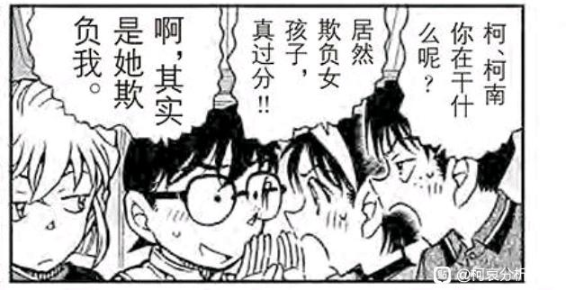
一、拉窗帘之前：穷途末路的新兰关系
在上个帖子我曾经提到小兰的【关东冠军】是用来垫世良武力值的垫子，本帖我们主要看小兰取得冠军后柯南的态度。
如图，园子作为小兰的好朋友各种夸奖小兰，还请小兰吃蛋糕，旁边柯南就摆着一张臭脸，上来就【做你对手的那个女孩真可怜】，然后又认为小兰吃蛋糕只会变胖，没一句好话，柯南好像一直都对小兰的空手道无感，但还没有哪次像今天这样厌恶，关东冠军，如此值得庆贺的事情，柯南竟然一点鼓励都没有，只能说明伦敦后柯南对小兰已经完全耗尽了耐心。
这里我们发散一下思维，名柯里“做小兰对手的那个女孩”是谁呢？不是小哀就是世良，当然也可以是和田阳奈，或者赤木量子（？），但不管是谁，柯南都同情另一边而不是小兰，正如新一推理比赛时小兰永远支持服部，新兰关系的糟糕现状通过所谓“关东冠军”暴露无遗。
在上个帖子我曾经提到小兰的【关东冠军】是用来垫世良武力值的垫子，本帖我们主要看小兰取得冠军后柯南的态度。
如图，园子作为小兰的好朋友各种夸奖小兰，还请小兰吃蛋糕，旁边柯南就摆着一张臭脸，上来就【做你对手的那个女孩真可怜】，然后又认为小兰吃蛋糕只会变胖，没一句好话，柯南好像一直都对小兰的空手道无感，但还没有哪次像今天这样厌恶，关东冠军，如此值得庆贺的事情，柯南竟然一点鼓励都没有，只能说明伦敦后柯南对小兰已经完全耗尽了耐心。
这里我们发散一下思维，名柯里“做小兰对手的那个女孩”是谁呢？不是小哀就是世良，当然也可以是和田阳奈，或者赤木量子（？），但不管是谁，柯南都同情另一边而不是小兰，正如新一推理比赛时小兰永远支持服部，新兰关系的糟糕现状通过所谓“关东冠军”暴露无遗。
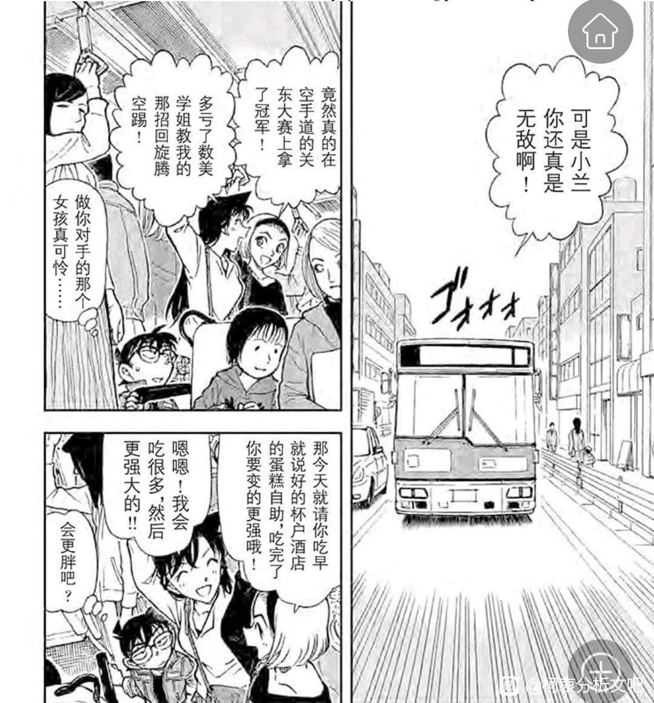
2024-07-12 10:47 | vvvvxxxxx:没好话不鼓励，柯南这里的态度是真的没有那种恭喜或者夸夸的心态，不过一开始吐槽对手可怜应该只是针对毛利兰说的那个回旋踢，柯南觉得被这招打了会很惨，成为了这一段的这种吐槽役的角色，搞笑成分居多吧。2024-12-19 13:45 | tuokie🌋:胖这个对于日本女生是非常非常不好的吐槽2025-11-10 17:02 | 水溶100度C:怎么说呢，一般自己喜欢的人有高光，自己都会觉得开心+涨面子，如果是像高桥老师那种画风，乱马犬夜叉确实狗嘴里吐不出象牙，但这里是内心戏，就直接把打情骂俏的可能性给排除了，就是单纯的不感冒，不认同，类似于兰姐不认同新一喜欢破案那样2025-11-11 21:16 | susu我只爱自己:园子对小兰真好啊，陪她坐公交哎，她平时出门可是有专驾的2026-05-02 07:48 | 贴吧用户_J5ttEEa:回复 susu我只爱自己 :其实她没什么架子的
cy
并且我们知道，不但柯南不夸奖小兰的成绩，他也并未以新一身份表达任何正常的夸奖，小兰的确把自己获胜的消息发给新一了，新一是否回复不得而知，估计就算回复也不会像园子那样直率。
【因为小兰仍然决定吊着新一的告白，绝不主动回复】
在上一案【尖叫手术室】园子就已经对小兰说了要回复，过了4天左右小兰不为所动，甚至不愿意打个电话，她发这个“胜利短信”，无非是希望新一主动联系她，让新一明确上次的所谓表白内容，原本可以更甜蜜的短信变成了小兰策略的一部分。
难怪柯南对小兰取得关东冠军非常不满，他不得不应付小兰的短信，决不能落入小兰设置的告白陷阱中，这大大消耗了柯南对小兰本就不多的耐心。
（柯南会想一个极为保守的措辞，后来清水寺新一的台词也是非常谨慎的）
【因为小兰仍然决定吊着新一的告白，绝不主动回复】
在上一案【尖叫手术室】园子就已经对小兰说了要回复，过了4天左右小兰不为所动，甚至不愿意打个电话，她发这个“胜利短信”，无非是希望新一主动联系她，让新一明确上次的所谓表白内容，原本可以更甜蜜的短信变成了小兰策略的一部分。
难怪柯南对小兰取得关东冠军非常不满，他不得不应付小兰的短信，决不能落入小兰设置的告白陷阱中，这大大消耗了柯南对小兰本就不多的耐心。
（柯南会想一个极为保守的措辞，后来清水寺新一的台词也是非常谨慎的）
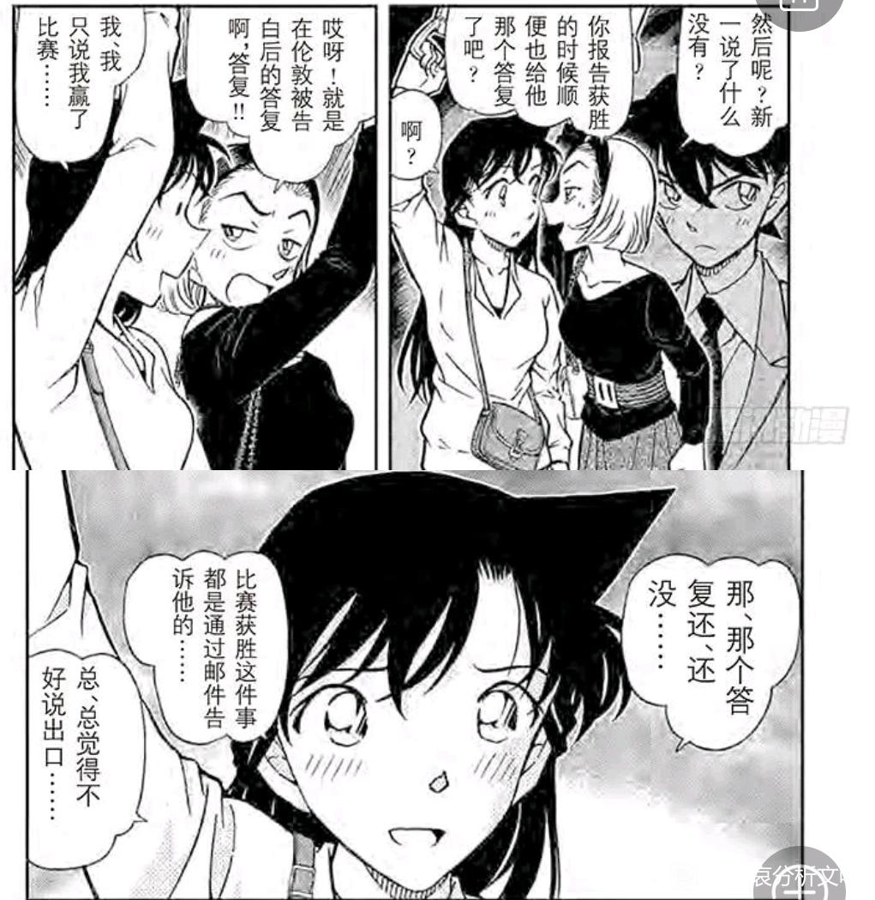
2024-07-11 10:42 | 黑暗刺猬-夏特:错觉吗？总感觉最后一框的角故意画大画现眼了点。前面不是细小就是各种对话框遮挡。2024-07-11 20:55 | 贴吧用户_7bZ4Ey4:回复 黑暗刺猬-夏特 :角就是这样，在73要话一些小兰讨人厌的操作的时候就会故意把角画尖画大为了提现小兰撒旦属性2024-07-17 09:57 | 奔腾的🐑驼:回复 黑暗刺猬-夏特 :角的存在会破坏画面的和谐，黑鸡头上也有角，早期对新一压迫感强的时候，黑鸡的角也很尖锐，后面成了新一挚友，很多时候都是用帽子或者画框来遮住这个角。兰姐的这个角，日本那边还有人统计过不同状态下的锐利程度2024-07-23 22:18 | -请修改昵称-:回复 黑暗刺猬-夏特 :可以去看小栗的视频，角论。非常厉害，角就是青山特意设计的，甚至连服部也有角，但是服部跟柯南是竞争对手时候，角很明显，服部跟柯南合作的时候戴帽子遮挡角。青山太细了。2024-07-28 10:31 | 贴吧用户_GUS8tXJ:可以蹲个链接吗2024-08-19 16:11 | 热心网友王BS:回复 -请修改昵称- :原来还有这种原因吗 学到了
哇 是新分析哦
新兰的问题靠新兰二人已经是不能解决的了，有且只有园子“拽着”新兰。
园子对于新一的“演绎”和众多新兰党对新一的印象颇为一致，纯粹一个恋爱脑，没有小兰就活不下去那种，然而很显然，柯南并非这种逆天的恋爱脑，即使面对瑛佑，柯南都并未有不得体行为，至于新出更是几乎无视。
以园子对新一的了解，我认为园子的“演绎”也只是表达手段而已，是为了让小兰更好理解后面那句话：
【你再浑浑噩噩的话，新一就要变心了！】
园子真正演绎的那个“没了对方就活不下去”“钻牛角尖觉得对方出轨”的人，不是新一而是小兰，赤木量子案我们已经见过小兰的操作了，还有手机篇等大量剧情展示小兰的钻牛角尖。
甚至园子完全清楚新一的魅力，说出了“那家伙还蛮受欢迎的”这种话。（我感觉园子有一段时间应该是喜欢新一的，但是柯南一直不知道园子曾经喜欢他💔）很遗憾，园子的忠告小兰是一句也没听进去，小兰宁可索要一个虚假的“新一在追求自己”的名分，也不愿意“放下身段”去主动表达对新一的喜欢。
园子对于新一的“演绎”和众多新兰党对新一的印象颇为一致，纯粹一个恋爱脑，没有小兰就活不下去那种，然而很显然，柯南并非这种逆天的恋爱脑，即使面对瑛佑，柯南都并未有不得体行为，至于新出更是几乎无视。
以园子对新一的了解，我认为园子的“演绎”也只是表达手段而已，是为了让小兰更好理解后面那句话：
【你再浑浑噩噩的话，新一就要变心了！】
园子真正演绎的那个“没了对方就活不下去”“钻牛角尖觉得对方出轨”的人，不是新一而是小兰，赤木量子案我们已经见过小兰的操作了，还有手机篇等大量剧情展示小兰的钻牛角尖。
甚至园子完全清楚新一的魅力，说出了“那家伙还蛮受欢迎的”这种话。（我感觉园子有一段时间应该是喜欢新一的，但是柯南一直不知道园子曾经喜欢他💔）很遗憾，园子的忠告小兰是一句也没听进去，小兰宁可索要一个虚假的“新一在追求自己”的名分，也不愿意“放下身段”去主动表达对新一的喜欢。
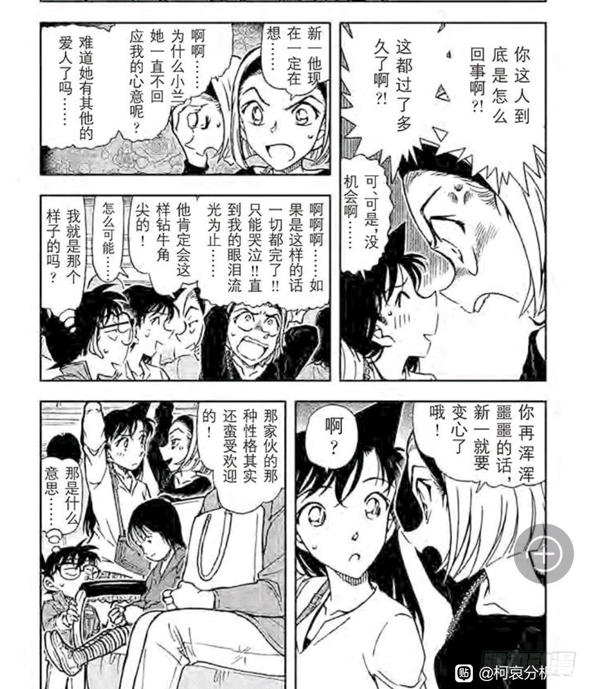
2024-07-11 12:57 | 凌蘭诗:我也觉得园子喜欢过新一……2024-07-13 05:33 | 贴吧用户_74P11b5:园子绝对喜欢过新一2024-07-19 09:47 | 贴吧用户_G7K47Ua:这样一比让我∠怎么活啊2024-07-22 22:26 | -请修改昵称-:确实，这一楼有对比，根据楼主说的我也想到了。和叶是勇敢的主动表白过的，只是平次没听见而已，高木听得清清楚楚。所以平和二人是真爱，不在乎谁先告白。反观新兰，难磕的原因就是青山强行按头新一，必须是新一放下身段去追求小兰，估计这就是他自己说的刻画的不同吧。2024-07-22 22:27 | -请修改昵称-:回复 -请修改昵称- :接上文，小兰是永远不可能主动表白的去追求新一的，我不妄加猜测小兰的内心到底咋想的，这样有黑她的嫌疑，反正青山是这么刻画的，sr要是不满意，去问青山本人，不要问我。我不知道，我只看漫画已经画出来的事实。2024-09-14 16:09 | 火锅赛高🐼:园子绝对喜欢过新一啦，问题是小兰知不知道这件事？小兰只有在恋爱相关的事上才会动脑筋2024-09-28 10:11 | 贴吧用户_0CCSe2P:小兰要是知道园子喜欢过新一，那这三个人的关系好地狱
回复 火锅赛高🐼 :说实在的，兰也有可能知道不戳穿并享受2025-01-09 13:56 | 贴吧用户_aPNe6V9:有一说一这能在十几年的相处中不喜欢上的真是神人吧2025-03-01 00:07 | ARK雍:新园感觉很好氪2025-11-11 21:24 | susu我只爱自己:回复 -请修改昵称- :园子应该痛苦抉择过选择兰这个朋友的，所以她撮合的最起劲，不然她会觉得她退让的意义在哪里？兰是她最好的朋友，新一虽然她嘴上贬，但是对着外人还是很维护他侦探形象的，都是她从小到大的朋友，她真心喜欢这两个人，所以她选择掐灭了这份懵懂的男女之情，成全她最看重的朋友。园子她真的，我哭死，兰拥有全世界最棒的闺蜜（之一）！运气好的人设果真不是盖的2026-01-05 17:39 | 星丿弋痕:回复 susu我只爱自己 :青山给园子安排的cp就是名柯里的真超人京极真我柯是小哀的眼镜超人
总之不知为何，柯南并没有否认园子说的“自己会变心”，而只是否认“自己受欢迎”，不知道是不是柯南把柯哀关系代入进入了。
园子接着说得更具体了，“突然出现的情敌”即将登场，世良排面还是略输于小哀，小哀登场前可是有整个麻美学姐案件做垫子，世良的“情敌”身份竟然只有园子一句话，惨。
有关于小兰和世良打斗的部分上个帖子分析过了，小兰先手攻击却打不过单手世良，表现过于差劲，解除误会之后就开始吃代餐……
小兰吃代餐，柯南见得多了，但是被陌生男人（世良这时在所有人眼中都是男生）一句话就打动，接下来的行程也透露了，这人刚才还和小兰打了一架，代餐速度确实惊人，加之这还是小兰吊着新一表白的状态，所以柯南有这种表情确实不奇怪。
柯南的“愤怒”持续了三个镜头，然后柯南就被世良wink拉跑了……只能说新兰表白后的表现还不如表白前呢，各自的占有欲基本没有，代餐各种勤快也不存在什么“忠贞不二”，当然柯南这里并非吃代餐，只是想起了一点涟漪篇而已，论代餐还是小兰会吃。
园子接着说得更具体了，“突然出现的情敌”即将登场，世良排面还是略输于小哀，小哀登场前可是有整个麻美学姐案件做垫子，世良的“情敌”身份竟然只有园子一句话，惨。
有关于小兰和世良打斗的部分上个帖子分析过了，小兰先手攻击却打不过单手世良，表现过于差劲，解除误会之后就开始吃代餐……
小兰吃代餐，柯南见得多了，但是被陌生男人（世良这时在所有人眼中都是男生）一句话就打动，接下来的行程也透露了，这人刚才还和小兰打了一架，代餐速度确实惊人，加之这还是小兰吊着新一表白的状态，所以柯南有这种表情确实不奇怪。
柯南的“愤怒”持续了三个镜头，然后柯南就被世良wink拉跑了……只能说新兰表白后的表现还不如表白前呢，各自的占有欲基本没有，代餐各种勤快也不存在什么“忠贞不二”，当然柯南这里并非吃代餐，只是想起了一点涟漪篇而已，论代餐还是小兰会吃。
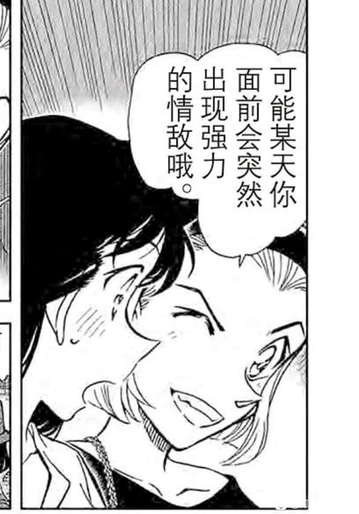
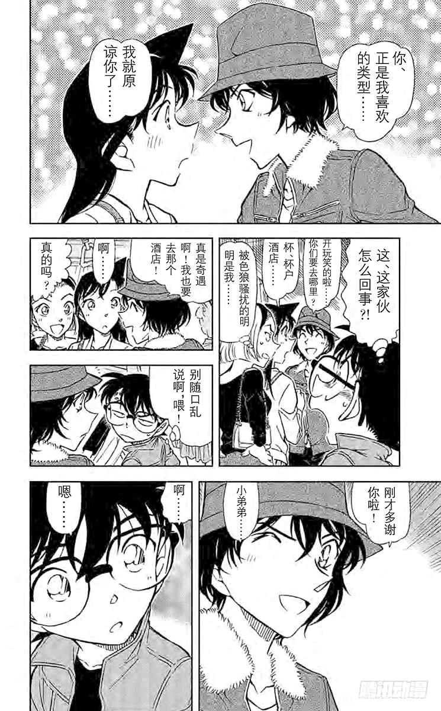
2024-07-16 01:02 | Neeko◆:后来柯南对于小兰的吃醋就给人一种雷声大雨点小的感觉，就是表面功夫，很少有漫画前期那种打动人心的小男生心思了...2024-08-23 13:01 | long126zhen:现在柯南已经发展到了为了保护自己的身份主动给小兰提供代餐的地步了。 快斗：表哥你谈个恋爱是怎么回事？为什么次次都要牺牲我？2024-09-14 16:12 | 火锅赛高🐼:回复 long126zhen :弟弟不就是这么用的吗2024-09-18 17:58 | 影毓裴小童鞋:回复 long126zhen :以前:我怕她看到以后只会更想我 现在:基德你去上号应付一下2025-02-10 08:01 | season4869:回复 long126zhen :是堂哥不是表哥2025-08-08 15:51 | 逐暗的崇光:回复 long126zhen :弟弟生来就是要被哥哥耍的。
众人前往酒店准备吃蛋糕，柯南顺便向园子科普截拳道…这剧情也是越看越怪，正常来讲发言顺位肯定是小兰啊，小兰知道世良用的是截拳道，结果呢？柯南在科普，小兰在找蛋糕吃
这里真有种是作者故意不给小兰高光的感觉，园子觉得世良帅，马上想到世良和京极谁更强的问题上，小兰早已跑偏，就这剧情我丝毫看不出小兰练过武，只在乎世良帅不帅，不在乎世良具体武力如何，这代餐吃得也是非常粗糙。
这里真有种是作者故意不给小兰高光的感觉，园子觉得世良帅，马上想到世良和京极谁更强的问题上，小兰早已跑偏，就这剧情我丝毫看不出小兰练过武，只在乎世良帅不帅，不在乎世良具体武力如何，这代餐吃得也是非常粗糙。
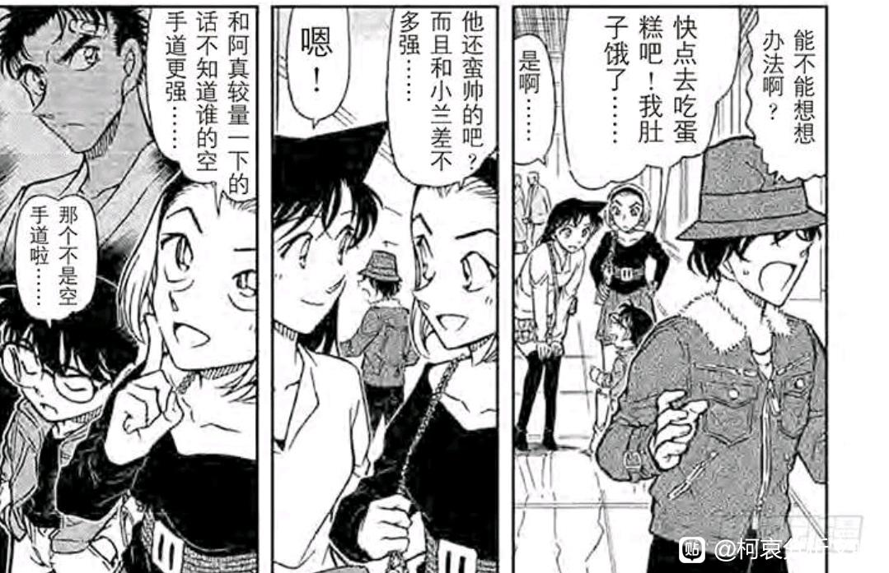
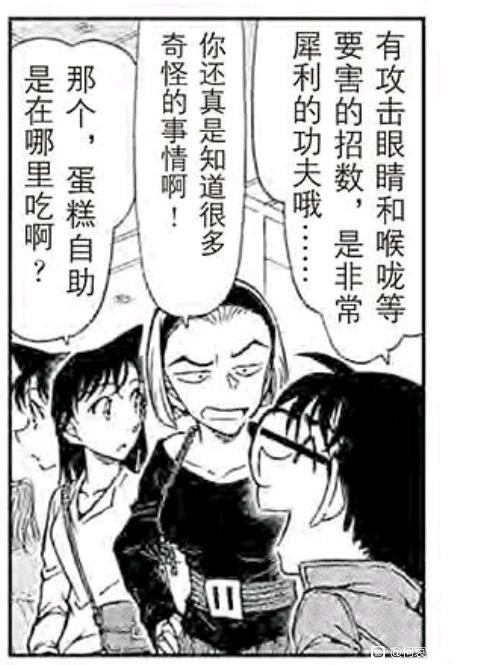
2024-07-22 22:33 | -请修改昵称-:第二个分镜我真蚌埠住了，小兰的台词不是啊？就是嗯！咋滴，园子逗哏你捧哏啊2024-12-29 13:13 | 卷福花生酱酱酱:是不是她觉得自己刚才打架没占到上风，特意回避话题2025-08-06 21:36 | jhhshdhhejjeh:截拳道攻击眼睛啊，朗姆被务武戳瞎啊。老贼这还挺严谨的
既然连小兰主场的武力值问题，小兰都显得如此状况外，那么案件上就更没有小兰什么事情了，世良在几乎所有方面都完全碾压了小兰的戏份，是全方面上位替代。
如图，发生了案件，世良和柯南冲向现场，小兰完全跟不上并且在画面里已经很小很小，看尸体得保安看，小兰只剩报警任务，三个路人参与度比小兰高得多，至于这个“啊？”的状态则持续到拉窗帘。
如图，发生了案件，世良和柯南冲向现场，小兰完全跟不上并且在画面里已经很小很小，看尸体得保安看，小兰只剩报警任务，三个路人参与度比小兰高得多，至于这个“啊？”的状态则持续到拉窗帘。
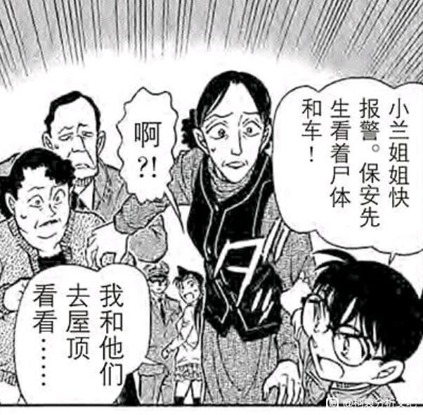
2024-09-14 16:16 | 火锅赛高🐼:这要是买股番，除了作者钦定或者女主体现在标题里改不了的情况，小兰早就被打成败犬了，然后再起个花名“兰不住”什么的2024-09-14 16:19 | 火锅赛高🐼:现在这个情况就是青梅竹马vs天降（有变成天降青梅的可能）vs天降青梅，青梅竹马buff不够啊2025-08-03 08:05 | 贴吧用户_082AJMG:真难绷啊，明明兰神占的画面那么小，还单独拉出来一个那么大的“啊？！”这个恶意太大了
赶上直播了
不仅在武力方面和案件方面，世良压制了小兰，另一个重要的方面叫做【推理出柯南的秘密】
同样是“新一远程破案”，小兰需要用身体挡住镜头才能博取新一的关注，世良却只需要故意稍微弄错一点点推理，就能诱使新一出现。（世良的表现不如小哀，因为世良这套手段被柯南发现了，而小哀的策略如七朵玫瑰，柯南基本是任小哀摆布的状态）
甚至可以说，世良这个角色的出现，本身就是对小兰的最大恶意，同样是对组织一无所知，世良在所有方面做得都比小兰好，而拉窗帘更是将这一创作意图彻底暴露出来。
同样是“新一远程破案”，小兰需要用身体挡住镜头才能博取新一的关注，世良却只需要故意稍微弄错一点点推理，就能诱使新一出现。（世良的表现不如小哀，因为世良这套手段被柯南发现了，而小哀的策略如七朵玫瑰，柯南基本是任小哀摆布的状态）
甚至可以说，世良这个角色的出现，本身就是对小兰的最大恶意，同样是对组织一无所知，世良在所有方面做得都比小兰好，而拉窗帘更是将这一创作意图彻底暴露出来。
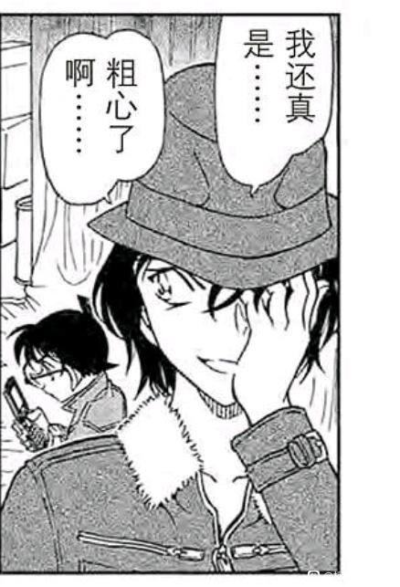
2024-07-27 16:11 | 贴吧用户_7PX2yAy:回复 🌐之徙 :woc真的好帅2024-09-08 23:48 | 大水魚誒:回复 贴吧用户_7PX2yAy :赤井一家都不是省油的灯2024-09-09 10:40 | 一颗鱼丸不要面:不愧是赤井一家的 ，这个世良好A2024-09-14 16:20 | 火锅赛高🐼:天降青梅pk青梅，妥妥的2024-10-15 02:10 | 葱叶Z:对组织一无所知到不至于，毕竟是带着玛丽一起来的2025-11-10 17:14 | 水溶100度C:没办法，世良设定就是带脑子，小兰设定只知道谈恋爱，只不过73画了快30年，除了没让兰成长之外，还安排了众多对照组，73其实很记仇吧
直播！！赶上直播了！！！cynb
这里我们来一个if线，假设世良没有别的背景，只是一个男高中生侦探，剧情会变成什么样子？
答：小兰大概率变心。
如图，当园子Cue新一时，小兰生硬地转移了话题，开始聊世良也是侦探，马上就要见面，以至于园子开始觉得世兰也不错，甚至世良第一次见面就对小兰表白了，这不比很不老实的伦敦新一好多了？
当然，我觉得世良（男）在拉窗帘之后就会赶紧跑路，小兰实在不适合找侦探男朋友，这种价值观只要不经常遇到案件，估计还没什么问题，侦探们就比较遭罪了。
答：小兰大概率变心。
如图，当园子Cue新一时，小兰生硬地转移了话题，开始聊世良也是侦探，马上就要见面，以至于园子开始觉得世兰也不错，甚至世良第一次见面就对小兰表白了，这不比很不老实的伦敦新一好多了？
当然，我觉得世良（男）在拉窗帘之后就会赶紧跑路，小兰实在不适合找侦探男朋友，这种价值观只要不经常遇到案件，估计还没什么问题，侦探们就比较遭罪了。
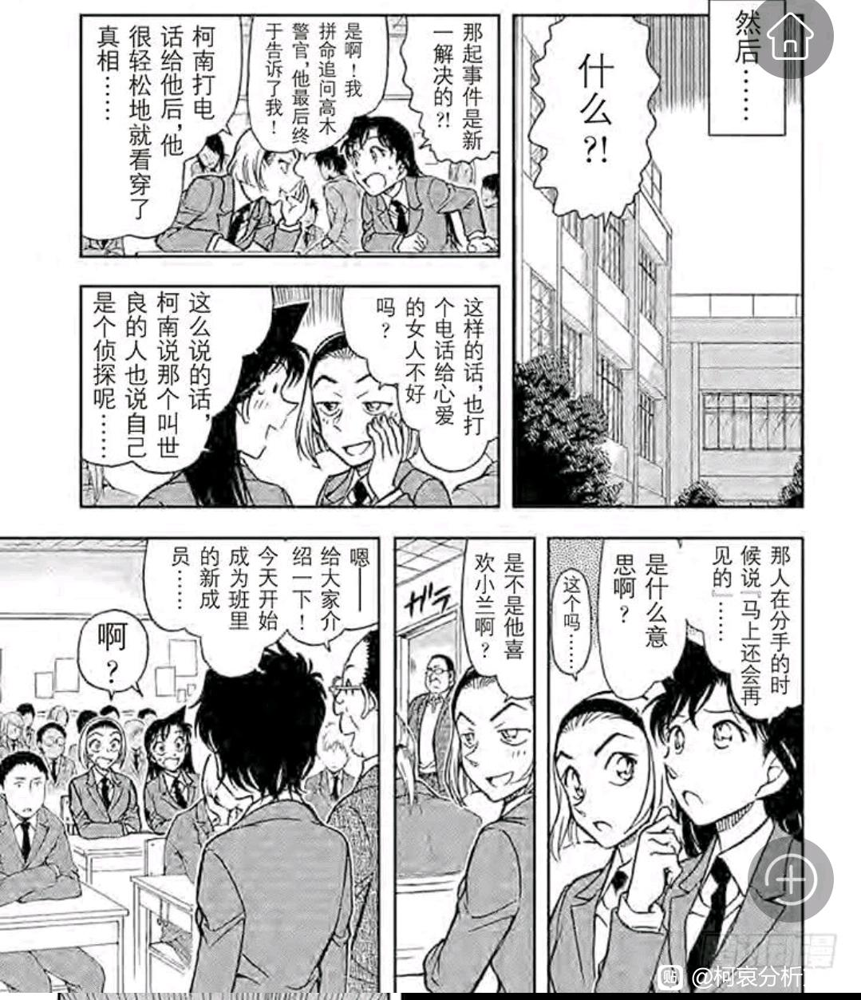
2024-08-07 00:26 | 感恩奥特曼😈:回复 🌐之徙 :越看∠火越大
赶上直播
赶上直播了？
cy
开心，等更
2024-07-10 23:48 | 贴吧用户_5K79MA3:回复 贴吧用户_5K79MA3 :这么想来，小兰有没有吃安室的代餐啊？毕竟离得近2025-08-03 08:08 | 贴吧用户_082AJMG:回复 贴吧用户_5K79MA3 :有经典招数贴胸夹手臂
不知道为啥，我真看不太出来世良的喜欢（难道是还没到时机？？？）
2024-07-11 06:15 | 🌐之徙:世良非常喜欢推理的时候rua小柯2024-07-13 05:35 | 贴吧用户_74P11b5:喜欢小柯 不喜欢新一2024-09-14 16:22 | 火锅赛高🐼:侦探间的惺惺相惜吧
小兰高级餐厅刷优作卡炫五杯冰激凌，感觉没有人讲呀？
2024-07-30 12:53 | 贴吧用户_JRR85GC:以前没注意哈哈哈2025-08-08 15:53 | 逐暗的崇光:不是，这也太能炫了。2025-08-08 15:54 | 逐暗的崇光:吃这么多冰淇淋头不会疼吗？
我对世良的理解和楼主基本一样。世良的出厂属性全方位碾压兰，同时她又是同学，那么出场基本只有两种可能，一种是主线，一种是和兰，园子。
首先兰和主线无关，那么就剩下日常线。由于世良是高配兰，那么在日常线中，和柯子配合的是世良，开地图是园子，兰的任务只剩下一个了，就是报警器以及和小五郎一样做小丑。
在这样的创作模板下，很难认可新兰会走到最后。
首先兰和主线无关，那么就剩下日常线。由于世良是高配兰，那么在日常线中，和柯子配合的是世良，开地图是园子，兰的任务只剩下一个了，就是报警器以及和小五郎一样做小丑。
在这样的创作模板下，很难认可新兰会走到最后。
2024-07-14 00:29 | 贴吧用户_54A79aG:别尬黑 毛利大叔有事他是真上 而且搞笑程度拉满 比角姐魅力值高10倍2024-07-14 15:58 | 岚丶影:回复 贴吧用户_54A79aG :你说的没错。不过我只是在聊承担丑角这部分剧情作用的角色功能。2024-09-14 16:23 | 火锅赛高🐼:没事的，兰姐还有本作品唯一指定福利担当这个名头
二、拉窗帘：兰粉提纯社会实验
倘若评选小兰的冥场面，则拉窗帘毫无疑问应该居于榜首，所谓“上车不能打电话”“爸爸被鬼吃掉了”只是智商问题而已；伦敦马拉松再离谱，毕竟小兰第二天多少也破了一点暗号；其余和叶不见了躲在仓库之类更是完全无法与拉窗帘相比。
如果说拉窗帘有什么创作目的，那就是【彻底提纯现有兰粉】，一切具备基本逻辑的观众，都应该意识到小兰的行为已经彻底走向极端，于是兰粉中只能剩下一些狂热而不可理喻的存在。青山似乎在用拉窗帘事件，将多年以来通过剧场版/动画打造的兰粉群体彻底打散（这一群体曾经阻碍了佑兰线），用以推进他真正想推进的CP。
拉窗帘事件的具体解析非常多，一些基本结论在此不再重复，例如小兰的拉窗帘本质是对世良的雌竞，柯南的方案是危险而无把握的，不存在“狙击了但犯人仍开枪”的情况，等等。
本节我准备换一个叙述方式，用类似纪传体的方法分析拉窗帘事件中的每个人物之心理，尤其关注众人对小兰拉窗帘行为的评价。
倘若评选小兰的冥场面，则拉窗帘毫无疑问应该居于榜首，所谓“上车不能打电话”“爸爸被鬼吃掉了”只是智商问题而已；伦敦马拉松再离谱，毕竟小兰第二天多少也破了一点暗号；其余和叶不见了躲在仓库之类更是完全无法与拉窗帘相比。
如果说拉窗帘有什么创作目的，那就是【彻底提纯现有兰粉】，一切具备基本逻辑的观众，都应该意识到小兰的行为已经彻底走向极端，于是兰粉中只能剩下一些狂热而不可理喻的存在。青山似乎在用拉窗帘事件，将多年以来通过剧场版/动画打造的兰粉群体彻底打散（这一群体曾经阻碍了佑兰线），用以推进他真正想推进的CP。
拉窗帘事件的具体解析非常多，一些基本结论在此不再重复，例如小兰的拉窗帘本质是对世良的雌竞，柯南的方案是危险而无把握的，不存在“狙击了但犯人仍开枪”的情况，等等。
本节我准备换一个叙述方式，用类似纪传体的方法分析拉窗帘事件中的每个人物之心理，尤其关注众人对小兰拉窗帘行为的评价。
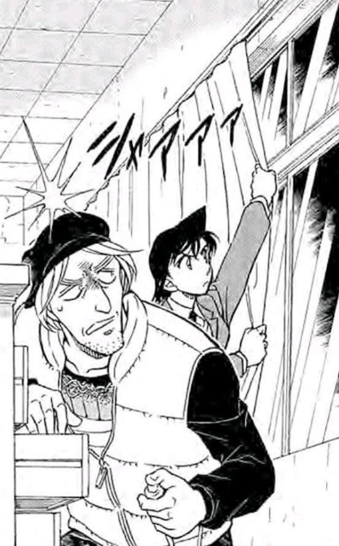
2024-07-18 11:53 | 发疯的法师:就是这会我开始从兰哀中立乐子人转柯哀党的 当初对线给我看麻了2024-08-06 11:30 | 舞糸喰♤:这里有个问题，现在好多兰粉应该大部分都不知道拉窗帘，因为他们只看过前两百集数2024-08-06 12:32 | enjoy大爱狗哥:回复 舞糸喰♤ :典中典2024-08-11 16:20 | 贴吧用户_J7DAKVP:回复 舞糸喰♤ :正确的2024-09-02 19:35 | 肥宅快乐水乾杯:回复 舞糸喰♤ :能不能细说 我之前还没入坑2024-09-08 23:50 | 大水魚誒:回复 舞糸喰♤ :笑不死我2024-09-14 16:25 | 火锅赛高🐼:回复 舞糸喰♤ :正确的2024-11-16 23:16 | 贴吧用户_a2PA18t:我就是前段时间重刷柯南看到拉窗帘越看越不对味，然后找B站解析，变得倾向兰黑，接着意外找到柯哀解析，最后找柯哀解析找到贴吧2025-07-15 12:59 | 第7个伯言:回复 舞糸喰♤ :其实青山针对的并不是中国的兰粉，而是日本国内的。2025-08-03 08:12 | 贴吧用户_082AJMG:回复 舞糸喰♤ :确实2025-08-08 15:55 | 逐暗的崇光:回复 贴吧用户_a2PA18t :sr转ca标准路线。这也太标准了2026-05-02 07:57 | 贴吧用户_J5ttEEa:回复 逐暗的崇光 :其实我感觉像我这样，中立转兰黑，然后再转柯哀才是最常见的吧，毕竟毛利兰太吸引仇恨了
2.1 小五郎的拉窗帘事件
我们先从小五郎开始。在遇到世良后，小五郎稍微吹嘘了一下自己“名侦探”的名号，但是当世良直指问题核心（柯南）时，我们发现小五郎的表情变了，显得非常不自信。
这里需要提到小五郎的一项优点：【自知之明】
诚然，小五郎经常标志性大笑，但那都是日常环境，小五郎本人是清楚自己几斤几两的，在面对新一/服部/世良/安室等正经侦探和一些真正的危险案件时，小五郎是绝不会草菅人命的，他可能会胡乱进行排除法，但并不会真正让局面失控（尤其在暴风雪山庄案件，小五郎表现通常都很出色）
与小五郎相反，小兰对自己的父亲毫无了解，由于小兰体系下不同人物的推理能力是混乱的，任何人都是“不输新一的名侦探”而新一是“不输爸爸的名侦探”，因此小兰竟然一脸兴奋地让父亲分享破案故事给世良，可称之为【评估崩坏】
小五郎的【自知之明】和小兰的【评估崩坏】将导致二人在拉窗帘事件中表现完全不同。
我们先从小五郎开始。在遇到世良后，小五郎稍微吹嘘了一下自己“名侦探”的名号，但是当世良直指问题核心（柯南）时，我们发现小五郎的表情变了，显得非常不自信。
这里需要提到小五郎的一项优点：【自知之明】
诚然，小五郎经常标志性大笑，但那都是日常环境，小五郎本人是清楚自己几斤几两的，在面对新一/服部/世良/安室等正经侦探和一些真正的危险案件时，小五郎是绝不会草菅人命的，他可能会胡乱进行排除法，但并不会真正让局面失控（尤其在暴风雪山庄案件，小五郎表现通常都很出色）
与小五郎相反，小兰对自己的父亲毫无了解，由于小兰体系下不同人物的推理能力是混乱的，任何人都是“不输新一的名侦探”而新一是“不输爸爸的名侦探”，因此小兰竟然一脸兴奋地让父亲分享破案故事给世良，可称之为【评估崩坏】
小五郎的【自知之明】和小兰的【评估崩坏】将导致二人在拉窗帘事件中表现完全不同。
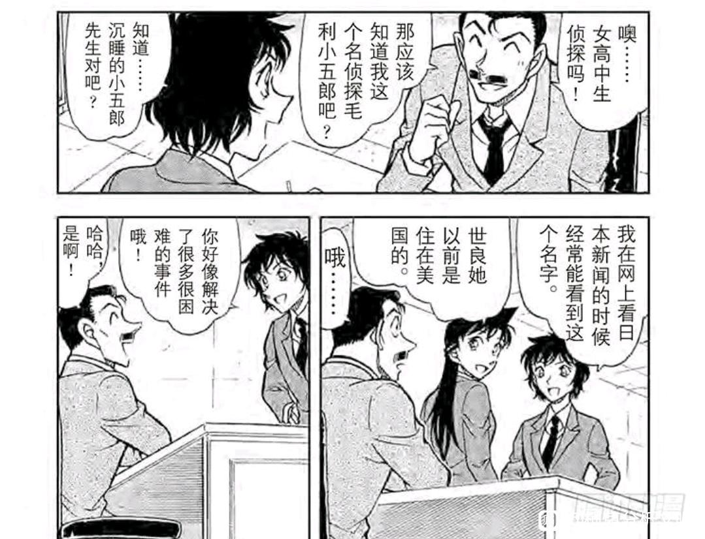
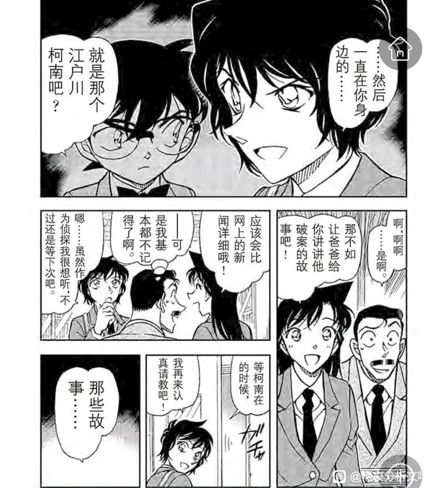
进入拉窗帘事件，小五郎在极为得体地稳住犯人之后，选择了他的最优策略：
【拖延时间】
如图，在柯南尚未介入前，小五郎以“看资料”“推理”“给波洛打电话报平安”等各种借口，强行拖延犯人高达四个小时，为柯南制定策略，少侦四处走访，狙击手就位和世良的临场发挥争取了相当宝贵的时间。
同时，小五郎利用自己的话术，在不激怒犯人的情况下套取大量信息，其中包括关键的话术【你怎么知道她不是自杀】，这些信息为柯南后来制定战术提供了大量帮助。
我一直认为拉窗帘事件中，小五郎贡献不亚于世良，然而很可惜，小五郎如此巨大的贡献，几乎被自己的女儿一笔勾销。
【拖延时间】
如图，在柯南尚未介入前，小五郎以“看资料”“推理”“给波洛打电话报平安”等各种借口，强行拖延犯人高达四个小时，为柯南制定策略，少侦四处走访，狙击手就位和世良的临场发挥争取了相当宝贵的时间。
同时，小五郎利用自己的话术，在不激怒犯人的情况下套取大量信息，其中包括关键的话术【你怎么知道她不是自杀】，这些信息为柯南后来制定战术提供了大量帮助。
我一直认为拉窗帘事件中，小五郎贡献不亚于世良，然而很可惜，小五郎如此巨大的贡献，几乎被自己的女儿一笔勾销。
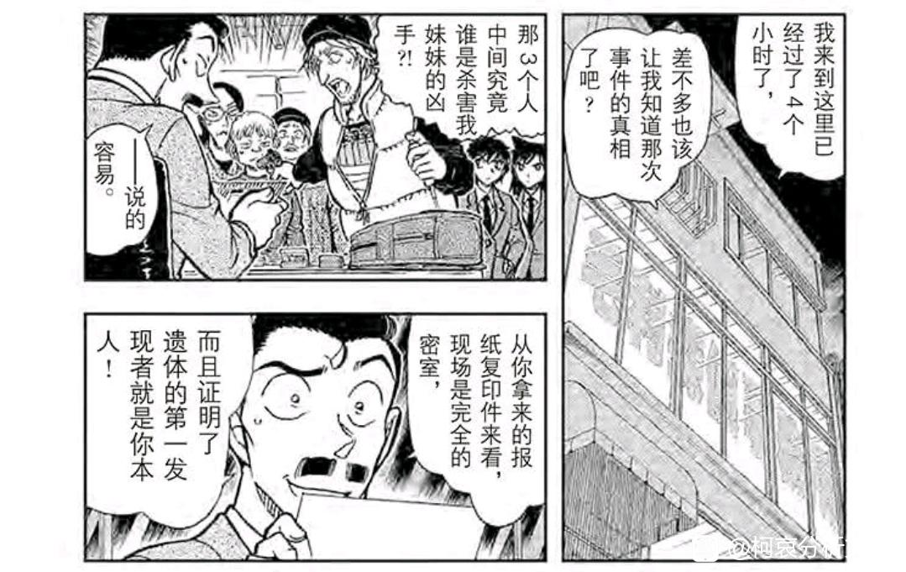
2024-07-11 13:50 | 贴吧用户_09635NV:毛利大叔真是好警察2024-07-11 15:46 | 光源刀:小五郎相对还是靠谱点的2024-07-12 15:48 | 贴吧用户_G7QD9XD:回复 🌐之徙 :这就是前警察的职业素养2024-08-18 20:08 | Wf_yjqd:确实，小五郎的水平是很优秀的警察了2024-09-08 23:53 | 大水魚誒:回复 贴吧用户_09635NV :真的，毛叔关键时刻还是靠点谱的。2025-03-24 22:02 | 了赡训:小五郎确实不适合做侦探但适合做警察
作为前刑警，小五郎对窗外有狙击手是存在概念的，只是不知道什么时候来（没有窗外视角），因此当世良发出种种奇怪指使，让犯人靠近座子时，小五郎应该是知道世良的目的了，他躲得非常远，显然小五郎已经做好了眼前犯人血溅当场的准备，甚至躲到了旋转椅后面。
然后让小五郎血压飙升的事情就发生了，自己的女儿以一种极为危险的路径把窗帘拉上了小兰几乎是和犯人擦肩而过，万一此时外面恰好开枪，死的就是小兰本人（同时谈判破裂，boom），小五郎这里有一颗巨大的汗珠，这个汗珠有若干解释；
1、小五郎因为犯人被激怒所以害怕
2、小五郎对女儿的行为表示无语
我倾向于后者，这种背面大汗珠通常只能表示无语😓，如果表示害怕，应该用汗流浃背之类的画法，显然小五郎无论如何也不可能认同小兰的离谱行为，又不可能在犯人面前发作，种种不满化做这滴尴尬的汗珠。
然后让小五郎血压飙升的事情就发生了，自己的女儿以一种极为危险的路径把窗帘拉上了
小兰几乎是和犯人擦肩而过，万一此时外面恰好开枪，死的就是小兰本人（同时谈判破裂，boom），小五郎这里有一颗巨大的汗珠，这个汗珠有若干解释；1、小五郎因为犯人被激怒所以害怕
2、小五郎对女儿的行为表示无语
我倾向于后者，这种背面大汗珠通常只能表示无语😓，如果表示害怕，应该用汗流浃背之类的画法，显然小五郎无论如何也不可能认同小兰的离谱行为，又不可能在犯人面前发作，种种不满化做这滴尴尬的汗珠。
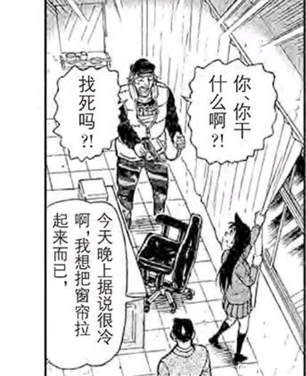
2024-07-17 10:28 | 奔腾的🐑驼:之前还没注意，才发现大叔的站位已经走出了桌子的范围，来到窗户的边缘位置了。也就是说，毛利兰从犯人的背后走过来的举动被大叔全程目睹，作为前刑警的大叔看到这一幕应该是相当窒息了……2024-07-22 22:43 | -请修改昵称-:有道理，看漫画着一格分镜，大叔都走到这一边了，完全给了狙击手足够的视野，这是刑警的基本素养。2024-09-14 16:28 | 火锅赛高🐼:真的无法理解小兰的想法，争风吃醋比这些被挟持的人命还重要吗？2024-10-05 15:01 | 冷加点衣服:看到这里怜爱大叔了……2024-10-26 10:07 | 独孤求败💯💯💯:回复 冷加点衣服 :md，大叔当年就应该🐍在墙上，要不迟早晚节不保2025-02-13 00:34 | ▫Hermit:兰神这表情，像是对犯人吼她表示一脸懵逼，她是觉得这是在救犯人所以不该被吼还是不知道被挟持的时候是不能做奇怪行动的😅2025-08-08 15:57 | 逐暗的崇光:回复 独孤求败💯💯💯 :看来小兰在情感上的作用就是防止在ca之前新园在一起。2026-01-16 12:42 | 阿瑟姆奶茶🌸:因为兰的行为是垄断圣经解释权的雌竞
以拉窗帘为分界线，之前的小五郎只需要拖时间就好了，之后小五郎却必须要认真听新一的推理，万一新一推理上出了什么纰漏，小五郎还得想办法补救。
之后柯南坦言自己的推理毫无把握，小五郎则惊恐万分，可见小五郎对整件事情的危险性有着极为清楚的认知。不知道劫后余生的小五郎会不会苦口婆心地再告诉女儿下次别拉窗帘，估计就算说了小兰也没听进去，毕竟小五郎是在对付案件，小兰是在对付世良。
之后柯南坦言自己的推理毫无把握，小五郎则惊恐万分，可见小五郎对整件事情的危险性有着极为清楚的认知。不知道劫后余生的小五郎会不会苦口婆心地再告诉女儿下次别拉窗帘，估计就算说了小兰也没听进去，毕竟小五郎是在对付案件，小兰是在对付世良。
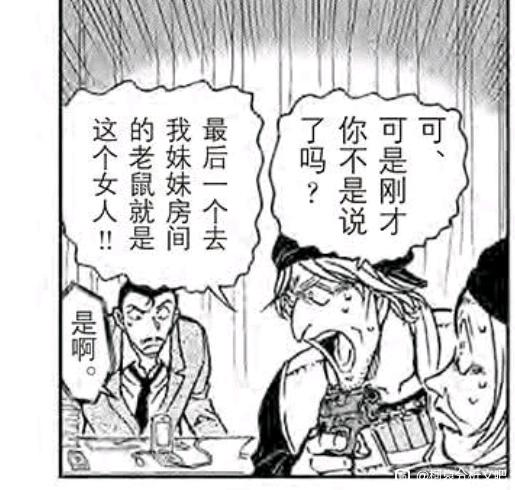
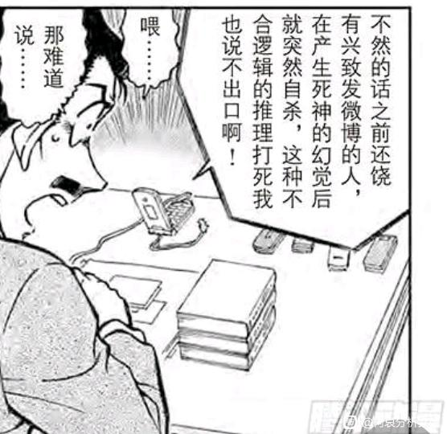
2024-09-08 23:56 | 大水魚誒:毛利：离死亡最近的一次······2025-05-14 22:31 | 江苏昆对对对:不不不，其实还有一次，那次更惊险，gin已经用狙抵着毛利的头了。2025-07-01 20:46 | 贴吧用户_aEX815V:回复 江苏昆对对对 :但700码外有赤井你又不说了，琴酒在天台上可没有兰酱帮忙拉窗帘来保护他啊
2.2 博士和三小只的拉窗帘事件
利用小五郎争取的大量时间，博士带着孩子们跑遍了整个住宅区，不但获得珍贵的目击证词，元太还弄来了珍贵物证，注意这次任务是在柯哀都没有参与的情况下完成的，博士最多也就当个司机，相当于三小只独立分头行动并完美完成任务，这在名柯里恐怕还是第一次（此前最接近的一次是洞窟探险，不过那时柯哀也都有实时帮助）
三小只何以有如此强大的行动力？这就不得不提之前几次少侦事件的【强锻炼性】了，包括但不限于：
【四神侦探团】基德陪练
【妖怪仓库】服部陪练
【紧急事态252】猫哥陪练
【和歌纸牌】小哀直接带着三小只主动出击
除了还未登场的安室，所有有头有脸的人物都带着孩子们参与了一件又一件的重要事件，终于在拉窗帘事件中三小只成为了独当一面的存在。
利用小五郎争取的大量时间，博士带着孩子们跑遍了整个住宅区，不但获得珍贵的目击证词，元太还弄来了珍贵物证，注意这次任务是在柯哀都没有参与的情况下完成的，博士最多也就当个司机，相当于三小只独立分头行动并完美完成任务，这在名柯里恐怕还是第一次（此前最接近的一次是洞窟探险，不过那时柯哀也都有实时帮助）
三小只何以有如此强大的行动力？这就不得不提之前几次少侦事件的【强锻炼性】了，包括但不限于：
【四神侦探团】基德陪练
【妖怪仓库】服部陪练
【紧急事态252】猫哥陪练
【和歌纸牌】小哀直接带着三小只主动出击
除了还未登场的安室，所有有头有脸的人物都带着孩子们参与了一件又一件的重要事件，终于在拉窗帘事件中三小只成为了独当一面的存在。
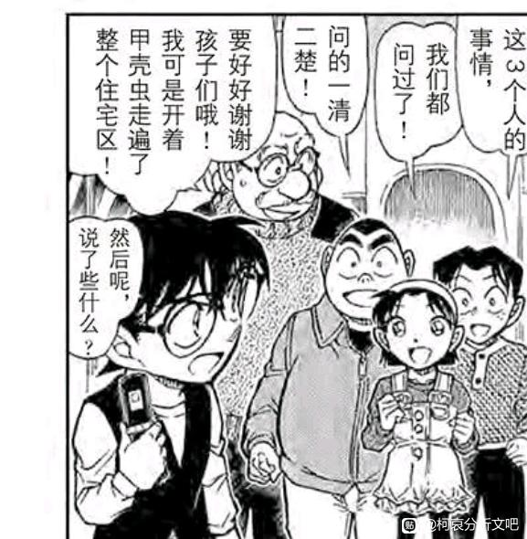
2024-07-23 11:16 | Asura兔子:【饱含心意的挂件】透子陪练2024-07-27 15:02 | 贴吧用户_5726KyK:回复 Asura兔子 :那个是后面的2024-08-03 22:00 | 陌上之霜:天，看到这里好感动。磕柯哀还能磕到好多意外之喜2024-09-02 09:19 | 小仓鼠可汗:三小有独有的问话方式，因为有的人在面对小孩和面对警察大人的心里防线不一样，比如高佐第二个事件。那2024-09-08 23:57 | 大水魚誒:回复 Asura兔子 ::透子排面有了，说起来挂件和涟漪魔术师一样发生在海边呢2024-09-14 16:29 | 火锅赛高🐼:好可靠的队友，泪目2025-07-07 23:39 | 雪者风形:已经成为福尔摩斯的小助手了
甚至，三小只的出色发挥，恐怕也是用来反衬小兰的灾难表现的。
从创作角度看，三小只的各类情报也可以有别的获取方式，例如让小哀全部查到，或者让犯人提供，实在不行让小梓过来提供情报也行，但作者没有选择这些方案，无非是让小兰看起来更糟糕一些。
如图，步美又注意到柯南在用变声器发出新一的声音，但是三小只对此并没有多追究，而是继续思考案件，后来又提供了“犯人自己调查过了”这一重要情报，相比之下小兰听到新一就开始各种恋爱脑的行为更加突兀而不负责任。
从创作角度看，三小只的各类情报也可以有别的获取方式，例如让小哀全部查到，或者让犯人提供，实在不行让小梓过来提供情报也行，但作者没有选择这些方案，无非是让小兰看起来更糟糕一些。
如图，步美又注意到柯南在用变声器发出新一的声音，但是三小只对此并没有多追究，而是继续思考案件，后来又提供了“犯人自己调查过了”这一重要情报，相比之下小兰听到新一就开始各种恋爱脑的行为更加突兀而不负责任。
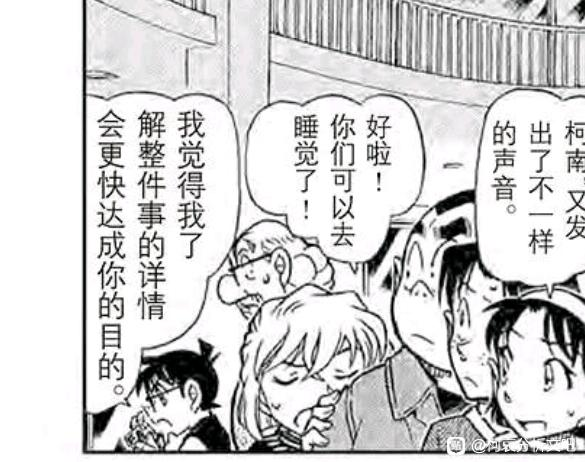
2025-07-01 20:51 | 贴吧用户_aEX815V:漫画内的领域是绝对受漫画外的操控的，也就是说青山允许步美（代表着三小只）进入柯南的领域，但绝对不会让小兰看见柯南用变声器（所以漫画中柯南藏身的位置再怎么离谱，不被允许看见的人永远看不见）2025-07-05 09:10 | Wf_yjqd:怎么说还是觉得当三小只面用有点胆大，光用变声器没啥，但是如果让认出是“新一哥哥”的声音呢（虽然一共没见过几次）2026-01-16 12:48 | 阿瑟姆奶茶🌸:回复 Wf_yjqd :这是不可能得，因为青山非常克制让新一和三小只产生接近柯南的交互，因为当时新一出现的锚点是兰，因此新兰状态下要极力避免这样的互动，和和叶不能见爱类似
2.3 小哀的拉窗帘事件
小哀在得知事务所发生案件之后，马上进入了“工作状态”，帮助柯南整合了大量嫌疑人和犯人的信息，虽然剧场版“哆啦哀梦”我们见得多了，不过漫画里小哀直接打开电脑查资料，这倒也是头一次。
由于就在柯南身边，加之出神入化的读柯术，小哀对柯南的理解事实上远高于事务所的小兰和世良，当柯南还因为推理出犯人（世良没推理出来）而有些得意时，是小哀提醒柯南，让他准备更优的方案。
当柯南准备欺骗犯人时，博士流汗，小兰流汗，世良流汗，柯南自己也压力很大而流汗，但是小哀是没有流汗的，我认为小哀此时不但清楚柯南准备欺骗犯人，也清楚柯南没有必胜的把握，还知晓柯南所承受的巨大压力，所以小哀所做的只是陪在柯南身边，给予柯南一个能坚定扯谎的精神后盾。
小哀在得知事务所发生案件之后，马上进入了“工作状态”，帮助柯南整合了大量嫌疑人和犯人的信息，虽然剧场版“哆啦哀梦”我们见得多了，不过漫画里小哀直接打开电脑查资料，这倒也是头一次。
由于就在柯南身边，加之出神入化的读柯术，小哀对柯南的理解事实上远高于事务所的小兰和世良，当柯南还因为推理出犯人（世良没推理出来）而有些得意时，是小哀提醒柯南，让他准备更优的方案。
当柯南准备欺骗犯人时，博士流汗，小兰流汗，世良流汗，柯南自己也压力很大而流汗，但是小哀是没有流汗的，我认为小哀此时不但清楚柯南准备欺骗犯人，也清楚柯南没有必胜的把握，还知晓柯南所承受的巨大压力，所以小哀所做的只是陪在柯南身边，给予柯南一个能坚定扯谎的精神后盾。
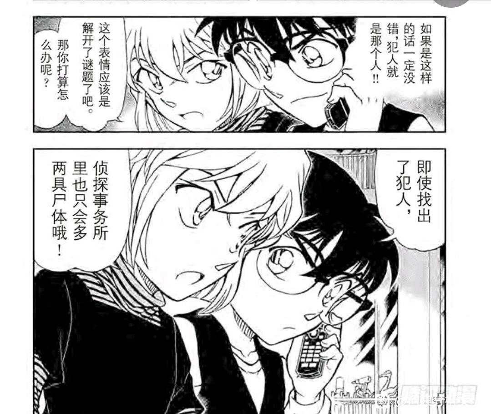
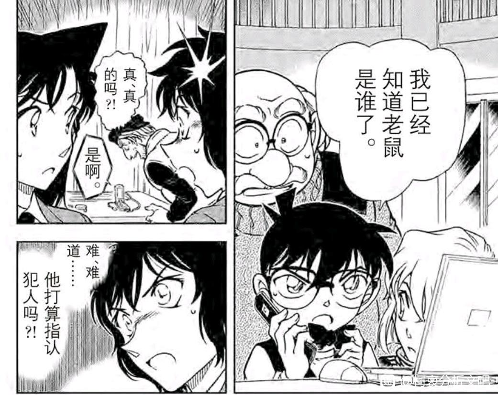
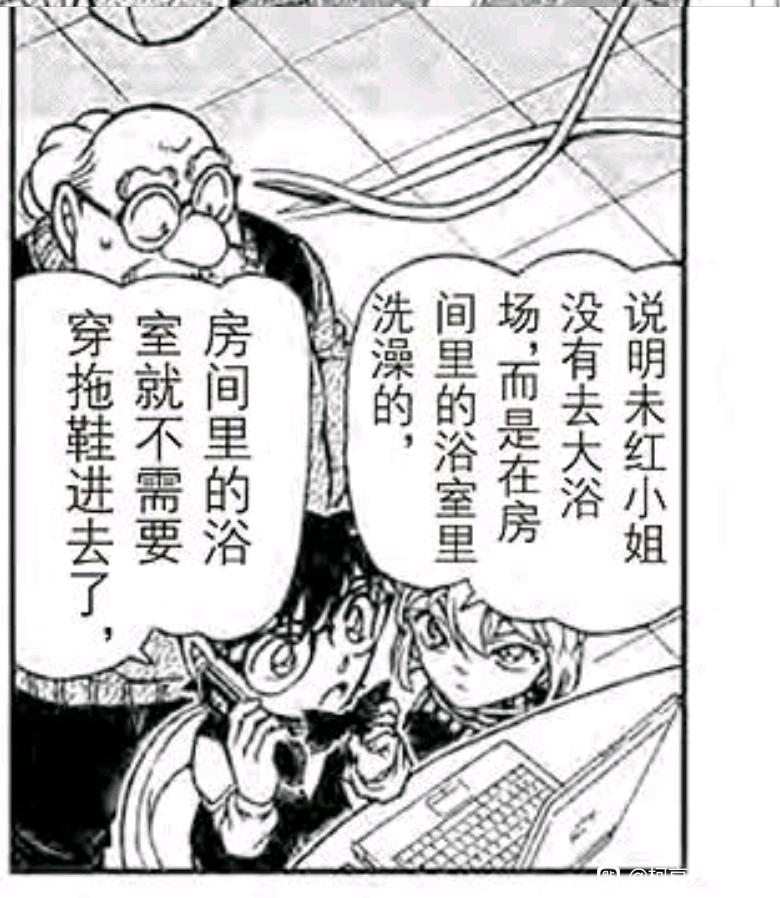
2024-07-28 14:34 | 贴吧用户_01E859Q:2024-08-03 22:02 | 陌上之霜:太好磕了，只要有你在
给兰粉来一点真正的贤内助的示范2024-08-07 00:39 | 感恩奥特曼😈:好好好，舒服咯2025-02-13 00:49 | ▫Hermit:她真的2025-03-24 22:14 | 了赡训:知乎有个评价，兰是不同频但阴差阳错弄对了，世良是同频但中间出了差错，哀是同频并提供支持2025-07-14 00:05 | 贴吧用户_J74NR8t:回复 陌上之霜 :∠会说贤内助是贬义词，要工藤新一把∠当祖宗供着才是新时代大女主的恋爱cp2025-07-14 14:03 | 陌上之霜:它们理解的贤内助本来就狭隘。。。以为洗衣做饭带孩子的保姆就是贤内助。。。 而且当祖宗供着的明显不是我哀吗。。。它们属于要啥没啥
赶上直播了！
除了帮助柯南解决危机，本案小哀还有两处感情线戏份值得分析。
第一处是小哀撺掇柯南打电话去问小兰“旁边的男生是谁”，这里有一个疑问：如果小哀没有这句话，柯南会去打电话问小兰吗？
答案应该是“不会”，旁边光彦都说了世良是女的（世良穿着裙子），柯南其实已经没有理由急匆匆打电话了，但是，为了不在小哀面前丢脸（毕竟小哀知道柯南表白了），柯南硬着头皮打了这个电话。
（当然，是以柯南的身份打电话的，与其说吃醋不如说八卦）
以上是柯哀二人的表面逻辑，接下来我们想深一层：
小哀的这一行为，不能视为她在“助攻”新兰，相反其实是有一点幸灾乐祸的味道（你表白的女生和别的男人走在一起啦），小哀饶有兴趣地观察柯南脸红的样子，显得玩心比较重。
至于柯南，他估计又要猜不透小哀的心思了，小哀喜欢他还是不喜欢他呢？这在柯南心中始终没有定论，结果小哀又来这一出，柯南更猜不透了，毕竟“猜不出喜欢的女孩的心思”嘛。
第一处是小哀撺掇柯南打电话去问小兰“旁边的男生是谁”，这里有一个疑问：如果小哀没有这句话，柯南会去打电话问小兰吗？
答案应该是“不会”，旁边光彦都说了世良是女的（世良穿着裙子），柯南其实已经没有理由急匆匆打电话了，但是，为了不在小哀面前丢脸（毕竟小哀知道柯南表白了），柯南硬着头皮打了这个电话。
（当然，是以柯南的身份打电话的，与其说吃醋不如说八卦）
以上是柯哀二人的表面逻辑，接下来我们想深一层：
小哀的这一行为，不能视为她在“助攻”新兰，相反其实是有一点幸灾乐祸的味道（你表白的女生和别的男人走在一起啦），小哀饶有兴趣地观察柯南脸红的样子，显得玩心比较重。
至于柯南，他估计又要猜不透小哀的心思了，小哀喜欢他还是不喜欢他呢？这在柯南心中始终没有定论，结果小哀又来这一出，柯南更猜不透了，毕竟“猜不出喜欢的女孩的心思”嘛。
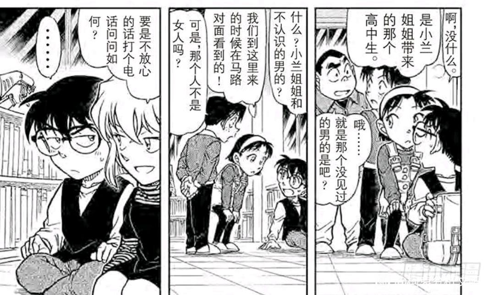
2024-08-03 22:06 | 陌上之霜:有时候觉得他俩的感情线能让强如柯导这么迷惑，让我们这么急，和小哀自己太爱玩也不是没关系😂哀酱收收玩心了啦2024-09-09 00:00 | 大水魚誒:回复 陌上之霜 :哈哈灰原毕竟是魔女姐姐系2025-06-28 22:13 | 自作主张阿萨德:回复 陌上之霜 :这就是恋爱喜剧了
第二处是图1，小哀以为手机是小兰夹的，此处小哀对小兰的看法也与之前有些不同，这里我们找手机篇做一个对比（图2）
手机篇，小哀是真心认为小兰“坚强”，毕竟小兰满月时虽然非常鲁莽，但的确对小哀比较震撼，而到了拉窗帘时，小哀对小兰已经没有任何友好滤镜了，是笑着调侃小兰，甚至有种“对小兰刮目相看”的意思。
我一直认为，小哀是知道伦敦篇全部细节的（可能是有希子或者博士和小哀说过），在伦敦之后小哀会认为小兰很不靠谱，小哀眼中的小兰不再是“比想象的要坚强”，而是“不过还真能干啊那个侦探事务所的女孩”。
不过柯南似乎不愿意让小哀继续保持对小兰的好滤镜，他直接说手机是世良动手脚的，毕竟小哀眼中小兰滤镜破碎了，柯南眼中小兰滤镜碎得更彻底，柯南早就不对小兰的案件表现抱有任何期望了。
手机篇，小哀是真心认为小兰“坚强”，毕竟小兰满月时虽然非常鲁莽，但的确对小哀比较震撼，而到了拉窗帘时，小哀对小兰已经没有任何友好滤镜了，是笑着调侃小兰，甚至有种“对小兰刮目相看”的意思。
我一直认为，小哀是知道伦敦篇全部细节的（可能是有希子或者博士和小哀说过），在伦敦之后小哀会认为小兰很不靠谱，小哀眼中的小兰不再是“比想象的要坚强”，而是“不过还真能干啊那个侦探事务所的女孩”。
不过柯南似乎不愿意让小哀继续保持对小兰的好滤镜，他直接说手机是世良动手脚的，毕竟小哀眼中小兰滤镜破碎了，柯南眼中小兰滤镜碎得更彻底，柯南早就不对小兰的案件表现抱有任何期望了。
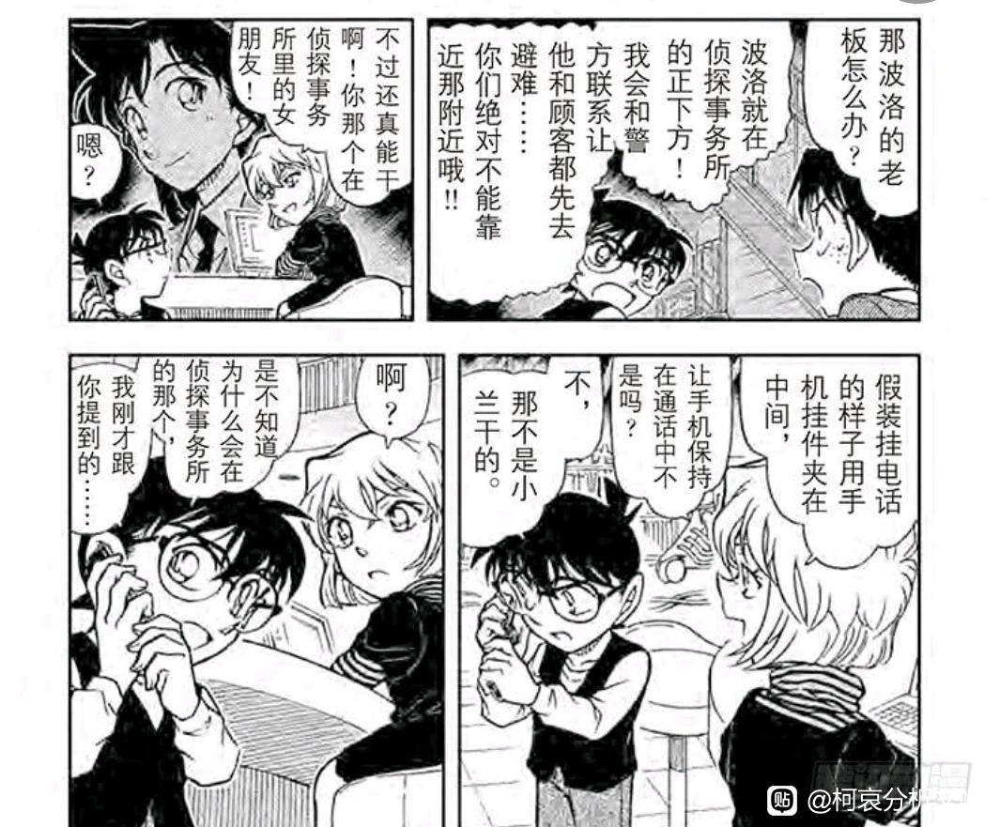
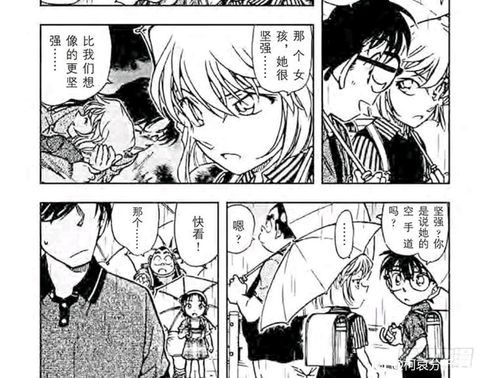
2024-07-12 14:28 | 卷福花生酱酱酱:哀：“一个在死缠烂打、到处追查以逼出拼命躲藏之人方面，有着恶魔般才华的人”2024-07-27 16:37 | 贴吧用户_7PX2yAy:难道对照时哀一定穿条纹？2024-09-14 16:34 | 火锅赛高🐼:回复 卷福花生酱酱酱 :搞不好兰姐有当专职查离婚出轨案侦探的天赋，不过大概率也会变成毛利大叔那样的糊涂侦探啦2025-02-10 03:26 | 天堂奴隶布鲁德:回复 贴吧用户_7PX2yAy :泳衣兰是奶牛色，73这要是故意的，那就 真没想到会走到这一步
最后我们来看一点点柯哀糖，感觉这也是一个小兰的回旋镖。
如图，柯南把世良的信息对小哀说了，这里世良是被形容为男生的，小哀对这位新出现的男性侦探的态度是：
【感觉不如工藤，真是不靠谱啊】
（后面这张报纸好像还是此前没有出现的柯基对决报纸，难道小哀也会专门找柯南上报纸的地方看？可能小哀是为了看镜头前经典半月眼的柯南）
如果我的印象没错，任何新侦探出现，小兰都是要吃一波代餐的，第一步“好像新一”，第二步开始脸红，第三步来一点身体接触，从服部到安室均被小兰吃过代餐，但是小哀就一点兴趣都没有。
看来青山确实是有一定精神洁癖的，甚至连世良都要切割一下，无非是要明确小哀眼中靠谱的侦探只有柯南一人。
如图，柯南把世良的信息对小哀说了，这里世良是被形容为男生的，小哀对这位新出现的男性侦探的态度是：
【感觉不如工藤，真是不靠谱啊】
（后面这张报纸好像还是此前没有出现的柯基对决报纸，难道小哀也会专门找柯南上报纸的地方看？可能小哀是为了看镜头前经典半月眼的柯南）
如果我的印象没错，任何新侦探出现，小兰都是要吃一波代餐的，第一步“好像新一”，第二步开始脸红，第三步来一点身体接触，从服部到安室均被小兰吃过代餐，但是小哀就一点兴趣都没有。
看来青山确实是有一定精神洁癖的，甚至连世良都要切割一下，无非是要明确小哀眼中靠谱的侦探只有柯南一人。
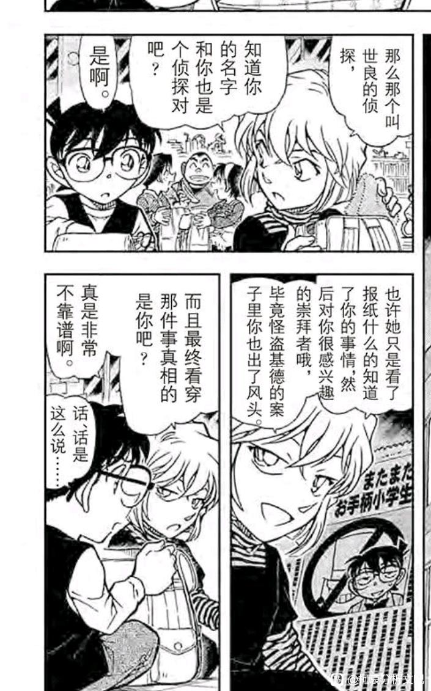
2024-07-11 16:46 | 一叶之秋🌿🍁🍁:“我的眼中只有你”2024-07-11 23:12 | 贴吧用户_5K79MA3:哈哈哈哈2024-07-14 00:38 | 贴吧用户_54A79aG:好好好2024-08-07 00:48 | 感恩奥特曼😈:就是这个味道2024-08-11 16:28 | 贴吧用户_J7DAKVP:对的对的，我要看的就是这个2024-09-22 14:51 | 贴吧用户_5NJGJDt:对味了2024-09-23 16:31 | 是宗缘啊♤:小柯平时那么臭屁的一个人，被直球夸居然害羞得结巴了。2024-09-28 18:16 | 爱次甜筒的烬℃:小柯你怎么结巴了，还有什么自己还没意识到的小心事吗2024-12-29 22:08 | 卷福花生酱酱酱:跟13楼，兰跟园子讨论世良的表情对比，高下立判
优雅，实在是太优雅了，等更
2.4 世良和柯南的拉窗帘事件
小五郎/三小只/小哀都不算拉窗帘事件的核心，只是真正解决案件的两人（世良和柯南）的帮助者，而剩下的三人则旗帜鲜明地分为两派：捣乱的小兰和努力解决案件的柯世。
在这种危机关头，世良没功夫去试探柯南的身份，柯南也马上选择了和世良合作，两人的注意力基本全都集中到案件上，没空像小兰那样胡思乱想。
当然，柯世二人具体的策略是有所不同，但我个人认为，【这种策略的不同，并非是二人侦探能力的差异，而纯粹是身处不同地点导致的行动不同】
如图，柯南会更倾向先破案（这会导致双死），因为柯南本人没在现场，不知道犯人十分凶悍，而世良会倾向先狙击（单死），这是因为世良和犯人打了一架，又在现场看到了狙击手。身处现场的世良根本没有余力去想如何欺骗犯人（这需要精确的措辞和预备），假如二人交换场地，则毫无疑问柯南会做世良的单死工作，世良则会利用远程优势尝试0死方案。
说到底这就是身处环境不同而已。
小五郎/三小只/小哀都不算拉窗帘事件的核心，只是真正解决案件的两人（世良和柯南）的帮助者，而剩下的三人则旗帜鲜明地分为两派：捣乱的小兰和努力解决案件的柯世。
在这种危机关头，世良没功夫去试探柯南的身份，柯南也马上选择了和世良合作，两人的注意力基本全都集中到案件上，没空像小兰那样胡思乱想。
当然，柯世二人具体的策略是有所不同，但我个人认为，【这种策略的不同，并非是二人侦探能力的差异，而纯粹是身处不同地点导致的行动不同】
如图，柯南会更倾向先破案（这会导致双死），因为柯南本人没在现场，不知道犯人十分凶悍，而世良会倾向先狙击（单死），这是因为世良和犯人打了一架，又在现场看到了狙击手。身处现场的世良根本没有余力去想如何欺骗犯人（这需要精确的措辞和预备），假如二人交换场地，则毫无疑问柯南会做世良的单死工作，世良则会利用远程优势尝试0死方案。
说到底这就是身处环境不同而已。
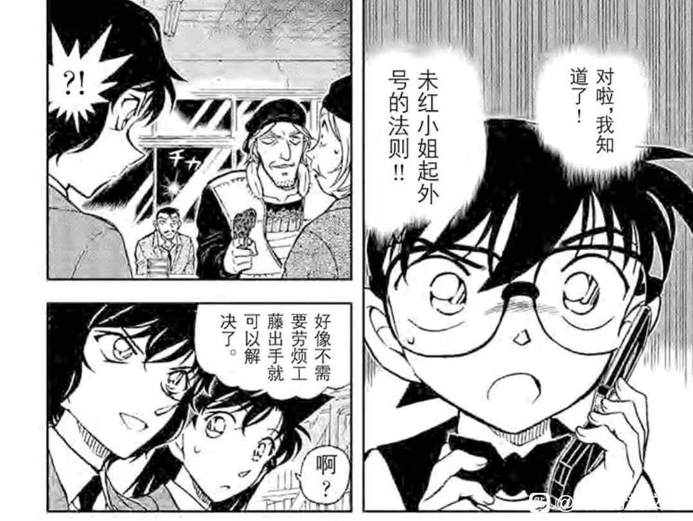
2024-07-12 10:40 | 史桩之玄枵:根据过去漫画（比如纽约篇）和绯色的子弹（台词大多数是老贼写的）来看，你柯属于重点在要将犯人绳之以法，实在不行干掉就干掉了无所谓的那种。本案你柯的选择就是类似，先看看能不能抓住犯人，不行就让警察击杀，所以在发现世良意图的时候才会使惊愕的表情2024-07-18 21:07 | bearaven:作风也有关系，世良是有调查侦探+特工味的2025-07-01 21:00 | 贴吧用户_aEX815V:青山的确会特意刻画出侦探们的不同之处（甚至可谓是各个都个性鲜明的），所以更凸现出兰狂吃代餐的无脑和哀对柯的欣赏的唯一性
同时，柯世二人是尊重对方的判断的。
世良决定行动时，柯南就尊重了世良的方案，并没有去阻止，因为世良在现场，对犯人的掌握应该比他更准确。
同理，柯南准备诈骗时，世良虽然有疑虑，但也是认可的，因为幕后的新一比现场的她有更多时间准备话术。
这就是属于侦探的默契了，尽管柯南这时还认为世良是男的，尽管这时世良完全不清楚柯南的底细而只知道柯南和新一的名字，但同为侦探就是可以建立这种默契。
这种默契和小兰毫无关系。
世良决定行动时，柯南就尊重了世良的方案，并没有去阻止，因为世良在现场，对犯人的掌握应该比他更准确。
同理，柯南准备诈骗时，世良虽然有疑虑，但也是认可的，因为幕后的新一比现场的她有更多时间准备话术。
这就是属于侦探的默契了，尽管柯南这时还认为世良是男的，尽管这时世良完全不清楚柯南的底细而只知道柯南和新一的名字，但同为侦探就是可以建立这种默契。
这种默契和小兰毫无关系。
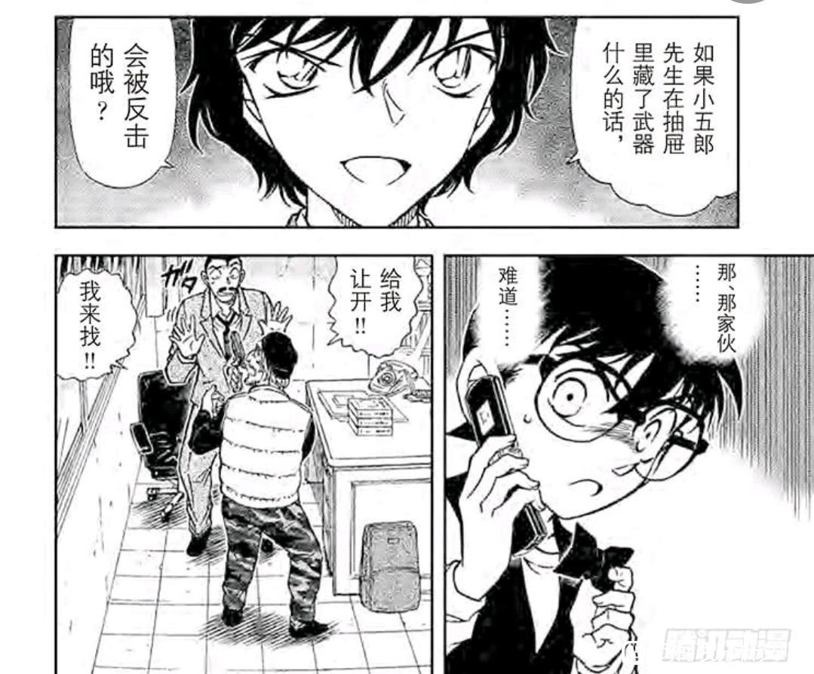
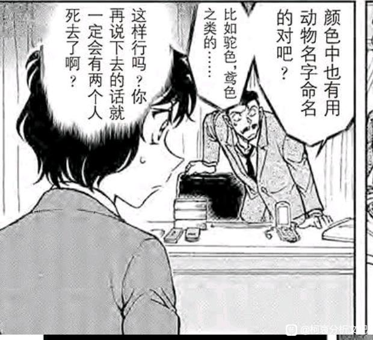
2024-07-11 15:55 | 光源刀:这里的世良画得好好看2024-08-23 13:41 | long126zhen:世良她也没得选啊，窗帘都已经拉了，她总不能和电话那头的新一吵起来吧2025-02-13 01:05 | ▫Hermit:高手间的默契
甚至应该说，世良的方案和柯南的方案，本质上并不冲突。
如图，狙击手已经瞄准犯人，但是是否开枪的权利仍然掌握在警方手中，且世良已经提到，工藤应该已经与警方交流过，即使瞄准了也要让他试着谈判一下，因此谈判渠道并没有关闭，只要这个状态保持一会，马上接入柯南的“冷静一下”欺骗话术，将形成最优解，即【柯南骗成功则全员活，骗失败则开枪单死】。
因此，二者结合的方案才是更好的方案，在有保底（狙击）的情况下尝试一个更好的结局，只要小兰乖乖站着不动，这个结局完全是可接受的，世良只需继续用什么方法让犯人保持在狙击窗口，柯南调整一下就可以开骗，上帝视角我们知道骗是会成功的。
如图，狙击手已经瞄准犯人，但是是否开枪的权利仍然掌握在警方手中，且世良已经提到，工藤应该已经与警方交流过，即使瞄准了也要让他试着谈判一下，因此谈判渠道并没有关闭，只要这个状态保持一会，马上接入柯南的“冷静一下”欺骗话术，将形成最优解，即【柯南骗成功则全员活，骗失败则开枪单死】。
因此，二者结合的方案才是更好的方案，在有保底（狙击）的情况下尝试一个更好的结局，只要小兰乖乖站着不动，这个结局完全是可接受的，世良只需继续用什么方法让犯人保持在狙击窗口，柯南调整一下就可以开骗，上帝视角我们知道骗是会成功的。
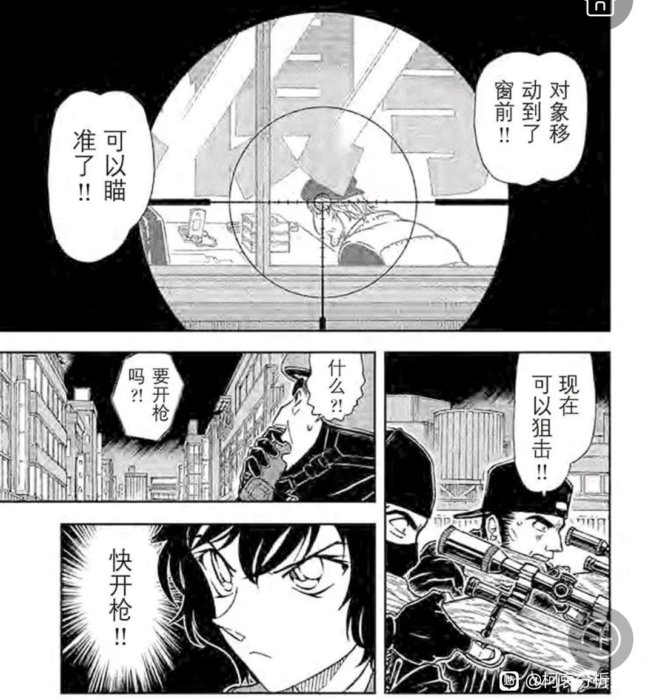
不幸的是，小兰执行了拉窗帘，这直接导致了以下后果：
1、狙击手不可能进行任何行动，世良的保底计划全盘失败。
2、犯人被激怒，全员死亡风险极高。
3、柯南箭在弦上，丧失了打磨话术的时间，只能临时开骗，骗失败的风险也增加了。
4、狙击手甚至没有了视野，无法指挥门口的警察，后面这是靠世良大吼指挥的。
被坑得最惨的世良已经束手无策，这里只能等柯南发挥，为了再确保骗术的有效性，柯南不得不将无辜的“老鼠”陷入相对危险的境地，用“老鼠”试探炸弹犯的底线，破坏炸弹犯的自信（这仍然有很高的风险，老鼠可能会无辜死亡，幸好少侦和小哀给了柯南大量资料，让柯南有了对炸弹犯的大体正确认知，即炸弹犯心思还算缜密，不至于说一句老鼠就冲动杀人）
相当于用“老鼠”的生命安全弥补了小兰拉窗帘带来的巨大风险，如果没有拉窗帘，我相信柯南会想一个更靠谱的，不用额外风险的方案，只是小兰根本不给他这个时间。柯南世良两人可谓使出浑身解数，终于有惊无险地摆平这一危机，之后推理犯人三选一那都是轻松愉快的环节了。
1、狙击手不可能进行任何行动，世良的保底计划全盘失败。
2、犯人被激怒，全员死亡风险极高。
3、柯南箭在弦上，丧失了打磨话术的时间，只能临时开骗，骗失败的风险也增加了。
4、狙击手甚至没有了视野，无法指挥门口的警察，后面这是靠世良大吼指挥的。
被坑得最惨的世良已经束手无策，这里只能等柯南发挥，为了再确保骗术的有效性，柯南不得不将无辜的“老鼠”陷入相对危险的境地，用“老鼠”试探炸弹犯的底线，破坏炸弹犯的自信（这仍然有很高的风险，老鼠可能会无辜死亡，幸好少侦和小哀给了柯南大量资料，让柯南有了对炸弹犯的大体正确认知，即炸弹犯心思还算缜密，不至于说一句老鼠就冲动杀人）
相当于用“老鼠”的生命安全弥补了小兰拉窗帘带来的巨大风险，如果没有拉窗帘，我相信柯南会想一个更靠谱的，不用额外风险的方案，只是小兰根本不给他这个时间。柯南世良两人可谓使出浑身解数，终于有惊无险地摆平这一危机，之后推理犯人三选一那都是轻松愉快的环节了。
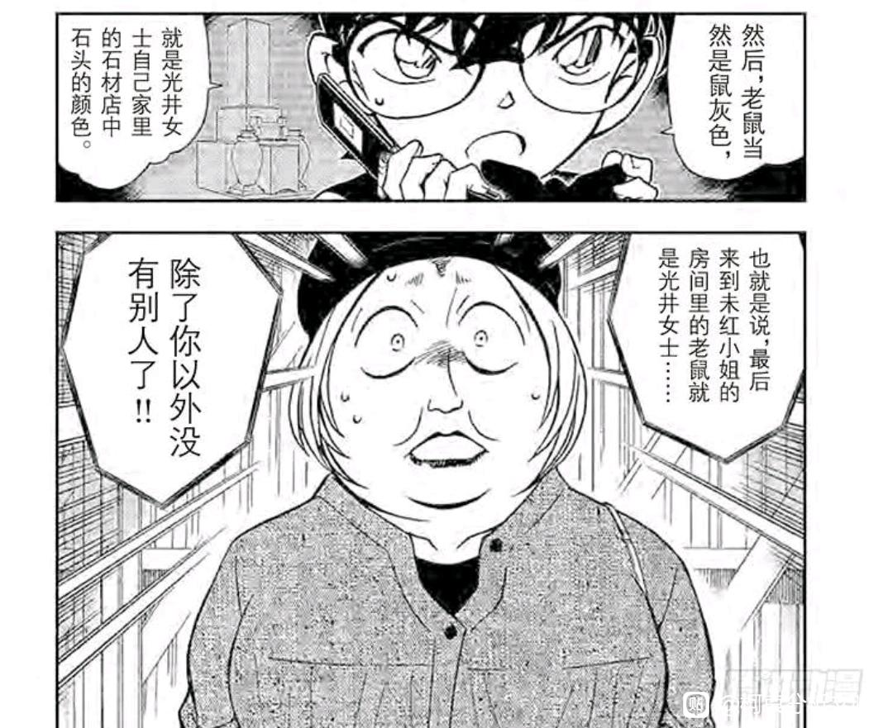
2024-07-11 18:57 | 清茶姑娘:天使lan也就剩个运气好了，所以永远她捅娄子用别人的安全去填。偏偏还从来不知道教训，还永远能赢得∠÷感动得热泪盈眶“天翔好善良哦”2024-07-12 14:12 | 520柯南8:回复 清茶姑娘 : 所以要是面对黑衣组织， 有的人只能去掉，不然红方会死得很惨重。2024-09-02 23:05 | 清茶姑娘:回复 贴吧用户_5A1WXNy :慷他人之慨嘛
至此我们大致梳理了世良和柯南的行为逻辑，接下来分析最后一幕，即世良的“你比我想象的强”和来自隔天新一的“谢谢”。
世良说的“强”是什么意思呢？我的理解是：【小兰在相信，或者说盲从新一这方面，比世良更强】
世良相信新一的判断是需要理由的，小兰盲从新一是不需要理由的，世良对此比较震撼，同时又刷新了对“魔法师”的认知。
由于世良好像是母胎单身，她应该不太能知晓小兰一些雌竞之类的心理，但是世良至少吸取了教训，之后再也不让小兰参案了，“比我想象的要强”也可以理解为“小兰比世良想的要麻烦多了”。
至于柯南，所谓的“谢谢”根本不重要，因为精华是在最后这个极为不满的表情，世良登场的幽灵酒店，柯南以这个表情开始腹诽“和你做对手的那个女孩真可怜”，拉窗帘结束，柯南还是这个表情“是说空手道吧”，言外之意世良说小兰强，最好说的是空手道，如果是拉窗帘强或者别的什么强，那柯南是不认可的。
柯南给小兰的短信，主体是解释自己为什么在博士家，于拉窗帘事件恐怕根本没有几句话，小兰的“谢谢”估计是断章取义，从柯南的表情看，更可能的情况是“谢谢你最后打倒了犯人，我昨天在博士家是因为…”
小兰只提取谢谢两字进行自我欺骗，柯南因此甚为不满。
世良说的“强”是什么意思呢？我的理解是：【小兰在相信，或者说盲从新一这方面，比世良更强】
世良相信新一的判断是需要理由的，小兰盲从新一是不需要理由的，世良对此比较震撼，同时又刷新了对“魔法师”的认知。
由于世良好像是母胎单身，她应该不太能知晓小兰一些雌竞之类的心理，但是世良至少吸取了教训，之后再也不让小兰参案了，“比我想象的要强”也可以理解为“小兰比世良想的要麻烦多了”。
至于柯南，所谓的“谢谢”根本不重要，因为精华是在最后这个极为不满的表情，世良登场的幽灵酒店，柯南以这个表情开始腹诽“和你做对手的那个女孩真可怜”，拉窗帘结束，柯南还是这个表情“是说空手道吧”，言外之意世良说小兰强，最好说的是空手道，如果是拉窗帘强或者别的什么强，那柯南是不认可的。
柯南给小兰的短信，主体是解释自己为什么在博士家，于拉窗帘事件恐怕根本没有几句话，小兰的“谢谢”估计是断章取义，从柯南的表情看，更可能的情况是“谢谢你最后打倒了犯人，我昨天在博士家是因为…”
小兰只提取谢谢两字进行自我欺骗，柯南因此甚为不满。
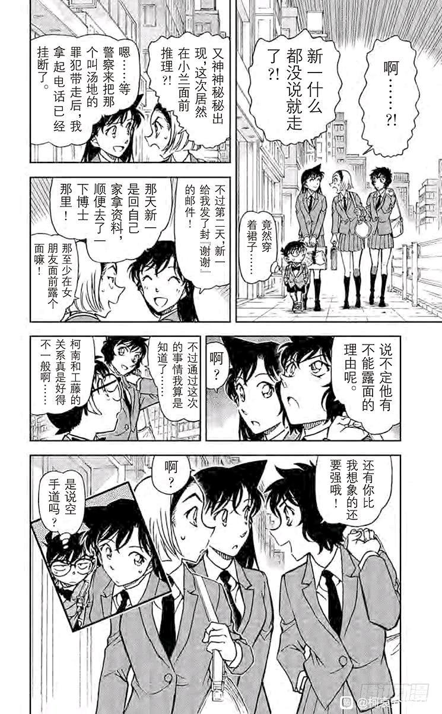
2024-07-11 16:04 | 光源刀:快更2024-07-11 19:10 | 清茶姑娘:不过天使∠应该不是盲从新一，而是在按照自己心愿随意打造新一这方面太强了，强得让人无语。因为很明显，即使只说拉窗帘事件，新一明显也不会赞同，天使∠就这么做了，为什么？显然不是盲从，而是按照自己愿望曲解新一的话，甚至假如失败，锅也能甩到新一身上。2024-07-18 23:10 | wwsabe:兰神赢法不一样2024-08-23 14:01 | long126zhen:我对这里就非常好奇，小兰身边的人对她的宽容度真的过高了，小五郎、世良、柯南全部都有理由有义务对她这次的表现进行批评、规劝，但结果她居然是如此兴高采烈和园子聊这事，聊的话题是“新一居然没露面就走了”，连最起码的危机意识都没有留下，这是何等的自说自话啊2024-09-07 14:02 | 竑傺:我觉得虽然同为红方，世良给自己的定位是来偷东西的“坏孩子”，从她的视角兰他们都是她拿到解药的障碍，一开始她以为从兰或者谁入手，端了新一的身份就能趁乱拿药了。但是一个个的都很奇葩，让她发现原本很快能搞定的事情变得很麻烦了（敌人比我想得强）。2024-11-15 09:16 | IC1101小王子:回复 竑傺 :回复 long126zhen :大叔可能说过，但是毛利兰实际上并不尊重大叔也不会听，同理，工藤也是现在对毛利兰的耐心已经耗尽，又经历了伦敦知道如果说教可能会造成更大的麻烦，至于世良才刚认识加上自身教养认为会有他人提醒，自己没立场尽，而且他现在还要与小兰打好关系来趁机拿2024-11-15 09:18 | IC1101小王子:回复 竑傺 :实际上是世良正注意到灰原并发动攻击的时候是在京极真当替身演员案，紧接着的古董盘子按就去博士家附近了，当时应该在2020年左右，实际上是时间跨度很长的2025-07-05 02:02 | 要来了👻:回复 long126zhen :小五郎其实并没有立场说她，他俩的父女关系是颠倒的2025-11-10 22:19 | 水溶100度C:[小兰在相信，或者说盲从新一这方面，比世良更强]以世良的能力和性格，不应该是这种逻辑，因为牺牲风险为前提的偶然胜利是不会被肯定的，逻辑应该是[新一成功不依靠狙击手且0死伤]，站在世良的视角里，她以为是小兰有充分的把握能预判到新一能做到这么完美的结局，所以自己的死1方案才变成不是最优选2025-11-10 22:22 | 水溶100度C:回复 水溶100度C :所以她当时才会觉得小兰比自己想象的还要强，但是她不知道，其实是柯运气好而已，因为电话这边的柯哀场，世良是0视角。幸存者偏差了
2.5 小兰的拉窗帘事件
平心而论，小兰一开始的表现虽然称不上多优秀，但也还行，听了世良的指挥先打一波犯人，这里是小兰本案第一个“啊？”，不过这种“啊？”是可以接受的，毕竟不能要求小兰反应向世良一样快。
但小兰正常的表现也就到此结束了，第一波打完，世良死死按住犯人，小兰就叉着腰站在后面💔💔💔关键最后一下还是小兰给的。
你说有没有一种可能，这时候小兰也冲上去，把犯人右手炸弹遥控直接缴械了，事件当场结束。
之后小兰的思维就完全跟不上了，又“啊？”了一次，世良不得不把小兰保护在身后，作为新鲜的关东地区空手道冠军，小兰的表现实在令人担忧。
这犯人还嘲讽两句“早就听说有个空手道的女儿”，其实要是没有世良，小兰空手道根本用不出来，在这段剧情之后，小兰思想上就完全成为了世良的附庸，完全没了主见。
平心而论，小兰一开始的表现虽然称不上多优秀，但也还行，听了世良的指挥先打一波犯人，这里是小兰本案第一个“啊？”，不过这种“啊？”是可以接受的，毕竟不能要求小兰反应向世良一样快。
但小兰正常的表现也就到此结束了，第一波打完，世良死死按住犯人，小兰就叉着腰站在后面💔💔💔关键最后一下还是小兰给的。
你说有没有一种可能，这时候小兰也冲上去，把犯人右手炸弹遥控直接缴械了，事件当场结束。
之后小兰的思维就完全跟不上了，又“啊？”了一次，世良不得不把小兰保护在身后，作为新鲜的关东地区空手道冠军，小兰的表现实在令人担忧。
这犯人还嘲讽两句“早就听说有个空手道的女儿”，其实要是没有世良，小兰空手道根本用不出来，在这段剧情之后，小兰思想上就完全成为了世良的附庸，完全没了主见。
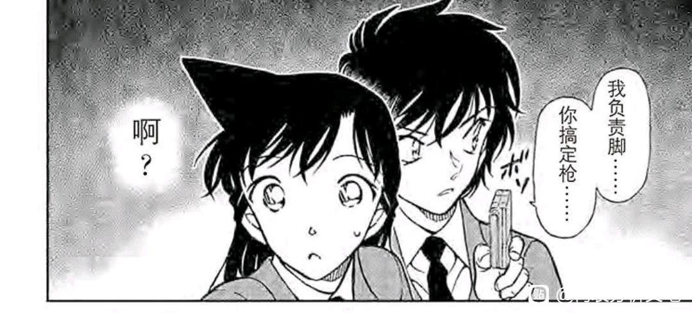
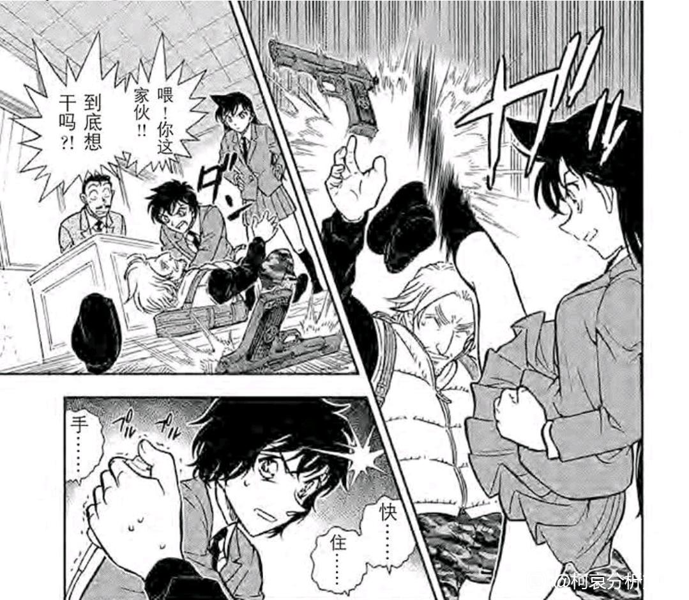
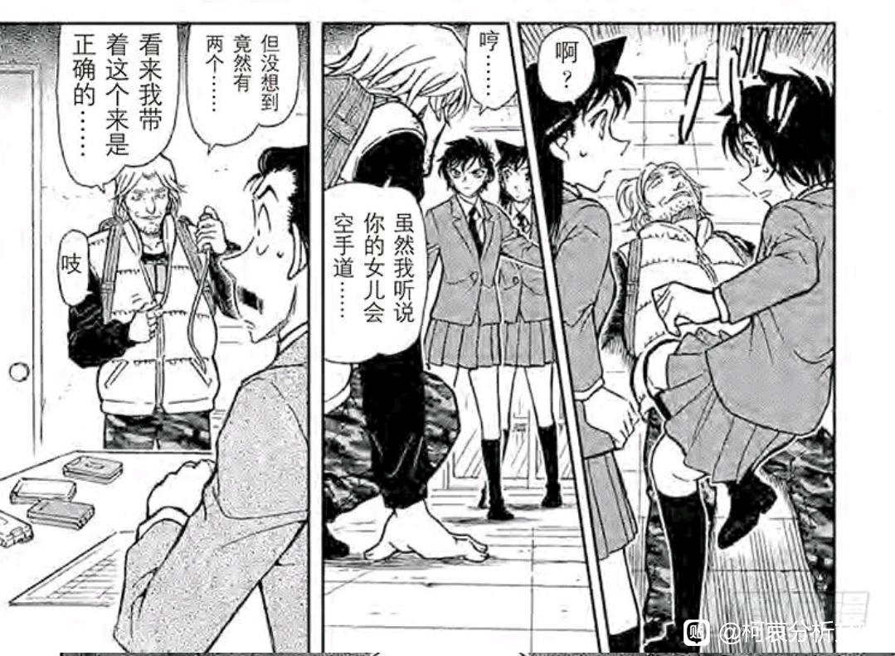
2024-07-11 19:11 | 清茶姑娘:天使∠是随时都要端着架子表现它是天翔2024-07-13 07:06 | snowfly1024:这有点苛责兰了，当时没人知道犯人右手有炸弹按钮呀2024-07-13 07:24 | 🌐之徙:回复 snowfly1024 :我的意思是她应该上去补刀，说不定就能发现，但是小兰选择了叉着手站在后面。2024-07-17 10:59 | 奔腾的🐑驼:制服犯人的话需要尽量确保犯人失去行动力，包括双手，这里世良第一下只追求把犯人放倒，没想到犯人会掏出一个遥控器。世良给了机会，而毛利兰也没有相应的意识弥补，把枪踢飞后叉腰看着，没有上前帮忙限制犯人行动尤其是双手，不然犯人是没有机会从口袋里掏出遥控器的。2024-07-30 14:16 | Black-♤:回复 snowfly1024 :不是苛责，只是说明她并没有危机意识，真遇到危险的时候她的空手道就失灵了，人设一直很统一，青山对她的塑造并没有偏离2024-10-15 02:29 | 葱叶Z:回复 snowfly1024 :之前兰姐姐偶尔在案件中的高光还是都能一脚把凶手踢晕的，总比她双手叉腰好2024-10-21 16:00 | 贴吧用户_5NQR378:回复 葱叶Z :我也觉得，不能一下踢晕吗？以前是有的吧2024-10-21 16:01 | 贴吧用户_5NQR378:回复 贴吧用户_5NQR378 :不晕，让人失去行动能力也可以的呀2024-10-22 01:28 | 葱叶Z:回复 贴吧用户_5NQR378 :柯南进事务所的第一个案子，兰姐姐一脚让犯人失去行为能力了2024-12-29 22:16 | 卷福花生酱酱酱:她在后面凹造型呢2025-02-13 01:33 | ▫Hermit:这叉腰小表情就尼玛幽默，站在后面狐假虎威，世良在控人像是给她打下手的😅完全没意识到持枪歹徒的危险性，人不帮忙控住，也不去控枪2025-02-13 01:38 | ▫Hermit:世良心累，这两父女真废啊，一个踢一脚之后就挂机，一个从头到尾呆坐在那😰2025-09-18 18:13 | Anastasia鳞:她的空手道可能只是用来漏底裤卖肉的。
接着世良用海参男夹手机，小兰又“啊？”一次，有一说一海参男也是重量级宝物，柯哀眼镜护身符日常救人于水火之中，但是新兰海参男一出手而和叶被绑架，再出手则拉窗帘，倒也是物如其人了。
之后手机里传来了新一的声音，小兰本就不多的理智这下直接归零，世良这时已经在思考如何解决这件事，小兰却开始乱想“为什么柯南手机是新一声音”，尤其新一还说“是我让世良开着电话的”，小兰立刻开始了自己的雌竞之旅，新一竟然帮世良出头，世良竟然和新一有如此默契，那小兰是什么呢？她凌乱了。
此时的小兰对眼前的景象完全无能为力，她无法进入世良和新一的世界，加之前一天园子的所谓“情敌论”，此时只要有一点办法能让小兰找回曾经的新兰残影，她一定毫不犹豫地实行。
（新一登场，小兰又“啊？”一次。）
之后手机里传来了新一的声音，小兰本就不多的理智这下直接归零，世良这时已经在思考如何解决这件事，小兰却开始乱想“为什么柯南手机是新一声音”，尤其新一还说“是我让世良开着电话的”，小兰立刻开始了自己的雌竞之旅，新一竟然帮世良出头，世良竟然和新一有如此默契，那小兰是什么呢？她凌乱了。
此时的小兰对眼前的景象完全无能为力，她无法进入世良和新一的世界，加之前一天园子的所谓“情敌论”，此时只要有一点办法能让小兰找回曾经的新兰残影，她一定毫不犹豫地实行。
（新一登场，小兰又“啊？”一次。）
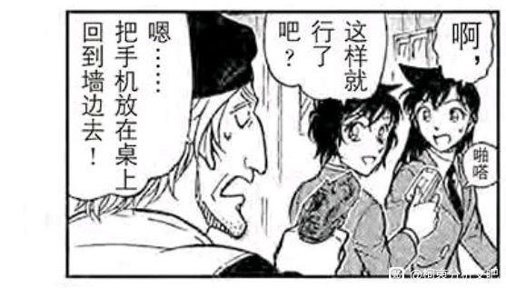
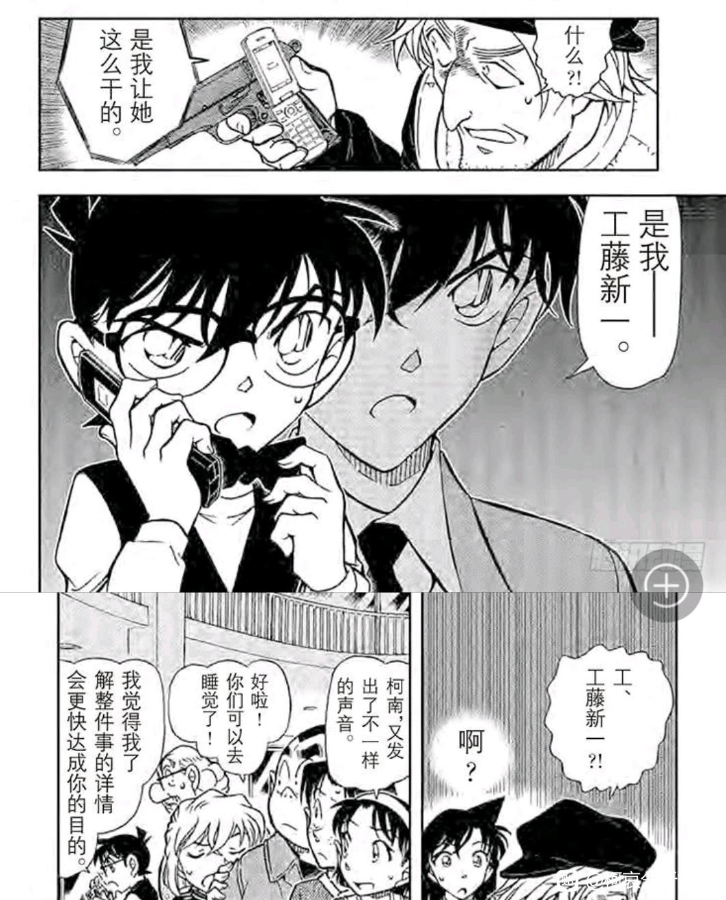
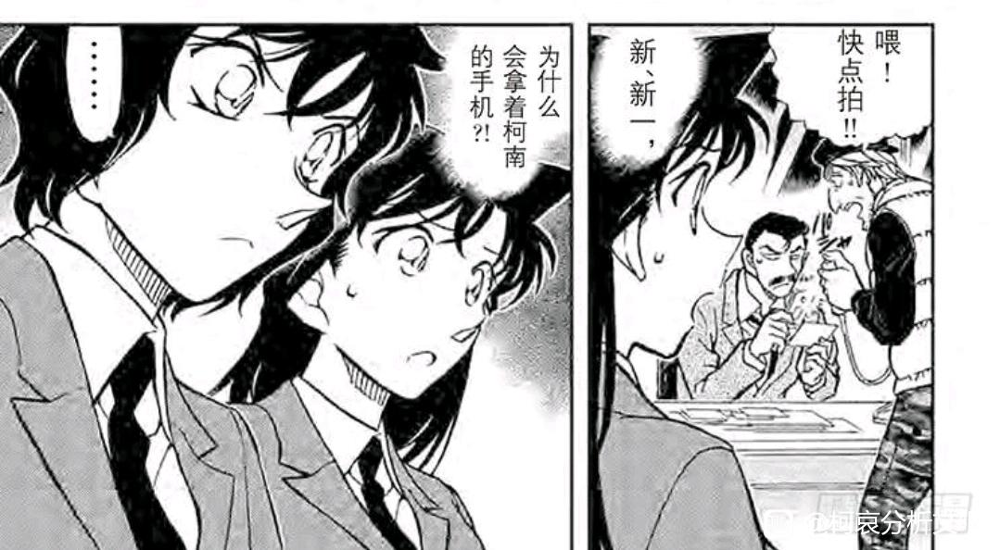
2024-07-11 19:14 | 清茶姑娘:有些人虽然恋爱脑，好歹坑的只是自己（顶多加上父母），而天使∠是永远选择对自己有利的一面把自己照顾的很好，永远在坑别人。就说拉窗帘，就算毛利小五郎被坑是因为没教好女儿，那世良和真凶之外的两个无辜者，包括楼下波洛的人呢？都成为了被坑的对象。2024-07-18 23:05 | 发疯的法师:回复 清茶姑娘 :有些人是指？2024-07-19 12:18 | 清茶姑娘:回复 发疯的法师 :我说的不是《柯南》里的人啦，泛泛而谈，比如王宝钏，恋爱脑坑了自己，可人家没拉着父亲和路人陪葬啊2024-07-23 22:55 | -请修改昵称-:同意本楼的分析，这里小兰的心理百分百的雌竞，因为世良和新一通话，而且新一说法明显向着世良这边。2024-09-04 10:45 | 🌐之徙:回复 时间嘀嘀嗒嘀嗒 :我个人认为⑤对小兰的刺激最大
这时候，世良好死不死和小兰说了狙击手的事情，可怜世良一片真心带小兰破案，被小兰拿来做雌竞工具。
（小兰的“啊？”实在太多了。）
之后世良还苦口婆心向小兰解释了为什么有狙击手，新一是怎么想的，接下来要怎么办等等大量问题，小兰估计没太听懂，因为她这时候居然还在脸红。
这时的小兰应该是还没想好拉窗帘，她应该觉得新一准备谈判，谈判破裂就让狙击手开枪；如果小兰真的不想让人死在她面前，这时候就该拉窗帘了。
（狙击手此时已经可以瞄准犯人了，只是毛利侦探事务所几个字和小五郎本人有点挡住，小兰却不知道这个信息，我觉得小兰不如真圣母一点，现在就拉窗帘，好歹还心口如一一点）
（小兰的“啊？”实在太多了。）
之后世良还苦口婆心向小兰解释了为什么有狙击手，新一是怎么想的，接下来要怎么办等等大量问题，小兰估计没太听懂，因为她这时候居然还在脸红。
这时的小兰应该是还没想好拉窗帘，她应该觉得新一准备谈判，谈判破裂就让狙击手开枪；如果小兰真的不想让人死在她面前，这时候就该拉窗帘了。
（狙击手此时已经可以瞄准犯人了，只是毛利侦探事务所几个字和小五郎本人有点挡住，小兰却不知道这个信息，我觉得小兰不如真圣母一点，现在就拉窗帘，好歹还心口如一一点）
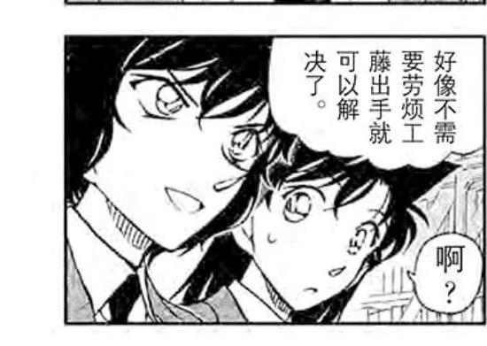
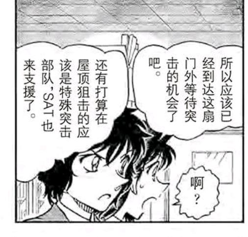
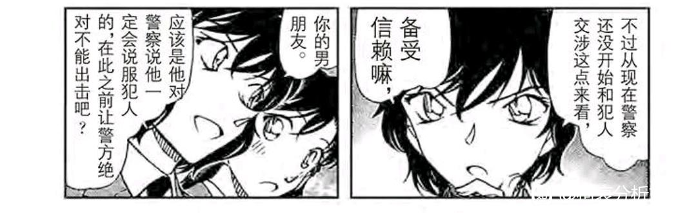
2024-07-11 19:16 | 清茶姑娘:天使∠的雌竞心理是最重的，任何事情都能想到恋爱上，任何环境都在担心新一被抢走。2024-07-17 11:10 | 奔腾的🐑驼:“啊”的次数跟死罗神篇有的一拼了。拼命维护新一的平和俩人 和 这里的与新一默契配合的世良 某种程度上说还真挺像的2024-08-03 20:59 | 贴吧用户_G725Xea:一说“你的男朋友”就脸红我是真绷不住，难道她能在任何情况下谈恋爱吗，这属于是概念神了2024-08-07 01:00 | 感恩奥特曼😈:同意你的看法，绝对是雌竞，开头那个情敌理论和后续衔接的太明显了2024-09-09 00:08 | 大水魚誒:角姐标配：啊？以及脸红2025-02-13 01:52 | ▫Hermit:第二格这么大反应的啊也是不把歹徒当人了，相当于直接把门外警察卖了2025-05-07 21:09 | 贴吧用户_742eCJ6:对对对，你要拉现在拉啊，哦还等着世良把老哥们忽悠过去了，你爹都走出安全距离了才拉，咋的？肠胃不通畅啊。这不摆明了，姐们跟你世良整点“正宫”的震撼吗？我真心觉得兰姐走错片场了，应该去甄嬛传片场历练历练。2025-07-07 23:49 | 雪者风形:回复 🌐之徙 :世良已经明确说了，“新一会说服警方不要提前行动，给他一个谈判的机会”……谈判窗口不需要拉窗帘也能确保
接着世良准备实施自己的计划，先不论如何让犯人进入狙击手视野，又和小兰解释了一大堆，大部分内容小兰还是没听懂，又有四个“啊？”，如果不是世良提醒，小兰甚至完全不知道新一不说犯人的理由。
她唯一听懂的部分就是世良说的“两个人变成一个人”，小兰终于抓住了救命稻草，只要让新一实现0人死亡，证明世良不如自己了解新一，那么自己和世良雌竞的过程就是自己胜利了。
（这个决心在此图左下角，小兰的省略号这里下定，这时小兰不“啊？”了，再怎么样0＜1＜2小兰还是懂的，至于更复杂的博弈模型，小兰绝不愿意了解。）
说干就干，拉窗帘，启动！
她唯一听懂的部分就是世良说的“两个人变成一个人”，小兰终于抓住了救命稻草，只要让新一实现0人死亡，证明世良不如自己了解新一，那么自己和世良雌竞的过程就是自己胜利了。
（这个决心在此图左下角，小兰的省略号这里下定，这时小兰不“啊？”了，再怎么样0＜1＜2小兰还是懂的，至于更复杂的博弈模型，小兰绝不愿意了解。）
说干就干，拉窗帘，启动！
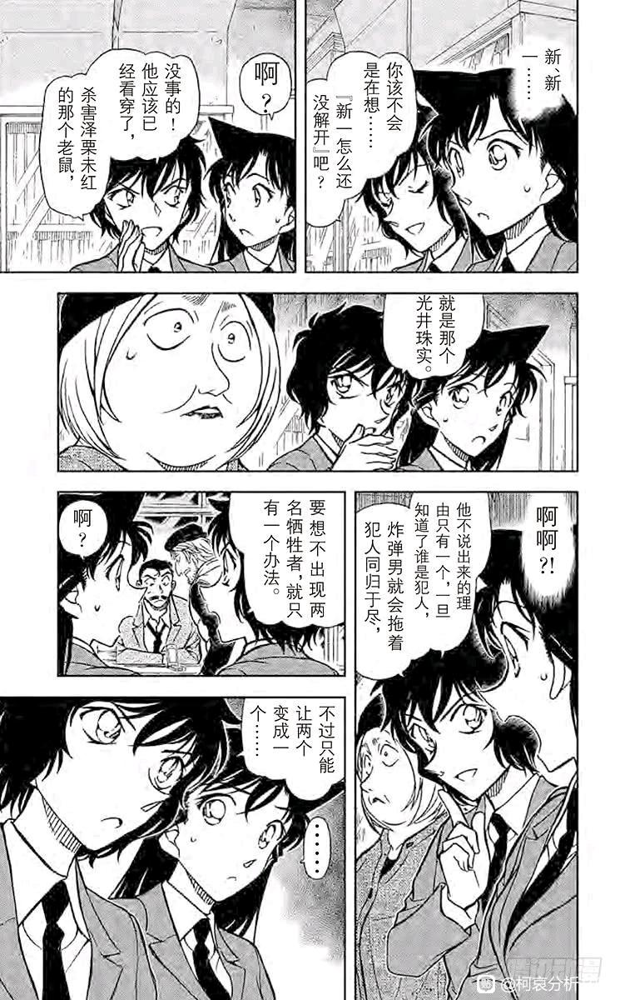
2024-07-11 19:17 | 清茶姑娘:说起来天使∠懂任何恋爱脑以外的东西吗？2024-08-07 01:02 | 感恩奥特曼😈:啊？2024-09-07 14:19 | 竑傺:兰想的是很好，但是新一是想在世良保底的基础上跟警察商量好了尽量0死。大家都在做准备的情况下尽量不让人死。只有她啥也不干，嚷嚷不想看人死。道德高点是要抢的，事是一点不干的。你们擦了屁股也是曾经想要人死的，也得转头来夸我心地善良。。。2025-02-13 01:59 | ▫Hermit:某种意义上陷入这么不利的局面还是世良自己作的，高估了兰神的智慧，巴拉巴拉给兰神讲了一大堆导致她去拉窗帘，所以后面苹果那里直接侦探领域把她排除在外2026-05-02 16:38 | 贴吧用户_J499bNQ:感谢解析小兰的行为
世良：寄。
讨厌看到有人死去？那刚才怎么不拉？世良早就告诉小兰外面有狙击手了，小兰明显是听到世良0＜1＜2之后才行动的，这理由实在离奇又错误。
至于“新一不会让任何人死掉”，在新一面前死去的人多了去了，远有宫野明美麻生成实，都是很好的人新一却来不及拯救，近有拉面店就是某人当场死亡，白色情人节也是经典抢救无效，当然这些都是柯南形态，也许小兰对新一的印象永远停留在纽约救下杀人魔的那个夜晚了，当时新一救杀人魔是为了维护小兰的安全，却被小兰认为是谁都要救，如今更是拿来做与世良雌竞的理由，小兰的杀伤力确实很大。
讨厌看到有人死去？那刚才怎么不拉？世良早就告诉小兰外面有狙击手了，小兰明显是听到世良0＜1＜2之后才行动的，这理由实在离奇又错误。
至于“新一不会让任何人死掉”，在新一面前死去的人多了去了，远有宫野明美麻生成实，都是很好的人新一却来不及拯救，近有拉面店就是某人当场死亡，白色情人节也是经典抢救无效，当然这些都是柯南形态，也许小兰对新一的印象永远停留在纽约救下杀人魔的那个夜晚了，当时新一救杀人魔是为了维护小兰的安全，却被小兰认为是谁都要救，如今更是拿来做与世良雌竞的理由，小兰的杀伤力确实很大。
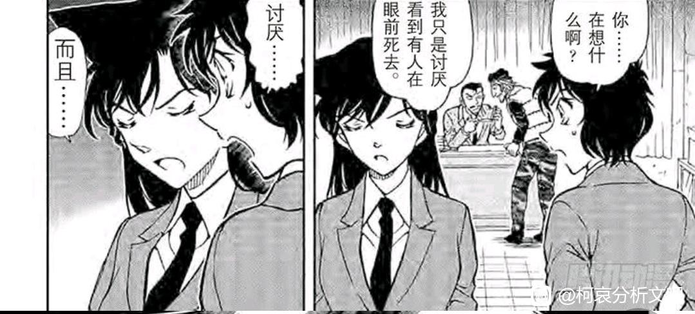
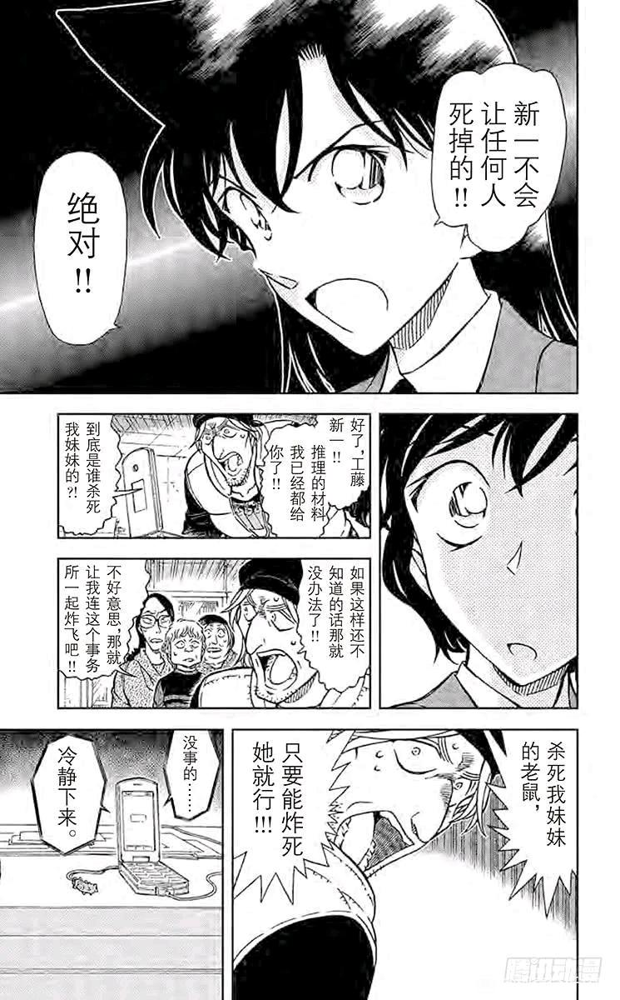
2024-07-11 19:20 | 清茶姑娘:说实在的，反派角色有反派角色的魅力，如果真像贝姐或GIN那样“劳资就坏了你怎么着”，好歹也落个酷。就天使∠这样的又当又立，嘴上说不想看人死，实际轻易赌上多条人命，还被∠÷追捧“好善良”，让它们自己成为当事人还夸不夸∠善良了？2024-07-12 08:33 | dantecao:兰内酱说新一绝不会让人死掉的图里的角异常突出2024-07-15 19:19 | 上総守信長ºº:世良的表情：你给爷整不会了2024-07-17 11:22 | 奔腾的🐑驼:回复 dantecao :在说到“只是讨厌看到有人在眼前死去”这句话时，73用画框遮住了角，说明这句话可能是她的真心，下面那句拿新一出来给自己正名，这时角的部分非常突出，她可能就没那么纯粹了。2024-07-17 20:01 | dantecao:回复 奔腾的🐑驼 :是的，个人觉得这一段有对新一的盲崇，也有对世良如此了解新一的"不甘心"(毕竟兰在漫画里多次对其他人说新一时用到"不甘心"这个词)。再过分点甚至可能这句话之前的几个"啊？"里不乏脑补世良成赤木量子和新一私下见面的情况。。。。2024-07-23 01:22 | 婧er倪:这里再看一遍还是觉得很无语2024-07-23 23:00 | -请修改昵称-:什么叫你讨厌，你是什么东西啊，拿大伙生命开玩笑，就因为你讨厌？你要后面说你自己绝对不会让任何死还强点，啥叫新一不会让任何人死，又开始道德绑架是吧
注意看第三个分镜的小兰的角，在黑色背景下，青山用白色描边特意突出了这个角！你说为啥青山不把绝对这两个字往上面一点放，挡住这个角呢?2024-08-03 21:02 | 贴吧用户_G725Xea:还有一个细节，小兰说话的时候虚化了头顶，唯独没有虚化角2024-08-03 22:32 | 陌上之霜:回复 奔腾的🐑驼 :确实，因为个人对于“只是讨厌看到有人在眼前死去”这句话还能接受，毕竟有些人它就是热心肠＞理性认知，就哪怕没有下面那句搬出新一来给自己正名，我都还不至于对她从无感到反感的地步。2024-08-03 22:32 | 陌上之霜:回复 奔腾的🐑驼 :恋爱脑雌竞就算了，现实中这种女人多到麻见怪不怪，但面对这么性命攸关的场合还盲崇盲圣母心，真的不是一般的恶心2024-09-09 00:10 | 大水魚誒:回复 上総守信長ºº :角姐震撼世良一整年2025-02-13 02:23 | ▫Hermit:死罗神篇的时候不见你这么信任😅世良现在是外人没接触过新一的情况下，兰神以女友身份给新一下定义误导世良对他的了解，莫名其妙的给新一增加了包袱2025-04-01 10:15 | 呱膜:2025-07-15 22:27 | 哈哈嘿喽heaven:直到如今，看见这画面还是绷不住，也真是多亏世良素质高心理承受能力强。假设这里新一失败了，最后事务所里就死伤很多人，那世良怕不是得内疚一辈子2025-07-16 00:26 | 无人说晚安99:回复 哈哈嘿喽heaven :失败了的话，世良就是牺牲的一员了2025-09-18 18:19 | Anastasia鳞:兰神：新一不会让任何人死掉→兰神追求永生（不死）→兰神是酒厂编外人员
然后这话小兰说出来了，世良哑口无言了，爽是爽，问题是小兰自己信吗？
这张图可以看出来，小兰还是害怕新一无法实现0死亡的，她并没有如她嘴上说的那样相信新一，如果新一真如世良所说无法实现0死亡，那就只能实现双死，小兰将用拉窗帘杀害一个人，真到了这种时候，小兰大概会战术失忆吧，毕竟纽约篇就是这么过来的。
幸好小兰赌对了，她不必陷自己于自责，反正总有人为小兰兜底。之后炸弹犯被带走，小五郎和世良在热烈讨论真正犯人是谁。【小兰领到了前情提要的任务，干巴巴地念着证物】
这就是全部新兰互动了，如果说新一的“谢谢”是指小兰念了这么长一段文字的话，那这谢谢也太廉价了，不过即使如此廉价的剧情，小兰依然能脸红，仿佛刚才的拉窗帘惊险时刻不存在一样，毕竟，自己已经取得了对世良的“胜利”。
（柯南让小兰念这些词，其实就是自己懒得念，又不好意思让世良念，于是丢给小兰。世良果然立刻推理出全部真相，拉窗帘事件之后柯南应该对世良的能力非常放心了）
这张图可以看出来，小兰还是害怕新一无法实现0死亡的，她并没有如她嘴上说的那样相信新一，如果新一真如世良所说无法实现0死亡，那就只能实现双死，小兰将用拉窗帘杀害一个人，真到了这种时候，小兰大概会战术失忆吧，毕竟纽约篇就是这么过来的。
幸好小兰赌对了，她不必陷自己于自责，反正总有人为小兰兜底。之后炸弹犯被带走，小五郎和世良在热烈讨论真正犯人是谁。【小兰领到了前情提要的任务，干巴巴地念着证物】
这就是全部新兰互动了，如果说新一的“谢谢”是指小兰念了这么长一段文字的话，那这谢谢也太廉价了，不过即使如此廉价的剧情，小兰依然能脸红，仿佛刚才的拉窗帘惊险时刻不存在一样，毕竟，自己已经取得了对世良的“胜利”。
（柯南让小兰念这些词，其实就是自己懒得念，又不好意思让世良念，于是丢给小兰。世良果然立刻推理出全部真相，拉窗帘事件之后柯南应该对世良的能力非常放心了）
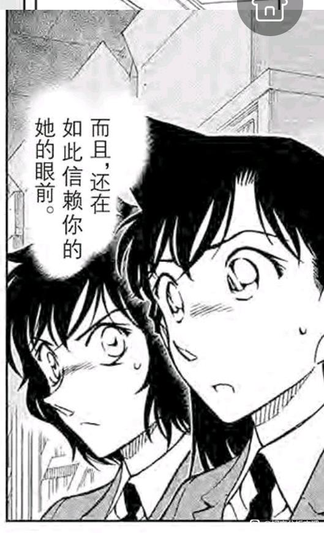
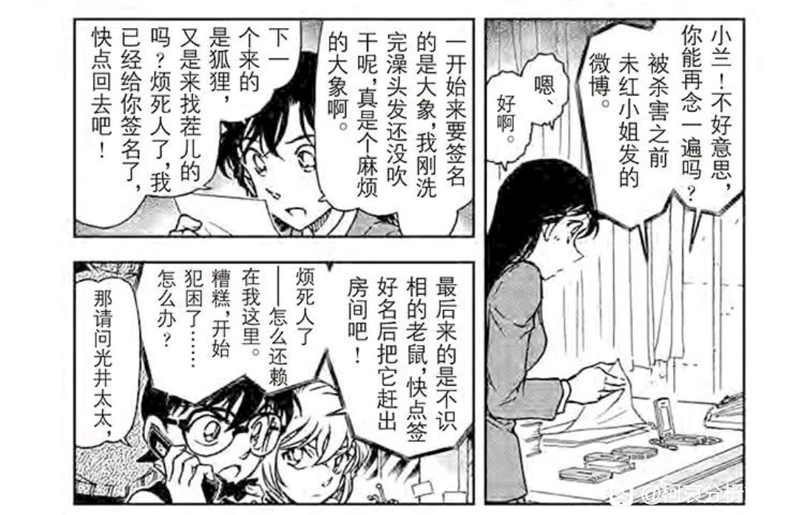
2024-07-11 19:21 | 清茶姑娘:所以天使∠是最自私的那个，永远把自己照顾得很好，锅永远都是别人的，错了有别人兜底，自己永远心安理得。
2.6 拉窗帘小结
拉窗帘在创作上完美实现了作者的意图，戏外读者完全清楚了小兰的人物形象，并纷纷远离，戏内小五郎，世良 ，柯南，嫌疑人老鼠，全员对小兰的表现都只有一个评价：不靠谱。
，柯南，嫌疑人老鼠，全员对小兰的表现都只有一个评价：不靠谱。
由于这些人里并没有多少情商够高的人，小兰对世良的雌竞行为目前只有小兰自己知道，而这阻碍了世良和小兰友谊的形成，之后世良宁愿开着摩托在博士家门口蹲半天，也不太愿意在没有园子的情况下和小兰单独相处了，她的表现和鸟取蜘蛛之后的服部颇为接近，惹不起还躲不起嘛。
【第二天，世良迅速转移目标，开始调查博士家，终于查到小哀，世哀对决启动。至于小兰，已经是淘汰状态了，小兰要等到水族馆篇才算是主场，而水族馆篇仅仅是回忆，下一个时间线上的主役竟然要到红修，然后又被世良抢干净戏份】
拉窗帘在创作上完美实现了作者的意图，戏外读者完全清楚了小兰的人物形象，并纷纷远离，戏内小五郎
，世良，柯南，嫌疑人老鼠，全员对小兰的表现都只有一个评价：不靠谱。由于这些人里并没有多少情商够高的人，小兰对世良的雌竞行为目前只有小兰自己知道，而这阻碍了世良和小兰友谊的形成，之后世良宁愿开着摩托在博士家门口蹲半天，也不太愿意在没有园子的情况下和小兰单独相处了，她的表现和鸟取蜘蛛之后的服部颇为接近，惹不起还躲不起嘛。
【第二天，世良迅速转移目标，开始调查博士家，终于查到小哀，世哀对决启动。至于小兰，已经是淘汰状态了，小兰要等到水族馆篇才算是主场，而水族馆篇仅仅是回忆，下一个时间线上的主役竟然要到红修，然后又被世良抢干净戏份】
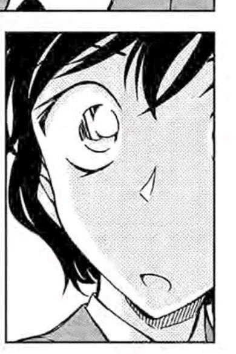
2024-07-11 19:23 | 清茶姑娘:天使∠何止是不靠谱，除了毛利小五郎，好歹是对自家闺女，可能不好说太多，对于正常人而言，这就是自私到了极致。别说新一不是它男朋友也没那么神，就算新一真是神，凭什么它为了证明想要把控的男生有多神就赌别人的命？不还是自私？2024-10-14 00:29 | hhhhhhyzq:世良完全可以是小兰成长后的模板，老贼却宁愿新捏一个......2024-10-15 18:37 | 赫敏2333:回复 hhhhhhyzq :可能是老贼对兰也没什么信心吧2024-11-15 09:30 | IC1101小王子:指正一下世良现在还没有关注到灰原吧，这阶段最感兴趣的还是柯南，他想知道柯南怎么变大的到了红修知道有解毒剂，然后直到京极真替身演员案查到了灰原再接下来就是古董盘子，期间虽然有留意到，但并没有太放在心上2024-11-15 10:49 | 🌐之徙:回复 IC1101小王子 :拉窗帘之后马上就关注到了，查了博士的视频找到小哀，之后频繁打电话，包括列车篇前也是主动试图找小哀2025-08-19 12:59 | 玄彬雨:世良：活了这么大，第一次见到这种**2025-08-19 12:59 | 玄彬雨:回复 玄彬雨 :把我给整不会了2025-11-10 07:36 | 来一口呗-:世良：这傻啦吧唧的娘们知道自己在说什么吗？
其实我觉得“大海手机我”篇也算毛利兰主场之一？虽然她只提供了小说信息……期待楼主分析这篇。
2024-07-11 18:31 | 🌐之徙:这不还是世良主场💔2024-07-11 21:48 | minisaltearth:回复 🌐之徙 :我觉得不是，柯南里很少让柯南解谜解出“我爱你”，所以有些好奇
有没有一种可能，小兰的拉窗帘其实是对新一一种服从性测试，看他会不会按照自己的想法保住在场所有人，她对于新一推理时的紧张也完全不是出于信任不信任的问题，就像之前小兰对于新一的表白不满意，想通过自己得奖再诈一遍新一回复而新一始终冷处理，不止是新一对小兰不耐烦，小兰也在新一一次又一次不合自己心意的时候开始烦躁了，就如伦敦篇放着百万性命不管也要逼新一安慰自己，小兰现在拉窗帘也是在逼新一表态，让新一向她证明自己还是那个对她有求必应的人，只不过恰好新一也不希望有人死所以推理出一个假情报让犯人破防从而让真凶手躲过一劫，而小兰不出意外的又理解错了，以为新一“救人”是为了她，以至于后面几集小兰明显态度缓和了不少，没有总“强迫”新一，这个状态持续到修学旅行
2024-07-13 02:06 | 凌蘭诗:我觉得是，证明只要我不想任何人死，新一就会替我达成目标2024-12-15 12:40 | 黑暗刺猬-夏特:她有那智商么，亦或者是“本能”？2025-03-24 22:33 | 了赡训:回复 黑暗刺猬-夏特 :PUA新一的时候可太有智商了2025-11-10 22:41 | 水溶100度C:其实以兰姐的IQ是根本不清楚当时的客观环境的，所以世良才告诉她具体情况，一直到她听到“必须要牺牲1个人”，73其实完全不需要这样画，世良只需要默契按计划走就行了，但73还是这么画了，所以这里c位就是兰，为了体现她游离在重点之外，也体现她逻辑简单，单纯就是不要有人死2025-11-10 22:49 | 水溶100度C:跟小学生脑回路一样简单，不会从全局去预判事态和程度，不懂拿捏细节。虽然我知道小兰不是走脑子那趴的，但73总是浓墨重笔的描绘兰姐秀下限拖后腿的剧情，我觉得73是真的很恨魔怔兰粉吧
3、更换观察对象的世良：博士的视频网站
或许是因为拉窗帘事件过于压抑，青山马上安排了相对轻松且柯哀含量很足的【博士视频网站】案件（其实这一案步哀更多一些）同时还安排世良将观察对象从小兰转移到小哀，一举扫清了拉窗帘事件的不协调感。
我们先从封面开始看，柯南看起来非常想吃小哀做的咖喱如果我没记错的话，除了受到麻美学姐干涉的“柠檬派”之外，柯南最喜欢吃的食物应该就是咖喱，每次外出，元太有鳗鱼饭/烤肉等各种选择，柯南就总是要吃咖喱，甚至在蓝色火花，柯南直接说是【常吃的咖喱】，看来是真的百吃不厌。
原本厨艺算是小兰非常擅长的技能，但是小兰好像没有经常击中新一的胃柯南去博士家蹭饭的次数也是与日俱增。
顺便一提，本案柯南的衣服是著名的星星情侣装，我认为肯定是有希子伦敦篇之后买的，动画里又改了衣服配色，弄了一个蓝底黄星，而且小哀的情侣装也被改颜色，这可能和这一时期色彩负责人有关（小哀这一时期为红发），相当不尊重原著。
或许是因为拉窗帘事件过于压抑，青山马上安排了相对轻松且柯哀含量很足的【博士视频网站】案件（其实这一案步哀更多一些
）同时还安排世良将观察对象从小兰转移到小哀，一举扫清了拉窗帘事件的不协调感。我们先从封面开始看，柯南看起来非常想吃小哀做的咖喱
如果我没记错的话，除了受到麻美学姐干涉的“柠檬派”之外，柯南最喜欢吃的食物应该就是咖喱，每次外出，元太有鳗鱼饭/烤肉等各种选择，柯南就总是要吃咖喱，甚至在蓝色火花，柯南直接说是【常吃的咖喱】，看来是真的百吃不厌。原本厨艺算是小兰非常擅长的技能，但是小兰好像没有经常击中新一的胃
柯南去博士家蹭饭的次数也是与日俱增。顺便一提，本案柯南的衣服是著名的星星情侣装，我认为肯定是有希子伦敦篇之后买的，动画里又改了衣服配色，弄了一个蓝底黄星，而且小哀的情侣装也被改颜色，这可能和这一时期色彩负责人有关（小哀这一时期为红发），相当不尊重原著。
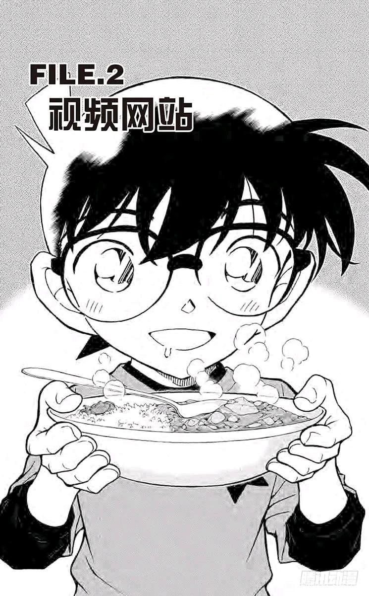
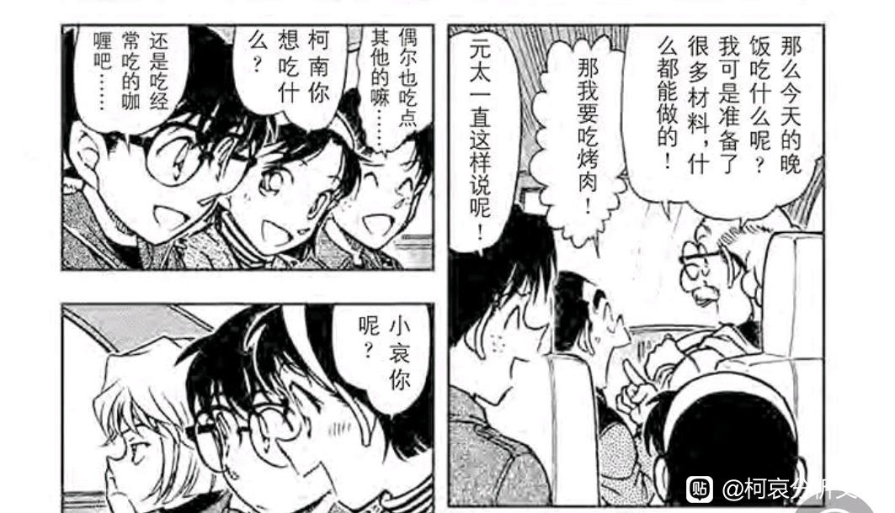
2024-07-12 19:54 | 清茶姑娘:动画篡改原著都是有他们的私心的，我一直认为因为动画制作方的目的是捧大和抚子（至少天使∠表面上是），所以暗搓搓对柯哀（尤其是哀）使绊子已经成了常态，这种春秋笔法谁不会做啊！2024-08-11 10:09 | 顽皮鬼才:2024-08-14 15:34 | 小骅丿:情侣装有啥？共享衣柜还差不多。至少元太已经看出来并说出来共享衣柜了。下一步，大概是要全员看到柯哀共享衣柜
回复 顽皮鬼才 :请教一下是哪里？太久没看忘记了2024-09-07 14:26 | 竑傺:世良转战小哀感觉也对应了她说小兰比自己想的强（这个突破口比我想的要难搞）2024-11-18 16:09 | 滦炐祐😁😁:蓝底黄星红内还是挺好看的2025-02-10 04:02 | 天堂奴隶布鲁德:红发哀还是很好的，柯南衣服还是漫画好，搭哀初登场时柯南穿的那身
如果是小兰做饭，新一大概会大摇大摆地坐在某处看书看报纸，而小哀做饭就不一样了，柯南想吃白食那是门都没有，直接被叫去查这个来历不明的壶，这非常难查，柯南查了半天也没查出来（夸下海口结果还失败了的屑柯南），总感觉这才是比较健康的关系，新兰那种氛围是真的欣赏不来。
2024-07-12 19:56 | 清茶姑娘:个人觉得这里不仅要说新∠间的角色地位是否带有大男子主义倾向等，关键在于天使∠没有家务之外的任何能力能贴近新一，所以只能通过拼命做家务，做饭，来彰显自己的地位，而不顾新一实际是不是需要（同时也是一种道德绑架，让新一必须要领自己的情）。而柯哀之间的互动已经证明了彼此需要的互相帮助2024-09-04 22:18 | 雪者风形:会赢的！（73ver2024-12-30 20:53 | 千灯观谢怜🌸:角粉总说自家才是亲女儿，亲女儿怎么舍得天天做饭打扫房间啊，隔壁青子都画了中森给女儿做饭碧子给女儿洗便当盒的画面，小哀更是有好几家投喂
而博士家外面，世良也正式把观察重心转移到小哀身上，至于小兰已经完成了“历史使命”，不再成为世良的关注对象了。
这里可以看到小哀真的是非常周全，甚至告诉了三小只如何应对可疑人员的询问，【此处光彦并不是大嘴巴，包括“这是秘密”这句话都是战术的一部分】，需要知道，少侦清楚昨晚破案的就是柯南，还知道柯南模仿了新一的声音，因此所有信息全都是谎言。光彦这套信息下去，即使世良也不得不怀疑一下是不是柯南新一真不是一个人，保密效果比什么“金一”好多了。
（视频里的小哀也太可爱了 以至于世良觉得小哀很文静）
以至于世良觉得小哀很文静）
这里可以看到小哀真的是非常周全，甚至告诉了三小只如何应对可疑人员的询问，【此处光彦并不是大嘴巴，包括“这是秘密”这句话都是战术的一部分】，需要知道，少侦清楚昨晚破案的就是柯南，还知道柯南模仿了新一的声音，因此所有信息全都是谎言。光彦这套信息下去，即使世良也不得不怀疑一下是不是柯南新一真不是一个人，保密效果比什么“金一”好多了。
（视频里的小哀也太可爱了
以至于世良觉得小哀很文静）
2024-07-12 15:02 | 乐以轩🌟:2024-07-16 11:33 | 贴吧用户_7Aa7M3G:世良眼里的小哀怎么这么可爱
新兰婚后塑造＝小兰洗碗新一看报纸。
柯哀婚后塑造＝面对熊孩子元太轮流教育
不愧是元太，靠一个踢球就让读者看到了想看的东西，同时还贡献了步美的“小哀的味道”名场面，元太直言小哀比元太妈妈还恐怖
有人说这一巴掌是步美打的，我看好像是小哀打的比较说得通吧，就元太这胡乱踢球的样子，肯定是该打，做了错事就要乖乖受罚，肯定不能学小兰做了错事也无人批评吧。
柯哀婚后塑造＝面对熊孩子元太轮流教育
不愧是元太，靠一个踢球就让读者看到了想看的东西，同时还贡献了步美的“小哀的味道”名场面，元太直言小哀比元太妈妈还恐怖
有人说这一巴掌是步美打的，我看好像是小哀打的比较说得通吧，就元太这胡乱踢球的样子，肯定是该打，做了错事就要乖乖受罚，肯定不能学小兰做了错事也无人批评吧。
2024-07-15 19:31 | 上総守信長ºº:你亲爱的，告诉我，这不是婚后家庭是什么2025-02-13 09:21 | ▫Hermit:所以说妈妈教训孩子的时候当爹的别乱搭嘴，被一起aoe了吧2025-11-10 01:28 | 贴吧用户_aWGQ7DG:哀酱真的女王风范，好想被骂2025-12-12 17:40 | 贴吧用户_GbtX3bS:回复 贴吧用户_aWGQ7DG :你小子还想做白日梦
穿了小哀衣服的步美遭到绑架，这时少侦众人也是非常有担当，像元太就开始自责，不过最让人心疼的还是小哀。
尽管到了后期，小哀已经非常活泼，但组织的威胁还是存在的，一旦身边的人出了什么事情，小哀总会自责，认为是自己带来了不幸，这种压力很难真正消散，幸好柯南从来都理解她的担忧，总会第一时间让小哀稍微放心。
你看柯南就不对元太有这种安慰，元太自责就让他自责去柯南确实是区别对待小哀和其他人的。
尽管到了后期，小哀已经非常活泼，但组织的威胁还是存在的，一旦身边的人出了什么事情，小哀总会自责，认为是自己带来了不幸，这种压力很难真正消散，幸好柯南从来都理解她的担忧，总会第一时间让小哀稍微放心。
你看柯南就不对元太有这种安慰，元太自责就让他自责去
柯南确实是区别对待小哀和其他人的。
2025-01-14 15:00 | 贴吧用户_aaaJSQG:我注意到一点就是柯子说的“如果是那些家伙不会搞混”我们注意一下，小哀担心的是那些黑衣人把步美误认为是她，她担心步美出什么事。 但是柯子首先以为小哀担心的是黑衣人，于是率先跟小哀排除黑衣人，但问题是，那还是个绑架犯啊喂你不该好好担心步美吗？2025-06-27 14:16 | 某某紫水晶:回复 贴吧用户_aaaJSQG :先让小哀冷静下来，进入状态，才更利于营救步美吧。
本案最后有惊无险，卖了很多步哀。
我们重点来看案件外的两位“局外人”，也就是秀一兄妹，秀一本案的表现相当糟糕，可疑车辆也无视了，小哀很慌张的时候也毫无行动，虽然知道整个案件，但大概秀一认为此事与组织无关，于是就不管，反正柯南能解决，自己乐得清闲。（安室会热心很多）
可以发现，秀一经常是这种态度，早期纸飞机秀一就宅在家不动，后来的宅急便案件秀一也是丢个手机就走，甚至到了M26也是打一枪，柯南就不管了，某种意义上确实如琴酒一样冷酷，秀一在明美死后可能已经失去了很大一部分的生活热情，我甚至怀疑冲矢昴的人设秀一从未拥有过，都是装出来的，至于秀哀，秀一几乎只保证小哀的生命安全，至于小哀是否惊慌失措或者有别的顾虑，秀一很少关心。
另一位局外人世良，在发现柯南删除小哀视频之后，估计就立刻能觉察到不一般了，而且【柯南删她也删】，正是为了配合柯南的保密行动，世良的行为也是很周全的。此时世良已经知道柯南在博士家藏了一个可爱的小姑娘，柯南把她保护得死死的，【数据可以删除，柯哀的特殊关系怎么可能删除呢？】
世良马上就要发现柯哀更多秘密了
我们重点来看案件外的两位“局外人”，也就是秀一兄妹，秀一本案的表现相当糟糕，可疑车辆也无视了，小哀很慌张的时候也毫无行动，虽然知道整个案件，但大概秀一认为此事与组织无关，于是就不管，反正柯南能解决，自己乐得清闲。（安室会热心很多）
可以发现，秀一经常是这种态度，早期纸飞机秀一就宅在家不动，后来的宅急便案件秀一也是丢个手机就走，甚至到了M26也是打一枪，柯南就不管了，某种意义上确实如琴酒一样冷酷，秀一在明美死后可能已经失去了很大一部分的生活热情，我甚至怀疑冲矢昴的人设秀一从未拥有过，都是装出来的，至于秀哀，秀一几乎只保证小哀的生命安全，至于小哀是否惊慌失措或者有别的顾虑，秀一很少关心。
另一位局外人世良，在发现柯南删除小哀视频之后，估计就立刻能觉察到不一般了，而且【柯南删她也删】，正是为了配合柯南的保密行动，世良的行为也是很周全的。此时世良已经知道柯南在博士家藏了一个可爱的小姑娘，柯南把她保护得死死的，【数据可以删除，柯哀的特殊关系怎么可能删除呢？】
世良马上就要发现柯哀更多秘密了
2024-07-12 20:17 | 卷福花生酱酱酱:太可爱了哀酱！2024-07-15 19:40 | 上総守信長ºº:M26 be like： 秀：我从美军借了牛逼武器来帮你！柯：太好了，潜水艇就交给你了，红桑！秀：不，需要你照亮潜艇的位置。 柯：… 柯：我照亮了，红桑！秀：捉到了！（有且仅有一发RPG）干得漂亮，小鬼！（润了） 柯：…有没有人来救我 哀：工藤君，工藤君，工藤君！！2024-08-04 21:38 | mangomengke07:回复 上総守信長ºº :喷了2025-02-13 09:29 | ▫Hermit:世良好女孩啊🥰2025-04-02 00:38 | 砂糖糖糖i:而且我反倒认为昴表现出的性格更为真实。秀一没有GIN那么的浓重阴郁
楼主，哀纵火这一面该怎么说，对家一直揪着不发
2024-07-13 04:25 | dldfj114514:纵火哪比得过兰神伦敦篇手握几万条人命跑马拉松2024-07-13 08:59 | 贴吧用户_5CaMPSX:回复 dldfj114514 :她们甚至觉得人命无关紧要，能推动sr的恋爱进度就行了2024-07-14 13:20 | 黑暗刺猬-夏特:柯南也在再会篇也纵火烧了杯户饭店，而且……校长都说过要怎么惩罚、赔偿了。你问问对家：当事人、米花小学校长都说过了要怎么办了，你一个外人还能对别人说三道四？事情都有了结果，还想怎么办？毛利兰拉窗帘妨碍公务甚至连训话都没有呢。2024-07-14 17:52 | 黑暗刺猬-夏特:当事人——校长都发话了，外人还能说什么。是罚得灰原、玛利亚太轻了吗？毛利兰拉窗帘妨碍警方啥大事都没呢。知道【纵火】是不对的，但【拉窗帘】直接废掉警方狙击手那就是对的么！谈判跟狙击手瞄准犯人并不冲突啊。2024-07-14 20:31 | 柳若风✆:参考艾琳2024-07-16 23:38 | 内的裤_:哀酱点的那小火苗还没我家楼下烤羊肉串的火大呢2024-07-18 23:29 | wwsabe:一不小心烧大了烧了很少的几朵花，还是为了帮同班女同学度过不愉快的家长会，后来柯南还包庇老婆，校长都被感动了说你们重新种了浇浇水就行，这种东西都要解释。。。。兰姐们吓到你了吗2024-07-18 23:55 | 贴吧用户_5CaMPSX:回复 wwsabe :主要是一开始难以反驳对面，可能我被73对哀的精神洁癖养坏了，一时没反应过来2024-07-21 11:33 | 迷的念想:你就说对对对，而且柯南也是纵火犯罪大恶极不能跟小兰在一起，还是两个纵火犯般配一点2024-07-22 09:09 | 我有嘉賓00:直接顺着话头，承认这是错误，并且灰原哀也为她的错误付出了代价：被校长罚种花一个月。2024-07-22 23:20 | -请修改昵称-:完全不虚好吗，谁愿说谁说去，我都想开贴分析小哀纵火案，这里面的柯哀糖还少吗？而且，你只要看本篇结尾小哀受罚就知道小哀人设被青山小心翼翼的保护的很好，你忘了拉窗帘的谢谢了吗？2024-07-23 12:09 | Asura兔子:很鲜活，又很调皮捣蛋的小哀 虽然做错事，但没有造成人员受伤，也道歉了，也惩罚了，校长也原谅了，大家都很满意 熊孩子兰姐造成问题，放走杀人犯、阻碍警察公务，哪样不比这个问题大，从不道歉，∠还不是护着她2024-07-30 14:36 | Black-♤:灰原哀那次她是可以控制住火势的大小跟燃烧时间的，她有信心能控制一切给自己兜底，请问某些能给自己兜底吗？本质就不一样，自己做的事不考虑后果，需要别人来兜底那才是有问题的2024-08-03 23:05 | 陌上之霜:拉窗帘事件直接危害到好几个人的性命，事后某人别说处罚责备，连一点教育重话都没有。这又怎么说 是啦，她们不会觉得羞愧只会觉得不愧是女主角我女儿，天大的错事也能被一堆人兜底小心翼翼呵护着。殊不知大家只是不想对一个万年不知长进的笨蛋再抱以教育的的希望罢了哈哈哈2024-08-03 23:08 | 陌上之霜:毕竟她们理解的爱和呵护，就是无条件围着我转，无时无刻不照顾着我的感受，没有任何要求地满足自己的所有愿望。不知道做错事要接受批评指正也是爱的一种2024-08-18 23:37 | Wf_yjqd:感觉这个主要是对比说明，柯南能指正哀的错误，而在mll的pua下无下限容忍她。恐怕要为之后做铺垫了2024-08-27 17:25 | Angela忧忧:没必要自证，你再自证他们也有办法侮辱小哀。随他们说去 刚好剔除不看漫画的☁️2025-01-10 04:16 | 邓不疑:参考波西米亚丑闻，福尔摩斯本人用烟火筒制造火灾，致敬而已。2025-09-28 14:34 | 谁来剪月光50:回复 贴吧用户_5CaMPSX :闯祸要有解决问题的能力 烧了不也及时浇灭了不是 校长也说是实验而不是犯罪 某人的善良可以制造麻烦还要把问题甩给别人这才是被人诟病的点2025-11-15 19:06 | 凌雨城:这件事小哀确实犯了错，没必要太在意，咱们不是角粉，不需要给灰原立道德完人人设——反驳只需要一句话：灰原能掌控局面，而且做出了补救，还取得了当事人的谅解，但角姐一个都没有
好像还没晚，我这是赶上直播了?
秀一“冷漠”，我倒是觉得和刚圣有很大关系，为了防止不必要的cp，以及东亚醋王。
假如柯南和小哀不熟的话，小哀和阿笠博士还有三小也不熟，反而把小哀托付给赤井比较好，比证人保护计划靠谱（詹黑）
But！青山塑造了这么多年的三小还有阿笠博士，为了给哀创造有爱的环境，咋可能让小小赤井破坏。
一个cp，一句林原女王的“安室透不错嘛”悬疑也不要了，初恋情人也加上了。
假如柯南和小哀不熟的话，小哀和阿笠博士还有三小也不熟，反而把小哀托付给赤井比较好，比证人保护计划靠谱（詹黑）
But！青山塑造了这么多年的三小还有阿笠博士，为了给哀创造有爱的环境，咋可能让小小赤井破坏。
一个cp，一句林原女王的“安室透不错嘛”悬疑也不要了，初恋情人也加上了。
四、平和暴击（上）：东西侦探推理对决
在发现小哀方向被柯南严防死守之后，世良非常体贴地放弃了继续探究小哀问题，转而果断侦查大阪平和组，进而世良组织了又一次【东西侦探推理对决】，而我们知道，这类对决中，小兰从来没有哪一次是支持新一的。
要知道在两案前的拉窗帘，面对推理能力稍弱于柯南的“世良侦探”，小哀是不太看得上的，表示“真不可靠啊”，但是小兰却说的是“我觉得差不多”，真不知道小兰是怎么得出“差不多”这个结论的。
虽然上帝视角我们知道服部水平和柯南差不多，部分方向互有优劣，但小兰视角可不该是这样，新一和服部同台出现的情况下，服部输得都很惨，外交官服部大败，危命服部被和叶吐槽“你怎么成了别人的助手了”，死罗神两个案件也都由新一进行最后一锤定音，更不用提就在不久前新一解决了拉窗帘这样高难度的事件，服部却有走投无路，甲子园等等激怒犯人的黑历史，但小兰看来这还是“差不多”，作为刚刚被新一表白的人，小兰对新一的夸赞总是极为吝啬的。
在发现小哀方向被柯南严防死守之后，世良非常体贴地放弃了继续探究小哀问题，转而果断侦查大阪平和组，进而世良组织了又一次【东西侦探推理对决】，而我们知道，这类对决中，小兰从来没有哪一次是支持新一的。
要知道在两案前的拉窗帘，面对推理能力稍弱于柯南的“世良侦探”，小哀是不太看得上的，表示“真不可靠啊”，但是小兰却说的是“我觉得差不多”，真不知道小兰是怎么得出“差不多”这个结论的。
虽然上帝视角我们知道服部水平和柯南差不多，部分方向互有优劣，但小兰视角可不该是这样，新一和服部同台出现的情况下，服部输得都很惨，外交官服部大败，危命服部被和叶吐槽“你怎么成了别人的助手了”，死罗神两个案件也都由新一进行最后一锤定音，更不用提就在不久前新一解决了拉窗帘这样高难度的事件，服部却有走投无路，甲子园等等激怒犯人的黑历史，但小兰看来这还是“差不多”，作为刚刚被新一表白的人，小兰对新一的夸赞总是极为吝啬的。
2024-07-13 20:07 | 清茶姑娘:天使∠自己不求上进，不打压着点新一，怎么能彰显自己呢？万一新一过于优秀衬托得自己太失败岂不是显得配不上她了吗？毕竟天使∠的逻辑里两人是否相陪从来不需要自己努力看齐，而是要把对方拉到自己这个水平2024-08-03 23:13 | 陌上之霜:回复 清茶姑娘 :belike→爱我就要迁就我的一切2025-02-13 09:37 | ▫Hermit:水平太差以至于不能理解高端局一个失误就会滚雪球导致输团乃至输比赛，就好比斗王知道斗尊斗圣都比自己强很多但不能理解两者的差距2025-08-08 16:06 | 逐暗的崇光:回复 ▫Hermit :化神和元婴差距很大，但对于炼气来说都是吹一口气就能把自己干掉的大佬。
接着和叶打来“求救电话”，众人去解决餐厅里的事件（注意这里和叶虽然也喊“救命”，但和小兰日常喊新一救我有本质不同，和叶是希望案件更快解决才摇服部过来的，但小兰通常要求新一远程对小兰或小兰身边的其他人的生命安全做保护）
相比外交官时期的剑拔弩张，世良时期的新平推理对决实在过于“打情骂俏”，双方互占便宜的次数非常多，还是挺在乎口头上的胜负的，和叶在这类推理比赛中通常无脑支持服部（除非是本案和叶不知道有比赛），小兰的状态如图所示。
在新一已经说明“更早解决案件”的情况下，小兰既不关心需要解决的命案，也不关心新平推理过程的领先，而是执意要抢夺柯南的电话，满足她自己的恋爱之梦，柯南显得十分尴尬，果断安排“新一挂断电话”，物理上终结了小兰的无理取闹。
我们记住小兰此时的表现，在【平和暴击（下）】也就是通常说的“错觉案”中，和叶是等到服部解决完案件才去推恋爱的，小兰的塑造真的是一如既往。
相比外交官时期的剑拔弩张，世良时期的新平推理对决实在过于“打情骂俏”，双方互占便宜的次数非常多，还是挺在乎口头上的胜负的，和叶在这类推理比赛中通常无脑支持服部（除非是本案和叶不知道有比赛），小兰的状态如图所示。
在新一已经说明“更早解决案件”的情况下，小兰既不关心需要解决的命案，也不关心新平推理过程的领先，而是执意要抢夺柯南的电话，满足她自己的恋爱之梦，柯南显得十分尴尬，果断安排“新一挂断电话”，物理上终结了小兰的无理取闹。
我们记住小兰此时的表现，在【平和暴击（下）】也就是通常说的“错觉案”中，和叶是等到服部解决完案件才去推恋爱的，小兰的塑造真的是一如既往。
2024-07-14 06:09 | dldfj114514:兰神永远是这么一副脑袋空空，无辜的瞪大眼睛，脸红恋爱脑上头的样子，真难泵2024-07-14 13:28 | 黑暗刺猬-夏特:回复 dldfj114514 :真希望谁来个【大和敢助之吼】吼毛利兰：少给我废话碍事，现在是人命关天之时。2024-07-18 12:20 | 发疯的法师:回复 黑暗刺猬-夏特 :谁敢啊 分分钟上wb头条2024-09-04 22:33 | 雪者风形:从“什么？”开始到“知道了！”结束，这个时间足够说完吗？这个破绽平次不拆穿只能说是他知道真实情况了
本案的世良也同样十分出色，如图，世良和小哀一样，也能通过读表情判断柯南已经破案，这个技能小哀是过了很久才掌握的，世良几天就掌握确实非常厉害（但是世良本人就是侦探，看表情本就是必备技能，所以很遗憾并不能在世哀对决中加分）
本案出现了詹姆斯知道世良为女性的名场面，青山给出的解释是“詹姆斯在美国见过世良”，这点到现在都非常怪，首先詹姆斯见到的应该是成年体世良不然很难认出来，其次即使詹姆斯真的见过世良，那么他也出于某种不可告人的目的向朱蒂等人隐瞒了自己见过世良，而是用“不认识”代替。
那么，可以大致认为，詹姆斯是在一年前的美国（大概是纽约篇时期）见到了来美国的世良（应该还有成年体玛丽）。
（这詹姆斯该不会还为英国当双面间谍吧，确实符合他来自英国却服务美国的故事背景）
不过更合理的推测是世良一家曾经来找过刚脱离组织的大儿子秀一，于是找到了詹姆斯，可能提出了让秀一回到英国之类的要求，被秀一拒绝了（纽约篇秀一怒气重，可能有这方面原因），而詹姆斯出于为秀一假死计划保密的考虑，不可能告诉朱蒂世良是秀一的妹妹。也就是这段剧情詹姆斯还算正常，不太黑。
不过，既然纽约篇时世良很可能在美国，那么可写的故事还有很多，可以随便开开脑洞，例如杀人魔摔下去的地方是玛丽弄坏的，贝姐因此记住了玛丽并伦敦篇报复式喂药等等，具体脑洞大家可以自行开设，我看主流贝新论没有一个提到世良一家的，未免有点可惜。
本案出现了詹姆斯知道世良为女性的名场面，青山给出的解释是“詹姆斯在美国见过世良”，这点到现在都非常怪，首先詹姆斯见到的应该是成年体世良不然很难认出来，其次即使詹姆斯真的见过世良，那么他也出于某种不可告人的目的向朱蒂等人隐瞒了自己见过世良，而是用“不认识”代替。
那么，可以大致认为，詹姆斯是在一年前的美国（大概是纽约篇时期）见到了来美国的世良（应该还有成年体玛丽）。
（这詹姆斯该不会还为英国当双面间谍吧，确实符合他来自英国却服务美国的故事背景）
不过更合理的推测是世良一家曾经来找过刚脱离组织的大儿子秀一，于是找到了詹姆斯，可能提出了让秀一回到英国之类的要求，被秀一拒绝了（纽约篇秀一怒气重，可能有这方面原因），而詹姆斯出于为秀一假死计划保密的考虑，不可能告诉朱蒂世良是秀一的妹妹。也就是这段剧情詹姆斯还算正常，不太黑。
不过，既然纽约篇时世良很可能在美国，那么可写的故事还有很多，可以随便开开脑洞，例如杀人魔摔下去的地方是玛丽弄坏的，贝姐因此记住了玛丽并伦敦篇报复式喂药等等，具体脑洞大家可以自行开设，我看主流贝新论没有一个提到世良一家的，未免有点可惜。
2024-07-15 01:46 | 贴吧用户_5K79MA3:坐等开坑，我也感兴趣好久了，可惜说的人不多2024-07-15 20:09 | 上総守信長ºº:读新术的问题不如反过来想，世良本来就是侦探（虽然不那么优秀），加之对新一有动心，迅速习得读新术可以说顺理成章；哀虽然不是侦探，在跟柯相处过程中也始终努力跟上柯的步伐和节奏，潜移默化中也逐步习得读新术；而与此二人形成对比的是…？2024-07-16 21:56 | 贴吧用户_5E3UJyG:回复 上総守信長ºº :高下立判了2024-07-23 01:35 | 婧er倪:詹黑证据＋1，但是他如果是黑，按理红方都一锅端了，反正身上肯定有隐情。2024-09-04 22:36 | 雪者风形:回复 🌐之徙 :目前的纽约篇似乎默认贝魔论成立，换言之就是如果纽约篇还有要加大量内容的篇幅，贝魔论反转的可能性反而要上升？2025-11-15 19:11 | 凌雨城:回复 婧er倪 :现在有了一种新解释：詹姆斯并非黑方，但他和黑方合作达成自己的特殊目的。所以他既帮助黑方又不会让黑方占据优势
最后我们来看小兰的一处高光：
小兰这里对方言发表看法，算是一个可爱的高光，和网中迷的争议时刻不同，这里的小兰是没有角的，看来青山很清楚，当小兰真高光时，应当把小兰的角隐藏起来。（大家可以回忆一下网中迷，小兰的角非常显著，后来拉窗帘小兰的角也特别大）
不过非常遗憾，这个高光是小哀早就用过的，在【1年B班大作战】中小哀早就因为东尾玛丽亚说大阪腔而安慰过玛利亚，效果显著，而小兰此处的剧情并无什么效果，服部还在拆台，令人哭笑不得。
【平和暴击（上）】作者还是给小兰留了一点点余地的，在【平和暴击（下）】中小兰连这种捡漏高光都没有，全程都是用和叶拉踩小兰，名场面不断，具体的下章再说。
小兰这里对方言发表看法，算是一个可爱的高光，和网中迷的争议时刻不同，这里的小兰是没有角的，看来青山很清楚，当小兰真高光时，应当把小兰的角隐藏起来。（大家可以回忆一下网中迷，小兰的角非常显著，后来拉窗帘小兰的角也特别大）
不过非常遗憾，这个高光是小哀早就用过的，在【1年B班大作战】中小哀早就因为东尾玛丽亚说大阪腔而安慰过玛利亚，效果显著，而小兰此处的剧情并无什么效果，服部还在拆台，令人哭笑不得。
【平和暴击（上）】作者还是给小兰留了一点点余地的，在【平和暴击（下）】中小兰连这种捡漏高光都没有，全程都是用和叶拉踩小兰，名场面不断，具体的下章再说
。
2024-07-14 01:26 | 绘绘绘🌸:这里能看出青山设计角色台词还是很有功底的，同样是关西腔话题，兰认为是重视自己使用的语言，偏向于情感、私人价值观，一年B班哀说是方言是记录成长地的信息，可以不用但不该抛弃，客观事实（可以引申为不逃避命运吗？同时这里把方言替换成口音这个观点在语言学习中也非常“正确”，太有美留味了）2024-07-17 00:39 | 绘绘绘🌸:回复 贴吧用户_QU2KPRP :我这里的重点是两个角色的语言逻辑完全不同，这两种模式本身没什么好坏之分，兰的人设厚度和哀确实也没办法比，塑造也远没有哀走心，哀特别是早期经常在镜头里看书看杂志，博学知性清冷神秘一下子立住了，相比而言兰练空手道的次数哪怕是提及也少太多了，音乐技能简直是空降2026-05-02 17:16 | 贴吧用户_J499bNQ:回复 绘绘绘🌸 :青山还是太强了
cy
cy
cy
五、平和暴击（下）错觉案
错觉案信息量非常大，平和同时做柯哀的正向对照组和新兰的反向对照组，同时本案还出场了很可能与新志初遇强相关的人物【米原樱子】。
先来看平和部分，故事一开始就是和叶代替服部做鬼屋现场侦查，这段剧情是典型的【新兰平和区别塑造】部分，面对“鬼屋”，和叶虽然害怕但还是去探索了，这一点放在小兰身上根本不可想象。（剧中柯兰都以为和叶是小兰那种非常怕鬼的人，完全低估了和叶）
并且我们注意到，和叶为了壮胆，直接摇了三个好朋友一起去探险，这里再次与【滑雪场推理对决】进行呼应，即和叶有自己的独立交友圈子，非常受欢迎，而镜头更多的小兰通常只有园子一人能称为朋友。
这里有一个关键词【壮胆】，早在【惊叫手术室】案，园子就希望小兰壮胆，而和叶从来不需要这类训练，相反和叶是让朋友们去鬼屋壮胆。对应到恋爱上，平和关系中和叶是平等而自信的，小兰是患得患失而自卑的。
错觉案信息量非常大，平和同时做柯哀的正向对照组和新兰的反向对照组，同时本案还出场了很可能与新志初遇强相关的人物【米原樱子】。
先来看平和部分，故事一开始就是和叶代替服部做鬼屋现场侦查，这段剧情是典型的【新兰平和区别塑造】部分，面对“鬼屋”，和叶虽然害怕但还是去探索了，这一点放在小兰身上根本不可想象。（剧中柯兰都以为和叶是小兰那种非常怕鬼的人，完全低估了和叶）
并且我们注意到，和叶为了壮胆，直接摇了三个好朋友一起去探险，这里再次与【滑雪场推理对决】进行呼应，即和叶有自己的独立交友圈子，非常受欢迎，而镜头更多的小兰通常只有园子一人能称为朋友。
这里有一个关键词【壮胆】，早在【惊叫手术室】案，园子就希望小兰壮胆，而和叶从来不需要这类训练，相反和叶是让朋友们去鬼屋壮胆。对应到恋爱上，平和关系中和叶是平等而自信的，小兰是患得患失而自卑的。
在和叶前期侦查后，世良想和他们一起去现场，被服部无情拒绝，世良经典线团又可怜又可爱。
这里算是平为哀影的一处塑造，后来世良试图打探小哀秘密，也遭到了柯南的类似处理。（所以柯南真的从服部那里学了各种技巧）
显然世良虽然有心又有能力，但离打入柯南核心秘密区还是有相当长的距离，因此实在很难与博士，服部，小哀等人抗衡，如果世良都是这种结果，那么世良下位但小兰就只会失败得更加彻底。
又可怜又可爱。这里算是平为哀影的一处塑造，后来世良试图打探小哀秘密，也遭到了柯南的类似处理。（所以柯南真的从服部那里学了各种技巧
）显然世良虽然有心又有能力，但离打入柯南核心秘密区还是有相当长的距离，因此实在很难与博士，服部，小哀等人抗衡，如果世良都是这种结果，那么世良下位但小兰就只会失败得更加彻底。
2025-02-13 10:49 | ▫Hermit:话说世良这里是知道服部故意撇开她的但是不好发作，于是后面古董盘子案死皮赖脸跟上去了
到了现场之后和叶继续暴击，真是不给小兰活路啊，上来先是一句“告白之后不可能什么都没发生吧”还有“告白了之后不告诉别人是无情无义”。
这里和叶形容的并不是新兰而是敢由（此时由衣有线索，和叶要打电话给由衣），但说者无心听者有意，小兰原本是被园子打击了一下，园子告诉小兰伦敦告白是新一被迫的，因此并不积极告诉和叶，但是现在小兰忍不住了，也不管破案的正事就拉着和叶说悄悄话，这又引起了柯南一些不满。（柯南一直在积极破案，认为小兰命案现场谈恋爱是很差的行为）
小兰对和叶说的表白过程就有一定美化了，没有园子知道的那么详细，但是这时小兰的话还是真心话，在小兰看来，告白这件事不能细想，小兰宁愿沉醉在这种虚假的“被追求”感觉中，而绝不愿现实回应，这好像是标准的鸵鸟心理。
这里和叶形容的并不是新兰而是敢由（此时由衣有线索，和叶要打电话给由衣），但说者无心听者有意，小兰原本是被园子打击了一下，园子告诉小兰伦敦告白是新一被迫的，因此并不积极告诉和叶，但是现在小兰忍不住了，也不管破案的正事就拉着和叶说悄悄话，这又引起了柯南一些不满。（柯南一直在积极破案，认为小兰命案现场谈恋爱是很差的行为）
小兰对和叶说的表白过程就有一定美化了，没有园子知道的那么详细，但是这时小兰的话还是真心话，在小兰看来，告白这件事不能细想，小兰宁愿沉醉在这种虚假的“被追求”感觉中，而绝不愿现实回应，这好像是标准的鸵鸟心理。
2024-07-17 11:58 | 奔腾的🐑驼:73说过平和新兰的塑造有点不一样，但我感觉好像和叶就是在跟兰做对比，前面死罗神也好，后面红莲骷髅也罢，和叶的台词和行为的对比性太强了……2024-12-29 23:03 | 卷福花生酱酱酱:告白也是像梦，还好红修发了短信，不然兰姐也会以为在做梦
面对患得患失的小兰，和叶又用出第三次暴击，她直接准备向服部表白，给小兰打个样让小兰更有勇气，而且事实上也完成表白（虽然服部没听到），但问题是这种脑回路从来不可能出现在小兰身上，小兰现在急需的并不是回应新一，对她来讲更重要的是让新一再次明确表白内容，她自己是绝不愿“付出”的。
因此，在园子“练胆”，和叶“示范”之后，小兰仍然毫无行动，连电话都不打，和新一交流等级降低到短信，园子和叶的好心并未被小兰接受，可以说，小兰停滞的恋爱进度全都要怪她自己，作者已经急匆匆把园子和叶摘干净了。
因此，在园子“练胆”，和叶“示范”之后，小兰仍然毫无行动，连电话都不打，和新一交流等级降低到短信，园子和叶的好心并未被小兰接受，可以说，小兰停滞的恋爱进度全都要怪她自己，作者已经急匆匆把园子和叶摘干净了。
此处又有平和与柯哀的对应，经典黑化环节，显得非常可爱
2024-07-14 20:41 | 黑暗刺猬-夏特:坐位问题吗？感觉灰原、和叶发怒，柯南、平次遭殃很有趣，有种看乐子的乐子人感觉。而毛利兰发怒新一遭殃，感觉毛利兰在无理取闹。2024-07-14 20:51 | 🌐之徙:回复 黑暗刺猬-夏特 :问题是灰原和叶并非真的发怒呀2025-02-13 11:09 | ▫Hermit:回复 黑暗刺猬-夏特 :因为叶哀发怒不会影响男方正事，是在事后再报复，兰神发怒会影响
这里还可以看到，和叶是把恋爱的事情放在服部破案之后的，又是一处暴击，毕竟小兰除了危命，就没有哪次不是先恋爱后破案的，伦敦篇更是相当极端。
真正破案结束后，和叶又有点害羞，觉得服部刚刚破完案应该很累，结果小兰当场抢夺柯南，让平和独处（从柯南不爽的表情看，恐怕小兰动作相当粗暴）
和叶还向小兰示范了什么叫表白，直白而热烈，这不比大本钟强多了，整个错觉事件和叶都在不停暴击新兰关系，小兰虽然忍不住向和叶透露了自己的恋爱情况，结果却被各方面拉踩，要命的是这好像成为平和组合的一项长期任务，直到红莲骷髅彻底踩无可踩为止。
真正破案结束后，和叶又有点害羞，觉得服部刚刚破完案应该很累，结果小兰当场抢夺柯南，让平和独处（从柯南不爽的表情看，恐怕小兰动作相当粗暴）
和叶还向小兰示范了什么叫表白，直白而热烈，这不比大本钟强多了，整个错觉事件和叶都在不停暴击新兰关系，小兰虽然忍不住向和叶透露了自己的恋爱情况，结果却被各方面拉踩，要命的是这好像成为平和组合的一项长期任务，直到红莲骷髅彻底踩无可踩为止。
2024-09-21 19:08 | 绝对的少年数值:和叶好可爱。。。。2025-02-13 11:28 | ▫Hermit:小柯这两格表情都没有画他肉体接触的暗爽害羞表情，恶意点猜测是不是连肉体接触都祛魅了
赶上直播了！cy
另外，柯南知晓小兰的全部行为，但是和小兰不同，柯南完全没有分享自己表白经过的意思，哪怕服部来问，柯南依然坚决否认，避之不及。
这或许可以解释红修篇，新一知道自己大本钟表白人尽皆知时非常生气的原因，除了隐私问题，更大的原因是柯南本身就觉得这次表白比较丢脸，相当抗拒再次提起此表白，更不必说众人流传的版本可能根本没有伦敦马拉松，而是一个脑补过的浪漫版本，与真实相去甚远。
平和显然不会介意多次告白，这次不太满意还有下次嘛，但是新兰是把告白当成要挟与反要挟的攻防战争的，这种相当病态的关系成为伦敦后柯南疲于应付的问题，并最终在红修迎来终点。
这或许可以解释红修篇，新一知道自己大本钟表白人尽皆知时非常生气的原因，除了隐私问题，更大的原因是柯南本身就觉得这次表白比较丢脸，相当抗拒再次提起此表白，更不必说众人流传的版本可能根本没有伦敦马拉松，而是一个脑补过的浪漫版本，与真实相去甚远。
平和显然不会介意多次告白，这次不太满意还有下次嘛，但是新兰是把告白当成要挟与反要挟的攻防战争的，这种相当病态的关系成为伦敦后柯南疲于应付的问题，并最终在红修迎来终点。
2024-07-16 22:02 | 贴吧用户_5E3UJyG:平次这个b表情xswl2024-08-03 21:30 | 贴吧用户_G725Xea:平次这个表情和特典15里嗑柯哀的表情好像啊哈哈哈哈哈哈2024-08-23 18:26 | long126zhen:这个时候的平次还比较正常，知道新兰先表白了也只是偷着乐和打趣，后期那个一心要攀比表白气氛连破案都没心思了，比和叶都恋爱脑，真不知道是被73被下了什么咒了
最后来看本案的重头戏：米原樱子
或称“死神女仆”，毕业于帝丹小学，低千苗一届，低明美两届，低白林三届，理论上当明美把小志保带到小学时（13或14年前），米原正在小学读四年级。
而米原第一次登场就表现出对案件极度热心，且在观察了一段时间的柯南之后，马上发现柯南不同寻常，并进行确认。
米原拥有两种饮料喜好，其中一种是红茶，另一种是乌龙茶，而红茶与英国背景的赤井-宫野家族强相关，乌龙茶是柯南喜欢喝的饮料（松本小百合案）
米原发现的死亡信息是字母S，被认为是某人名字的首字母，恰好新一和志保首字母都是S。
在本案中，出现了特殊错觉印象【棱形】，而棱形＝方片♦️，对应志保的扑克牌花色。
志保对应的红茶，新一对应的乌龙茶均无毒，小兰对应的蛋糕有毒。（小兰喜欢吃蛋糕，这是众所周知的事情，本案也强调了这一点）
种种迹象表明米原很可能是十三年前发生的事情的见证者，甚至很可能见过小新一（不然很难解释她一个普通人竟然能立刻发现柯南不寻常，并给予了过多关注），后续米原樱子相关案件都需要严格注意。
或称“死神女仆”，毕业于帝丹小学，低千苗一届，低明美两届，低白林三届，理论上当明美把小志保带到小学时（13或14年前），米原正在小学读四年级。
而米原第一次登场就表现出对案件极度热心，且在观察了一段时间的柯南之后，马上发现柯南不同寻常，并进行确认。
米原拥有两种饮料喜好，其中一种是红茶，另一种是乌龙茶，而红茶与英国背景的赤井-宫野家族强相关，乌龙茶是柯南喜欢喝的饮料（松本小百合案）
米原发现的死亡信息是字母S，被认为是某人名字的首字母，恰好新一和志保首字母都是S。
在本案中，出现了特殊错觉印象【棱形】，而棱形＝方片♦️，对应志保的扑克牌花色。
志保对应的红茶，新一对应的乌龙茶均无毒，小兰对应的蛋糕有毒。（小兰喜欢吃蛋糕，这是众所周知的事情，本案也强调了这一点）
种种迹象表明米原很可能是十三年前发生的事情的见证者，甚至很可能见过小新一（不然很难解释她一个普通人竟然能立刻发现柯南不寻常，并给予了过多关注），后续米原樱子相关案件都需要严格注意。
2024-07-14 21:56 | 乐以轩🌟:楼主，千苗不是同一届的，“十三年的回复”那一话里有说苗子比千叶小一届，只是刚好都是广播部的，苗子应该是和明美同届才对。2024-07-15 01:04 | dldfj114514:喜欢吃蛋糕，指兰神高级饭店刷别人的卡狂炫5个2024-07-15 05:55 | 🌐之徙:回复 乐以轩🌟 :我回去查了下，是你记错了，千苗是同一届，连同学聚会都是同一个2024-07-15 18:37 | 红茶中的白兰地:米原比苗子低一届。
回复 贴吧用户_QU2KPRP :不一定是三选一，而是三拼一，三个人各了解一部分，最后拼合出真相2024-07-16 13:44 | 贴吧用户_74P11b5:回复 🌐之徙 :如果真是的话到时候我一定会把你这个帖子挖出来帮你宣传，太神了2024-08-04 22:50 | mangomengke07:细2025-03-28 08:41 | 贴吧用户_aR8GDP6:坐等成真(哪怕只有部分被提起也赢了✓)
在看了楼主的这篇帖子后我又重温了一遍这集，感觉里面毛利兰的几个表情真精彩啊「重读」！
突然对小梓也有一定怀疑了，小梓不会也是帝丹小学毕业生吧？跟米原樱子同岁……
六、实现愿望的圣诞老人：小五郎是个好人
名柯中一共出现过两个假小五郎，第一个属于常见的一脸死相死者，而第二个就出现在本案，通过柯南的帮助，假小五郎成为了真小五郎，可以视为柯南实现了假小五郎的愿望。
在这一案中，出现了大量来回播放的电视节目，其中最重要的就是【夏日圣诞老人】，这是青山相当重要的早期作品之一，涉及两个重要概念：【圣诞节】和【实现愿望】。
而众所周知，除去少数年份，每年圣诞节都有小哀的专属剧情，樱花班五星圣诞树也大大增加了新志初遇发生于平安夜-圣诞节的可能性，圣诞节是实现愿望的时候，小兰已经将圣诞节愿望变为一副红色保暖手套，也就是已经实现了，小哀每年圣诞的哀言哀语却长期存在，可认为其愿望尚未实现，同理柯南的愿望也未曾实现。
如果再加上柯哀同款圣诞老人服装的暗示，似乎可以认为，【柯哀互为对方的圣诞老人，将在下一个圣诞实现对方的愿望】。
名柯中一共出现过两个假小五郎，第一个属于常见的一脸死相死者，而第二个就出现在本案，通过柯南的帮助，假小五郎成为了真小五郎，可以视为柯南实现了假小五郎的愿望。
在这一案中，出现了大量来回播放的电视节目，其中最重要的就是【夏日圣诞老人】，这是青山相当重要的早期作品之一，涉及两个重要概念：【圣诞节】和【实现愿望】。
而众所周知，除去少数年份，每年圣诞节都有小哀的专属剧情，樱花班五星圣诞树也大大增加了新志初遇发生于平安夜-圣诞节的可能性，圣诞节是实现愿望的时候，小兰已经将圣诞节愿望变为一副红色保暖手套，也就是已经实现了，小哀每年圣诞的哀言哀语却长期存在，可认为其愿望尚未实现，同理柯南的愿望也未曾实现。
如果再加上柯哀同款圣诞老人服装的暗示，似乎可以认为，【柯哀互为对方的圣诞老人，将在下一个圣诞实现对方的愿望】。
作为【柯哀圣诞节实现对方愿望】的前奏，本案柯南实现了假小五郎的什么愿望呢？
假小五郎想要帮助自己的小学老师，甚至剧情中曾经称呼小学老师为妈妈。
如果我们将【小学老师】做为关键词进行延伸，则若狭在初遇论中的地位再次提高，“小学老师”和“妈妈”的转化甚至有可能暗示若狭曾经是小哀的养母，毕竟艾莲娜是扰乱若狭人生的女人，这一推断并不夸张。
同时，在这一剧情中，老太太是忘记假小五郎的，但假小五郎记得老太太是自己的老师，这也与若哀关系保持一致。
假小五郎想要帮助自己的小学老师，甚至剧情中曾经称呼小学老师为妈妈。
如果我们将【小学老师】做为关键词进行延伸，则若狭在初遇论中的地位再次提高，“小学老师”和“妈妈”的转化甚至有可能暗示若狭曾经是小哀的养母，毕竟艾莲娜是扰乱若狭人生的女人，这一推断并不夸张。
同时，在这一剧情中，老太太是忘记假小五郎的，但假小五郎记得老太太是自己的老师，这也与若哀关系保持一致。
2024-07-23 01:45 | 婧er倪:这不太可能，如果是养母，不可能认不出来哀还需要试探。2024-07-23 06:18 | 🌐之徙:回复 婧er倪 :对若狭而言，返老还童也是挺夸张的，而且若狭也是几个案件就认出来了。2024-07-26 17:26 | 婧er倪:回复 🌐之徙 :她如果真是养母就肯定知道a药，以她的推理能力和记忆力，不可能那么后面才发现和怀疑，她又不是小兰→_→朝夕相处那么久竟然不记得对方小时候的样子2024-08-08 05:13 | 放假最快乐:回复 🌐之徙 :91卷966话若狭初登场，一直到101卷1070话过了十卷百来话，在某路人同学说出宫野名字之后，若狭才意识到灰原这个小女孩可能是宫野志保，这反应极其迟钝。 从初登场的仓库在来邻居高尔夫球以及露营帐篷之后采野茶和农牧场陨石2024-08-08 05:14 | 放假最快乐:回复 🌐之徙 :直到第六个出场参与的日常事件时，若狭她在听到某路人同学说出宫野的名字后，这才反应过来灰原可能＝酒厂成员宫野夫妇的女儿志保2024-12-21 23:18 | ncwjssa:未必是养母，但有可能教过小志保科学，或者教过小明美画画？小哀在发现若狭一只眼睛看不见后，观察持续到制作出不倒翁（？）而且小哀把东西放裤兜的习惯可能和若狭学的。2025-03-14 17:29 | 执素流若:回复 婧er倪 :问题是她知道的A药是宫野夫妇那一版也就是导致羽田浩司死亡的那版，变小的是小哀毕业加入酒厂后研发制成的，最多不超过五年，连琴酒都不知道她怎么会知道？
接下来我们再观察本案出现的所有电视节目，除了“夏日圣诞老人”，还包括好几个节目，不少节目都颇具深意：
比护的球赛×2（比护可视为小哀的指代，出现两次）
剑勇传说，铁剑让鬼丸猛走啦（铁剑＝柯南，鬼丸猛与小兰强相关）
新闻（9月8日周三，可以判断年份在2010年，提到了台风，这个台风导致安室出场时降雨，另外台风是13号，对应13年前，2010-13＝1997，恰好为小哀登场年份）
搞笑节目，答题节目，棒球赛（这三个不太重要）
美食节目，唱歌节目（可能都是洋子的）
其中比护第一次出场时就进球了，柯南马上微笑，有种看见比护就高兴的变脸感；第二次出场时比护则与侦探左文字比邻（侦探＝柯南），这和柯哀关系完全一致。
需要注意这时已经是漫画75卷，时间上已经是2012年了，但青山为了蹭1997+13＝2010，愣是把本案设定在10年（不排除这是青山10年画的，12年才发布，但是本案存在安室的伏笔，又不像10年的作品），方法是日期和星期的对应，显得非常隐晦，藏在一大堆节目里面，被发掘之后就显得非常惊艳了。
比护的球赛×2（比护可视为小哀的指代，出现两次）
剑勇传说，铁剑让鬼丸猛走啦（铁剑＝柯南，鬼丸猛与小兰强相关）
新闻（9月8日周三，可以判断年份在2010年，提到了台风，这个台风导致安室出场时降雨，另外台风是13号，对应13年前，2010-13＝1997，恰好为小哀登场年份）
搞笑节目，答题节目，棒球赛（这三个不太重要）
美食节目，唱歌节目（可能都是洋子的）
其中比护第一次出场时就进球了，柯南马上微笑，有种看见比护就高兴的变脸感；第二次出场时比护则与侦探左文字比邻（侦探＝柯南），这和柯哀关系完全一致。
需要注意这时已经是漫画75卷，时间上已经是2012年了，但青山为了蹭1997+13＝2010，愣是把本案设定在10年（不排除这是青山10年画的，12年才发布，但是本案存在安室的伏笔，又不像10年的作品），方法是日期和星期的对应，显得非常隐晦，藏在一大堆节目里面，被发掘之后就显得非常惊艳了。
2024-07-16 01:58 | 红茶中的白兰地:侦探左文字=柯南 比护隆佑=小哀 那么美食节目=家政妇=兰 哀已经插入新兰之中
被安排“走啦”戏份的鬼丸猛（小兰），在本案中表现如何呢？
基本就是被情绪牵着走的状态小兰对真假小五郎的评价全都不讲道理，别人说什么就是什么，毫无独立分析能力，时而无脑夸奖，包容，慷柯南之慨，时而求全责备胡乱苛责，翻脸比翻书还快，柯南在旁边基本上都是状态。
小兰的行为逻辑也并非完全不可理解，大体上小兰的思路如下：
【发现有人行为和自己想的不一样】
【不是想办法了解对方为何这么做】
【而是直接开启指责模式】
算是一种比较典型的自我为中心的思考模式，伦敦篇也大差不差，甚至不论对父亲还是母亲小兰也都是这种逻辑链，好像只有瑛佑不会受到这个模式的影响，但柯南已经麻木了，把小兰这一思维习惯当成客观存在处理了。
基本就是被情绪牵着走的状态
小兰对真假小五郎的评价全都不讲道理，别人说什么就是什么，毫无独立分析能力，时而无脑夸奖，包容，慷柯南之慨，时而求全责备胡乱苛责，翻脸比翻书还快，柯南在旁边基本上都是状态。小兰的行为逻辑也并非完全不可理解，大体上小兰的思路如下：
【发现有人行为和自己想的不一样】
【不是想办法了解对方为何这么做】
【而是直接开启指责模式】
算是一种比较典型的自我为中心的思考模式，伦敦篇也大差不差，甚至不论对父亲还是母亲小兰也都是这种逻辑链，好像只有瑛佑不会受到这个模式的影响，但柯南已经麻木了，把小兰这一思维习惯当成客观存在处理了。
2024-08-28 11:59 | long126zhen:园子说小五郎在外面有情人小兰只脸红不生气，一听出去通宵喝酒反而毛了，看来妃英理不回家是正确的，老公女儿都太奇葩了
最后这里有一处关于安室的伏笔，让“小五郎”有了一个“好徒弟”，两案之后安室本人就出场了。
欸，这里就有奇怪的地方，青山似乎号称安室第一话还是黑方，之后才变红，但是从本案来看，安室早就被设置为红方了，我估计青山画安室的时候，草稿上觉得很帅，很早就把他和预订的战狼角色合并，所谓安室一开始为黑听听就好，当不得真。
恐怕只有“伤疤赤井”是作为黑方进行塑造的，安室出场直为红，这一点在后来分析列车篇时可能有影响，具体地后文再说。
此外，小兰这里还认为“说谎是不对的，但是如果是出于好意就可以被原谅”，不过如果要让小兰原谅新一然后新兰永恒，那小兰未免过于小丑了，感觉这句话更像是指代新兰分手之后，新兰应该还是保持朋友关系，不至于变成仇人（问题是小兰在识别他人好意上有困难，一旦认定对方对不起自己就一意孤行了，这话小兰自己都未必能践行）
欸，这里就有奇怪的地方，青山似乎号称安室第一话还是黑方，之后才变红，但是从本案来看，安室早就被设置为红方了，我估计青山画安室的时候，草稿上觉得很帅，很早就把他和预订的战狼角色合并，所谓安室一开始为黑听听就好，当不得真。
恐怕只有“伤疤赤井”是作为黑方进行塑造的，安室出场直为红，这一点在后来分析列车篇时可能有影响，具体地后文再说。
此外，小兰这里还认为“说谎是不对的，但是如果是出于好意就可以被原谅”，不过如果要让小兰原谅新一然后新兰永恒，那小兰未免过于小丑了，感觉这句话更像是指代新兰分手之后，新兰应该还是保持朋友关系，不至于变成仇人（问题是小兰在识别他人好意上有困难，一旦认定对方对不起自己就一意孤行了，这话小兰自己都未必能践行）
2024-08-05 09:42 | mangomengke07:伤疤赤井确实为黑，但是安室应该是人设一出来就变红了。洗白这个不是老谣言了吗2026-01-16 15:55 | 阿瑟姆奶茶🌸:安室透所谓黑变红，就是青山骗云读者
追上进度了 催更
好耶，若哀分析牛哇！
七、千苗2：哥美拉，兔子熊猫，樱星论与飞帽子的初遇信号
相比伦敦前有些草率上场的千苗1，千苗2所蕴含的初遇元素可以说多到爆表了，毕竟是13年前初遇，实在相当豪华。
先来看第一个要素：【哥美拉】，我看很多分析都没有提到这一要素，但是哥美拉可是同时出现在白林，千苗，柯哀的重要元素，且柯南从小就看哥美拉了，而小哀也喜欢看哥美拉（著名的电影院案），那么让我们将视角放到名柯中哥美拉相关的第一个案件，就能发现一段“辨认伙伴”的剧情，哥美拉的女主认为即使表面看不出来，依然可以从动作感知。
（此案过后小兰带孩子们看电影，但是小兰穿的衣服是非常经典的小哀登场款，通常认为穿这款衣服的小兰其实就是指代小哀）
（在哥美拉的下一案为“落叶缤纷的质问”，小兰是从新柯长得像辨认柯南是新一的，而非行为相似）
而不论白鸟还是千叶，都面临“辨认初恋”的问题，那么，与哥美拉强相关的柯哀自然也有初遇的极大概率，只是不知道是何种形式而已。
相比伦敦前有些草率上场的千苗1，千苗2所蕴含的初遇元素可以说多到爆表了，毕竟是13年前初遇，实在相当豪华。
先来看第一个要素：【哥美拉】，我看很多分析都没有提到这一要素，但是哥美拉可是同时出现在白林，千苗，柯哀的重要元素，且柯南从小就看哥美拉了，而小哀也喜欢看哥美拉（著名的电影院案），那么让我们将视角放到名柯中哥美拉相关的第一个案件，就能发现一段“辨认伙伴”的剧情，哥美拉的女主认为即使表面看不出来，依然可以从动作感知。
（此案过后小兰带孩子们看电影，但是小兰穿的衣服是非常经典的小哀登场款，通常认为穿这款衣服的小兰其实就是指代小哀）
（在哥美拉的下一案为“落叶缤纷的质问”，小兰是从新柯长得像辨认柯南是新一的，而非行为相似）
而不论白鸟还是千叶，都面临“辨认初恋”的问题，那么，与哥美拉强相关的柯哀自然也有初遇的极大概率，只是不知道是何种形式而已。
2024-07-16 17:42 | 黑暗刺猬-夏特:除了毛利兰，其余的都一脸享受地观看着2024-08-06 23:49 | enjoy大爱狗哥:回复 黑暗刺猬-夏特 :细节，2025-02-13 12:51 | ▫Hermit:基于大佬分析的哥美拉和柯哀强相关我来个大胆的猜测，可能小柯和少侦看古早哥美拉时小哀一句电影吐槽让柯南想起曾经也有人这么吐槽过
接下来一段剧情有助于我们确认柯哀初遇时的情况。
当遇见苗子（成人）时，孩子们和千叶一时都没认出来，但是柯哀却能认出，并且对苗子在录像带中的表现印象深刻。
在之前的分析中，我们发现千苗低明美一年级，如果柯哀是在帝丹小学附近初遇，那么就有极大概率真的见过小时候的苗子，拥有比三小只更强的印象也就说得过去了。（小哀甚至记得苗子的广播剧是“假面士骑”，有可能是明美和她说过，毕竟苗子是全校进行广播）
以千叶的健忘情况，估计千叶作为柯哀初遇见证者的可能性不高，但苗子明显记忆力强大，她和米原将有大概率成为初遇论见证者甚至揭幕者。
当遇见苗子（成人）时，孩子们和千叶一时都没认出来，但是柯哀却能认出，并且对苗子在录像带中的表现印象深刻。
在之前的分析中，我们发现千苗低明美一年级，如果柯哀是在帝丹小学附近初遇，那么就有极大概率真的见过小时候的苗子，拥有比三小只更强的印象也就说得过去了。（小哀甚至记得苗子的广播剧是“假面士骑”，有可能是明美和她说过，毕竟苗子是全校进行广播）
以千叶的健忘情况，估计千叶作为柯哀初遇见证者的可能性不高，但苗子明显记忆力强大，她和米原将有大概率成为初遇论见证者甚至揭幕者。
2024-09-22 14:59 | 贴吧用户_aGDtC16:也就是说千叶苗子明美这三个人是同期的2024-09-22 15:07 | 🌐之徙:回复 贴吧用户_aGDtC16 :不是，明美比千苗高一年级2024-09-22 15:09 | 贴吧用户_aGDtC16:回复 🌐之徙 :哦 是学姐
这里还有非常常见的哀式吐槽，看起来在说千叶迟钝，其实眼神是对着柯南说的。
这里还是有两种解释，极端一点就是小哀和苗子一样，已经认出柯南是初遇了，不过我还是更认同保守一点的解释：【小哀这里指的是“对恋爱迟钝”，也就是“对别人喜欢自己迟钝”】，而伦敦之后小哀是比较主动的，所以这句话已经算是对柯南暗暗表示喜欢了
柯南经典什么都不知道旁边博士也是迟钝的典型，表情和柯南一模一样，还是让柯南自己烦恼去吧。
这里还是有两种解释，极端一点就是小哀和苗子一样，已经认出柯南是初遇了，不过我还是更认同保守一点的解释：【小哀这里指的是“对恋爱迟钝”，也就是“对别人喜欢自己迟钝”】，而伦敦之后小哀是比较主动的，所以这句话已经算是对柯南暗暗表示喜欢了
柯南经典什么都不知道旁边博士也是迟钝的典型，表情和柯南一模一样，还是让柯南自己烦恼去吧。
2024-07-24 19:07 | S508:我多年前以为是小哀看着柯南吐槽sr2025-02-13 14:03 | ▫Hermit:感觉小哀打趣sr的话有点言外之意的暗指，回旋镖到柯哀上
接下来是兔子×熊猫，兔子是小哀的意象，熊猫是柯南的意象，在充满初遇氛围的本案，光彦和步美就在某车里发现了兔子和熊猫的玩偶。
然而，这些玩偶现在处于翻倒状态，根据被害者的经历，他一开始是把玩偶摆得好好的，但是被犯人用车撞倒，如果我们假定杯子效应篇出现马路上的【琴酒化身】，则酒厂可能是马路上开车掳走小哀的，在本案就相当于犯人开车撞翻兔子和熊猫。
兔子和熊猫越到后期出现越多，这两个意象同时出现时基本就有初遇暗示。
然而，这些玩偶现在处于翻倒状态，根据被害者的经历，他一开始是把玩偶摆得好好的，但是被犯人用车撞倒，如果我们假定杯子效应篇出现马路上的【琴酒化身】，则酒厂可能是马路上开车掳走小哀的，在本案就相当于犯人开车撞翻兔子和熊猫。
兔子和熊猫越到后期出现越多，这两个意象同时出现时基本就有初遇暗示。
2026-01-31 17:57 | 困了就早睡🐑:后面的是不是大象和黑熊啊，感觉都是熟悉的要素🤔2026-05-04 08:45 | 贴吧用户_GXGD2SE:回复 困了就早睡🐑 :哇那么细
樱星论来源于扉页柯南的“帽子”，帽子上并非樱花而是星星，对应樱花班柯南回忆了星星折纸才与小兰产生樱花互动，即樱花初遇在后，星星初遇在前。
我个人认为，樱星论比樱雪论要靠谱一些，白鸟那边樱雪经常变换，犯人既有樱花折纸也有雪折纸，樱花班所谓“樱雪视觉叙诡”也远不如“樱星替换”来得明确，毕竟樱星替换算是正篇剧情，且星星在柯哀有好寓意。
飞帽子情节大概率是要复现的，小兰一直认为“新一不喜欢带帽子”，我认为小哀十三年前的帽子有可能导致了某些危险，使得新一后来都不喜欢戴帽子（变成柯南又喜欢带了，难度是因为小哀失而复得？）
我个人认为，樱星论比樱雪论要靠谱一些，白鸟那边樱雪经常变换，犯人既有樱花折纸也有雪折纸，樱花班所谓“樱雪视觉叙诡”也远不如“樱星替换”来得明确，毕竟樱星替换算是正篇剧情，且星星在柯哀有好寓意。
飞帽子情节大概率是要复现的，小兰一直认为“新一不喜欢带帽子”，我认为小哀十三年前的帽子有可能导致了某些危险，使得新一后来都不喜欢戴帽子（变成柯南又喜欢带了，难度是因为小哀失而复得？）
索隐部分结束。
本案还出现了比较少见的情况：揭露了柯南本人的恋爱观。如图，柯南被三小只指责“不懂风情”，打断千苗“约会”，柯南的反应是“啊？”
但三小只的指责毫无道理，整个千苗事件，最积极“撮合”的就是柯南本人，和小哀一起又是把电灯泡路人支走，又是带一群人去跟踪，在胸有成竹准备破案之后也是各种撮合，算盘珠子十分响。
（真正试图捣乱的是由美）
唯一没有撮合的时候，是刚发生案件时，本案虽然没有死人，但有一位司机被撞受伤，在案件尚未解决前，柯南一定是案件优先的，什么恋爱都要先放一边（可能小哀会优先于案件，但这前提是小哀本人也是案件优先的），所以就很容易想象，面对比此时危机百倍的伦敦篇，柯南对小兰是有多么不耐烦。
本案还出现了比较少见的情况：揭露了柯南本人的恋爱观。如图，柯南被三小只指责“不懂风情”，打断千苗“约会”，柯南的反应是“啊？”
但三小只的指责毫无道理，整个千苗事件，最积极“撮合”的就是柯南本人，和小哀一起又是把电灯泡路人支走，又是带一群人去跟踪，在胸有成竹准备破案之后也是各种撮合，算盘珠子十分响。
（真正试图捣乱的是由美
）唯一没有撮合的时候，是刚发生案件时，本案虽然没有死人，但有一位司机被撞受伤，在案件尚未解决前，柯南一定是案件优先的，什么恋爱都要先放一边（可能小哀会优先于案件，但这前提是小哀本人也是案件优先的），所以就很容易想象，面对比此时危机百倍的伦敦篇，柯南对小兰是有多么不耐烦。
2024-09-09 13:37 | 一颗鱼丸不要面:三小只好可爱～
最后又有小哀的吐槽，这里翻译为“对牛弹琴”应该问题不大，不知道日文原句是什么。
（小哀的吐槽又是对着柯南持续cue这位迟钝的侦探）
注意这里，苗子完全认出，千叶则是【不敢相信】阶段，但是柯南有樱花班的完整回忆，其状态不属于千叶也不属于苗子，而更可能属于白鸟“认错人”状态，因此不能简单认为柯＝千和哀＝苗，小哀也不太可能像苗子那样早就认出。
我个人倾向小哀的状态与千叶类似，就是隐约觉察又自己不相信的状态，加之组织的压迫仍然存在，小哀的表现就变成“你还是什么都不知道，不过，我也不希望你知道”的单向暗恋。
（小哀的吐槽又是对着柯南
持续cue这位迟钝的侦探）注意这里，苗子完全认出，千叶则是【不敢相信】阶段，但是柯南有樱花班的完整回忆，其状态不属于千叶也不属于苗子，而更可能属于白鸟“认错人”状态，因此不能简单认为柯＝千和哀＝苗，小哀也不太可能像苗子那样早就认出。
我个人倾向小哀的状态与千叶类似，就是隐约觉察又自己不相信的状态，加之组织的压迫仍然存在，小哀的表现就变成“你还是什么都不知道，不过，我也不希望你知道”的单向暗恋。
2024-12-29 23:43 | 卷福花生酱酱酱:真是对牛弹琴！！
日语版来了，还是猪配上珍珠的意思，感觉能挖的意思不多。
2024-07-16 18:06 | 🌐之徙:感谢看来翻译成对牛弹琴，攻击性还降低了一点2024-07-17 10:55 | 上総守信長ºº:回复 🌐之徙 :之前的案子也是这么吐槽的
好久没来文吧了，这几天来了之后追完你的帖子，感觉心里空落落的，意犹未尽，也不想看同人了，感觉没有同人有你分析的原作更荡气回肠……
2024-07-17 10:56 | 上総守信長ºº:柯哀还需要看同人？ 任何同人都不可能比原作更好磕！
八、婚礼前夕：劣化新兰模拟器
本案安室登场，和主流观点不同的是我认为安室第一话就是好人登场（自带工安属性），其中夹杂了不少秀一相关的暗示，和朗姆这种出场自带目的性不同，安室根本没把“找到小哀”这一组织赋予的任务看得多重要，反而全力扑在秀一问题这种私事上，为此不惜当侦探到处接活，且助人为乐，大概青山在伤疤时期曾经设想过安室为黑，但波本后期露脸就已经是红方了。
（安室登场的雨属于台风雨，和贝姐的雪天，水无的人工雨，猫哥的雨过天晴类似，都属于特殊降水，但安室的雨最接近常规雨，其干的坏事也很多，红方身份并不影响安室做坏事）
同时本案也介绍了一对双胞胎夫妻，通常总有人认为本案作为罕见的自杀案，与咖啡香案件类似都属于意难平，但在我看来咖啡香CP水平已经达到柯哀级别，而婚礼前夕案件的这对CP与新兰相似度更高，下面我们一一分析。
本案安室登场，和主流观点不同的是我认为安室第一话就是好人登场（自带工安属性），其中夹杂了不少秀一相关的暗示，和朗姆这种出场自带目的性不同，安室根本没把“找到小哀”这一组织赋予的任务看得多重要，反而全力扑在秀一问题这种私事上，为此不惜当侦探到处接活，且助人为乐，大概青山在伤疤时期曾经设想过安室为黑，但波本后期露脸就已经是红方了。
（安室登场的雨属于台风雨，和贝姐的雪天，水无的人工雨，猫哥的雨过天晴类似，都属于特殊降水，但安室的雨最接近常规雨，其干的坏事也很多，红方身份并不影响安室做坏事）
同时本案也介绍了一对双胞胎夫妻，通常总有人认为本案作为罕见的自杀案，与咖啡香案件类似都属于意难平，但在我看来咖啡香CP水平已经达到柯哀级别，而婚礼前夕案件的这对CP与新兰相似度更高，下面我们一一分析。
2024-07-19 12:40 | 🌐之徙:回复 proyekt_rot :有的，在死罗神篇里
先来看这对CP的设定，由于双胞胎，拥有心灵感应，看似还行，问题是这种心灵感应完全出于基因模型，所谓心灵感应，无法掩盖这对CP对对方极大的不信任，本案男方雇佣一位侦探调查女方品行，女方则雇佣安室查男方外遇，双方可谓剑拔弩张。
我们再看心灵感应部分，巧了，柯哀经常出现的剧情并非心灵感应，而更像是读表情或者马上知道对方会怎么想；但是新兰确实有几段比较尴尬的心灵感应，可能是出于十三年以来确实存在的相处，也可能是某种共同祖先又发挥了作用（虽然不太可能），同时，新兰双方对对方的感情也是极不信任的，与这对婚礼前夕CP有得一拼。
我们再看心灵感应部分，巧了，柯哀经常出现的剧情并非心灵感应，而更像是读表情或者马上知道对方会怎么想；但是新兰确实有几段比较尴尬的心灵感应，可能是出于十三年以来确实存在的相处，也可能是某种共同祖先又发挥了作用（虽然不太可能），同时，新兰双方对对方的感情也是极不信任的，与这对婚礼前夕CP有得一拼。
进一步我们可以推断，这对CP中男方自带兰属性，女方自带柯属性，安室在这段剧情中起到类似小哀或赤木量子的作用。
首先女方是没有出轨的，只是和安室联络比较紧密而已，但男方行为上非常就不检点，小兰说“不知道像谁”，要我看这又像小五郎又像小兰，属于那种可以心安理得吃代餐的人，像小兰的部分还更多一点，因为他对于假象“情敌”安室，采取了暴力态度，与小兰对赤木量子的态度完全一致，要知道英理疑似与男律师相谈甚欢时小五郎可没有像小兰那样找人麻烦。
当安室用蛋糕阻止男方吃代餐时，男方无动于衷，（蛋糕是小兰的偏好）。故事的结局是“女方自杀”，恐怕要对应“新一假死”，这里我们不妨假设一下，如果婚礼前夕CP真的如他们自己所说那般恩爱，则区区染色体问题根本不足以成为女方自杀的理由，女方自杀的原因之一一定是男方自己不检点却要求女方不与任何男性接触的双标行为，而这有可能是柯南今后要对小兰产生的视角。
首先女方是没有出轨的，只是和安室联络比较紧密而已，但男方行为上非常就不检点，小兰说“不知道像谁”，要我看这又像小五郎又像小兰，属于那种可以心安理得吃代餐的人，像小兰的部分还更多一点，因为他对于假象“情敌”安室，采取了暴力态度，与小兰对赤木量子的态度完全一致，要知道英理疑似与男律师相谈甚欢时小五郎可没有像小兰那样找人麻烦。
当安室用蛋糕阻止男方吃代餐时，男方无动于衷，（蛋糕是小兰的偏好）。故事的结局是“女方自杀”，恐怕要对应“新一假死”，这里我们不妨假设一下，如果婚礼前夕CP真的如他们自己所说那般恩爱，则区区染色体问题根本不足以成为女方自杀的理由，女方自杀的原因之一一定是男方自己不检点却要求女方不与任何男性接触的双标行为，而这有可能是柯南今后要对小兰产生的视角。
2024-07-18 11:44 | 清茶姑娘:天使∠也就是占了性别的便宜吧，所以一大波∠粉自我代入，她干的事实际上和这个男的不相上下甚至更恶劣，起码这个男的没攥着人命威胁喜欢的人跟自己谈恋爱2024-07-18 14:53 | 上総守信長ºº:这个对应我看傻了，真的自己看的时候完全不会往这个方向去想，但听楼主一说就真完全对应上的2025-02-13 14:29 | ▫Hermit:我看的时候都只集中在安室透参与的案件大多有不能在一起的情侣，暗指透子暗恋艾莲娜，没想到还能这样理解
这样拉胯的CP，纵然有所谓“童年回忆”，却还是掩盖不了千疮百孔的感情，双方辨认对方也不是靠行为习惯，而是一张冰冷的鉴定书。
在本案中，新兰在“认出对方”问题具有明显对应，小兰所设想的仍然不是靠行为习惯，而是更先进的鉴定技术，问题是现在即使小兰有机会采样柯南和新一的生物信息，并交给第三方验证，小兰也不可能这么做，她还是沉醉在“梦一样”的新兰告白戏中，更不可能触动手机篇以来柯南决不能等于新一的思想钢印。
在本案中，新兰在“认出对方”问题具有明显对应，小兰所设想的仍然不是靠行为习惯，而是更先进的鉴定技术，问题是现在即使小兰有机会采样柯南和新一的生物信息，并交给第三方验证，小兰也不可能这么做，她还是沉醉在“梦一样”的新兰告白戏中，更不可能触动手机篇以来柯南决不能等于新一的思想钢印。
2024-07-18 11:47 | 清茶姑娘:20年前我看过一篇同人（当时不懂，现在看来应该是∠粉写的），里面天使∠哭得义正言辞质问新一“你告诉我真相我不告诉别人不就得了”，可问题是就凭天使∠这漏勺一样的嘴巴和靠着宣传达到舆论上优势的性格，它能“不告诉别人”吗？2024-10-28 12:30 | 独孤求败💯💯💯:我勒个郑人买履啊
最后女方宁可自杀，回忆过去“火焰中的美好回忆”，也不愿再与男方相处了，不得不想到日向幸事件的“火之羁绊”，这也是个大BE。
如果以女方＝柯南的角度考虑，则新一假死事件将与新兰的初遇相对应，引子可能是绑架拐卖案件，又因为小兰是纽约篇喜欢新一的，小兰可以试着救个犯人以导致新一必须假死，接受相对惨痛的教训，不然要是小兰还是拉窗帘那种思想，实在没有一丝一毫的成长可能。
（题外话：本案安室是不知道柯南有什么表现的，柯南麻醉时藏的特别好，安室对柯南也缺乏兴趣，安室进入波洛的主要原因应该是小五郎，用小五郎的巨大人脉储备谋取关于秀一的信息）
如果以女方＝柯南的角度考虑，则新一假死事件将与新兰的初遇相对应，引子可能是绑架拐卖案件，又因为小兰是纽约篇喜欢新一的，小兰可以试着救个犯人以导致新一必须假死，接受相对惨痛的教训，不然要是小兰还是拉窗帘那种思想，实在没有一丝一毫的成长可能。
（题外话：本案安室是不知道柯南有什么表现的，柯南麻醉时藏的特别好，安室对柯南也缺乏兴趣，安室进入波洛的主要原因应该是小五郎，用小五郎的巨大人脉储备谋取关于秀一的信息）
2024-07-18 12:12 | 清茶姑娘:个人认为新一假死的内容有极大概率，但天使∠不会吸取教训，她只会瞪着水汪汪的泪眼装无辜“我真的不知道啊”，然后一堆∠粉会把这个也归结为新一的“欺骗”，觉得天使∠好可怜总是被骗啥的，绝不会考虑真实情况2024-07-18 12:58 | 发疯的法师:应该不是 透子是公安的 不至于从前刑事那里获取情报 应该是之前伤疤赤井时期和毛利柯南的接触觉得毛利和柯南有问题才去打工的2024-07-18 13:37 | 🌐之徙:回复 发疯的法师 :本案安室和小五郎的接触具有显著偶然性，不是被安排的。2024-07-18 16:28 | 上総守信長ºº:回复 清茶姑娘 :这个可能性非常的大
等啊等，好想看后续分析啊
波本选择向毛利小五郎拜师是为了寻找Sherry，而不是通过小五郎收集秀一信息，之前他伪装成“伤疤秀一”试探过朱蒂、世良的反应，那时他觉得赤井秀一真的死了，直到列车篇冲矢昴扔手榴弹，才又让波本引起“赤井秀一到底死没死”的思考。
2024-07-18 13:36 | 🌐之徙:我认为并不是，小五郎在此案件中出现是很偶然的，波本也没有什么万马券套路，本案波本表示了对“带针织帽的人”的防备，可以判断波本就是在做私事，找雪莉只是应付一下。
九、侦探们的夜响曲：努力的侦探们和无足轻重的小兰
列车篇前还剩下【夜响曲】【不原谅】【伊达航】【泡沫蒸汽烟】【优作的未解决事件】，随后就是列车篇两部曲，这7个案件里小哀参与高达6案（只有优作案为世良主导），可能是整部漫画里小哀参案频率最高的地方，即使满月篇也只有5/6而已。
作为这一系列的开端，【侦探们的夜响曲】与其说是执行了波本三选一，不如说专门安排了【小兰不属于“侦探们”】这一命题，而青山更是充满恶意地在本卷开始前画了自己站在“角”上摇摇晃晃的样子，无法保持平衡。
换而言之，小兰由于设定上排斥推理，现在已经显著影响了其出场戏份，在过去，青山可以通过平和，真园，毛妃甚至小兰自己的日常场次，将小兰的出场频率拉得比较高，然而现在平和已经即将告白，毛妃也在生日案基本收束，小兰自己则用拉窗帘事件弄得足够极端了，青山已经无法平衡小兰的戏份，唯一支柱只剩下真园（于是波本篇之后青山极度依赖真园和快斗保持小兰的出场，M23后这条线也基本枯竭了）
对此，青山的选择是保持不了平衡就不保持了，直接每一场都出小哀，没有小哀就让世良主导，彻底不管小兰的戏份问题，绝不当那个在角上左摇右晃的被害者了。
列车篇前还剩下【夜响曲】【不原谅】【伊达航】【泡沫蒸汽烟】【优作的未解决事件】，随后就是列车篇两部曲，这7个案件里小哀参与高达6案（只有优作案为世良主导），可能是整部漫画里小哀参案频率最高的地方，即使满月篇也只有5/6而已。
作为这一系列的开端，【侦探们的夜响曲】与其说是执行了波本三选一，不如说专门安排了【小兰不属于“侦探们”】这一命题，而青山更是充满恶意地在本卷开始前画了自己站在“角”上摇摇晃晃的样子，无法保持平衡。
换而言之，小兰由于设定上排斥推理，现在已经显著影响了其出场戏份，在过去，青山可以通过平和，真园，毛妃甚至小兰自己的日常场次，将小兰的出场频率拉得比较高，然而现在平和已经即将告白，毛妃也在生日案基本收束，小兰自己则用拉窗帘事件弄得足够极端了，青山已经无法平衡小兰的戏份，唯一支柱只剩下真园（于是波本篇之后青山极度依赖真园和快斗保持小兰的出场，M23后这条线也基本枯竭了）
对此，青山的选择是保持不了平衡就不保持了，直接每一场都出小哀，没有小哀就让世良主导，彻底不管小兰的戏份问题，绝不当那个在角上左摇右晃的被害者了。
2024-07-19 22:39 | 贴吧用户_06Da73W:这图太草了……2024-07-23 15:35 | Asura兔子:现在用基德、平和拉小兰的登场率，平和告白拖了这么多年，也已经看腻了😫2024-08-11 16:23 | 没字也行:青山合该被小兰插
在【侦探们的夜响曲】事件中，最著名的就是安室抱小兰飙车的场景，然而相比这一幕，小兰还有不少更加严重的表现。
先来看案件发生前，柯南为事务所做了一个主页网站，该网站后来发挥了不少作用，并且一直在为事务所提供经济价值，再加上安室带来的大量现金流（琴酒：奇怪的经费增加了），毛利一家从此终于勉强摆脱了相对贫困，不至于靠赌马翻本了。
然而，我们能看到柯南对自己的“无偿劳动”表示了不满，如果我们抛开人物关系，只看社会经济关系，则事务所毫无疑问无偿占有了柯南和安室的劳动成果（注意这里不应该计算柯南麻醉针的收益，麻醉针问题是柯南自己主动的，且无人知晓，但设计网站这个绝对算劳动成果被占有）
而在这一过程中，小五郎相当于掌握了生产资料，小兰则连生产资料都不掌握，甚至本案死者死在事务所厕所里，到处是血，小兰常见的“清洁工作”都未必敢完成，估计最后还是落在柯南身上了。
以上并不是说我们需要强行套用社会经济学，但是事务所某种意义上的剥削的确是存在的，且前一案柯南对自己的介绍仍然是“寄住在小五郎家的柯南”，说明柯南与毛利父女离亲人关系也差一点距离，这种经济上的不平等早在新兰时期就存在，柯兰时期则更加不平等，而这些不平等很可能也在潜移默化中消耗着柯南的耐心，即使真的变回新一，他也不再是那个游乐园敢全部付钱的新一了。
先来看案件发生前，柯南为事务所做了一个主页网站，该网站后来发挥了不少作用，并且一直在为事务所提供经济价值，再加上安室带来的大量现金流（琴酒：奇怪的经费增加了），毛利一家从此终于勉强摆脱了相对贫困，不至于靠赌马翻本了。
然而，我们能看到柯南对自己的“无偿劳动”表示了不满，如果我们抛开人物关系，只看社会经济关系，则事务所毫无疑问无偿占有了柯南和安室的劳动成果（注意这里不应该计算柯南麻醉针的收益，麻醉针问题是柯南自己主动的，且无人知晓，但设计网站这个绝对算劳动成果被占有）
而在这一过程中，小五郎相当于掌握了生产资料，小兰则连生产资料都不掌握，甚至本案死者死在事务所厕所里，到处是血，小兰常见的“清洁工作”都未必敢完成，估计最后还是落在柯南身上了。
以上并不是说我们需要强行套用社会经济学，但是事务所某种意义上的剥削的确是存在的，且前一案柯南对自己的介绍仍然是“寄住在小五郎家的柯南”，说明柯南与毛利父女离亲人关系也差一点距离，这种经济上的不平等早在新兰时期就存在，柯兰时期则更加不平等，而这些不平等很可能也在潜移默化中消耗着柯南的耐心，即使真的变回新一，他也不再是那个游乐园敢全部付钱的新一了。
2024-07-19 12:16 | 我就是空气羽毛:等等，事务所血迹这些是让柯南来清理的？我以为是会请清洁工来清理2024-07-19 20:42 | 上総守信長ºº:回复 我就是空气羽毛 :只是一种猜测，但的确可以完全排除由兰来清理的可能2024-07-23 19:35 | 我有嘉賓00:回复 我就是空气羽毛 :有先例的，赤木家里蘭就让柯南去收拾赤木家的混乱场面。当然，动画又“好心”把这段删掉了。2024-09-22 15:42 | 贴吧用户_aGDtC16:回复 我有嘉賓00 :动画组还真是小丑 我看那一天到来之时如何 情何以堪2024-10-28 12:50 | 独孤求败💯💯💯:回复 贴吧用户_aGDtC16 :现在的主要问题是青山刚昌能不能活到完结2024-10-28 12:52 | 贴吧用户_aGDtC16:回复 独孤求败💯💯💯 :难说不过他结局早就已经换好了 因为之前生病 他怕自己哪天嘎了 提前把结局画好了2024-10-28 12:52 | 贴吧用户_aGDtC16:回复 独孤求败💯💯💯 :只是他现在不想端上来而已 结局他早就已经完成了2024-11-20 19:47 | howtalentediam:不过讲道理，柯南也不care事务所的安全性2025-07-05 10:55 | Wf_yjqd:回复 我有嘉賓00 :那可见mll打扫新一家是全假的演员行为了
而在破案时，小兰也表现了与众侦探的格格不入：
这位女犯人在家里藏了一具尸体，柯南隔着门就闻到了味道，马上想了办法进入侦查，安室与小五郎都是侦探，也有【鲨鱼】特征，同样马上也号称要上厕所，只有小兰显得如此的显眼，什么都不知道地跟了进去。
之后柯南“被绑架”，整个米花能用的侦探都被动员起来找柯南，想了各种各样的办法，小兰的操作则更加惊人：
【在绑匪明确表示“之后会放柯南回去，但敢报警就杀死柯南”的情况下，小兰最后的决定居然是报警】
再次说明柯南真的不太被小兰视为家人，这一操作颇有死罗神将新一交给警察的风采。
小兰做的最正确的一件事是把柯南被绑的消息透露给博士，让博士和小哀用护身符眼镜找一下柯南，看来满月篇柯哀双向奔赴确实给小兰留下深刻印象了。大概小兰认为，拯救柯南和自己关系不太大，而应该是小哀的任务吧。
这位女犯人在家里藏了一具尸体，柯南隔着门就闻到了味道，马上想了办法进入侦查，安室与小五郎都是侦探，也有【鲨鱼】特征，同样马上也号称要上厕所，只有小兰显得如此的显眼，什么都不知道地跟了进去。
之后柯南“被绑架”，整个米花能用的侦探都被动员起来找柯南，想了各种各样的办法，小兰的操作则更加惊人：
【在绑匪明确表示“之后会放柯南回去，但敢报警就杀死柯南”的情况下，小兰最后的决定居然是报警】
再次说明柯南真的不太被小兰视为家人，这一操作颇有死罗神将新一交给警察的风采。
小兰做的最正确的一件事是把柯南被绑的消息透露给博士，让博士和小哀用护身符眼镜找一下柯南，看来满月篇柯哀双向奔赴确实给小兰留下深刻印象了。大概小兰认为，拯救柯南和自己关系不太大，而应该是小哀的任务吧。
2024-07-19 20:43 | 上総守信長ºº:最后一句话我笑喷了2024-08-08 06:11 | 放假最快乐:这里小兰可能不相信烦人说的话，到时候她不兑现承诺让某柯回来怎么办？
再看图1，柯南是为了破案而出来，小五郎是为了保护这位小姐（此时不知道她是犯人，想保护她很正常），安室也是为了破案并和小五郎打好关系，只有小兰是因为事务所死了人所以不敢留在事务所，令人啧啧称奇。
图2则是柯南被绑架之后，小兰接世良的电话，隔着电话世良已经知道柯南的情况，并且完美推理出柯南是故意跟着犯人去的，而小兰虽然在现场又仿佛不在，台词是【我都不知道是怎么回事了】，怪不得世良得亲自出动，就小兰这个之前拉过窗帘的样子，今天又和那次一样蒙圈，太不靠谱了。世良巴不得马上飞到现场保护柯南。
图2则是柯南被绑架之后，小兰接世良的电话，隔着电话世良已经知道柯南的情况，并且完美推理出柯南是故意跟着犯人去的，而小兰虽然在现场又仿佛不在，台词是【我都不知道是怎么回事了】，怪不得世良得亲自出动，就小兰这个之前拉过窗帘的样子，今天又和那次一样蒙圈，太不靠谱了。世良巴不得马上飞到现场保护柯南。
2024-07-19 20:46 | 上総守信長ºº:这个对比真的太地狱了，有的人身在现场却完全状况外，有的人远在千里之外依然紧跟节奏
这个事件存在大量拿小兰和各种侦探们对比的情节，除了上述这些事情，还有一大堆。
同样是面对可疑人员，小哀为了救柯南，暂时容忍了猫哥的存在，哪怕小哀此时非常排斥猫哥，最后还是带上护身符去救柯南了。
小兰就比较神奇，百忙之中她居然有空对比安室和小五郎的推理能力，并询问“安室推理能力比小五郎强为什么还拜师呢？”这一莫名其妙的问题（此时柯南仍然在绑架中）
当然，非要说的话这两段剧情无非是试图增加波本三选一的悬念，但一定是符合兰哀二人的人设的，即小兰一定会忘记柯南还在被绑架，而小哀一定会以找到柯南为首要任务，这是人物的抉择而非作者的操控。
（小兰这个问题也非常奇怪，安室上一案就没有战胜沉睡的小五郎，这一案胜负未分，小兰却对安室能力大家夸赞，难不成是因为安室帅吗？）
同样是面对可疑人员，小哀为了救柯南，暂时容忍了猫哥的存在，哪怕小哀此时非常排斥猫哥，最后还是带上护身符去救柯南了。
小兰就比较神奇，百忙之中她居然有空对比安室和小五郎的推理能力，并询问“安室推理能力比小五郎强为什么还拜师呢？”这一莫名其妙的问题（此时柯南仍然在绑架中）
当然，非要说的话这两段剧情无非是试图增加波本三选一的悬念，但一定是符合兰哀二人的人设的，即小兰一定会忘记柯南还在被绑架，而小哀一定会以找到柯南为首要任务，这是人物的抉择而非作者的操控。
（小兰这个问题也非常奇怪，安室上一案就没有战胜沉睡的小五郎，这一案胜负未分，小兰却对安室能力大家夸赞，难不成是因为安室帅吗？）
2024-07-19 12:33 | 清茶姑娘:回复 贴吧用户_QU2KPRP :这点很对，∠烂可是除了粉红泡泡什么都不在脑子里装的2024-07-19 20:49 | 上総守信長ºº:被你这么一说 真的 醍醐灌顶 老贼的对比玩的太6了2024-09-09 09:59 | 竑傺:侧面也说明了她其实对她爸，对新一，对其他侦探，甚至对柯南的推理能力都是能判断出来高低的。2024-09-09 13:31 | long126zhen:回复 竑傺 : 不太能，对小兰来说，任何一个陌生人的水平都要大于她熟悉的人，警察＞新一/小五郎、不知名小作家＞优作、平次＞新一、安室＞小五郎，究其缘由还是刻在骨子里的自卑心态，自己不行，只能大肆看轻身边人才能平衡了。只有真到了极端情况下，她才会启动最终心理防线——新一，助けて。
最后决战时，小兰毫不意外地进行了享受型代餐，有希子飙车小兰很不满，安室飙车小兰却无所谓，也不管柯南还在被绑架，也不管新一已经对她表白，反正安室很帅而且是安室主动的嘛，小兰开始了各种粉红泡泡。
说真的，要是小了能像当时在纽约那样吼安室几句，我还觉得小兰比较从一而终呢。问题是小兰表现出来的不是对危险的恐惧，而是双标，只是因为有希子是新一的母亲，所以小兰就是可以发火，至于安室，先享受一下再说吧。
【侦探们的夜响曲】到此结束，本案波本三人组，小五郎，博士，小哀都可以称为“侦探们”，甚至这位女犯人也可以称为侦探，只有小兰的戏份全都是对比和偏离主题的负面塑造，侦探是夜响曲，小兰得叫做噪声了。
说真的，要是小了能像当时在纽约那样吼安室几句，我还觉得小兰比较从一而终呢。问题是小兰表现出来的不是对危险的恐惧，而是双标，只是因为有希子是新一的母亲，所以小兰就是可以发火，至于安室，先享受一下再说吧。
【侦探们的夜响曲】到此结束，本案波本三人组，小五郎，博士，小哀都可以称为“侦探们”，甚至这位女犯人也可以称为侦探，只有小兰的戏份全都是对比和偏离主题的负面塑造，侦探是夜响曲，小兰得叫做噪声了。
2024-07-19 21:19 | 上総守信長ºº:看画法，很明显兰已经变成卖肉担当了2024-07-26 01:08 | 骄阳与森℉:纽约篇真的太可惜了，新一家包括看似稳重的优作在内其实都是喜欢冒险和浪漫的，但纽约篇那么好的气氛偏偏有人不解风情。。2024-12-14 00:28 | 35节新泽西💧:回复 骄阳与森℉ :水蛇口回来，和纽约篇一样的涂装车，一样的斜车特技。超开心和咆哮
最后来看本案除了小兰之外，其他角色的行动逻辑。
柯南的行动逻辑和安室说的【好奇心】有关但不完全相关，真正的逻辑是柯南对本案女犯人抱有同情，女犯人是为了复仇而击杀三个抢匪的，柯南对这类正义犯人（明美，麻生成实等人）向来同情，不但同情，本案柯南还帮助女犯人找击杀目标，只是希望女犯人自首而已（女犯人只是口头保证），至于女犯人已经杀了两个人则表示无所谓。
这里算是柯南明显的灰色行为，而小兰则还认为“新一和小偷为伍”是不可思议的，本案众人中似乎只有世良先反应过来柯南会有比较灰色的做法，这确实是侦探的必经之路。
柯南的行动逻辑和安室说的【好奇心】有关但不完全相关，真正的逻辑是柯南对本案女犯人抱有同情，女犯人是为了复仇而击杀三个抢匪的，柯南对这类正义犯人（明美，麻生成实等人）向来同情，不但同情，本案柯南还帮助女犯人找击杀目标，只是希望女犯人自首而已（女犯人只是口头保证），至于女犯人已经杀了两个人则表示无所谓。
这里算是柯南明显的灰色行为，而小兰则还认为“新一和小偷为伍”是不可思议的，本案众人中似乎只有世良先反应过来柯南会有比较灰色的做法，这确实是侦探的必经之路。
2024-07-19 12:39 | 清茶姑娘:问题是∠烂所谓的道德洁癖“新一和小偷为伍不可思议”只针对新一本身，它自己各种救犯人、道德绑架，救了犯人丝毫不顾对方会不会伤害其他人等，可是不亦乐乎。因为它是“天屎”嘛，天屎只满足自己炫耀的私欲就行了，对于伤害别人只要瞪大眼睛装无辜“我不知道嘛”就能过关2024-12-30 21:54 | 千灯观谢怜🌸:不敢想兰真成工藤兰后，工藤和黑羽家的大大小小男男女女是不是都得被她批判一遍
世良本案一副要攻略柯南的样子，说不定这真的是她的目的，小兰变成了世良联络柯南的工具人。
不过世良其实是在妈妈的指导下行动的（带了耳机），主要任务大概是调查柯南身边的所有人，连安室这种刚出现的也要查，具体则没什么目的性，之后看柯南对谁保护的最好谁就是核心人物。
显然，小兰，安室，服部等人都不是什么核心，唯一核心有且只有小哀，因此列车篇世良终于由到处试探转为重点进攻，趁机多抱几次柯南更是非常满意呢。
不过世良其实是在妈妈的指导下行动的（带了耳机），主要任务大概是调查柯南身边的所有人，连安室这种刚出现的也要查，具体则没什么目的性，之后看柯南对谁保护的最好谁就是核心人物。
显然，小兰，安室，服部等人都不是什么核心，唯一核心有且只有小哀，因此列车篇世良终于由到处试探转为重点进攻，趁机多抱几次柯南更是非常满意呢。
2024-09-10 10:16 | 一颗鱼丸不要面:世良的画风一直都很好看耶，尤其她的小虎牙
秀哀方面，本案秀一窃听到柯南失踪，立刻决定去追，有人说这里秀一比较暧昧，甚至说秀一早就喜欢小哀之类的，我是看不出来。
这段剧情的主要作用是让小哀侦破秀一的诸星大身份，秀一口头禅非常多，这句“不要露出这种表情”也属于口头禅但秀一自己没注意，秀一是不可能希望小哀知晓自己身份的，每次都要避免，这里口头禅出来算是一句失误。
具体的留到后面秀哀剧情再说，这里只简要介绍一下，小哀在知晓冲矢昴可能的身份后，对猫哥的观感并无多少改观，还是比较厌恶，只是不怕他了而已，而秀一很大程度上是不敢面对小哀的，毕竟自己与明美的保护约定并未实现，秀一很难向小哀解释，不得不缩在猫哥的面具后才能说话。
我的观点是，漫画里从来没有任何时候画过秀哀CP，但画过柯南因为秀哀关系而吃醋的情节，就像漫画里没有新出兰，但柯南因为新出而吃过醋一样。
这段剧情的主要作用是让小哀侦破秀一的诸星大身份，秀一口头禅非常多，这句“不要露出这种表情”也属于口头禅但秀一自己没注意，秀一是不可能希望小哀知晓自己身份的，每次都要避免，这里口头禅出来算是一句失误。
具体的留到后面秀哀剧情再说，这里只简要介绍一下，小哀在知晓冲矢昴可能的身份后，对猫哥的观感并无多少改观，还是比较厌恶，只是不怕他了而已，而秀一很大程度上是不敢面对小哀的，毕竟自己与明美的保护约定并未实现，秀一很难向小哀解释，不得不缩在猫哥的面具后才能说话。
我的观点是，漫画里从来没有任何时候画过秀哀CP，但画过柯南因为秀哀关系而吃醋的情节，就像漫画里没有新出兰，但柯南因为新出而吃过醋一样。
2024-12-13 20:30 | 滦炐祐😁😁:秀哀——关系不好但是很爱的亲兄妹2025-07-01 22:45 | 贴吧用户_aEX815V:回复 🌐之徙 :实在喜欢秀哀人设的请左转去伊红吧吃代餐
安室的目的相当复杂，虽然安室本案问了小五郎秘密，且该密码在列车篇发挥了作用以至于小哀行踪暴露，但我不认为安室本案的行为和小哀有任何关系，问密码这件事更像是安室本人的职业素养，类似于早点准备万一有用这种心态。
贝姐对安室的评价也是“看来你取得他们信任了”，这句话我的理解是安室试图在小五郎麾下找秀一线索（秀一曾经与琴酒在毛利家附近对狙，这件事安室肯定知道），伤疤赤井时期安室是假皮不能见小五郎，后来又在婚礼前夕偶遇于是果断拜师，这件事被贝姐知道了，贝姐让安室随便查，但不许伤害小兰和柯南，为此安室只能先取得事务所三人组信任再说了。
至于发现雪莉信息，那完全是偶然，安室在拜师期间，与其说找秀一，不如说在做他警察的本职工作，只是找秀一的执念比较大而已。
总之安室来晚一步，没看到小兰拉窗帘的样子，而伤疤赤井2和本案小兰的表现都不极端，安室对小兰的初始印象应该还不错。
另外安室并不怀疑沉睡的小五郎，也许像他说的那样，安室已经缺少了一些好奇心，就像秀一缺少了一些热心一样，秀一好推理而短行动，安室多出工而不好奇，至今安室都不知道麻醉针变声器，也不知道柯南的秘密，小哀是变小的他也不知道，看似红黑前线，做的事情却经常是黑，秀一和安室互补的特点将在列车篇和之后产生各种意想不到的影响。
贝姐对安室的评价也是“看来你取得他们信任了”，这句话我的理解是安室试图在小五郎麾下找秀一线索（秀一曾经与琴酒在毛利家附近对狙，这件事安室肯定知道），伤疤赤井时期安室是假皮不能见小五郎，后来又在婚礼前夕偶遇于是果断拜师，这件事被贝姐知道了，贝姐让安室随便查，但不许伤害小兰和柯南，为此安室只能先取得事务所三人组信任再说了。
至于发现雪莉信息，那完全是偶然，安室在拜师期间，与其说找秀一，不如说在做他警察的本职工作，只是找秀一的执念比较大而已。
总之安室来晚一步，没看到小兰拉窗帘的样子，而伤疤赤井2和本案小兰的表现都不极端，安室对小兰的初始印象应该还不错。
另外安室并不怀疑沉睡的小五郎，也许像他说的那样，安室已经缺少了一些好奇心，就像秀一缺少了一些热心一样，秀一好推理而短行动，安室多出工而不好奇，至今安室都不知道麻醉针变声器，也不知道柯南的秘密，小哀是变小的他也不知道，看似红黑前线，做的事情却经常是黑，秀一和安室互补的特点将在列车篇和之后产生各种意想不到的影响。
2024-07-19 16:12 | snowfly1024:兰的密码是生日啊，会是谁的生日呢？2024-07-21 01:35 | 贴吧用户_G7QD9XD:回复 snowfly1024 :这么说来，47卷角姐试柯子手机密码的时候，也试过自己生日。2024-07-21 01:38 | 贴吧用户_G7QD9XD:回复 🌐之徙 :根据手势来看，应该是369/2580/2580/147，并且234位是2和1的可能性大一些2024-07-21 01:40 | 贴吧用户_G7QD9XD:回复 贴吧用户_G7QD9XD :三格分镜握手机的四指是逐渐往内缩的，大拇指是逐渐露出来的2024-07-21 08:10 | 🌐之徙:回复 贴吧用户_G7QD9XD :这也不太对呀2024-07-21 16:21 | 贴吧用户_G7QD9XD:回复 🌐之徙 :呃2025-07-16 01:06 | 第7个伯言:尴尬
其实考虑到透子的身份，他不好奇也很正常，毕竟万一查出点什么，无论哪边都能让他吃不了兜着走。
加油，分析得好好
十、一丁点都不原谅的秀哀关系
【一丁点都不原谅】是一个极为独特的案件，通常而言，名柯的案件总是以犯人束手就擒结局，少量可怜而值得同情的犯人（例如麻生成实）则令柯南发生了永久的改变，这些案件都可称为“有始有终”的。
然而，【一丁点都不原谅】却不是这样，在男方显著作风不正甚至已经主动犯罪的情况下，仍然是一个极为委屈的谅解结局，虽然有孩子即将出生的有效理由，却并未令犯罪分子得到任何惩罚，给人的感觉仿佛名柯三观不正一样。
而这就是名柯充满现实主义的一面，事情不是总是那么理想的，上一案柯南帮助犯人找仇人，这一案柯哀帮犯人掩盖罪行，为了避免更大的悲剧，有时就是不得不执行灰色行动，并且，作者旗帜鲜明地用小哀的“一丁点也不原谅”保护名柯的核心价值，虽然还不算社会派推理，却也已经触及到核心。
这种剧情，作者支开了三小只，更不可能让风格极端的小兰执行，真正与犯人交涉的仅有柯哀二人，小哀的权重还优于柯南，也就是说，本案事实上是塑造小哀形象的关键一案，而这就与本案的另一条线索--秀哀关系产生了关联。
【一丁点都不原谅】是一个极为独特的案件，通常而言，名柯的案件总是以犯人束手就擒结局，少量可怜而值得同情的犯人（例如麻生成实）则令柯南发生了永久的改变，这些案件都可称为“有始有终”的。
然而，【一丁点都不原谅】却不是这样，在男方显著作风不正甚至已经主动犯罪的情况下，仍然是一个极为委屈的谅解结局，虽然有孩子即将出生的有效理由，却并未令犯罪分子得到任何惩罚，给人的感觉仿佛名柯三观不正一样。
而这就是名柯充满现实主义的一面，事情不是总是那么理想的，上一案柯南帮助犯人找仇人，这一案柯哀帮犯人掩盖罪行，为了避免更大的悲剧，有时就是不得不执行灰色行动，并且，作者旗帜鲜明地用小哀的“一丁点也不原谅”保护名柯的核心价值，虽然还不算社会派推理，却也已经触及到核心。
这种剧情，作者支开了三小只，更不可能让风格极端的小兰执行，真正与犯人交涉的仅有柯哀二人，小哀的权重还优于柯南，也就是说，本案事实上是塑造小哀形象的关键一案，而这就与本案的另一条线索--秀哀关系产生了关联。
2024-07-20 22:11 | 贴吧用户_7bZ4Ey4:其实我觉得柯子真的没有某些人说的那样眼里容不得沙子，他与其说是在包庇犯人不如说是在他可控的范围之内他可以做到睁一只眼闭一只眼，但道德层面还是要谴责的2024-07-23 00:17 | -请修改昵称-:青山是十分推崇福尔摩斯的。而福尔摩斯这本书里，只有33%的案子，犯人是交给了苏格兰场处理。有22%的案子，犯人都被福尔摩斯和华生两人纵放了。2024-09-09 10:30 | 竑傺:回复 -请修改昵称- :甚至有的还敲了钱（东西）2025-12-25 00:59 | 水中的水😁:感觉小哀的一丁点也不原谅是不是代表她认出秀一但仍然不打算原谅他
一直以来，支持“秀哀存在”的人将本案视为秀哀的关键证据，但他们似乎忽略了这一案小哀本人的态度，秀哀中哀不发声。
小哀对秀一的态度如何？答：
【一丁点也不原谅】
就像小哀不会轻易原谅本案犯罪的男人，她也不会那么容易原谅秀一在两年前逃离组织，抛弃姐姐的行为，这里需要注意，“不原谅”不代表就要仇恨对方，小哀仍然能容忍为了大局而与诸星大的合作，就像本案她最终也因为刚出生的孩子而容忍了犯罪的男人，但是合作可以容许，“走进领域”或者“成为朋友”却充满了困难，因此即使在之后的剧情里，除了进一步确认冲矢昴身份的几次试探外，小哀仍然拒绝与猫哥进一步接触，世良猫哥同时在场小哀就和世良聊天，若狭猫哥同时在场小哀就去玩了，挂件丢了柯南去找，小哀则与秀一无话可说。
在这种情况下，即使像一些秀哀说的，秀一对小哀存在“特殊的感情”，也绝不可能得到小哀的任何回应，连成为朋友都几乎不可能，只剩下合作伙伴关系而已，更何况本案小哀都对柯南被绑架“坐立不安”了，秀哀关系中小哀的箭头完全掐死，一些认为青山“曾经推过秀哀”的言论是完全站不住脚的。
小哀对秀一的态度如何？答：
【一丁点也不原谅】
就像小哀不会轻易原谅本案犯罪的男人，她也不会那么容易原谅秀一在两年前逃离组织，抛弃姐姐的行为，这里需要注意，“不原谅”不代表就要仇恨对方，小哀仍然能容忍为了大局而与诸星大的合作，就像本案她最终也因为刚出生的孩子而容忍了犯罪的男人，但是合作可以容许，“走进领域”或者“成为朋友”却充满了困难，因此即使在之后的剧情里，除了进一步确认冲矢昴身份的几次试探外，小哀仍然拒绝与猫哥进一步接触，世良猫哥同时在场小哀就和世良聊天，若狭猫哥同时在场小哀就去玩了，挂件丢了柯南去找，小哀则与秀一无话可说。
在这种情况下，即使像一些秀哀说的，秀一对小哀存在“特殊的感情”，也绝不可能得到小哀的任何回应，连成为朋友都几乎不可能，只剩下合作伙伴关系而已，更何况本案小哀都对柯南被绑架“坐立不安”了，秀哀关系中小哀的箭头完全掐死，一些认为青山“曾经推过秀哀”的言论是完全站不住脚的。
2024-07-21 01:42 | 贴吧用户_G7QD9XD:这句话直接成为m26伏笔2024-09-04 23:26 | 雪者风形:谜底就在迷面上。2025-08-13 19:33 | 贴吧用户_a289y8C:回复 贴吧用户_G7QD9XD :要是在船上干等着，你临终的时候我怎么去救你
那么，秀一对小哀呢？
许多秀哀拿出这张图，认为秀一曾经承诺保护小哀，以此认为秀一在组织里曾经与小哀有特殊关系，我看过不少秀哀分析，他们的核心观点是这里秀一的日文台词无宾语，但指代的对方地位较低，如果是形容明美则不礼貌，而形容志保则“勉强说得通”。
我不懂日语，不知道这个逻辑是否正确，但问题在于，秀一本人是美国人，他的日语水平也未必多高，即使真的有所谓“不礼貌”的错误，也丝毫不能成为证据。
这一对白的指代人物还是应该看对照组，例如在车里，秀一的台词是“（小哀）不要露出那种表情，不会让（犯人）逃走的”，引发小哀思考的柯南的台词是“（步美）不要露出那种表情，（受害者）一定能得救的”，在红黑篇，秀一对柯南说“（柯南）不要露出那种表情，（计划）一定会成功的”，以上三个表情梗，前半句和后半句所指代的对象均不同，因没有任何道理认为秀一对小哀存在保护梗，显然，保护梗是针对明美，秀一只是向志保承诺而已。
至于所谓秀一笑不笑的问题，首先秀一本来就不是爱笑的人，并不是脱离组织后才不笑的（可能和秀一身负找父亲的任务有关），大概和聪明人（柯，哀，琴酒，安室）一起时会笑一笑，而更具体可以看图3（动作完全一样，具有显著参考性），当秀一发现自己的保证对方不信时，会故意微笑增加可信度，在柯南这里实现了于是柯南觉得秀一可靠，但小哀这里秀一就是说大话而已。
许多秀哀拿出这张图，认为秀一曾经承诺保护小哀，以此认为秀一在组织里曾经与小哀有特殊关系，我看过不少秀哀分析，他们的核心观点是这里秀一的日文台词无宾语，但指代的对方地位较低，如果是形容明美则不礼貌，而形容志保则“勉强说得通”。
我不懂日语，不知道这个逻辑是否正确，但问题在于，秀一本人是美国人，他的日语水平也未必多高，即使真的有所谓“不礼貌”的错误，也丝毫不能成为证据。
这一对白的指代人物还是应该看对照组，例如在车里，秀一的台词是“（小哀）不要露出那种表情，不会让（犯人）逃走的”，引发小哀思考的柯南的台词是“（步美）不要露出那种表情，（受害者）一定能得救的”，在红黑篇，秀一对柯南说“（柯南）不要露出那种表情，（计划）一定会成功的”，以上三个表情梗，前半句和后半句所指代的对象均不同，因没有任何道理认为秀一对小哀存在保护梗，显然，保护梗是针对明美，秀一只是向志保承诺而已。
至于所谓秀一笑不笑的问题，首先秀一本来就不是爱笑的人，并不是脱离组织后才不笑的（可能和秀一身负找父亲的任务有关），大概和聪明人（柯，哀，琴酒，安室）一起时会笑一笑，而更具体可以看图3（动作完全一样，具有显著参考性），当秀一发现自己的保证对方不信时，会故意微笑增加可信度，在柯南这里实现了于是柯南觉得秀一可靠，但小哀这里秀一就是说大话而已。
2024-07-21 14:06 | 上総守信長ºº:①就算秀一真的承诺过保护志保，也仅限保护生命，跟发展cp不沾边；②既然秀明已在交往，哪有什么礼貌不礼貌2024-09-03 19:45 | 山有木兮1874:我突然有一个暴论，不会红方最后没的是秀一吧，M26里面原小说里柯南对着的天空有星星，秀一对着的天空没有。2024-09-04 23:29 | 雪者风形:回复 山有木兮1874 :不好说，假设有CP不死，他确实风险更高2024-09-04 23:31 | 雪者风形:回复 🌐之徙 :之前那话怎么说的来着？“用生命保证”这种事新一也干了，看他假不假死就完事了嗷（2024-09-09 10:36 | 竑傺:我个人理解哀背后灵那个无论是对谁说的应该都不是对明美，不然保护生锈的情况下我觉得是个人再口癖都会变的吧。尤其是他对柯南还是很有自信说你是觉得我的保证不够么，要是以前保护失败过，以秀一的个性应该不会再说这种话。当然如果最后红方挂的是秀一那另当别论。2025-07-01 22:51 | 贴吧用户_aEX815V:回复 山有木兮1874 :那个的话，我看也有人理解成：有星星是因为妹妹还活着，没星星是因为姐姐已经去世了。（不过总归八丈岛的空气会比东京好吧，两边看得到看不到星星还挺符合常识的）2025-12-21 02:44 | sherrytrump:回复 竑傺 :我也觉得不是对明美说的，如果是对明美说的，一种情况是哀也在场，那应该说保护你们两个，毕竟是亲姐妹，没必要恋爱脑到只说保护女友，另一种情况哀不在场，这种信息就只能是明美转述出来，那应该回想起的是明美转述的画面才对。
那么，秀一在小哀这里就是个不能实现承诺的男人，而秀哀二人都知道这一点，秀一也没脸见小哀，他对小哀的保护是具有补偿性质的，即姐姐已经没有保护，总不能再让妹妹被害。（并且实际上秀一对志保的保护也很有限，反而出动救柯南的次数较多，如果只是小哀一人陷入困境，那毫无疑问会变成M26那种情况，秀一就弄个RPG，热心程度不如安室水无），所谓“秀一住在工藤家是专门保护小哀”也是不存在的，他的任务其实是保护整个核心秘密，包括博士，柯哀，还得防小兰或安室对工藤家的入侵，还得挡住世良或若狭，工作量是比较多的，说秀一只为了保护小哀，就和说柯南住事务所只是为了保护小兰一样奇怪。
（波本篇之后我准备出一期感性分析，研究秀一的行为逻辑，分析秀一为什么现阶段很难爱上任何一个人，并把秀哀的大部分论点进行一些反驳）
（波本篇之后我准备出一期感性分析，研究秀一的行为逻辑，分析秀一为什么现阶段很难爱上任何一个人，并把秀哀的大部分论点进行一些反驳）
2025-07-01 22:57 | 贴吧用户_aEX815V:该说不说，我从前搞秀哀的时候，吃的就是这么一嘴背德感和be美学（。。但是逐渐发现很多秀哀分析文里边太过于强调柯兰捆绑了，遂愈发相信秀哀舞起来是因为其中有sr作梗。。（史都被喂到脸上了，谁还吃得下去，于是更加坚定ca，变成ca激进党了2026-01-16 19:55 | 阿瑟姆奶茶🌸:回复 贴吧用户_aEX815V :笑死，绑死柯兰的读者对于青山相当于纯☁️，这样的人如何可信2026-02-17 15:54 | 贴吧用户_a289y8C:回复 贴吧用户_aEX815V :感觉不合理啦，哪有和姐姐谈过恋爱，姐姐没了就和妹妹谈恋爱的
本案还有另外一个要素是世良，和秀哀不同，我认为这一阶段青山好像真的考虑过安室透×世良的组合（也符合高达梗），本案安室和世良进行了互相侦查（事实上毫无用处），而原本应该作为安室透绯闻对象的小梓则不见踪影，估计这时候根本没有透梓。
这一页虽然是世良为主，不过园子明显抢了风头，园子本页说的所有剧情全部都是正确的，包括：
【世良是正太控】（已经由设定集完全确认）
【小哀是缩小的】（完全正确）
【柯哀二人一唱一和】（园子也生锈了）
前两个正确结论明显是为了引出第三个柯哀结论，这样戏内戏外所有人物都知道了柯哀“非比寻常”，至于小兰的逻辑又是莫名其妙，【世良你大概还不清楚吧？柯南“和新一一样”，是福尔摩斯迷】
对世良来讲小兰这一套也太耳熟了，这不就是拉窗帘宣示主权那一套，本来是在聊柯南的，小兰非要扯一下新一，告诉世良“你不知道的事情很多呢”，世良也懒得和小兰计较这些，小兰又取得了针对世良的“胜利”，赢。
事实上世良早就知道了，而园子嘴里那个“不是福尔摩斯迷”的小哀不但知道，还正在帮柯南破案，知道得说不定比世良还早呢。
这一页虽然是世良为主，不过园子明显抢了风头，园子本页说的所有剧情全部都是正确的，包括：
【世良是正太控】（已经由设定集完全确认）
【小哀是缩小的】（完全正确）
【柯哀二人一唱一和】（园子也生锈了
）前两个正确结论明显是为了引出第三个柯哀结论，这样戏内戏外所有人物都知道了柯哀“非比寻常”，至于小兰的逻辑又是莫名其妙，【世良你大概还不清楚吧？柯南“和新一一样”，是福尔摩斯迷】
对世良来讲小兰这一套也太耳熟了，这不就是拉窗帘宣示主权那一套，本来是在聊柯南的，小兰非要扯一下新一，告诉世良“你不知道的事情很多呢”，世良也懒得和小兰计较这些，小兰又取得了针对世良的“胜利”，赢。
事实上世良早就知道了，而园子嘴里那个“不是福尔摩斯迷”的小哀不但知道，还正在帮柯南破案，知道得说不定比世良还早呢。
2024-07-19 18:28 | 黑暗刺猬-夏特:回复 贴吧用户_QU2KPRP :无知，不也是一种幸福么2024-07-20 08:30 | 发疯的法师:这么说来 已知毛利兰其实一直觉得柯南和工藤高度相似&觉得柯南是喜欢灰原的 所以潜意识觉得工藤就是喜欢灰原这种类型的？2024-07-26 09:31 | 半夜一刀胃疼🌙:回复 发疯的法师 :（）脑补的新一不都是经常和一个茶色卷发的女人拉拉扯扯2025-02-13 16:00 | ▫Hermit:回复 半夜一刀胃疼🌙 :我感觉有一部分原因是她觉得新一初恋是有希子他就好这口，另一方面不脑补黑长直可能是她抗拒考虑自己可能会被相似的人取代2025-07-05 03:10 | 要来了👻:哎，世良真好啊，这张老贼画的也好，不过真恋爱三选一败犬味最浓郁的一个
在小兰进行勾心斗角时，小哀在做什么呢？
在拍摄元太的成长日记这个绝对是只有母亲才会拍的，我记得静华也拍过服部的成长日记（和叶非常想看），柯哀现在外出带娃已经是装都不装了，明着告诉读者这里是三个孩子的父母。
之后二人联手破案，柯南指挥孩子们帮忙急救，小哀则怒斥犯人让他交代被害人的血型信息，为了击破犯人心理防线，两人又一起瞒着孩子们去天台与犯人单独谈话，默契程度已经爆表了，话都不用说就知道对方想做什么为什么这么做，然后直接形成分工，甚至是红白脸分工。
有人把这个柯南正身小哀侧身的站位叫做“柯哀经典站位”，好像确实经常出现，总能给犯人一个巨大压力。感觉伏特加很适合用这种方式被抓。
在拍摄元太的成长日记
这个绝对是只有母亲才会拍的，我记得静华也拍过服部的成长日记（和叶非常想看），柯哀现在外出带娃已经是装都不装了，明着告诉读者这里是三个孩子的父母。之后二人联手破案，柯南指挥孩子们帮忙急救，小哀则怒斥犯人让他交代被害人的血型信息，为了击破犯人心理防线，两人又一起瞒着孩子们去天台与犯人单独谈话，默契程度已经爆表了，话都不用说就知道对方想做什么为什么这么做，然后直接形成分工，甚至是红白脸分工。
有人把这个柯南正身小哀侧身的站位叫做“柯哀经典站位”，好像确实经常出现，总能给犯人一个巨大压力。感觉伏特加很适合用这种方式被抓。
2025-07-01 22:58 | 贴吧用户_aEX815V:太好了，伏特加有着落了2025-07-16 01:14 | 第7个伯言:又是拍成长日记，又是科普孕早期症状的，好像他们俩才是过来人……
十一、广义北海道初遇理论：高木绑架案
本案是少见的具有大时间线的篇章，高木在2月6日晚上遭到绑架，直到2月9日上午才被佐藤救下，而【一年前】伊达航是于2月7日殉职，这个【一年前】是一个很敏感的时间，日期的设置具有明显内涵：
【纽约篇发生在4月之后，因此一年前的2月份小兰还不喜欢新一，且新一也并未成为侦探】
【漫画中，伊达航的女朋友娜塔莉是混血，两人被迫分离，之后另一位身份为“老师”的人为娜塔莉复仇】
【与伊达航意外死亡同时，贝姐正在与板仓卓谈判，要求板仓卓完成某软体】
我们将上述三个信息抽象并映射到十三年前2月，就能得到：
【这是新兰尚未联系，新一尚未对福尔摩斯产生联系的时期】
【可能有正在复仇的“若狭”存在，这一阶段柯哀因为某种原因分离】
【某酒厂人员抓走小哀让她完成A药】
由于2月存在闰年问题，青山还让高木遮住了是否有28号的存在，明显是在模糊年份，本案也出现了大量酒厂相关元素，例如这里机场即将起飞的飞机就飞往鸟取县（经常被认为与BOSS相关），本案还出现了乌鸦，所谓第299班飞机，其实就是FILE299【黄昏别馆】，19点35分其实两个指针都指向7，可能代表新志北斗星，但指针为分离状态。
有关北海道初遇理论，吧里早已有了，不过我认为北海道是分离而非初遇，之前的分析中我认为新志初遇更可能是14年前的平安夜，相当于在樱花班之前，新志可能已经相处了近3个月，随后新一意志消沉直到四月才又去樱花班。
本案是少见的具有大时间线的篇章，高木在2月6日晚上遭到绑架，直到2月9日上午才被佐藤救下，而【一年前】伊达航是于2月7日殉职，这个【一年前】是一个很敏感的时间，日期的设置具有明显内涵：
【纽约篇发生在4月之后，因此一年前的2月份小兰还不喜欢新一，且新一也并未成为侦探】
【漫画中，伊达航的女朋友娜塔莉是混血，两人被迫分离，之后另一位身份为“老师”的人为娜塔莉复仇】
【与伊达航意外死亡同时，贝姐正在与板仓卓谈判，要求板仓卓完成某软体】
我们将上述三个信息抽象并映射到十三年前2月，就能得到：
【这是新兰尚未联系，新一尚未对福尔摩斯产生联系的时期】
【可能有正在复仇的“若狭”存在，这一阶段柯哀因为某种原因分离】
【某酒厂人员抓走小哀让她完成A药】
由于2月存在闰年问题，青山还让高木遮住了是否有28号的存在，明显是在模糊年份，本案也出现了大量酒厂相关元素，例如这里机场即将起飞的飞机就飞往鸟取县（经常被认为与BOSS相关），本案还出现了乌鸦，所谓第299班飞机，其实就是FILE299【黄昏别馆】，19点35分其实两个指针都指向7，可能代表新志北斗星，但指针为分离状态。
有关北海道初遇理论，吧里早已有了，不过我认为北海道是分离而非初遇，之前的分析中我认为新志初遇更可能是14年前的平安夜，相当于在樱花班之前，新志可能已经相处了近3个月，随后新一意志消沉直到四月才又去樱花班。
2024-12-30 00:20 | 卷福花生酱酱酱:鸡皮疙瘩2025-07-01 23:00 | 贴吧用户_aEX815V:这就是新志初遇
以下一些事件能够为广义北海道初遇理论添加证据：
首先是方言，在【东西侦探推理对决】中，我们发现柯南并未继承有希子的方言能力，其对大阪语的掌握非常糟糕，这一点在【相似的公主】也有体现，然而本案中柯南却直接判断“明后天”是北海道用语，这至少证明柯南曾经跟着负面去过一次北海道，可能有希子发挥了方言天赋让柯南学到了一点。恰好，樱花班优作也称自己从北海道回来，时间上也是允许的。
其次是乌鸦品种，柯南大体记得乌鸦的名称，却需要查手机才能得知乌鸦在北海道，即柯南有一定印象，但细节缺失，这很像是新一的早期记忆被几乎遗忘的结果。
最后也是许多人提到的太阳光柱，同样是很古怪的表述，柯南对太阳光柱的原理一清二楚，却要上网查才知道出现在北海道。难道是因为曾经有“热爱科学的小女孩”向新一科普过吗？
首先是方言，在【东西侦探推理对决】中，我们发现柯南并未继承有希子的方言能力，其对大阪语的掌握非常糟糕，这一点在【相似的公主】也有体现，然而本案中柯南却直接判断“明后天”是北海道用语，这至少证明柯南曾经跟着负面去过一次北海道，可能有希子发挥了方言天赋让柯南学到了一点。恰好，樱花班优作也称自己从北海道回来，时间上也是允许的。
其次是乌鸦品种，柯南大体记得乌鸦的名称，却需要查手机才能得知乌鸦在北海道，即柯南有一定印象，但细节缺失，这很像是新一的早期记忆被几乎遗忘的结果。
最后也是许多人提到的太阳光柱，同样是很古怪的表述，柯南对太阳光柱的原理一清二楚，却要上网查才知道出现在北海道。难道是因为曾经有“热爱科学的小女孩”向新一科普过吗？
2024-07-20 20:12 | MoCream:拿手機說是網上說的，比較像是掩飾用吧?類似「電視上看到的」那樣2024-07-20 21:03 | 贴吧用户_GyGQUDN:回复 MoCream :不过乌鸦确实是看了手机才确定的2024-07-20 22:33 | 发疯的法师:回复 贴吧用户_GyGQUDN :这不是直接说出乌鸦品种了吗 看手机是为了确定活动范围 老柯记得北海道没有这种乌鸦的活动 查了资料发现有迷航到北海道的记录2024-07-20 22:33 | 🌐之徙:回复 MoCream :应该是他确实查了手机，以柯南的威望现在根本没必要掩饰了2025-07-16 01:20 | 第7个伯言:其实方言的听和说是两回事，一般来说，一个人可能可以分辨某人讲话的口音大致属于哪个地区，但是自己说的时候肯定还是以自己从小到大说习惯的口音为主，至于模仿其他地区的口音就会差一些，至少在当地人听来会不是很地道。
可是十三年前明美明明是在帝丹上的小学啊，他们是怎么在北海道相遇又分离的
2024-07-20 22:33 | 🌐之徙:我认为是在东京相遇，在北海道分离2024-11-17 01:49 | 贴吧用户_a2PA18t:初遇论的时间应该是寒假吧，组织是把明美和小哀分开来监管的，明美受到的约束少一点，所以可能是明美趁寒假从东京到小哀被监管的北海道探望小哀
关于太阳光柱还需要补充一点，有一种观点认为，小哀这里也回忆了太阳光柱，且回忆时场景与柯南完全一致，证明小哀和柯南是同时在北海道看到太阳光柱的。
这个其实有点勉强，因为这里与其说是回忆，不如说是示意图，也就是柯哀都知晓有太阳光柱这一自然现象的存在。
但是，有一点可以确定，小哀对太阳光柱的理解应该比柯南深，柯南说的是“网上说这种光柱只能北海道看到”，因此忽略了温度信息导致要过一段时间才能发现高木底下是镜子，而小哀说的是“太阳光柱必须在-20℃才行”，立刻得出高木这时本该被冻死了从而知晓暖气镜子存在，这确实是科学家和侦探的差异，思考问题的广度侦探更广，但深度科学家更深。
如果北海道初遇确实存在，柯南的太阳光柱知识的确受小哀科普而来，那么柯南这种“想到某事-赶紧查资料”的行为或许能得到较好的解释：时间久远，记得一点但大部分都不记得了。
这个其实有点勉强，因为这里与其说是回忆，不如说是示意图，也就是柯哀都知晓有太阳光柱这一自然现象的存在。
但是，有一点可以确定，小哀对太阳光柱的理解应该比柯南深，柯南说的是“网上说这种光柱只能北海道看到”，因此忽略了温度信息导致要过一段时间才能发现高木底下是镜子，而小哀说的是“太阳光柱必须在-20℃才行”，立刻得出高木这时本该被冻死了从而知晓暖气镜子存在，这确实是科学家和侦探的差异，思考问题的广度侦探更广，但深度科学家更深。
如果北海道初遇确实存在，柯南的太阳光柱知识的确受小哀科普而来，那么柯南这种“想到某事-赶紧查资料”的行为或许能得到较好的解释：时间久远，记得一点但大部分都不记得了。
总之，在柯南的细致观察和小哀的技术支持下，在佐藤奋不顾身的救援下，高木成功被救。
这里小哀应该是用了某种图像深度估计方法，通过乌鸦晃动时摄像头的抖动判断高木所处的高度，也就是乌鸦救了高木一命，考虑到这个乌鸦拥有“白色领子”，似乎还不能与传统的乌鸦＝酒厂相等价，这种白领乌鸦应该是帮助被害者的，甚至可以说就是穿着白色实验服的雪莉。（当然也可以解释为波本等假酒）
高佐本案复刻了柯哀公交车，确实是佐＝柯，高＝哀的结构，连破碎的玻璃都保持一致，不过其实本案高佐复刻的不只公交车，可能还有再会篇。不论是佐藤远程呼唤唤醒高木，还是高木各种为了其他人的安全将炸弹留在自己身边的高尚行为，都与再会篇的柯哀极为相似，高佐作为名柯中的“模范情侣”，其体现的价值是很有参考意义的，有人将炸弹留在了自己身边，有人为周边人带来了炸弹。
这里小哀应该是用了某种图像深度估计方法，通过乌鸦晃动时摄像头的抖动判断高木所处的高度，也就是乌鸦救了高木一命，考虑到这个乌鸦拥有“白色领子”，似乎还不能与传统的乌鸦＝酒厂相等价，这种白领乌鸦应该是帮助被害者的，甚至可以说就是穿着白色实验服的雪莉。（当然也可以解释为波本等假酒）
高佐本案复刻了柯哀公交车，确实是佐＝柯，高＝哀的结构，连破碎的玻璃都保持一致，不过其实本案高佐复刻的不只公交车，可能还有再会篇。不论是佐藤远程呼唤唤醒高木，还是高木各种为了其他人的安全将炸弹留在自己身边的高尚行为，都与再会篇的柯哀极为相似，高佐作为名柯中的“模范情侣”，其体现的价值是很有参考意义的，有人将炸弹留在了自己身边，有人为周边人带来了炸弹。
2024-12-30 00:24 | 卷福花生酱酱酱:最后一句 笑鼠2026-04-26 08:44 | h317z:“有人将炸弹留在了自己身边，有人为周边人带来了炸弹” 夺笋呐
最后来看看本案的安室，如果说前几案关于安室的红黑还有争议，那么这一案之后安室毫无疑问成为了“警校五人组”的一员，只不过这并不代表安室不干坏事。
这里，三小只在安室面前公然讨论小哀，安室对此兴趣非常低，反而是对“传说中的阿笠博士”比较在意。这里再次印证了我之前提到的观点：即安室虽然号称查雪莉，但工作重心完全在自己的私事也就是秀一问题上，早在婚礼前夕就对针织帽敏感，夜响曲拜师毛利也是因为毛利这里曾经是秀一的保护对象，可能有助于查线索（加之贝姐支持安室去毛利家），之后安室又调查了世良（安室应该知道世良是秀一妹妹，于是又假扮伤疤赤井看世良反应），最后本案矛头指向博士，因为博士既然能做追踪眼镜，那么假血包之类自然不在话下。
如果安室愿意，当场调查一下小哀，难度非常简单，直接查【四神侦探团】就行，小哀当时都上电视了。不过安室毫无A药信息，应该是不能往小孩身上查的，但这也说明安室对雪莉问题缺少关注，关注高的如朱蒂，朱蒂也不知道变小的事情，但是看见小哀和雪莉长得像就深入调查了，安室就明显缺乏动力，对小哀竟然毫无兴趣。
可以看到安室的目的是很明确的，他根本就不太在乎雪莉相关的任务，只在乎秀一问题，贝姐也从未向安室透露什么情报，其实履行了满月贝哀条约。
另外和秀一不同，安室虽然也比较悲惨，但警校五人组里的三位正义殉职，一位死于酒厂斗争也算正义殉职，与秀一面临的压力值（明美被害死，父亲失踪等等）完全不可等价，秀一很难再阳光起来，但安室的确有波洛咖啡厅里阳光的一面，这可能也是安室后来显得比较热心的原因，他是真的想过好生活的，为此甚至有些不择手段。
这里，三小只在安室面前公然讨论小哀，安室对此兴趣非常低，反而是对“传说中的阿笠博士”比较在意。这里再次印证了我之前提到的观点：即安室虽然号称查雪莉，但工作重心完全在自己的私事也就是秀一问题上，早在婚礼前夕就对针织帽敏感，夜响曲拜师毛利也是因为毛利这里曾经是秀一的保护对象，可能有助于查线索（加之贝姐支持安室去毛利家），之后安室又调查了世良（安室应该知道世良是秀一妹妹，于是又假扮伤疤赤井看世良反应），最后本案矛头指向博士，因为博士既然能做追踪眼镜，那么假血包之类自然不在话下。
如果安室愿意，当场调查一下小哀，难度非常简单，直接查【四神侦探团】就行，小哀当时都上电视了。不过安室毫无A药信息，应该是不能往小孩身上查的，但这也说明安室对雪莉问题缺少关注，关注高的如朱蒂，朱蒂也不知道变小的事情，但是看见小哀和雪莉长得像就深入调查了，安室就明显缺乏动力，对小哀竟然毫无兴趣。
可以看到安室的目的是很明确的，他根本就不太在乎雪莉相关的任务，只在乎秀一问题，贝姐也从未向安室透露什么情报，其实履行了满月贝哀条约。
另外和秀一不同，安室虽然也比较悲惨，但警校五人组里的三位正义殉职，一位死于酒厂斗争也算正义殉职，与秀一面临的压力值（明美被害死，父亲失踪等等）完全不可等价，秀一很难再阳光起来，但安室的确有波洛咖啡厅里阳光的一面，这可能也是安室后来显得比较热心的原因，他是真的想过好生活的，为此甚至有些不择手段。
2024-07-21 00:44 | 发疯的法师:与其说是行动力低 在朗姆篇之前酒厂都是被动应战的 满月篇篇之前是老柯因缘际会后主动深入 满月篇是FBI去抓贝姐被反将一军 红黑篇是酒厂搞事失败基尔还被FBI捕获去救队友（虽然是隶属CIA的内鬼2025-02-13 16:14 | ▫Hermit:趁机磕一下透梓
cy
十二、升级的占有欲：泡沫蒸汽和烟
本案同样也是柯哀与秀哀的焦点战场，山本动画组的“骑士”梗就出自本案漫改，造成了相当广泛的影响，当然，漫画里根本就没有骑士梗，既没有小哀的“真是不可靠的骑士”，也没有秀一的“公主殿下”，整段剧情完全是山本理解错误导致的，青山相当不满意。
与虚无的秀哀线相反，本案的柯哀就比较厉害了，我们都知道柯南是一个比较爱睡懒觉的形象，但这次和小哀一起滑雪，柯南竟然在五点之前就起床（此时小五郎喝酒还没回来），不但早起，还赖在小哀身边不走，胡说什么“小孩子会被绑架”，这话也就骗骗柯南自己罢了，占有欲非常高。
我看柯南就是单纯想和小哀一起行动，甚至有可能就是回来为了确保小哀不单独联络猫哥，在不久前【一丁点也不原谅】中柯南刚刚知道秀一和小哀有接触，本案立刻就是一副急了急了的样子，现在倒是知道防微杜渐了，怎么瑛佑就总是有和小兰相处的时间，猫哥就总是没有？背后原因只有柯南自己知道了。
本案同样也是柯哀与秀哀的焦点战场，山本动画组的“骑士”梗就出自本案漫改，造成了相当广泛的影响，当然，漫画里根本就没有骑士梗，既没有小哀的“真是不可靠的骑士”，也没有秀一的“公主殿下”，整段剧情完全是山本理解错误导致的，青山相当不满意。
与虚无的秀哀线相反，本案的柯哀就比较厉害了，我们都知道柯南是一个比较爱睡懒觉的形象，但这次和小哀一起滑雪，柯南竟然在五点之前就起床（此时小五郎喝酒还没回来），不但早起，还赖在小哀身边不走，胡说什么“小孩子会被绑架”，这话也就骗骗柯南自己罢了，占有欲非常高。
我看柯南就是单纯想和小哀一起行动，甚至有可能就是回来为了确保小哀不单独联络猫哥，在不久前【一丁点也不原谅】中柯南刚刚知道秀一和小哀有接触，本案立刻就是一副急了急了的样子，现在倒是知道防微杜渐了，怎么瑛佑就总是有和小兰相处的时间，猫哥就总是没有？背后原因只有柯南自己知道了。
2024-07-21 21:49 | 贴吧用户_7bZ4Ey4:这里有新兰党反驳说青山不满意动画组的骑士论是因为他想把猫哥是大表哥的身份在异次元的狙击手里公开，根本就不是不满秀哀骑士公主论，可就我看来秀一哪怕是骑士他也不是哀的骑士，事实上保护哀也不是FBI的任务2024-07-21 21:49 | 贴吧用户_7bZ4Ey4:回复 贴吧用户_7bZ4Ey4 :FBI的主要任务还是追踪并搞垮黑组，但如果哀存在威胁到FBI计划的问题他会毫不犹豫的解决掉哀这点我是绝对相信的2024-07-21 22:57 | 一叶之秋🌿🍁🍁:最后一格的哀好看2024-07-22 10:37 | 上総守信長ºº:那段动画我当年看的时候就觉得不对劲，怎么无端端加了那段不知所谓的暧昧戏2024-07-22 10:39 | 上総守信長ºº:真是不知道什么人会喜欢这种cp戏，莫非是当年针对新兰党推的秀哀，你看只要塑造一个秀哀，哀就可以不当小三了嘛，真是很符合∠÷的思维方式2025-03-02 23:26 | 贴吧用户_JQWS7MW:回复 上総守信長ºº :因为磕秀哀就没人抢毛利的了
没想到小哀主动提出让猫哥载柯哀二人去，柯南非常急，整个人逻辑都崩坏了。
（这里需要明确一点，小哀联络猫哥的原因是要进一步确认猫哥身份，小哀知道博士有变声器，也知道猫哥总是遮住脖子，为了确认猫哥就是诸星大，有必要调查一下，小哀的动机绝不是所谓对猫哥有好感之类，这点看小哀表情就知道了）
我们来看看柯南这个崩坏的逻辑，这种情况很少见，作为侦探柯南是决不能逻辑崩坏的，但是在这一段剧情里，柯南疯狂强调小哀“就是小孩子”，几乎已经是在明示“虽然根本没有别的理由，但我就是对小哀和猫哥见面的事情不高兴”，这下服部大喜，应该和柯南说一句“柯南还没长大”，放心不下是喜欢，喜不喜欢和是不是小孩子没有关系，正所谓当局者迷，柯南竟然把自己给绕进去了。
有不少人认为柯南是因为小哀的小孩子形象而难以认为自己喜欢小哀，我觉得这个逻辑不太靠谱，柯南一直都是将小哀当成同龄人的，不存在什么偏差认知，柯南真正难以意识到自己喜欢小哀的原因恰恰是他喜欢小哀这件事本身，导致形成“福尔摩斯推理不出喜欢女孩心思”定律发作。
（这里需要明确一点，小哀联络猫哥的原因是要进一步确认猫哥身份，小哀知道博士有变声器，也知道猫哥总是遮住脖子，为了确认猫哥就是诸星大，有必要调查一下，小哀的动机绝不是所谓对猫哥有好感之类，这点看小哀表情就知道了）
我们来看看柯南这个崩坏的逻辑，这种情况很少见，作为侦探柯南是决不能逻辑崩坏的，但是在这一段剧情里，柯南疯狂强调小哀“就是小孩子”，几乎已经是在明示“虽然根本没有别的理由，但我就是对小哀和猫哥见面的事情不高兴”，这下服部大喜，应该和柯南说一句“柯南还没长大”，放心不下是喜欢，喜不喜欢和是不是小孩子没有关系，正所谓当局者迷，柯南竟然把自己给绕进去了。
有不少人认为柯南是因为小哀的小孩子形象而难以认为自己喜欢小哀，我觉得这个逻辑不太靠谱，柯南一直都是将小哀当成同龄人的，不存在什么偏差认知，柯南真正难以意识到自己喜欢小哀的原因恰恰是他喜欢小哀这件事本身，导致形成“福尔摩斯推理不出喜欢女孩心思”定律发作。
2024-07-21 21:54 | 贴吧用户_7bZ4Ey4:我觉得柯子再怎么迟钝都发觉了自己对哀的偏爱有多不一般，他现在没有办法更进一步的原因估计还是对哀究竟喜不喜欢自己没自信
很显然，柯哀这边的剧情不存在什么战术代餐诱导吃醋之类，所以最后猫哥还是载着柯哀去滑雪了。接下来这里有一句秀哀党比较开心的台词，就是所谓的“想让异性有好感”。
只能说断章取义害死人，我们先来看小哀的台词，还是相当刻薄的，就差把“你是诸星大吧”直接说出来了，而且态度也是比较挑事。秀一这里有两种回答：
1、如实回答自己的工作是特工。
2、随便找个什么理由糊弄过去。
根据秀哀上下文可知，小哀并不介意认出猫哥＝诸星大，但秀一一直在避免被小哀认出来，或者说没有脸面对小哀，所以这个问题当然不能说自己是特工，秀一随便想了“让异性有好感”糊弄了过去。
为什么我说这里是“糊弄”？因为秀一糊弄的时候就是这样的，想想他后来怎么糊弄世良和若狭的，基本都是这个套路，此外这种糊弄有利于秀一撇清自己和诸星大的关系，并且【秀一视角里，可不知道小哀快认出他了】，秀一对自己的口头禅是不清楚的，因此秀一在对一位社会上的7岁小女孩说“获得异性好感”，其“异性”就不可能指代小哀本人，因为秀一视角里小哀就不会把这个“异性”视为自己。
（这里可能有点绕，涉及两层的推理，第一层秀一不认为小哀认出自己，因此秀一认为小哀会觉得自己在秀一眼里只是小学生，因此秀一认为小哀不会把“异性”认为是自己，注意这个推理都是秀一视角，和小哀具体怎么想无关）
在小哀视角看来，如果猫哥真是诸星大，那就比较讨厌了，竟然还在说什么“想让异性有好感”，好感度--，小哀后面全程一脸不想理秀一的表情估计就是因为秀一这句话。
只能说断章取义害死人，我们先来看小哀的台词，还是相当刻薄的，就差把“你是诸星大吧”直接说出来了，而且态度也是比较挑事。秀一这里有两种回答：
1、如实回答自己的工作是特工。
2、随便找个什么理由糊弄过去。
根据秀哀上下文可知，小哀并不介意认出猫哥＝诸星大，但秀一一直在避免被小哀认出来，或者说没有脸面对小哀，所以这个问题当然不能说自己是特工，秀一随便想了“让异性有好感”糊弄了过去。
为什么我说这里是“糊弄”？因为秀一糊弄的时候就是这样的，想想他后来怎么糊弄世良和若狭的，基本都是这个套路，此外这种糊弄有利于秀一撇清自己和诸星大的关系，并且【秀一视角里，可不知道小哀快认出他了】，秀一对自己的口头禅是不清楚的，因此秀一在对一位社会上的7岁小女孩说“获得异性好感”，其“异性”就不可能指代小哀本人，因为秀一视角里小哀就不会把这个“异性”视为自己。
（这里可能有点绕，涉及两层的推理，第一层秀一不认为小哀认出自己，因此秀一认为小哀会觉得自己在秀一眼里只是小学生，因此秀一认为小哀不会把“异性”认为是自己，注意这个推理都是秀一视角，和小哀具体怎么想无关）
在小哀视角看来，如果猫哥真是诸星大，那就比较讨厌了，竟然还在说什么“想让异性有好感”，好感度--，小哀后面全程一脸不想理秀一的表情估计就是因为秀一这句话。
2024-07-21 22:35 | 贴吧用户_7bZ4Ey4:回复 贴吧用户_7bZ4Ey4 :柯南这里的反应很有意思啊，他的毛病就是只要遇见不想听到的话题就假装不经意的岔开话题，而且还是非常生硬的那种，他自己还觉得天衣无缝呢2025-02-13 16:25 | ▫Hermit:这下好感度确实狂掉啊2025-03-02 23:29 | 贴吧用户_JQWS7MW:不是，怎么毛哥也生锈了
之后发生了案件，柯南去查房间，小哀这里故意留在原地准备找机会“揭穿猫哥的真面目”，这里小哀的所有问题都是故意的，看表情就能看出来。
显然，秀一的所有回答小哀都不太在乎，她只需要确认猫哥身上的特工气质就行，确认之后也只是一句“哦是吗”就结束了对话，我估计这时候小哀就已经计划好等猫哥上车睡着之后去扒变声器了，而在猫哥上车之前则采取“无聊战术”，除了几句试探之外一句话也不说。
小哀和猫哥在外面呆了多久呢？从上午一直呆到太阳下山然后就说这么两句话，最后秀一自己冷得受不了缩车里去了，是真的又困又冷又累又无聊，不得不说小哀是真的狠。
显然，秀一的所有回答小哀都不太在乎，她只需要确认猫哥身上的特工气质就行，确认之后也只是一句“哦是吗”就结束了对话，我估计这时候小哀就已经计划好等猫哥上车睡着之后去扒变声器了，而在猫哥上车之前则采取“无聊战术”，除了几句试探之外一句话也不说。
小哀和猫哥在外面呆了多久呢？从上午一直呆到太阳下山
然后就说这么两句话，最后秀一自己冷得受不了缩车里去了，是真的又困又冷又累又无聊，不得不说小哀是真的狠。
2024-07-21 22:23 | snowfly1024:这，才叫等待啊～真是和某个角色完全相反的人设呢:-)2024-12-22 09:09 | ncwjssa:小哀在外头站了五个小时
就在秀一被罚站时，柯南也是不老实，破案就破案，楼上楼下倒是跑了好几次，还特意跑下来说“30分钟就行”（柯南本来可以不下来的，就跑下来专门说一句又上去了，其心思昭然若揭），看见秀一缩车里而小哀在外面，柯南不知为何表现得很开心。
（要我看，列车篇柯哀感冒就是因为这俩都不老实待在室内/车内导致的，不听猫哥言感冒在眼前）
还是拿佑兰关系做对比，我仍然记得柯南破瑛佑案件时，“把瑛佑和小兰支开，让他们去照顾小孩，自己破案”，还有“小兰和瑛佑在浴室里，柯南则专心于破案”等等各种神奇表现，嘴上说让瑛佑“不可以”，结果行动上根本就是在给佑兰创造机会，然而对小哀那是真的消灭一切潜在敌人，光彦秀一全部不许靠近，秀哀接触了柯南破案破一半就下楼看一眼，这类对比过于强烈了。
（当然小哀对异性的态度也和小兰形成了对比，小哀直接让秀一罚站，也不理他，小兰嘛…最近刚在安室那里飙车）
（要我看，列车篇柯哀感冒就是因为这俩都不老实待在室内/车内导致的，不听猫哥言感冒在眼前）
还是拿佑兰关系做对比，我仍然记得柯南破瑛佑案件时，“把瑛佑和小兰支开，让他们去照顾小孩，自己破案”，还有“小兰和瑛佑在浴室里，柯南则专心于破案”等等各种神奇表现，嘴上说让瑛佑“不可以”，结果行动上根本就是在给佑兰创造机会，然而对小哀那是真的消灭一切潜在敌人，光彦秀一全部不许靠近，秀哀接触了柯南破案破一半就下楼看一眼，这类对比过于强烈了。
（当然小哀对异性的态度也和小兰形成了对比，小哀直接让秀一罚站，也不理他，小兰嘛…最近刚在安室那里飙车）
2024-07-21 22:09 | 贴吧用户_7bZ4Ey4:话说你们不都有手机吗？而且开头刚画过柯南给小兰打电话想让小五郎叔叔送他们去车站的画面，这里柯子跑回来跟哀传话真的很微妙2024-07-21 22:23 | 🌐之徙:回复 贴吧用户_7bZ4Ey4 :对啊，有手机还跑上跑下，我看漫画里柯南上楼下楼至少三次，小心思真的多。2024-07-21 22:23 | 黑暗刺猬-夏特:回复 贴吧用户_7bZ4Ey4 :这华点……某种意义上对毛利兰及角厨真狠，柯南变回新一见毛利兰都是其他目的优先的，外交官——案件真相、危命篇——保密、死罗神——意外吃错药、伦敦——单纯去玩、红修——就是去玩而已，其余都是电话毛利兰。到了哀这边：什么，灰原就在楼下？连电话都不打直接跑下来对话
本案还有一个“约定”，这里也是翻译的重灾区，有翻译为对志保约定的，有认为是明美约定的，我个人认为是明美约定，而且约定内容应该不是“不能伤害志保”（这个不合逻辑，明美视角里秀一是好人），而应该还是“要保护志保”，这个约定仍然是在明美的PS里。
并且，当时的明美是知道秀一是FBI，她极有可能向秀一提出了“不要以FBI那种无情的方式去保护志保”（或者类似的观点），毕竟秀一虽然有苦衷，但对于明美确实是不告而别的亏欠，明美是不会希望妹妹也有这种遭遇的。
当然以上都是个人观点，但无论如何很难想象这是什么“不要强迫”之类的约定，听着非常奇怪。
并且，当时的明美是知道秀一是FBI，她极有可能向秀一提出了“不要以FBI那种无情的方式去保护志保”（或者类似的观点），毕竟秀一虽然有苦衷，但对于明美确实是不告而别的亏欠，明美是不会希望妹妹也有这种遭遇的。
当然以上都是个人观点，但无论如何很难想象这是什么“不要强迫”之类的约定，听着非常奇怪。
2024-09-10 16:30 | 一颗鱼丸不要面:这张小哀 好可爱
最后是小哀动手找变声器的剧情。
我认为这里秀一真睡着了，早在红黑篇，秀一就表示休息很重要，不然敌人没来自己倒了，小哀还试探了一下，秀一也不回答，这就是真睡着了。
于是小哀动手，这里有一个拟声动作，导致秀一醒了，恰好秀一也得确认一下小哀知道到什么程度（毕竟小哀前面一直阴阳怪气，秀一不可能察觉不到小哀的想法），于是秀一不动，结果小哀上来就弄变声器，这下不得不阻止了。
（感觉秀一甚至没太睡醒，脱口而出又是一句口头禅“领域”，之后完全醒了开始找补什么太冷了）
秀一阻止小哀的原因只有一个，那就是“现在还没到与小哀见面的时候”，秀一自己是有压力的，在组织没有倒之前秀一很难面对明美的妹妹，身份掩盖者是秀一而不是小哀，小哀根本不介意与秀一对峙。
这一段剧情柯南应该是不知道的（早上五点就起床，也很困），反正只要小哀仍然保持对秀一的不太正面的印象，柯南就觉得比较满意，甚至列车篇之后柯南也只说“他是好人”。
这就带来另一个问题，小哀已经知道猫哥肯定是诸星大，柯南还在表演，这一茬小哀肯定记下了，小哀会怎么理解呢？柯南对她有占有欲？柯南故意隐瞒信息骗她？小哀于是直接若狭好人卡启动以其人之道，还治其人之身。
我认为这里秀一真睡着了，早在红黑篇，秀一就表示休息很重要，不然敌人没来自己倒了，小哀还试探了一下，秀一也不回答，这就是真睡着了。
于是小哀动手，这里有一个拟声动作，导致秀一醒了，恰好秀一也得确认一下小哀知道到什么程度（毕竟小哀前面一直阴阳怪气，秀一不可能察觉不到小哀的想法），于是秀一不动，结果小哀上来就弄变声器，这下不得不阻止了。
（感觉秀一甚至没太睡醒，脱口而出又是一句口头禅“领域”，之后完全醒了开始找补什么太冷了）
秀一阻止小哀的原因只有一个，那就是“现在还没到与小哀见面的时候”，秀一自己是有压力的，在组织没有倒之前秀一很难面对明美的妹妹，身份掩盖者是秀一而不是小哀，小哀根本不介意与秀一对峙。
这一段剧情柯南应该是不知道的（早上五点就起床，也很困），反正只要小哀仍然保持对秀一的不太正面的印象，柯南就觉得比较满意，甚至列车篇之后柯南也只说“他是好人”。
这就带来另一个问题，小哀已经知道猫哥肯定是诸星大，柯南还在表演，这一茬小哀肯定记下了，小哀会怎么理解呢？柯南对她有占有欲？柯南故意隐瞒信息骗她？小哀于是直接若狭好人卡启动
以其人之道，还治其人之身。
2024-07-22 10:56 | 上総守信長ºº:哀依然坐在自己身边，也没有表现出对猫哥进一步的兴趣，甚至看猫哥的眼神也算很严肃的，因此可以放心了2024-08-07 12:07 | 感恩奥特曼😈:他俩坐的真的好近，真是贴在一起的2024-10-07 20:19 | 暗蓝heart:回复 感恩奥特曼😈 :后排那么大，非要挤在中间2024-12-30 00:43 | 卷福花生酱酱酱:太可爱了 小哀2025-01-09 16:26 | 贴吧用户_aPNe6V9:回复 暗蓝heart :坐四个小孩儿的绰绰有余的座位，为什么要贴在一块儿呢2025-07-05 13:57 | Wf_yjqd:两个人还要挤一起是在抢镜头吗2025-11-12 18:54 | susu我只爱自己:等一下，博士他们去滑雪了当天来回的吗？前面都说了自己去的话到了要傍晚了，那说明应该是起码会住一晚的。所以这里回去是柯南回事务所小哀一个人回博士家？还是柯南陪小哀住博士家
最后柯子的打哈切也挺让我觉得意味深长的，我有一个脑洞啊，已知柯南回来最后看到的一幕是猫哀很微妙的对峙的画面，这对本就对他们俩关系产生不安感的柯子来说无疑是暴击，可是坐回车里之后看哀的表情也实在谈不上有多好，柯子现在可以算是对猫哀放心又很不放心的程度，这个时候他却又以一种事不关己的样子懒懒散散的打哈切，这跟开头听到哀提猫哥就一整个大反应，还有明明有手机却三番五次的下楼传话的柯子态度完全相反，这不可能用一句因为问题已经解决了所以精神放松就可以解释过去，因为在我看来问题远远没有解决甚至还越来越多了，这种时候的柯子就算再怎么累也不可能这么松懈因为这不是他性格（他可是能为了查线索彻夜看录像到清晨又马不停蹄的跑警视厅解决事件的人）加上我之前说过柯子对于不喜欢的事都会很生硬的岔开话题，所以我认为这里柯子非常离谱的打哈切是为了转移哀的注意力，当然肯定有人会说不就是一个哈欠柯南又不是没打过凭什么就觉得是为了引起哀的注意，因为在我看来这一天他相同的套路已经用过很多次了，而这里的打哈切是能用的招数全都用过一遍实在没有别的办法了才这么做的
2024-07-22 00:31 | 🌐之徙:我倒是觉得就是困了，柯南是不太清楚车里发生什么事情的，最多是有所怀疑，但是柯南看见小哀对猫哥“怒目而视”，应该比较放心了。2024-07-23 00:40 | 贴吧用户_5K79MA3:回复 🌐之徙 :怒目而视，哈哈哈，好形象2025-11-12 19:18 | susu我只爱自己:我倾向于柯南是真困了，咱先算算这一天原本的计划啊，原本是一早就打算去滑雪的，已知信息可得，滑雪直达班车应该是7点发车，那时候这俩在门口站着已经赶不上了，搭电车辗转过去要傍晚，说明直达班车起码也得3小时以上，那就是说这趟滑雪之旅原定是要住一晚上的，不然没道理一天花6小时当天来回，也不能玩到什么。所以！这里说的回去了，那这三人回哪里去？A.柯南回事务所，哀回博士家，猫哥回工藤家。这个可能性在一早柯南陪哀回家拿东西就可知不可能发生，拿东西这个短时间单独行动都不允许，那哀一个人在家一晚上是无论如何也不可以且不允许发生的，伦敦篇时就问哀了带走博士你怎么办，然后小哀就住步美家了。现在三小只都不在米花，难不成柯南带小哀回事务所？
十三、再探工藤宅：小兰的自我麻醉与世良的乘胜追击
本案即【工藤优作的未解决事件】，分为十年前案件和当前案件两部分，同时也是又一次哀-兰-世三人同时出场的事件（当然小哀剧情不多，主要是小兰和世良的对决）
对决结果是世良完胜，世良都认为自己是坏孩子了，好像欺负了小兰一样。因为本案小兰表现得实在太麻木了，面对新＝柯的大量证据，小兰一而再再而三继续麻痹自己，甚至语言暗示柯南让他继续欺骗下去。
世良应该是很难理解小兰这种心态的，毕竟世良现在还没有接触小哀，更无法体会手机篇以来小兰面对柯哀时对柯＝新的恐惧，现在看来，【园子的红手帕】是小兰最后一次试图以自己的方式探究柯南的秘密，此后越发投鼠忌器，到了【优作未解决事件】则进入了完全自我欺骗的状态，恰好这两案都是打群架，可谓有始有终。
本案即【工藤优作的未解决事件】，分为十年前案件和当前案件两部分，同时也是又一次哀-兰-世三人同时出场的事件（当然小哀剧情不多，主要是小兰和世良的对决）
对决结果是世良完胜，世良都认为自己是坏孩子了，好像欺负了小兰一样。因为本案小兰表现得实在太麻木了，面对新＝柯的大量证据，小兰一而再再而三继续麻痹自己，甚至语言暗示柯南让他继续欺骗下去。
世良应该是很难理解小兰这种心态的，毕竟世良现在还没有接触小哀，更无法体会手机篇以来小兰面对柯哀时对柯＝新的恐惧，现在看来，【园子的红手帕】是小兰最后一次试图以自己的方式探究柯南的秘密，此后越发投鼠忌器，到了【优作未解决事件】则进入了完全自我欺骗的状态，恰好这两案都是打群架，可谓有始有终。
如果只是不敢相信柯＝新，其实观感还行，起码小兰是值得同情的（当然旁边秀一世良都侦破了，瞒着小兰一个人）
问题是即使单独面对新一时，小兰的表现依然糟糕透了，小兰采取的方法类似于先斩后奏（又和【园子红手帕】呼应了），就是先发一个短信问新一“去你家可以吧？”然后不等新一回复就跑去新一家。
柯南的回复，那真是高情商，已经很克制了，说的是【随便到我家里乱翻不太合适吧】，其实就是让小兰别过去，用了【乱翻】这个词已经是比较厉害了，不知道柯南有没有想到卡拉OK案小兰乱翻三小时的惨况。
然而即使柯南已经回复的如此明显，依然没有用，按道理小兰作为所谓“被新一表白过的人”，这时候完全可以决定“那我们不进去了吧，等柯南过来再说”，还能借此机会向世良表现自己受新一信任；但小兰选择了另一种方法，就是要去工藤家，向世良展示自己对工藤房间的熟悉，顺便让园子宣传下自己来打扫的“丰功伟绩”。
这甚至不是最要命的，要命的是柯南已经预判到小兰会无视短信直接冲家，于是抢先一步在房间里待着了也就是柯南这短信不发都行，发了并不是让小兰遵守，而是表达一种态度或者不满，告诉小兰“别乱翻”，我估计这事后秀一的任务列表里肯定有一项“如何防小兰”。
问题是即使单独面对新一时，小兰的表现依然糟糕透了，小兰采取的方法类似于先斩后奏（又和【园子红手帕】呼应了），就是先发一个短信问新一“去你家可以吧？”然后不等新一回复就跑去新一家。
柯南的回复，那真是高情商，已经很克制了，说的是【随便到我家里乱翻不太合适吧】，其实就是让小兰别过去，用了【乱翻】这个词已经是比较厉害了，不知道柯南有没有想到卡拉OK案小兰乱翻三小时的惨况。
然而即使柯南已经回复的如此明显，依然没有用，按道理小兰作为所谓“被新一表白过的人”，这时候完全可以决定“那我们不进去了吧，等柯南过来再说”，还能借此机会向世良表现自己受新一信任；但小兰选择了另一种方法，就是要去工藤家，向世良展示自己对工藤房间的熟悉，顺便让园子宣传下自己来打扫的“丰功伟绩”。
这甚至不是最要命的，要命的是柯南已经预判到小兰会无视短信直接冲家，于是抢先一步在房间里待着了
也就是柯南这短信不发都行，发了并不是让小兰遵守，而是表达一种态度或者不满，告诉小兰“别乱翻”，我估计这事后秀一的任务列表里肯定有一项“如何防小兰”。
2024-12-30 00:47 | 卷福花生酱酱酱:太没礼貌了……..2025-02-11 21:03 | season4869:真的是相当不礼貌的一个女生，不懂得听话要听音
柯南动作飞快，和小哀聊了两句赶紧跑了，小哀还说柯南“要补偿大家”。
这里有两种解释，一种是柯南真的“要补偿大家”，甚至有可能是补偿小哀本人，被小哀理解成“补偿大家”了，还有一种是小哀假传圣旨生造了“柯南要补偿大家”这一信息。
后者几乎是不可能的，因为后面柯南真的有补偿，少侦全员得到了铃木列车戒指，这个是园子家的东西，邮寄到博士家，考虑到漫画里园子和少侦在网中迷后几乎没有联系，这戒指大概率就是柯南去求园子拿的（看基德+推理游戏+没坐过的车，非常棒的项目）。
那就出来一个问题，柯南和小兰不告而别，走了就直接走了，小兰找他，他来一句“随便翻我家不太好吧”，非常冷漠，结果自己有事要紧急离开小哀，还非要“补偿”一下，这是否有点太黏了
（最新话柯南甚至敲诈勒索犯人为少侦准备最新款的游戏，真是越发熟练，像极了出门在外给孩子们买礼物的父亲）
这里有两种解释，一种是柯南真的“要补偿大家”，甚至有可能是补偿小哀本人，被小哀理解成“补偿大家”了，还有一种是小哀假传圣旨生造了“柯南要补偿大家”这一信息。
后者几乎是不可能的，因为后面柯南真的有补偿，少侦全员得到了铃木列车戒指，这个是园子家的东西，邮寄到博士家，考虑到漫画里园子和少侦在网中迷后几乎没有联系，这戒指大概率就是柯南去求园子拿的（看基德+推理游戏+没坐过的车，非常棒的项目）。
那就出来一个问题，柯南和小兰不告而别，走了就直接走了，小兰找他，他来一句“随便翻我家不太好吧”，非常冷漠，结果自己有事要紧急离开小哀，还非要“补偿”一下，这是否有点太黏了
（最新话柯南甚至敲诈勒索犯人为少侦准备最新款的游戏，真是越发熟练，像极了出门在外给孩子们买礼物的父亲）
2024-07-31 00:18 | wwsabe:更正，给妈妈和孩子买礼物2024-09-10 16:56 | 一颗鱼丸不要面:元太和鳗鱼饭才是真爱2025-03-02 23:56 | 贴吧用户_JQWS7MW:柯又一次猜中了兰，可是侦探是猜不出喜欢女孩的心思啊2025-03-03 23:16 | ARK雍:园子和少桢接触很少吗？怎么我印象里好多类似剧场版的，园子像是大姐头带着三小玩2025-03-28 09:24 | 贴吧用户_aR8GDP6:回复 ARK雍 :青山一直避免兰哀同时在场，而兰和园子大叔世良和叶等绑定，哀和侦探团绑定，双方见不到面，园子带侦探团基本上都是剧场版情节
在工藤宅，世良也不装了，开始各种给小兰上强度，我感觉拉窗帘事件之后，世良就不怎么尊重小兰，把小兰当傻子一样骗，这大概也是园子的快乐源泉，就是随便对小兰说几句“新一会出轨”之类的，小兰真的会信。
关键这里世良已经看到了猫哥左手刷牙（世良不敲门，这是故意的，就是要查猫哥），也大概意识到猫哥有假发，还这么骗，我都怀疑是不是青山觉得小哀太委屈了，故意安排世良代替小哀去执行比较雌竞的部分，真是兰粉的话肯定恨死世良了，哪有这样挑拨的。（不愧是“坏孩子”）
小兰甚至极端到把所谓“留证据”之类记在本子上，园子也各种凑热闹。（我好像也理解园子的快乐了），确实是没办法，小兰就是很缺乏安全感，要是小兰足够内心强大，世良再怎么样做也影响不了她，偏偏小兰在恋爱上已经彻底变成无根之萍了。
关键这里世良已经看到了猫哥左手刷牙（世良不敲门，这是故意的，就是要查猫哥），也大概意识到猫哥有假发，还这么骗，我都怀疑是不是青山觉得小哀太委屈了，故意安排世良代替小哀去执行比较雌竞的部分，真是兰粉的话肯定恨死世良了，哪有这样挑拨的。（不愧是“坏孩子”）
小兰甚至极端到把所谓“留证据”之类记在本子上，园子也各种凑热闹。（我好像也理解园子的快乐了），确实是没办法，小兰就是很缺乏安全感，要是小兰足够内心强大，世良再怎么样做也影响不了她，偏偏小兰在恋爱上已经彻底变成无根之萍了。
柯南也是人前笑嘻嘻，人后各种脸色，就这个变脸程度那也是相当少见，就看这张图，所有柯兰糖都不能变新兰糖了，谁知道柯兰图里笑嘻嘻的柯南回过头会不会是别的表情啊。
注意这里，即使柯南也找了大半天，还搬梯子之类的，因此小兰说的什么“记得位置”“很快就能找到”也完全是一派胡言，是为了在世良面前增加自己可信度的谎言，实际上小兰说不定真的想乱翻一通，要是能找到园子说的什么“颜色小说”那就更占据道德高地了，幸好柯南高瞻远瞩阻止了小兰的计划。
注意这里，即使柯南也找了大半天，还搬梯子之类的，因此小兰说的什么“记得位置”“很快就能找到”也完全是一派胡言，是为了在世良面前增加自己可信度的谎言，实际上小兰说不定真的想乱翻一通，要是能找到园子说的什么“颜色小说”那就更占据道德高地了，幸好柯南高瞻远瞩阻止了小兰的计划。
2024-12-30 00:51 | 卷福花生酱酱酱:柯南：烦死了！！
网页链接
之前我分析过柯南的十年前记忆，本案也毫不意外出现了部分遗忘，后文柯南已经明确回忆了优作和小男孩的对话，但之前却怎么也想不起来。
这里同样是值得深究的，我观察到以下几点：
【十年前优作的未解决事件只是一件意外，发生的地点是“保育园附近”，死者是“保育园园长”】
【新一十年前去到了现场，且衣服正面和背面都是米字，有可能代表英国国旗】
【十年前这些服装都偏多，至少是早春或者晚秋，也可以冬天，不过柯南会向小兰分享案件信息，应该是上小学之后，也就是这是十年前秋冬季节】
【优作应该不是一开始就受到邀请去破案的，小五郎等人已经向着连续杀人方向调查了很久，优作也查了若干时间最后才发现是小孩子的问题】
于是我们可以帮柯南补全一部分十年前的记忆，以下多为猜测：
【在小五郎表示反对优作参案的情况下，优作还在现场那就一定有别的原因，也就是这个保育园园长是“熟人”。】
【而具体优作去保育园附近，就应该和新一这件英国相关衣服有关联，新一出于某种目的，穿着这件衣服来到保育园附近。】
（在前一案，安室透叼着牙签去了伊达航的墓）
那么，这个“保育园”，就有很高的概率是英日混血的小志保曾经住过的地方，甚至“平安夜初遇”的圣诞树可能就发生在这里，而柯南回忆“优作未解决的事件”已经很困难了，估计更不记得自己去保育园的目的。
之前我分析过柯南的十年前记忆，本案也毫不意外出现了部分遗忘，后文柯南已经明确回忆了优作和小男孩的对话，但之前却怎么也想不起来。
这里同样是值得深究的，我观察到以下几点：
【十年前优作的未解决事件只是一件意外，发生的地点是“保育园附近”，死者是“保育园园长”】
【新一十年前去到了现场，且衣服正面和背面都是米字，有可能代表英国国旗】
【十年前这些服装都偏多，至少是早春或者晚秋，也可以冬天，不过柯南会向小兰分享案件信息，应该是上小学之后，也就是这是十年前秋冬季节】
【优作应该不是一开始就受到邀请去破案的，小五郎等人已经向着连续杀人方向调查了很久，优作也查了若干时间最后才发现是小孩子的问题】
于是我们可以帮柯南补全一部分十年前的记忆，以下多为猜测：
【在小五郎表示反对优作参案的情况下，优作还在现场那就一定有别的原因，也就是这个保育园园长是“熟人”。】
【而具体优作去保育园附近，就应该和新一这件英国相关衣服有关联，新一出于某种目的，穿着这件衣服来到保育园附近。】
（在前一案，安室透叼着牙签去了伊达航的墓）
那么，这个“保育园”，就有很高的概率是英日混血的小志保曾经住过的地方，甚至“平安夜初遇”的圣诞树可能就发生在这里，而柯南回忆“优作未解决的事件”已经很困难了，估计更不记得自己去保育园的目的。
2024-12-30 00:54 | 卷福花生酱酱酱:这衣服绝对有古怪！参考file768截拳道封面
上述观点可以概括为：【新一十年前去现场，就是为了纪念十四年前自己与某位英日混血的孩子的初遇】
带着这个观点来看园子这句话，真是五味杂陈，园子这几案一直在做预言家工作，一会说小哀是变小的，一会说猫哥脖子肯定有问题，十三年前小哀被劫入组织，估计消息是被封锁甚至是进行了“记忆消除”，也就是虽然新一记得有这件事，但是所有人都说没有，保育园里没有这个女孩，查不到任何资料，久之连新一自己也不得不认为这不存在了。
如果真的是酒厂在这么做，这一方法是完全可以实现的，也许园子又说了一句实话。
（能进行如此大规模删除信息的，还得搬出我个人认为最像酒厂卧底的警视厅高官：小田切敏郎）
网页链接
带着这个观点来看园子这句话，真是五味杂陈，园子这几案一直在做预言家工作，一会说小哀是变小的，一会说猫哥脖子肯定有问题，十三年前小哀被劫入组织，估计消息是被封锁甚至是进行了“记忆消除”，也就是虽然新一记得有这件事，但是所有人都说没有，保育园里没有这个女孩，查不到任何资料，久之连新一自己也不得不认为这不存在了。
如果真的是酒厂在这么做，这一方法是完全可以实现的，也许园子又说了一句实话。
（能进行如此大规模删除信息的，还得搬出我个人认为最像酒厂卧底的警视厅高官：小田切敏郎）
网页链接
2024-07-23 14:01 | 上総守信長ºº:剧情这样走的话又要圆很多问题了，比如宫野夫妇还怀着志保的时候就已经加入了乌丸集团，何以能背着组织把志保藏在外面的托儿所？ 如果不是背着组织藏的，组织又何以要如此劳师动众地劫志保？ 这里面得发展出多少故事啊2024-07-23 17:56 | 🌐之徙:回复 上総守信長ºº :倒是确实有55和若狭在十七年前有行动，是有办法把当时还是婴儿的小志保从组织里带走的。
脑洞结束，回到主要案件上来。
本案又是大型掉马现场，小兰之前那个本来就很蹩脚的“金一”谎言被揭穿，小兰也是一如既往地卖队友，“新一不让我说”都说出来了，反正已经泄密干脆泄密到底，确实是只有小兰能做出来的事情。
我估计猫哥就是从小兰这里知道柯南不信任他的，柯秀之间只有秀一单向信任柯南
之后园子也是撺掇小兰打电话给新一，柯南尿遁（这么明显，小兰一点都不敢怀疑的，当年新干线上小兰可是直接让柯南不许上厕所了，但现在的小兰根本不敢）
对小兰而言，同意告白是不可能同意的，直接把“喜欢”念成猫哥，秀兰狂喜（但我反对秀兰所以 ），依我看这里小兰又是一套战术代餐，在新一面前提猫哥就和后来提冲田目的是一样的，不过这战术代餐一点也不灵，该吃的醋柯南早在上一案因为对小哀占有欲过高而吃完了。
），依我看这里小兰又是一套战术代餐，在新一面前提猫哥就和后来提冲田目的是一样的，不过这战术代餐一点也不灵，该吃的醋柯南早在上一案因为对小哀占有欲过高而吃完了。
本案又是大型掉马现场，小兰之前那个本来就很蹩脚的“金一”谎言被揭穿，小兰也是一如既往地卖队友，“新一不让我说”都说出来了，反正已经泄密干脆泄密到底，确实是只有小兰能做出来的事情。
我估计猫哥就是从小兰这里知道柯南不信任他的，柯秀之间只有秀一单向信任柯南
之后园子也是撺掇小兰打电话给新一，柯南尿遁（这么明显，小兰一点都不敢怀疑的，当年新干线上小兰可是直接让柯南不许上厕所了，但现在的小兰根本不敢）
对小兰而言，同意告白是不可能同意的，直接把“喜欢”念成猫哥，秀兰狂喜（但我反对秀兰所以
），依我看这里小兰又是一套战术代餐，在新一面前提猫哥就和后来提冲田目的是一样的，不过这战术代餐一点也不灵，该吃的醋柯南早在上一案因为对小哀占有欲过高而吃完了。
2024-07-23 19:52 | 清茶姑娘:∠粉会说“我们∠烂不会撒谎”真是天真蠢结呢！对于∠烂各种夸大其词假传圣旨视而不见。2024-07-27 11:59 | 点点滴滴cool:回复 贴吧用户_QU2KPRP :什么就徒有其表了，即使是高中生也不是一般高中生，2024-07-31 00:18 | wwsabe:兰这几个表情真蠢到家了。。
由于准备很不充分，柯南被各种侦破身份，处境极为窘迫，变声器都被秀一发现了（秀一之前对柯南如何扮演新一缺乏了解，现在知道了），然后面对这一危机时刻：
世良：糟糕玩脱了，快帮柯南打掩护，不能让这个左撇子识别出来。
秀一：糟糕玩脱了，快点提醒柯南，太明显了，小心小兰发现。
这两人第一反应都是保护秘密，专业素养很高，只不过赤井兄妹不可能想到小兰本人根本不缺少这些柯南即将暴露的证据，而是缺乏揭露柯南身份的动力，秀一世良演半天，小兰甚至都不敢有什么交互，就装作没听见的样子。
世良：糟糕玩脱了，快帮柯南打掩护，不能让这个左撇子识别出来。
秀一：糟糕玩脱了，快点提醒柯南，太明显了，小心小兰发现。
这两人第一反应都是保护秘密，专业素养很高，只不过赤井兄妹不可能想到小兰本人根本不缺少这些柯南即将暴露的证据，而是缺乏揭露柯南身份的动力，秀一世良演半天，小兰甚至都不敢有什么交互，就装作没听见的样子。
2024-07-23 19:55 | 清茶姑娘:∠烂缺乏的不仅是找出真相的动力，还有智商上的短板，就算找到证据，即便有所怀疑，但没有智商作为驱动力来当面揭穿（也就是它除了粗暴询问没有任何技巧，而粗暴询问明显行不通）2024-12-21 20:34 | 滦炐祐😁😁:回复 清茶姑娘 :然而兰其实有点心眼就进主线了
世良的提示，小兰无视了。
秀一的提示，小兰又无视了。
这些事情柯南都是知道的，出于某种保底的原因，柯南做了一件相当惊人的事情：
【假装自己是新一，看小兰的无视阈值到底在哪】
注意这里柯南并不是过去那样，推理上头不小心聊爆，而是故意聊爆的，他在说这些“新一的话”之前就已经拿着手机为后面找补了，其目的就是为了测小兰，要是小兰真的无视了，那柯南以后真的就肆无忌惮一些，也相对自由一些了（从而有了水族馆，风筝篇等剧情）。
小兰终于无法无视了，只是这却带来了小兰更加认真的逃避，这次小兰希望柯南以后尽量不要做和新一一样的行为，也就是小兰已经尝试借助外力逃避，其实相当可怜，但是一想到小兰本案还在强冲工藤宅，又觉得小兰这也是必然的苦果。
秀一的提示，小兰又无视了。
这些事情柯南都是知道的，出于某种保底的原因，柯南做了一件相当惊人的事情：
【假装自己是新一，看小兰的无视阈值到底在哪】
注意这里柯南并不是过去那样，推理上头不小心聊爆，而是故意聊爆的，他在说这些“新一的话”之前就已经拿着手机为后面找补了，其目的就是为了测小兰，要是小兰真的无视了，那柯南以后真的就肆无忌惮一些，也相对自由一些了（从而有了水族馆，风筝篇等剧情）。
小兰终于无法无视了，只是这却带来了小兰更加认真的逃避，这次小兰希望柯南以后尽量不要做和新一一样的行为，也就是小兰已经尝试借助外力逃避，其实相当可怜，但是一想到小兰本案还在强冲工藤宅，又觉得小兰这也是必然的苦果。
2024-07-23 10:24 | 黑暗刺猬-夏特:世良那里有省略号，她是发现柯南在试探毛利兰么，应该不是指发现硬币这么简单吧。2024-07-23 13:05 | 🌐之徙:回复 黑暗刺猬-夏特 :应该是刷新了世良对小兰的认知，世良无论如何都想不到小兰是自己在骗自己。2024-07-23 14:15 | 上総守信長ºº:这里脸上一滴汗怎么看起来像真是不小心把自己玩进去了啊2024-09-30 10:05 | 贴吧用户_0CCSe2P:原来还可以这样理解，好像更合理，如果柯是不小心聊爆，那他的反应也过于平淡了，就是一滴汗，给人一种不在乎身份被戳破或者胸有成竹能应对破绽的感觉
这里还有值得注意的地方，出现了小新一和小小兰的背后灵，相当于“十年前的事情，当时新一其实知晓全部前因后果并且告诉了小兰”。
但是十年后两人都忘记了，小兰忘记的原因大概率和毛妃分居相关，本案小五郎还在当警察，但离辞退肯定不远了，后面马上就分居，小兰精神压力很大新一又不在身边，忘记这件事很正常。
柯南忘记此事也高低得有一件重大打击，或许志保绑架案就是在这一年线索全断，甚至可能是唯一目击者的保育园园长也死掉了，其打击之大以至于新一根本没有安慰当时家庭分裂的小兰。
（此时在杯户的瑛佑：）
但是十年后两人都忘记了，小兰忘记的原因大概率和毛妃分居相关，本案小五郎还在当警察，但离辞退肯定不远了，后面马上就分居，小兰精神压力很大新一又不在身边，忘记这件事很正常。
柯南忘记此事也高低得有一件重大打击，或许志保绑架案就是在这一年线索全断，甚至可能是唯一目击者的保育园园长也死掉了，其打击之大以至于新一根本没有安慰当时家庭分裂的小兰。
（此时在杯户的瑛佑：）
2024-09-05 00:02 | 雪者风形:懂了，新一对兰说了之后，兰找瑛佑时告诉了瑛佑（草）
爽！！！
女王之谋啊
十四、列车篇1：热恋中的柯哀
相比紧张刺激的满月，紧锣密鼓的红黑，列车篇的精彩程度其实不高，满月狼人直接受贝姐指使，红黑的三选一是楠田，甚至后来的海猿岛，配套的日常案件也是贝姐扮演基德，只有列车篇，将基德事件，日常案件和主线完全杂糅在一起，彼此之间又没有什么关系，红方也是毫无危险，秀一有希子轮流兜底，黑方是贝姐波本，琴酒更是全程看戏。
然而，如果从感情线上看，那列车篇就比较重要了（可能仅次于满月），满月篇可以视为柯哀极致的“战友情”，列车篇则可以视为柯哀“热恋中”。
如图，柯南发现小哀的戒指在右手无名指（通常代表“热恋中”但未确定关系），而且很双标，元太带戒指柯南就“怕弄丢”之类指责，小哀带戒指柯南就饶有兴趣，一副调侃的样子。，而且小哀应该是有意把戒指露出来的，柯哀又是在孩子们面前聊一些只有他们自己懂的暧昧话。
（这里元太光彦都是右手食指，也就是单身；步美也是右手无名指“热恋”，不过步美应该是小哀戴哪她带哪，步哀是热恋）
我认为柯南肯定知道戒指的意思，而且自己对猫哥严防死守，现在小哀要是“热恋”那肯定只有柯哀，但是柯南并不敢确定小哀知不知道戒指含义，又不敢问，小哀也故意不说又把戒指露出来，就这样猜来猜去，那行为上这也是热恋中了。
相比紧张刺激的满月，紧锣密鼓的红黑，列车篇的精彩程度其实不高，满月狼人直接受贝姐指使，红黑的三选一是楠田，甚至后来的海猿岛，配套的日常案件也是贝姐扮演基德，只有列车篇，将基德事件，日常案件和主线完全杂糅在一起，彼此之间又没有什么关系，红方也是毫无危险，秀一有希子轮流兜底，黑方是贝姐波本，琴酒更是全程看戏。
然而，如果从感情线上看，那列车篇就比较重要了（可能仅次于满月），满月篇可以视为柯哀极致的“战友情”，列车篇则可以视为柯哀“热恋中”。
如图，柯南发现小哀的戒指在右手无名指（通常代表“热恋中”但未确定关系），而且很双标，元太带戒指柯南就“怕弄丢”之类指责，小哀带戒指柯南就饶有兴趣，一副调侃的样子。，而且小哀应该是有意把戒指露出来的，柯哀又是在孩子们面前聊一些只有他们自己懂的暧昧话。
（这里元太光彦都是右手食指，也就是单身；步美也是右手无名指“热恋”，不过步美应该是小哀戴哪她带哪，步哀是热恋
）我认为柯南肯定知道戒指的意思，而且自己对猫哥严防死守，现在小哀要是“热恋”那肯定只有柯哀，但是柯南并不敢确定小哀知不知道戒指含义，又不敢问，小哀也故意不说又把戒指露出来，就这样猜来猜去，那行为上这也是热恋中了。
2024-12-30 01:03 | 卷福花生酱酱酱:柯子眼神好宠2025-02-10 05:45 | 天堂奴隶布鲁德:就等你啦2025-02-11 05:13 | V✨✨🌟:因为怕弄丢所以让把戒指拿下来，可是戒指这个东西一般不是拿下来的情况下更容易丢吗？柯南逻辑又乱了，因为什么呢2025-07-05 14:13 | Wf_yjqd:还是星星衣服
反正是热恋中，柯南也是充分释放本性，各种对小哀动手动脚，还各种耍赖，小哀也确实惯着他，于是柯哀上演了“互相欺负”名场面，旁边步美光彦都脸红了，这也太明目张胆了
这里柯南还说什么“被小五郎传染了”，小五郎可不背这个锅，小五郎后文出现时带着口罩的，不带口罩的只有柯南，也就是小五郎是被柯南传染的，我看病原体就是柯南本人，还故意和小哀贴贴害她感冒，真是不安好心怪不得小哀后面说“都怪某人病原体太顽固了”，柯南非常赖皮，屡次欺负小哀。
看小五郎这话说的：“每个月都去，也不腻啊”，欸还真就不腻，柯南每次都和小哀有不一样的玩法，甚至柯南还会把露营照片发小五郎电脑里，至少也得是什么“元太成长日记”之类的，柯哀含量肯定高，怪不得南姐要下载林原的语音包，漫画里柯南对小哀竟然也是这样把照片存起来
这里柯南还说什么“被小五郎传染了”，小五郎可不背这个锅，小五郎后文出现时带着口罩的，不带口罩的只有柯南，也就是小五郎是被柯南传染的，我看病原体就是柯南本人，还故意和小哀贴贴害她感冒，真是不安好心
怪不得小哀后面说“都怪某人病原体太顽固了”，柯南非常赖皮，屡次欺负小哀。看小五郎这话说的：“每个月都去，也不腻啊”，欸还真就不腻，柯南每次都和小哀有不一样的玩法，甚至柯南还会把露营照片发小五郎电脑里，至少也得是什么“元太成长日记”之类的，柯哀含量肯定高，怪不得南姐要下载林原的语音包，漫画里柯南对小哀竟然也是这样把照片存起来
2024-07-24 11:18 | 上総守信長ºº:突然想起一个老梗，“轻点轻点别吵着孩子”2024-09-05 00:04 | 雪者风形:meta内容草2024-12-30 01:06 | 卷福花生酱酱酱:哀酱吐槽一针见血2025-11-12 19:42 | susu我只爱自己:小五郎一边说一个月去一次也不腻啊，一边要求把露营照片传到自己电脑上，哈哈哈哈哈哈口是心非的“老父亲”
露营时小哀又回想了猫哥的“领域论”，我感觉小哀对诸星大有相当负面的滤镜，这秀一也就随口一说，自己都不一定注意到，小哀就觉得猫哥不安好心，基本就往坏了想，秀一冤得很。
柯南防秀一确实卓有成效，小哀对秀一真是一点好脸色都不给啊，小哀今天星星情侣衣都穿上了，秀一却不属于“星星”组合，只能混个银弹组，被小哀各种排斥。
这段剧情与前文保持了一致性，秀一告诉志保要保护明美，失败，自己倒是活得好好的，小哀根本就不信任诸星大，从而有了负面滤镜。
柯南防秀一确实卓有成效，小哀对秀一真是一点好脸色都不给啊，小哀今天星星情侣衣都穿上了，秀一却不属于“星星”组合，只能混个银弹组，被小哀各种排斥。
这段剧情与前文保持了一致性，秀一告诉志保要保护明美，失败，自己倒是活得好好的，小哀根本就不信任诸星大，从而有了负面滤镜。
柯南则“偶遇”世良（其实是世良从小兰那里套话，知道了柯南的动向，世良也是适应版本，很快就知道了小兰真正的作用就是泄密）。
这里又是一处对比，对于和少侦出来玩就是“百玩不厌”，对世良就是巴不得她快走，也不留世良的饭，哪怕世良直接打出初遇牌都没用，这是世良第二次试图见小哀，还是被柯南全部防出去了。
这里又是一处对比，对于和少侦出来玩就是“百玩不厌”，对世良就是巴不得她快走，也不留世良的饭，哪怕世良直接打出初遇牌都没用，这是世良第二次试图见小哀，还是被柯南全部防出去了。
本案看起来是未婚夫杀未婚妻，好像是情杀，但其实不是，而更像是某种冲动杀人，犯人一下子就招了，动机是未婚妻总是强行让他克服幽闭恐惧症。
有些人将这一点延伸为“柯南猫哥下大棋，帮助小哀训练不再怕组织”，我认为这一观点是完全错误的，小哀认为，这种程度的心理疾病，“不克服也行”，属于好心办坏事；柯南的态度也从来都是让小哀过正常的生活，在【光彦森林迷失案】中小哀雷达“失效”柯南非常开心，根本不存在故意让猫哥吓唬来反向训练的说法。
本案其实是反面教程，告诉读者强行搞克服训练是有害的，例如小兰的克服怕鬼就很失败。
有些人将这一点延伸为“柯南猫哥下大棋，帮助小哀训练不再怕组织”，我认为这一观点是完全错误的，小哀认为，这种程度的心理疾病，“不克服也行”，属于好心办坏事；柯南的态度也从来都是让小哀过正常的生活，在【光彦森林迷失案】中小哀雷达“失效”柯南非常开心，根本不存在故意让猫哥吓唬来反向训练的说法。
本案其实是反面教程，告诉读者强行搞克服训练是有害的，例如小兰的克服怕鬼就很失败。
2024-08-11 17:11 | 没字也行:但这里可以这么理解，如果“侦探”是一种病，那么兰神很希望新一去克服。2025-03-25 22:27 | 了赡训:这一话少侦在发现犯人挖坑之前有画一个小心有蛇的告示牌
这次死者又是保育员，还涉及了兔子论。
在上一案【优作的未解决事件】中，保育员已经是新志初遇的强相关职业了，还要加上兔子，那就不得不怀疑柯南到底从哪学的兔子影子戏，这说不定也是幼儿园的产物，同样柯南一开始没想到，在看见森林冒烟，又听见犯人名字之后想到了是兔子。
当然这里有另一种解读，就是为了救处于危险的小哀和孩子们，柯南果断选择了不太严谨的推理，属于临时爆发的推理能力。
在上一案【优作的未解决事件】中，保育员已经是新志初遇的强相关职业了，还要加上兔子，那就不得不怀疑柯南到底从哪学的兔子影子戏，这说不定也是幼儿园的产物，同样柯南一开始没想到，在看见森林冒烟，又听见犯人名字之后想到了是兔子。
当然这里有另一种解读，就是为了救处于危险的小哀和孩子们，柯南果断选择了不太严谨的推理，属于临时爆发的推理能力。
犯人也比较屑，让人同情不起来，故意火烧孩子们一定是重罪。总之柯南跑去森林里找变大的小哀，上来又是一句“衣服哪来的”。
这里柯南有不少值得玩味的眼神，有各种解读，有说看脸的有说看身材的，不过我准备从另一个方向看这段森林对话。
【本来柯南自己的想法，是让小哀和他去之前帐篷里待到变小，被小哀岔开话题了】
森林里还算是公共场合，这大晚上的去帐篷里？这听着更奇怪了于是我翻了前文，倒确实有两个帐篷，那个顶部有一圈棱的是小哀搭建的，前面这个白色帐篷是元太的，那么，柯南让小哀去帐篷可就不是要占小哀便宜，而是出于尊重，毕竟小哀随时会变小，柯南想的是总归让小哀在帐篷里变小，自己不至于直接看到。
（被辣椒粉打败）
这里柯南有不少值得玩味的眼神，有各种解读，有说看脸的有说看身材的，不过我准备从另一个方向看这段森林对话。
【本来柯南自己的想法，是让小哀和他去之前帐篷里待到变小，被小哀岔开话题了】
森林里还算是公共场合，这大晚上的去帐篷里？这听着更奇怪了
于是我翻了前文，倒确实有两个帐篷，那个顶部有一圈棱的是小哀搭建的，前面这个白色帐篷是元太的，那么，柯南让小哀去帐篷可就不是要占小哀便宜，而是出于尊重，毕竟小哀随时会变小，柯南想的是总归让小哀在帐篷里变小，自己不至于直接看到。（被辣椒粉打败
）
2024-07-24 08:47 | 史桩之玄枵:这里算是有一个小bug，灰原这是第一次吃药，那变身时间应该接近24小时，躲帐篷不是个啥好选择，老贼估计是按照你柯的变身时间写的这主意2024-07-24 11:25 | 上総守信長ºº:回复 史桩之玄枵 :第一次吃药？ 这就得搬出来试药论了2024-07-29 12:48 | 我有嘉賓00:犯人本来就是一个过失伤害，结果层层加码，非把自己搞到能判死刑的地步。2024-10-15 16:32 | YDKID:回复 史桩之玄枵 :第一次吃为什么不是48小时2025-07-05 03:41 | 要来了👻:回复 上総守信長ºº :我觉得试药论和初遇论不一定真的会写出来，从创作角度看这两项成立标志着——占据“女主”30年的角色与男主所有剧情的完全毁灭，太恐怖了2025-07-05 14:24 | Wf_yjqd:回复 要来了👻 :确实没有什么是100%确定的，但我觉得这么什么恐怖的，或者说不能因为戏剧性过强就不敢承认可能性，相信73是干得出来的2025-07-08 01:31 | 雪者风形:回复 要来了👻 :我们支持红鲱鱼假说的人根本不怕这一点，新兰设计出来就是为了崩溃的，烟花漂亮就是硬道理2026-01-17 00:23 | 阿瑟姆奶茶🌸:回复 要来了👻 :一定会✍🏻，因为就是要彻底杂碎sr，不然他就不会搞错位论了2026-01-17 00:26 | 阿瑟姆奶茶🌸:回复 要来了👻 :而且青山是从第20卷开始有布局的，一气呵成的拆sr，这是20年的阳谋，读者看不明白，是读者的问题2026-04-19 23:56 | 贴吧用户_JQ3K9yU:小柯这里急急忙忙找志保是担心她没衣服穿？关键他也没带衣服给志保啊，那万一志保真没穿衣服他急着找过去不是志保就被看光了吗2026-05-21 08:48 | h317z:）
补充：柯南听说犯人准备放火烧死孩子们时复刻了愁思郎案结尾佐藤的操作（即便有人阻拦也准备不顾一切地冲进火场救人），高佐=性转柯哀的设定在这一案又得到了加深
最后我们也不知道柯哀当晚只有两人露营，到底发生了什么，只知道三小只被操哥叫去住酒店了，这什么对月当空的浪漫约会啊，这一个晚上就只聊案件？不好说啊。
本案还有一些根本不能算争议，但是一直有人争论的点。
【小哀绊倒了柯南】
评价为绊得好，柯南破案时间较长，按理就应该大局已定赶紧让犯人报点，剩下让世良收尾就是了，但柯南对世良也不放心所以花了一点时间，步美都吸入废气了。
【光彦泄露了志保信息】
这个真没什么，博士还泄露过信息给贝姐（新出）呢，这些都是出于好意，又不是人人都像某人一样泄密是出于恋爱脑。
【安室调查了事务所电脑】
这个应该是周期性检查，发现雪莉完全是意外惊喜，由于即使在组织里，安室也比较想进步，因此雪莉变成了安室在组织爬升的工具人；猫哥则很可能从柯南那里拿到了软件的接口，兼职当网管（猫哥告诉柯南世良是自己妹妹，安室身份早就暴露了）
不过有不少二极管是不太能认真分析的，得出“小哀讨厌柯南所以绊他”“光彦都这么做所以小兰不算泄密”“安室在认真调查雪莉”等奇谈怪论，这也是断章取义的必然后果。
本案还有一些根本不能算争议，但是一直有人争论的点。
【小哀绊倒了柯南】
评价为绊得好，柯南破案时间较长，按理就应该大局已定赶紧让犯人报点，剩下让世良收尾就是了，但柯南对世良也不放心所以花了一点时间，步美都吸入废气了。
【光彦泄露了志保信息】
这个真没什么，博士还泄露过信息给贝姐（新出）呢，这些都是出于好意，又不是人人都像某人一样泄密是出于恋爱脑。
【安室调查了事务所电脑】
这个应该是周期性检查，发现雪莉完全是意外惊喜，由于即使在组织里，安室也比较想进步，因此雪莉变成了安室在组织爬升的工具人；猫哥则很可能从柯南那里拿到了软件的接口，兼职当网管（猫哥告诉柯南世良是自己妹妹，安室身份早就暴露了）
不过有不少二极管是不太能认真分析的，得出“小哀讨厌柯南所以绊他”“光彦都这么做所以小兰不算泄密”“安室在认真调查雪莉”等奇谈怪论，这也是断章取义的必然后果。
2024-07-24 00:29 | 何振涛158:大叔说的是小鬼们，不一定是说三小只啊，可能柯南也去住酒店了，或者小哀恢复以后也去酒店也有可能啊2024-07-24 06:26 | 🌐之徙:回复 何振涛158 :这个不太可能，小哀这个药怎么着也能撑个大半天，这晚上小哀肯定不能见人的2024-07-24 11:05 | 清茶姑娘:别逗了，不光是这里光彦无意泄露信息没恶意，就说光彦多大∠烂多大？真·7岁小孩无意间做错了一件事，所以外表长到17但大脑没长除了到处通过泄密展示雌竞外毫无积极作用的天屎∠就有了理了？2024-07-24 11:30 | 上総守信長ºº:透的主要调查目标应该还是秀一，毕竟秀一上次出现就在事务所；抑或，因为贝姐跟透说过不可以伤害柯南，透心里好奇查查露营照片看看柯南也不奇怪。2024-07-24 19:23 | 似有却無:额，我个人提出一个反驳的点，周期性检查应该不算吧 这话有明显的安室一开始不知道小五郎密码回忆的片段 我感觉安室应该是有目的性的来查的2024-07-24 20:06 | 时间嘀嘀嗒嘀嗒:回复 清茶姑娘 :楼主也没说光彦应该被批评啊，你是不是没看清楚。。。。楼主明确说了把光彦和角的行为等同的做法是断章取义的必然结果2024-07-24 20:06 | wwsabe:绊倒更像是撒娇和展示相互之间的信任与无边界感的设计，如果这个要成为争议点的话。。。那柯哀不少戏都得有争议了。我觉得除了吃了sr洗脑包说这俩人不熟的，没人会觉得这有问题吧。。。2024-07-25 09:17 | 清茶姑娘:回复 时间嘀嘀嗒嘀嗒 :明眼人能看出来我说的不是作者，是在讽刺作者说的那种提出“光彦可以所以∠烂可以”的观点吧？2024-07-25 11:30 | 清茶姑娘:回复 时间嘀嘀嗒嘀嗒 :我说的就是那种观点简直就像在故意搞笑的啊，还有，我和∠÷有血海深仇，所以我支持每一个耐心分析或写文的朋友，从不搞内讧2025-02-13 17:47 | ▫Hermit:两人露营看星星啧啧啧
美滋滋
【折叠的时空•列车特辑】贝尔摩德的生锈...
列车篇在此。
列车篇在此。
十五、波本网球案：放心不下是…？
众所周知，列车篇的波本在做坏事，在波本看来自己的行动导致了艾莲娜的女儿雪莉的死亡，但我们却能看到波本并无任何愧疚，他唯一的情绪是对秀一可能未死更加确信，于是波本选择再次潜伏于波洛咖啡厅，并打网球泄愤。
欸，网球这个意象又出现了，相比于青山对棒球的积极态度，网球的出现总是伴随着争议，青山提到棒球，那就是什么“体育精神”“热血象征”，提到网球就与“走光”相关，这也不是第一次了，在【疑惑的辣味咖喱】也有类似描述，只有草地女王的网球是正面形象，但那是草地女王本人形象好，球场上长时间是被对手压制的。
【小哀打过棒球而没有打过网球】
【小兰打过网球而没有打过棒球】
进一步，网球的“走光”特性极有可能和柯南常说的“曝光”相关，新弗尼号网球＝小兰知晓柯南身份，辣味咖喱网球＝满月柯哀身份曝光（辣味咖喱柯南感冒，后传染给小哀），伦敦网球＝世良知道柯南身份，以及本案网球＝安室对柯南表示好奇，只有手机篇【疑惑的航线】网球被小五郎换为棒球，柯南身份未曾暴露，但是BOSS邮箱地址暴露了。
本案不仅安室打网球，小兰也去打了，只有柯南不但没打网球，还被网球打，似乎柯南和网球相性不是很好。
众所周知，列车篇的波本在做坏事，在波本看来自己的行动导致了艾莲娜的女儿雪莉的死亡，但我们却能看到波本并无任何愧疚，他唯一的情绪是对秀一可能未死更加确信，于是波本选择再次潜伏于波洛咖啡厅，并打网球泄愤。
欸，网球这个意象又出现了，相比于青山对棒球的积极态度，网球的出现总是伴随着争议，青山提到棒球，那就是什么“体育精神”“热血象征”，提到网球就与“走光”相关，这也不是第一次了，在【疑惑的辣味咖喱】也有类似描述，只有草地女王的网球是正面形象，但那是草地女王本人形象好，球场上长时间是被对手压制的。
【小哀打过棒球而没有打过网球】
【小兰打过网球而没有打过棒球】
进一步，网球的“走光”特性极有可能和柯南常说的“曝光”相关，新弗尼号网球＝小兰知晓柯南身份，辣味咖喱网球＝满月柯哀身份曝光（辣味咖喱柯南感冒，后传染给小哀），伦敦网球＝世良知道柯南身份，以及本案网球＝安室对柯南表示好奇，只有手机篇【疑惑的航线】网球被小五郎换为棒球，柯南身份未曾暴露，但是BOSS邮箱地址暴露了。
本案不仅安室打网球，小兰也去打了，只有柯南不但没打网球，还被网球打，似乎柯南和网球相性不是很好。
在开始本案之前，还有一段有趣的柯哀对话，列车篇小哀莫名其妙就被柯南保护得死死的，连有希子都上场了，小哀颇有种受宠若惊的感觉，显得非常傲娇，恋爱的感觉连博士都看出来了（博士：）
这段话最重要的一段是关于猫哥，小哀问得非常有趣：“为什么猫哥能和你妈妈住在一起啊”，问题是小哀其实大体上已经知道猫哥身份了，她这么问，言外之意是【你都允许猫哥和你亲妈住在一起，为什么还防着我和他接触啊】，小哀已经察觉到柯南对她的占有欲了，小哀不断强调“被骗的感觉很不好”，毕竟柯南这种保护方式，实在有种“只有我能保护你”的奇怪的感觉。
柯南怎么能回答小哀这种问题呢？毕竟他不让秀一和小哀接触完全是出于私心，而且这种私心柯南自己都说不清楚，赶紧岔开话题说什么“最大的收获是知道安室是波本”（这是临时编的谎言，秀一早就知道安室是波本了），小哀再问就打哈哈，这两人根本不像列车篇艰难打仗回来的样子，过于打情骂俏。
（再次说明列车篇的结果柯南很满意，一切都按计划进行，不然是不会那么轻松的，即使红黑，由于卡迈尔和水无都有生命危险，柯南还是比较紧张的）
（基德：还是抗下了所有）
）这段话最重要的一段是关于猫哥，小哀问得非常有趣：“为什么猫哥能和你妈妈住在一起啊”，问题是小哀其实大体上已经知道猫哥身份了，她这么问，言外之意是【你都允许猫哥和你亲妈住在一起，为什么还防着我和他接触啊】，小哀已经察觉到柯南对她的占有欲了，小哀不断强调“被骗的感觉很不好”，毕竟柯南这种保护方式，实在有种“只有我能保护你”的奇怪的感觉。
柯南怎么能回答小哀这种问题呢？毕竟他不让秀一和小哀接触完全是出于私心，而且这种私心柯南自己都说不清楚，赶紧岔开话题说什么“最大的收获是知道安室是波本”（这是临时编的谎言，秀一早就知道安室是波本了），小哀再问就打哈哈，这两人根本不像列车篇艰难打仗回来的样子，过于打情骂俏。
（再次说明列车篇的结果柯南很满意，一切都按计划进行，不然是不会那么轻松的，即使红黑，由于卡迈尔和水无都有生命危险，柯南还是比较紧张的）
（基德：还是抗下了所有）
2024-07-27 11:15 | 黑暗刺猬-夏特:【基德】可以换成【堂弟】试试2025-01-16 00:29 | 贴吧用户_QS1t8V9:笑鼠了，回看大佬文章，再加上m27，小柯真出动全家保护的是谁2025-10-28 18:55 | 九筝kite:我记得动画里这句话林原女王还破音了，特别可爱
然后柯南就在网球场遇见了安室，精神立刻高度紧张，本案出现了两处柯南对安室的防备，恰好一处兰一处哀，非常有意思。
首先不论如何，波本是酒厂成员，并且列车篇已经展现出来波本对其他人的无情，柯南视角里波本不过是年轻一点的皮斯可，见到小哀可以叙旧几句“我见过你妈妈”，然后该动手还是动手，所以柯南对波本天然防备。
但是具体针对兰和哀，柯南的防备又有不同，对小兰，柯南虽然在内心里想“不能让小兰靠近安室”，结果实际上什么行动也没有，安室仍然在波洛，现在朗姆都来了，毛利一家陷入全面危险，即使突然爆炸也没什么好奇怪的；对小哀则不然，小哀本人不在场的情况下，柯南却优先考虑“安室可能对小哀不利”这一思考量，要知道安室视角雪莉可是个死人，这个思考量无论如何都不会很高，但柯南就这么思考了，而且有所行动，尽量避免安室和小哀接触（一直持续到现在）。
步美有言，放心不下是喜欢。
（此外这里柯南倾向于贝姐会“保持沉默”，也就是贝姐列车篇“炸车”行为并不被柯南视为违反满月条约，这可以反向验证我在列车篇2所分析的，所谓贝姐放炸弹，意图不是杀小哀，而是让柯南实现其计划并帮助小哀假死。）
首先不论如何，波本是酒厂成员，并且列车篇已经展现出来波本对其他人的无情，柯南视角里波本不过是年轻一点的皮斯可，见到小哀可以叙旧几句“我见过你妈妈”，然后该动手还是动手，所以柯南对波本天然防备。
但是具体针对兰和哀，柯南的防备又有不同，对小兰，柯南虽然在内心里想“不能让小兰靠近安室”，结果实际上什么行动也没有，安室仍然在波洛，现在朗姆都来了，毛利一家陷入全面危险，即使突然爆炸也没什么好奇怪的；对小哀则不然，小哀本人不在场的情况下，柯南却优先考虑“安室可能对小哀不利”这一思考量，要知道安室视角雪莉可是个死人，这个思考量无论如何都不会很高，但柯南就这么思考了，而且有所行动，尽量避免安室和小哀接触（一直持续到现在）。
步美有言，放心不下是喜欢。
（此外这里柯南倾向于贝姐会“保持沉默”，也就是贝姐列车篇“炸车”行为并不被柯南视为违反满月条约，这可以反向验证我在列车篇2所分析的，所谓贝姐放炸弹，意图不是杀小哀，而是让柯南实现其计划并帮助小哀假死。）
2025-01-10 13:24 | 永远都不像她º:话说最后一p那个是志保还是小哀啊
案件过程略过，手法是普通的冰块陷阱，动机值得注意，犯人复仇入脑杀了一个看起来“杀了他朋友”的人（其实可能根本就没杀），对应波本一直在找秀一试图复仇。
本案的推理和【辣味咖喱】一样，是群策群力，柯南发提示，众人推理，小兰也参与进来，不过参与度嘛……
安室：“过冷却水”推理，直接获得证据。
小五郎：通过动机和嫌疑人行为模式推理直接锁定唯一嫌疑人，只是不知道证据。
园子：网球拍于冰面滑动的密室手法，含金量也很高。
横沟：完成了基本陷阱手法推理（半瓶冰块），非常重要。
以上四人完成了几乎全部推理，虽然柯南提示了一些，但大部分都是自己想的。
小兰：把冰换成汽化的干冰…
没了，在柯南明着说要找一种不会有水迹的冰的情况下，小兰终于推理出干冰，而且还不知道干冰具体要怎么做（安室补充了干冰后半部分）
这些剧情但凡有一个是小兰专属的，也不至于让小兰天天被叫做“领域外的姐姐”，确实是水平差距较大，而且小兰没什么兴趣，你看园子笑得多开心。
本案的推理和【辣味咖喱】一样，是群策群力，柯南发提示，众人推理，小兰也参与进来，不过参与度嘛……
安室：“过冷却水”推理，直接获得证据。
小五郎：通过动机和嫌疑人行为模式推理直接锁定唯一嫌疑人，只是不知道证据。
园子：网球拍于冰面滑动的密室手法，含金量也很高。
横沟：完成了基本陷阱手法推理（半瓶冰块），非常重要。
以上四人完成了几乎全部推理，虽然柯南提示了一些，但大部分都是自己想的。
小兰：把冰换成汽化的干冰…
没了，在柯南明着说要找一种不会有水迹的冰的情况下，小兰终于推理出干冰，而且还不知道干冰具体要怎么做（安室补充了干冰后半部分）
这些剧情但凡有一个是小兰专属的，也不至于让小兰天天被叫做“领域外的姐姐”，确实是水平差距较大，而且小兰没什么兴趣，你看园子笑得多开心。
2024-07-31 23:47 | snowfly1024:回复 时间嘀嘀嗒嘀嗒 :我真的不理解兰为什么要几次三番地说“不甘心”，在好几个案子中都出现过她的“不甘心”，她到底不甘心什么呢？
最后看一下贝姐和安室的对话，这里已经明说了，安室表面任务是找雪莉，但他根本没在认真找，而是借着找雪莉的名头调查小五郎，原因是小五郎和秀一曾经“合作”（红黑篇），毕竟所谓小五郎和雪莉合作只是琴酒的yy，但小五郎导致琴酒被秀一狙击了那是确定的。安室偶然在婚礼前夕遇到小五郎就马上粘上去了，甚至还征得了贝姐同意。
（贝姐也是十分生锈，安室查小五郎家，理论上根本查不出雪莉，可想而知安室在没见到小五郎前，贝姐根本就没给安室任何有用信息，水无说波本是查雪莉来了，结果波本好几个月不动，一看就是被贝姐骗了，琴酒表示同感）
（琴酒都质疑贝姐的立场了，认为“贝姐和雪莉同为女人，是不是同情了”，所以在我看来，满月条约是很牢固的，贝姐主观上根本不愿意破坏，客观上也没有破坏，反而在列车篇不可抗力时让柯南自由行动，明摆着就是放水）
有人说安室本案知道柯南有麻醉针，看分镜就知道安室应该是被蒙过去了，小五郎表现也不错，安室至多认为柯南很聪明，经常能帮小五郎而已，所以最新案小梓知道了柯南麻醉针，安室极有可能揭穿柯南身份，小哀身份也将一并揭穿，到时候安室就要面临选择，如果还像列车篇那样，各种向大冈老头乱报信息，甚至继续杀雪莉，那柯南真要和安室决裂了。
（鹦鹉：原来在这等着我呢）
（贝姐也是十分生锈，安室查小五郎家，理论上根本查不出雪莉，可想而知安室在没见到小五郎前，贝姐根本就没给安室任何有用信息，水无说波本是查雪莉来了，结果波本好几个月不动，一看就是被贝姐骗了，琴酒表示同感）
（琴酒都质疑贝姐的立场了，认为“贝姐和雪莉同为女人，是不是同情了”，所以在我看来，满月条约是很牢固的，贝姐主观上根本不愿意破坏，客观上也没有破坏，反而在列车篇不可抗力时让柯南自由行动，明摆着就是放水）
有人说安室本案知道柯南有麻醉针，看分镜就知道安室应该是被蒙过去了，小五郎表现也不错，安室至多认为柯南很聪明，经常能帮小五郎而已，所以最新案小梓知道了柯南麻醉针，安室极有可能揭穿柯南身份，小哀身份也将一并揭穿，到时候安室就要面临选择，如果还像列车篇那样，各种向大冈老头乱报信息，甚至继续杀雪莉，那柯南真要和安室决裂了。
（鹦鹉：原来在这等着我呢
）
2024-12-13 20:49 | 滦炐祐😁😁:安黑论警告（我倒觉得安黑论挺有意思的
最近更新越来越稳定了，加油
十六、偏见与成见：基德乌龟案
本案仍然是列车篇的后续，次郎吉得了一只镶有宝石的乌龟，于是想请基德鉴定，基德已经扮演过小兰和志保，这次开始扮演世良了，女主角三选一全被基德扮演，原来基德才是女主（误）。
本案存在一个相当恶意的刻画，我称之为“偏见与成见”，表面上，基德因为对世良的偏见（看起来为男性）和成见（男厕所）因而进行了错误扮演，但实际上，基德的偏见只是引子，其真正要引出的内容是对小兰的偏见，而且是所有人对小兰的偏见（不只是柯南而已）。
如图，在诸多嫌疑人中，不论柯南还是园子，首先都认为小兰是基德假扮的，尤其园子已经说出“只要看小兰一眼就知道是不是本人”之后，仍然认为小兰是假的。
这就比较古怪了，青山已经给了和叶无条件认出服部的能力，却没有让园子无条件认出小兰，而且这段剧情细想后对小兰实在太不友好了。
本案仍然是列车篇的后续，次郎吉得了一只镶有宝石的乌龟，于是想请基德鉴定，基德已经扮演过小兰和志保，这次开始扮演世良了，女主角三选一全被基德扮演，原来基德才是女主（误）。
本案存在一个相当恶意的刻画，我称之为“偏见与成见”，表面上，基德因为对世良的偏见（看起来为男性）和成见（男厕所）因而进行了错误扮演，但实际上，基德的偏见只是引子，其真正要引出的内容是对小兰的偏见，而且是所有人对小兰的偏见（不只是柯南而已）。
如图，在诸多嫌疑人中，不论柯南还是园子，首先都认为小兰是基德假扮的，尤其园子已经说出“只要看小兰一眼就知道是不是本人”之后，仍然认为小兰是假的。
这就比较古怪了，青山已经给了和叶无条件认出服部的能力，却没有让园子无条件认出小兰，而且这段剧情细想后对小兰实在太不友好了。
2025-08-19 09:24 | 洛菲斯♬:原来基德才是女主，快新好磕！（不是）
我们先来看所谓“基德候选人”，次郎吉和中森已经捏脸所以排除，园子也一直在柯南视野内，因此能够是基德的只有小兰/世良/小五郎。
世良确实是基德，破绽很多，因为基德不知道世良是女的，出现了很多笑话。
小五郎没有捏脸，中途加入而且一直向着基德说话（估计是次郎吉通知小五郎过来的），也是十分可疑。
最不可疑的就是小兰了，但是园子和柯南都认为最可疑的是小兰，仅仅因为小兰在地毯卷起时“躲开了”。
这个是什么逻辑呢？【小兰因为看起来比较聪明地躲过地毯攻击，所以小兰是假的】，柯南直接一脸【不可思议】地看着小兰。换而言之，在柯南和园子看来，小兰【不该表现成这个样子】。
这就是极为经典的偏见和成见，柯南和园子总是会看到笨拙的小兰（最早可追溯到绷带怪人，其余案件如沼渊案，酉之市案等等，数不胜数），在他们看来小兰就应该是一个遇到事情反应不过来的人，所以小兰竟然躲开，这一“证据”足以让小兰超越世良和小五郎成为最大嫌疑人。
这种偏见和成见，对小兰极不尊重。
世良确实是基德，破绽很多，因为基德不知道世良是女的，出现了很多笑话。
小五郎没有捏脸，中途加入而且一直向着基德说话（估计是次郎吉通知小五郎过来的），也是十分可疑。
最不可疑的就是小兰了，但是园子和柯南都认为最可疑的是小兰，仅仅因为小兰在地毯卷起时“躲开了”。
这个是什么逻辑呢？【小兰因为看起来比较聪明地躲过地毯攻击，所以小兰是假的】，柯南直接一脸【不可思议】地看着小兰。换而言之，在柯南和园子看来，小兰【不该表现成这个样子】。
这就是极为经典的偏见和成见，柯南和园子总是会看到笨拙的小兰（最早可追溯到绷带怪人，其余案件如沼渊案，酉之市案等等，数不胜数），在他们看来小兰就应该是一个遇到事情反应不过来的人，所以小兰竟然躲开，这一“证据”足以让小兰超越世良和小五郎成为最大嫌疑人。
这种偏见和成见，对小兰极不尊重。
2024-07-27 15:58 | 红茶中的白兰地:原来一脸不可思议是在怀疑小兰，看的时候完全没理解到2024-07-27 15:58 | 上総守信長ºº:楼主太会划重点了2024-07-28 00:34 | 发疯的法师:还有这种思路啊2024-07-29 21:23 | 我有嘉賓00:这个角度也太生草了2024-10-13 22:00 | Otocic♬:这个角度真好 以前一直不明白为啥柯南一脸不可思议2025-02-13 21:19 | ▫Hermit:🌿全员认可兰神是菜逼
然而这种偏见和成见真的错了吗？
事实上小兰走这两步，也的确不是因为“机灵”“聪明”或者“注意到了地毯”，而完全是因为手机突然没信号所以走两步看看有没有信号，小兰并没有办法改变柯南和园子的成见，相反，成见程度还在上升。
试想，如果小兰在多数案件中都有“破窗救园子”的高光表现，又怎么会让柯南和园子认为小兰不靠谱呢？和叶迅速制服了沼渊，虽然合气道听起来不厉害可是大家都信任和叶的武力值和反应力，服部给和叶的任务也往往难度较高或单独带队，园子虽然没有武力，但总是能够挣扎很久，还会灵光一闪推理（本案基德的手法就是园子推出来的），众JK里只有小兰被认为是“不可靠的”，给的任务也都是诸如“快报警叫救护车”“呆在这里看密室有没有人出来”等简易任务。
甚至本案小五郎就号称因为【担心小兰】而过来（基德案都要担心也比较离谱），【不可靠】的标签甚至已经成为了小兰人设的一部分，成为了柯南和园子辨认小兰的一项指标，真是一场悲剧。
事实上小兰走这两步，也的确不是因为“机灵”“聪明”或者“注意到了地毯”，而完全是因为手机突然没信号所以走两步看看有没有信号，小兰并没有办法改变柯南和园子的成见，相反，成见程度还在上升。
试想，如果小兰在多数案件中都有“破窗救园子”的高光表现，又怎么会让柯南和园子认为小兰不靠谱呢？和叶迅速制服了沼渊，虽然合气道听起来不厉害可是大家都信任和叶的武力值和反应力，服部给和叶的任务也往往难度较高或单独带队，园子虽然没有武力，但总是能够挣扎很久，还会灵光一闪推理（本案基德的手法就是园子推出来的），众JK里只有小兰被认为是“不可靠的”，给的任务也都是诸如“快报警叫救护车”“呆在这里看密室有没有人出来”等简易任务。
甚至本案小五郎就号称因为【担心小兰】而过来（基德案都要担心也比较离谱），【不可靠】的标签甚至已经成为了小兰人设的一部分，成为了柯南和园子辨认小兰的一项指标，真是一场悲剧。
小兰有没有察觉到柯南对她的偏见呢？是察觉到了的，大家看这下面几张图，图1案件尚未发生，是小兰面对一个裸雕像，她选择闭上柯南的眼睛，理由大概是“小孩子不应该看这个”，但到了图2，小兰已经被柯南质疑，柯南认为表现那么机灵就不是小兰，小兰回应质疑的方式是一个胸抱。
从柯南的表情，以及后来柯南对中森说的“小兰的胸是真的”等等描述（顺便切割了青子），可以发现小兰是故意抱得特别紧，就是为了对柯南说“知道了吧！我是真的小兰姐姐”。
换而言之，小兰正在用自己的另一种特征替换柯南定义的成见，属于是用魔法打败魔法了，不过有许多证据表明，柯南心里【拥有小兰身材的人】和【小兰】是两个概念（例如网中迷，神社鸟居等案件），小兰身上的标签和成见在如此操作下只会越来越多，并持续阻碍这一角色的进一步发展。
我还是保持这个观点：只有瑛佑在身边，小兰才能表现出活力，甚至可以对福尔摩斯感兴趣；在没有瑛佑的世界里，不论戏内戏外，小兰都只会是一个设定，偏见和成见所堆砌的对象。
从柯南的表情，以及后来柯南对中森说的“小兰的胸是真的”等等描述（顺便切割了青子），可以发现小兰是故意抱得特别紧，就是为了对柯南说“知道了吧！我是真的小兰姐姐”。
换而言之，小兰正在用自己的另一种特征替换柯南定义的成见，属于是用魔法打败魔法了，不过有许多证据表明，柯南心里【拥有小兰身材的人】和【小兰】是两个概念（例如网中迷，神社鸟居等案件），小兰身上的标签和成见在如此操作下只会越来越多，并持续阻碍这一角色的进一步发展。
我还是保持这个观点：只有瑛佑在身边，小兰才能表现出活力，甚至可以对福尔摩斯感兴趣；在没有瑛佑的世界里，不论戏内戏外，小兰都只会是一个设定，偏见和成见所堆砌的对象。
2024-07-27 16:01 | 上総守信長ºº:瑛佑你快回来~~ 兰一人承受不来~~2024-12-30 01:39 | 卷福花生酱酱酱:又搞这些无聊的黄桥段2025-01-19 16:53 | 贴吧用户_7PX2yAy:回复 卷福花生酱酱酱 :毛也只有这个了2025-02-11 23:15 | season4869:胸大无脑的代言人2026-04-22 23:47 | 贴吧用户_JQ3K9yU:兰不让柯南看裸体的雕像但是允许柯南看裸体的自己
十七、好奇心的枯竭与主动性的缺失：吸血鬼系列的小兰
【吸血鬼系列】包含三个案件，分别为【扫地机器人案】【电梯案】和【吸血鬼案】，这一系列遭到相当多女性主义者的抨击，核心观点是【青山安排柯南服部到处破案，却让小兰和叶包了一晚上饺子，可见青山本人十分大男子主义……】
且不说青山是否大男子主义，首先小兰和叶并未一晚上都在包饺子，和叶直接参与了前线对犯人的作战（小兰只是偷袭），因此设置包饺子的剧情目的并非“展现青山可能存在的大男子主义”，而是继续塑造“小兰与和叶的不同”，本次的塑造重点在【好奇心与主动性】。
我们先来看第一个最简单的案件【扫地机器人案】，这里服部又是脱口而出“有案子了，工藤！”发音非常清晰，而小兰一如既往地满足于服部蹩脚的解释，她根本不敢细想下去，小兰的好奇心早已枯竭，这将导致她在绝大部分事件中无法主动行动，只能被动地收集信息，好奇心的枯竭导致了主动性的缺失。
（这里可以看到，和叶对案件是比较尊重的，在平和中反而服部是对案件比较随意的一方，和叶是不可能做出伦敦篇把命案置于私事之上的行为的。）
【吸血鬼系列】包含三个案件，分别为【扫地机器人案】【电梯案】和【吸血鬼案】，这一系列遭到相当多女性主义者的抨击，核心观点是【青山安排柯南服部到处破案，却让小兰和叶包了一晚上饺子，可见青山本人十分大男子主义……】
且不说青山是否大男子主义，首先小兰和叶并未一晚上都在包饺子，和叶直接参与了前线对犯人的作战（小兰只是偷袭），因此设置包饺子的剧情目的并非“展现青山可能存在的大男子主义”，而是继续塑造“小兰与和叶的不同”，本次的塑造重点在【好奇心与主动性】。
我们先来看第一个最简单的案件【扫地机器人案】，这里服部又是脱口而出“有案子了，工藤！”发音非常清晰，而小兰一如既往地满足于服部蹩脚的解释，她根本不敢细想下去，小兰的好奇心早已枯竭，这将导致她在绝大部分事件中无法主动行动，只能被动地收集信息，好奇心的枯竭导致了主动性的缺失。
（这里可以看到，和叶对案件是比较尊重的，在平和中反而服部是对案件比较随意的一方，和叶是不可能做出伦敦篇把命案置于私事之上的行为的。）
2024-07-28 19:55 | 清茶姑娘:抨击73大男子主义是∠÷惯用的手段啦，只要它们感觉天屎∠没道理了，就会模糊焦点转到抨击73那里，仿佛这样一来就变成了天屎∠的理，同时还能顺便给其他粉丝（尤其柯哀粉）洗脑：你们看73都大男子主义了，你们支持他就是mei男2024-07-28 19:55 | 清茶姑娘:抨击73大男子主义是∠÷惯用的手段啦，只要它们感觉天屎∠没道理了，就会模糊焦点转到抨击73那里，仿佛这样一来就变成了天屎∠的理，同时还能顺便给其他粉丝（尤其柯哀粉）洗脑：你们看73都大男子主义了，你们支持他就是mei男
和叶的好奇心和主动性都非常高，在【扫地机器人】案甚至带着自己的任务，确认现场椅子的高度，而且有【不亲眼看见就不行】的侦探式执着，这种剧情同样只能属于和叶，要是小兰有这种剧情会让人觉得OOC了。
（顺便，图2也有这种非要亲眼见到的“侦探式执着”，这一幕有点眼熟啊，好像复刻了魔快青红的一个经典镜头，表情都是一样的，这么说来青子对应柯南，红子对应服部，还真可以对得上）
（青子迟钝，红子攀比，对应柯南迟钝，服部攀比，四个人都不怎么懂恋爱）
（顺便，图2也有这种非要亲眼见到的“侦探式执着”，这一幕有点眼熟啊，好像复刻了魔快青红的一个经典镜头，表情都是一样的，这么说来青子对应柯南，红子对应服部，还真可以对得上）
（青子迟钝，红子攀比，对应柯南迟钝，服部攀比，四个人都不怎么懂恋爱）
2024-08-04 19:37 | 贴吧用户_5K79MA3:回复 贴吧用户_QU2KPRP :哈哈哈
扫地机器人事件是普通自杀，作为电梯案的引子，一章都不到，竟然还藏了一处服部对小兰和叶对话不太满意的样子。
如果论原因，大概是自鸟取蜘蛛以来，服部就和上一案的柯南/园子一样，对小兰充满了不信任，本案目击死者时旁边一位大婶只会“啊”，服部估计相当受不了这类人，与小兰的直接对话越来越少，能不和她说话就不说，怪不得M27这两人弄得非常不熟。
除了服部，小五郎也觉得女儿不靠谱，这里众人去了某嫌疑人家里，里面有不少假人头，小五郎直言【小兰看到一定会昏过去的】，我寻思后来僵尸案，小兰毕竟也努力坚持了很久，怎么就落下一个“一定会晕过去”的评价呢？这就是青山故意用不同角色对小兰反复评价，让观众眼中的小兰也变得完全不可靠，属于列车篇以来小兰的主要戏份，可谓处心积虑。
如果论原因，大概是自鸟取蜘蛛以来，服部就和上一案的柯南/园子一样，对小兰充满了不信任，本案目击死者时旁边一位大婶只会“啊”，服部估计相当受不了这类人，与小兰的直接对话越来越少，能不和她说话就不说，怪不得M27这两人弄得非常不熟。
除了服部，小五郎也觉得女儿不靠谱，这里众人去了某嫌疑人家里，里面有不少假人头，小五郎直言【小兰看到一定会昏过去的】，我寻思后来僵尸案，小兰毕竟也努力坚持了很久，怎么就落下一个“一定会晕过去”的评价呢？这就是青山故意用不同角色对小兰反复评价，让观众眼中的小兰也变得完全不可靠，属于列车篇以来小兰的主要戏份，可谓处心积虑。
2024-10-07 21:11 | 暗蓝heart:另一边：“灰原不会有疏漏的” “因为你总是那么周全”2025-09-29 18:35 | 贴吧用户_aG2JQCX:这和小哀一对比，你总是那么周全……完胜
众人破不了案，和叶建议求助“新一”。
（和叶的评价体系还是正常的，服部天天吹新一，每次同台服部都输，不像小兰视角里人均不输新一）
这幅图生动地像我们展示了“如果没有园子，小兰听到新一的名字会发生什么”，园子的话肯定强行让小兰打电话了，但是没有园子，所以小兰只是脸红，她根本不会考虑要回复新一的表白，更不会像和叶那样大局为重先破案，真的只有脸红而已。
柯南也不像早期那样，被小兰夸时就脸红摸头，似乎柯南已经意识到了，小兰越是夸柯南和其他人，就意味着小兰越不会夸新一，所以柯南熟练地说“这是平次哥哥教我的”。（柯南只是展示了很简单的手机摇晃手法，完全没必要归功服部，这里纯粹就是柯南不想接受小兰的夸赞）
（和叶的评价体系还是正常的，服部天天吹新一，每次同台服部都输，不像小兰视角里人均不输新一）
这幅图生动地像我们展示了“如果没有园子，小兰听到新一的名字会发生什么”，园子的话肯定强行让小兰打电话了，但是没有园子，所以小兰只是脸红，她根本不会考虑要回复新一的表白，更不会像和叶那样大局为重先破案，真的只有脸红而已。
柯南也不像早期那样，被小兰夸时就脸红摸头，似乎柯南已经意识到了，小兰越是夸柯南和其他人，就意味着小兰越不会夸新一，所以柯南熟练地说“这是平次哥哥教我的”。（柯南只是展示了很简单的手机摇晃手法，完全没必要归功服部，这里纯粹就是柯南不想接受小兰的夸赞）
小兰的好奇心无了，主动性无了，甚至不能担任夸奖时的单位，她还剩下什么戏份呢？
如下图所示。
这里大泷要住毛利家，毛利家无多余床的特点又显示出来了，要知道现在连博士家都有很多床，三小只经常过夜，小哀也对他们说的是“上床睡觉”，但是毛利家依然打地铺。
由于很挤，柯南被安排睡小兰房间，这是个正常的安排，无非是柯南来小兰房间打地铺。但是小兰的安排就很离谱了，她绘声绘色地描述了柯南“睡在女生中间”“排成一个川字”，目的性是很强的，反正小兰也不是第一次这么做了，但是小兰安排和叶也这样，这就相当的不对劲。
我其实有点怀疑小兰本人有一些恋铜倾向，在【小小委托人】和绑带怪人，小五郎同学会等案件都有展现，把自己的倾向加给和叶就太怪了。
和叶在下一案，也就是吸血鬼案说了这么一句话（不知道和叶是不是意有所指）：
【一般的家庭哪里会让客人做这种事情？】
看来小兰确实不是一般家庭。总之在服部的干扰下柯南最后还是挤在小五郎房间里。
如下图所示。
这里大泷要住毛利家，毛利家无多余床的特点又显示出来了，要知道现在连博士家都有很多床，三小只经常过夜，小哀也对他们说的是“上床睡觉”，但是毛利家依然打地铺。
由于很挤，柯南被安排睡小兰房间，这是个正常的安排，无非是柯南来小兰房间打地铺。但是小兰的安排就很离谱了，她绘声绘色地描述了柯南“睡在女生中间”“排成一个川字”，目的性是很强的，反正小兰也不是第一次这么做了，但是小兰安排和叶也这样，这就相当的不对劲。
我其实有点怀疑小兰本人有一些恋铜倾向，在【小小委托人】和绑带怪人，小五郎同学会等案件都有展现，把自己的倾向加给和叶就太怪了。
和叶在下一案，也就是吸血鬼案说了这么一句话（不知道和叶是不是意有所指）：
【一般的家庭哪里会让客人做这种事情？】
看来小兰确实不是一般家庭。总之在服部的干扰下柯南最后还是挤在小五郎房间里。
2025-07-05 15:15 | Wf_yjqd:是吧，哪怕mll在中间也正常一点，是有73的恶趣味在的
接下来进入吸血鬼案，本案和叶好像很害怕，但这绝对和小兰的害怕不是一个等级。
首先吸血鬼本身就比较令人害怕，服部和柯南都有被吓到的时候，甚至远在大阪的平藏都有些怕，所以害怕没什么大不了的，问题是害怕之后要怎么做。
先来看和叶，服部弄了一个【吸血鬼＝离合器】的谐音，和叶其实是不太信的（看表情），所以和叶决定一探究竟，非常有勇气，而小兰就果断相信了“离合器”，并且进屋的原因是对大泷进行八卦。
之后看棺材，小兰也是不敢上手，但和叶就进行了揭棺而起，可以看到一般棺材根本吓不住和叶的，只是本案过于可怕和叶才去包饺子。
因此，包饺子对小兰而言是必然，对和叶却是偶然，符合柯南的预期却不符合服部的预期（见图3）
首先吸血鬼本身就比较令人害怕，服部和柯南都有被吓到的时候，甚至远在大阪的平藏都有些怕，所以害怕没什么大不了的，问题是害怕之后要怎么做。
先来看和叶，服部弄了一个【吸血鬼＝离合器】的谐音，和叶其实是不太信的（看表情），所以和叶决定一探究竟，非常有勇气，而小兰就果断相信了“离合器”，并且进屋的原因是对大泷进行八卦。
之后看棺材，小兰也是不敢上手，但和叶就进行了揭棺而起，可以看到一般棺材根本吓不住和叶的，只是本案过于可怕和叶才去包饺子。
因此，包饺子对小兰而言是必然，对和叶却是偶然，符合柯南的预期却不符合服部的预期（见图3）
最终，在外有“吸血鬼”的情况下，服部一个电话打给和叶，和叶马上假扮女仆，对犯人执行颇具危险性的钓鱼，可以看到和叶一点犹豫都没有，甚至来不及对小兰解释，马上开始行动并进行变装。
而小五郎本案不断打电话，却一直在确认小兰的安全，至于任务更是一点没有，小兰的任务仅是黑暗中偷袭（还是和叶安排的），没有收到来自柯南/小五郎的任何任务，大概就是“别死就行”，小兰的不靠谱已经深入人心，而旁边的和叶却能够独当一面。
而且这个剧情显然是吸血鬼篇早就想好的，因为先安排好和叶要假扮女仆，所以女仆长得也像和叶。我这里有一个脑洞，【吸血鬼】可能和【鲨鱼】是等价的，也就是侦探的标志。
图3是和叶的脑洞，柯南和服部都变成了吸血鬼（这里小兰不愿意想但和叶愿意想，又是好奇心的对比，好奇心也是侦探的标志），本案的女仆为和叶的影子，也是有过吸血鬼形象：小五郎在满月篇，园子在幽灵屋，小哀在山姥案都有比较厉害的吸血鬼（或类似鬼怪）形象，世良则自带虎牙，安室也经常“咬牙切齿”，名柯里但凡有侦探行为的人大都有一个对应的吸血鬼形象，本案吸血鬼也是比较正面的，甚至吸血鬼案的封面就是柯南为吸血鬼。
至于小兰则是曾经输血给柯南，算是“吸血鬼”也就是侦探的被害者了。
而小五郎本案不断打电话，却一直在确认小兰的安全，至于任务更是一点没有，小兰的任务仅是黑暗中偷袭（还是和叶安排的），没有收到来自柯南/小五郎的任何任务，大概就是“别死就行”，小兰的不靠谱已经深入人心，而旁边的和叶却能够独当一面。
而且这个剧情显然是吸血鬼篇早就想好的，因为先安排好和叶要假扮女仆，所以女仆长得也像和叶。我这里有一个脑洞，【吸血鬼】可能和【鲨鱼】是等价的，也就是侦探的标志。
图3是和叶的脑洞，柯南和服部都变成了吸血鬼（这里小兰不愿意想但和叶愿意想，又是好奇心的对比，好奇心也是侦探的标志），本案的女仆为和叶的影子，也是有过吸血鬼形象：小五郎在满月篇，园子在幽灵屋，小哀在山姥案都有比较厉害的吸血鬼（或类似鬼怪）形象，世良则自带虎牙，安室也经常“咬牙切齿”，名柯里但凡有侦探行为的人大都有一个对应的吸血鬼形象，本案吸血鬼也是比较正面的，甚至吸血鬼案的封面就是柯南为吸血鬼。
至于小兰则是曾经输血给柯南，算是“吸血鬼”也就是侦探的被害者了。
不过相比吸血鬼的影射，下面的分析准确性更有保证，那就是【银质十字架】，小兰非常害怕十字架。
本案十字架一共出现三次，第一次是和叶介绍的，小兰说自己“不是很虔诚的教徒”，可是一年前却不是这样，一年前小兰还在莎朗面前说上帝呢，这就只能说明小兰的信仰体系发生了她自己认可的变化，在小兰的万神殿中，来自日本的天狗/河童/雪女，来自西方的吸血鬼，甚至不知道哪里来的死罗神都在小兰心中具有权威，至于“圣诞节庆祝”更是与小兰毫不沾边，上一个圣诞节是【卡拉OK杀人事件】，小兰敲诈了新一一副保暖手套，可没见她庆祝圣诞。
本案十字架一共出现三次，第一次是和叶介绍的，小兰说自己“不是很虔诚的教徒”，可是一年前却不是这样，一年前小兰还在莎朗面前说上帝呢，这就只能说明小兰的信仰体系发生了她自己认可的变化，在小兰的万神殿中，来自日本的天狗/河童/雪女，来自西方的吸血鬼，甚至不知道哪里来的死罗神都在小兰心中具有权威，至于“圣诞节庆祝”更是与小兰毫不沾边，上一个圣诞节是【卡拉OK杀人事件】，小兰敲诈了新一一副保暖手套，可没见她庆祝圣诞。
十字架第二处，由于厨师们进入房间，两人都举起了十字架。
这里可以发现，和叶单眼睁开（可能是出于害怕敌人，也可能是和叶至少要看到敌人是谁，好进行应对或者打架），但小兰是双眼紧闭的，完全依靠这个十字架并不敢看它，和叶具有实用主义，小兰属于完全依赖。
此外，两个十字架款式也不一样，和叶的是勺子，小兰则是叉子，这里我认为勺子代表君士坦丁之后的十字架，不再是攻击道具而是信仰道具，但叉子所代表的正是刑具，是十字架处决时钉上去的钉子。
我看有的观点还认为十字架左右两侧一个是罪人一个是义人，该罪人直到天兄临死前还在嘲笑他救世主的职业，当然具体哪一边是左边会因为十字架视角而有变化，不过这个人倒是和小兰形象非常符合，怪不得那么害怕十字架呢。
这里可以发现，和叶单眼睁开（可能是出于害怕敌人，也可能是和叶至少要看到敌人是谁，好进行应对或者打架），但小兰是双眼紧闭的，完全依靠这个十字架并不敢看它，和叶具有实用主义，小兰属于完全依赖。
此外，两个十字架款式也不一样，和叶的是勺子，小兰则是叉子，这里我认为勺子代表君士坦丁之后的十字架，不再是攻击道具而是信仰道具，但叉子所代表的正是刑具，是十字架处决时钉上去的钉子。
我看有的观点还认为十字架左右两侧一个是罪人一个是义人，该罪人直到天兄临死前还在嘲笑他救世主的职业，当然具体哪一边是左边会因为十字架视角而有变化，不过这个人倒是和小兰形象非常符合，怪不得那么害怕十字架呢。
2024-09-05 03:14 | 雪者风形:这个梗假死时只怕不可能不回收了……太恰当了
十字架第三处，女仆来偷吃了。
注意，和叶此时还拿着她的勺子十字架，但是小兰的十字架已经不知道丢到哪里去了，可以看到青山真的是有意塑造小兰对十字架的害怕，如果再结合红修篇所谓“犹大之吻”，“角＝钉子”，“十字构图”，能分析的应该相当多。
毕竟新一的确是“日本警察的救世主”，那么总要送上十字架一次，恰好本案的手法也是“穿到木桩上”，脑洞一下，也许是因为新一作为侦探理应落入瀑布比较好，所以钉木头的剧情就交给本案隐晦处理了吧。
注意，和叶此时还拿着她的勺子十字架，但是小兰的十字架已经不知道丢到哪里去了，可以看到青山真的是有意塑造小兰对十字架的害怕，如果再结合红修篇所谓“犹大之吻”，“角＝钉子”，“十字构图”，能分析的应该相当多。
毕竟新一的确是“日本警察的救世主”，那么总要送上十字架一次，恰好本案的手法也是“穿到木桩上”，脑洞一下，也许是因为新一作为侦探理应落入瀑布比较好，所以钉木头的剧情就交给本案隐晦处理了吧。
2024-12-30 11:02 | 卷福花生酱酱酱:和叶太可爱了 哈哈哈 吓成那样还拿个勺子
好看爱看 继续催更
十八、直面光哀线：双角度下的宅急便事件
本章将从人物角度和创作角度分析这件大部分柯哀党比较反感的事件：看似光哀为主的宅急便事件。
首先我们要知道，几乎没有任何人是真心实意赞同光哀的（赞同秀哀的人有些是真心的），在【鬼婆传说杀人事件】中，当光彦表示不愿意代替小哀被山姥吃掉时，光哀就已经没有任何实现的可能。现有的光哀几乎全为新兰配平系转变而来，基本只能截取疯狂足球迷等极少量的镜头去号称光哀存在，分析能力显著弱于秀哀。
既然漫画他处根本找不到完整的光哀，那么唯一的救命稻草就只剩下【宅急便】，然而宅急便前不着村后不着店，前面是柯南全家总动员的列车篇（感知小哀恐惧的是小兰/步美，而非光彦），后面是光哀无互动而存在大量柯哀的朱蒂赏花案（小哀的“大吉”），根本没有连续性可言，往前翻能称为光哀的事件，只有“蒸汽密室”勉强算（已经是伦敦篇前），而上次身体接触则要到“红白黄”（当时瑛佑都没退场，且小哀把光彦捏疼了），往后只有唯一的“风筝篇”勉强算，并且风筝篇之后光哀就绝迹了（被黑化柯南吓到），一直绝迹了十年直到现在。
因此，【光哀】在整部名柯中是极为孤立的，哪怕宅急便光哀看似有接触，却对整体剧情毫无影响，绝大部分案件小哀的角色仍然近似于三个孩子的母亲，新兰方面分析光哀时，也从不将宅急便认为是光哀的感情进展，而更多地作为抵抗M23攻势的一面盾牌。
很多柯哀分析本案时也有所谓“道德压力”，我们首先从人物来看这所谓道德压力是否存在。
本章将从人物角度和创作角度分析这件大部分柯哀党比较反感的事件：看似光哀为主的宅急便事件。
首先我们要知道，几乎没有任何人是真心实意赞同光哀的（赞同秀哀的人有些是真心的），在【鬼婆传说杀人事件】中，当光彦表示不愿意代替小哀被山姥吃掉时，光哀就已经没有任何实现的可能。现有的光哀几乎全为新兰配平系转变而来，基本只能截取疯狂足球迷等极少量的镜头去号称光哀存在，分析能力显著弱于秀哀。
既然漫画他处根本找不到完整的光哀，那么唯一的救命稻草就只剩下【宅急便】，然而宅急便前不着村后不着店，前面是柯南全家总动员的列车篇（感知小哀恐惧的是小兰/步美，而非光彦），后面是光哀无互动而存在大量柯哀的朱蒂赏花案（小哀的“大吉”），根本没有连续性可言，往前翻能称为光哀的事件，只有“蒸汽密室”勉强算（已经是伦敦篇前），而上次身体接触则要到“红白黄”（当时瑛佑都没退场，且小哀把光彦捏疼了），往后只有唯一的“风筝篇”勉强算，并且风筝篇之后光哀就绝迹了（被黑化柯南吓到），一直绝迹了十年直到现在。
因此，【光哀】在整部名柯中是极为孤立的，哪怕宅急便光哀看似有接触，却对整体剧情毫无影响，绝大部分案件小哀的角色仍然近似于三个孩子的母亲，新兰方面分析光哀时，也从不将宅急便认为是光哀的感情进展，而更多地作为抵抗M23攻势的一面盾牌。
很多柯哀分析本案时也有所谓“道德压力”，我们首先从人物来看这所谓道德压力是否存在。
2025-07-05 04:08 | 要来了👻:光哀能成柯步也能成了，有些人为了黑最基础的伦理观也不要了2026-01-31 13:57 | 虬髯公好美姬:怎么有些人什么光哀都出来了不说漫画动漫看了多少，就连基本价值观、常识都没有吧哪个成年女人能爱上一个7岁男孩
我们先看最具有争议的一处，所谓“小哀和光彦穿一件衣服”。
这件事本不应该存在任何争议，奈何断章取义者太多，光彦由于冰冻，已经处于补偿热阶段，再不紧急救援就有生命危险，因此小哀选择和光彦穿同一件衣服进行保暖，是完全正确的行为。这种正确的行为与M23小兰的泳池行为毫无可比性，奈何一部分断章取义者是只能看到身体接触，完全看不到人命关天的。
可能有人会说，为什么是小哀救光彦，不能是元太或者其他人吗？当然是不行的，因为衣服本来就是借给小哀，如果由其他人救，那小哀毫无疑问将获得更大的“自私”帽子。
这件事本不应该存在任何争议，奈何断章取义者太多，光彦由于冰冻，已经处于补偿热阶段，再不紧急救援就有生命危险，因此小哀选择和光彦穿同一件衣服进行保暖，是完全正确的行为。这种正确的行为与M23小兰的泳池行为毫无可比性，奈何一部分断章取义者是只能看到身体接触，完全看不到人命关天的。
可能有人会说，为什么是小哀救光彦，不能是元太或者其他人吗？当然是不行的，因为衣服本来就是借给小哀，如果由其他人救，那小哀毫无疑问将获得更大的“自私”帽子。
2024-12-13 20:54 | 滦炐祐😁😁:安室这里有没有别的想法？（难道只是来救人吗
这里还有一个问题：为什么是光彦借小哀衣服？不能是柯南吗？有些人当然还会借题发挥，什么“柯南不关心小哀只关系兰”的奇谈怪论又出来了。
事实上柯南根本来不及关心这件事，当时柯南马上注意到两个快递员语言异常，已经猜测车里有尸体并进行寻找，这是关乎五个人生命安全的大事，必然排在所有工作之前，而光彦没有这个工作量，才有时间借衣服。
我一直觉得，谈论“柯南不关心小哀”这个问题的新兰支持者们非常鲁莽，刚刚过去的列车篇就是全家上阵了，倒是小兰有好几次“每次有事你都不在我身边”，我最喜欢的【神社鸟居惊人暗号】就绘声绘色描绘了柯南如何不负责任地无视小兰的案件，回旋镖那是相当厉害。
事实上柯南根本来不及关心这件事，当时柯南马上注意到两个快递员语言异常，已经猜测车里有尸体并进行寻找，这是关乎五个人生命安全的大事，必然排在所有工作之前，而光彦没有这个工作量，才有时间借衣服。
我一直觉得，谈论“柯南不关心小哀”这个问题的新兰支持者们非常鲁莽，刚刚过去的列车篇就是全家上阵了，倒是小兰有好几次“每次有事你都不在我身边”，我最喜欢的【神社鸟居惊人暗号】就绘声绘色描绘了柯南如何不负责任地无视小兰的案件，回旋镖那是相当厉害。
2024-10-01 13:10 | 贴吧用户_0CCSe2P:在这里还有一个可能是，借了衣服的话会像后期光彦一样被冻坏，如果柯子借了，唯一破案想办法的主力就倒了，5个人更没法得救了2025-02-13 23:45 | ▫Hermit:回复 贴吧用户_0CCSe2P :难道机智的光彦在玩保大爹玩法保住两个核心从而被带飞2025-02-13 23:48 | ▫Hermit:有端联想一下秀吉由美结婚表那里，小哀一说冷就立刻让人开空调，感觉有点回旋镖了
以上【借衣服问题】和【穿一件衣服问题】都是有充分的理由的，全都是为了救人，接下来分析几处脸红问题。
我们知道，除了本案，小哀很少对光彦脸红，典型的如【蘑菇熊】案，小哀被光彦搀扶着走路却一脸严肃，【疯狂足球迷】把光彦当看球工具人等等，但是本案却有几处脸红，这是否意味着小哀对光彦的态度发生了改变呢？
这样的结论显然是比较武断的，小哀的绝大部分脸红都是因为毛衣无了，并且在某些时候尤其脸红：
【在柯南格外注意到小哀毛衣丢了的时候】
最明显的是如下图所示的两处，柯南都明显地故意欺负小哀，不论是故意手电筒照射还是故意问小哀身上有没有别的东西，都让小哀双脸通红。
这里不可以认为柯南是无知或者情商低，因为柯南也在脸红，他就是有意识地抓住小哀的弱点进行“侵略”，并且由于柯哀的思考速度比较快，往往光彦等人还没想明白，柯哀欺负性质的对话就已经结束了。（光彦在柯哀对话后显然没get到，不然也会脸红的）
柯南的脸红大概属于【欺负一个有趣的女孩子】，小哀则属于【被自己喜欢的人欺负了】，我们先记住这两点。
我们知道，除了本案，小哀很少对光彦脸红，典型的如【蘑菇熊】案，小哀被光彦搀扶着走路却一脸严肃，【疯狂足球迷】把光彦当看球工具人等等，但是本案却有几处脸红，这是否意味着小哀对光彦的态度发生了改变呢？
这样的结论显然是比较武断的，小哀的绝大部分脸红都是因为毛衣无了，并且在某些时候尤其脸红：
【在柯南格外注意到小哀毛衣丢了的时候】
最明显的是如下图所示的两处，柯南都明显地故意欺负小哀，不论是故意手电筒照射还是故意问小哀身上有没有别的东西，都让小哀双脸通红。
这里不可以认为柯南是无知或者情商低，因为柯南也在脸红，他就是有意识地抓住小哀的弱点进行“侵略”，并且由于柯哀的思考速度比较快，往往光彦等人还没想明白，柯哀欺负性质的对话就已经结束了。（光彦在柯哀对话后显然没get到，不然也会脸红的）
柯南的脸红大概属于【欺负一个有趣的女孩子】，小哀则属于【被自己喜欢的人欺负了】，我们先记住这两点。
2024-12-21 20:49 | 滦炐祐😁😁:虽然比小五郎打得还疼，但是我表示打得好
这样我们看下图图2，就能理解小哀为什么脸红了。
【因为柯南在看她】
如果只是和光彦穿一件衣服，那后续一段时间都这么穿，小哀并未脸红，唯独这里小哀是脸红的（都只有半边），其实就是因为柯南已经看着自己了，其他小孩子也许不会想太多，柯南会不会和刚才一样继续开自己的玩笑呢？
柯南的表情有一个明显的波动，首先是对光彦苏醒的开心，然后迅速转向有些烦闷。这一个开心的分镜相当重要，因为柯哀和新兰不能用一样的方法塑造，新兰可以让小兰报新出然后柯南一直不高兴，但柯哀不行，小哀必须是为了救援光彦，柯南也应该首先为光彦恢复意识感到高兴，之后柯哀才能执行相应的恋爱剧情，这样塑造出来的柯哀才不至于像新兰一样怪味。
柯南这里的抱怨，所谓“这个状态不管怎样都逃不掉”是毫无道理的，因为后来逃跑时小哀只需拉开拉链让光彦离开就行，根本不麻烦，所以柯南还是有一点情绪在，但他不可能因为这点小事就学小兰不顾大局，至多表现为一个半月眼。
【因为柯南在看她】
如果只是和光彦穿一件衣服，那后续一段时间都这么穿，小哀并未脸红，唯独这里小哀是脸红的（都只有半边），其实就是因为柯南已经看着自己了，其他小孩子也许不会想太多，柯南会不会和刚才一样继续开自己的玩笑呢？
柯南的表情有一个明显的波动，首先是对光彦苏醒的开心，然后迅速转向有些烦闷。这一个开心的分镜相当重要，因为柯哀和新兰不能用一样的方法塑造，新兰可以让小兰报新出然后柯南一直不高兴，但柯哀不行，小哀必须是为了救援光彦，柯南也应该首先为光彦恢复意识感到高兴，之后柯哀才能执行相应的恋爱剧情，这样塑造出来的柯哀才不至于像新兰一样怪味。
柯南这里的抱怨，所谓“这个状态不管怎样都逃不掉”是毫无道理的，因为后来逃跑时小哀只需拉开拉链让光彦离开就行，根本不麻烦，所以柯南还是有一点情绪在，但他不可能因为这点小事就学小兰不顾大局，至多表现为一个半月眼。
2024-08-09 00:08 | 放假最快乐:这里提出异议，某柯说不可能都逃掉还是有道理的，几个小孩身体冻的很冷想在开门的一刹那间迅速反应及时的跳下车跑路，这是很难的。光彦和元台的不说，步美的身体在此时的状态下几乎不可能顺利跑路，某柯这会考虑的很多还是有意义的2024-08-09 06:33 | 🌐之徙:回复 放假最快乐 :这里柯南指代的不是被冻的状态不好跑，而是在暗示救援下连体不好跑
最后情况果然不符合柯南的期望，在安室打倒犯人后小哀马上解除了和光彦都捆绑状态，并且执行标准小红帽变装，躲在柯南身后，明显有依靠在柯南身上的倾向，代表了她对安室的防备。
可以看到这一防备并不高，照理来讲安室乱杀两犯人，“酒气”想必强烈，何况安室刚刚列车篇攻击性很强。但小哀却没有很怕，我认为这大概率意味着柯南和小哀互通了消息，小哀知道【安室网球案】里安室表现不错，像个好人，也就是柯南的确认真执行了列车篇之后小哀的要求，即不再瞒着小哀做事。
（柯南发好人卡还是有说服力的，之前在没什么证据的情况下柯南就认为瑛佑是好人；当然安室坚持活捉，应该也给了红方一些好印象）
后续也是如此发展，什么领妹，朗姆等信息都去问小哀，至于猫哥问题柯南还是不说，毕竟是柯南的“私情”，还是藏得好好的。
可以看到这一防备并不高，照理来讲安室乱杀两犯人，“酒气”想必强烈，何况安室刚刚列车篇攻击性很强。但小哀却没有很怕，我认为这大概率意味着柯南和小哀互通了消息，小哀知道【安室网球案】里安室表现不错，像个好人，也就是柯南的确认真执行了列车篇之后小哀的要求，即不再瞒着小哀做事。
（柯南发好人卡还是有说服力的，之前在没什么证据的情况下柯南就认为瑛佑是好人；当然安室坚持活捉，应该也给了红方一些好印象）
后续也是如此发展，什么领妹，朗姆等信息都去问小哀，至于猫哥问题柯南还是不说，毕竟是柯南的“私情”，还是藏得好好的。
2024-08-09 00:12 | 放假最快乐:某柯隐瞒没给灰原说，其实波本安室透真身是霓虹景芳是恭胺，99卷农牧场事件和10卷手账篇，灰原都没确切得知波本安室透真身是霓虹恭胺的卧底2024-08-09 00:14 | 放假最快乐:但红茶会上，不知道灰原是否得知安室透是恭胺，灰原大概率在幕后参与了红茶会，可看99卷和101卷接触安室时的表现，灰原又不像知道了此事的样子2024-08-09 06:34 | 🌐之徙:回复 放假最快乐 :小哀是知道安室是工安的，但是所以才可以见面，但即使安室是工安也不可以信任，所以压帽子。2024-08-09 17:23 | 放假最快乐:回复 🌐之徙 :我记得漫画原作里没有细节体现了，灰原已经得知波本安室透的真身是霓虹恭胺的卧底，某柯从主动没给灰原说过这事。99卷农牧场陨石那压帽子和101卷手账篇波洛咖啡厅那，灰原又不抵触了直接坐那吃喝丝毫不介意安室透近距离看清自己的脸，这前后的态度就有点奇怪2024-08-09 17:24 | 放假最快乐:回复 🌐之徙 :是从没主动说过
下面有一些其他的补充。
正如柯步线以【女儿节娃娃】为高潮和结束，光哀线也于本案后基本完结，光彦本案并未破解【鬼婆传说】的诅咒，他交给小哀衣服，并不是要牺牲自己保护小哀，而是出于“绅士风度”，可以看到光彦交给小哀衣服时不敢看小哀，这就是说光彦的衣服不是出于保暖而是出于隐私。
（光彦不敢看小哀是因为害羞，柯南则能够看小哀，这可能受到了青山自己的创作习惯影响，例如小五郎也可以对英理实现所谓“目不斜视”，当然这未必符合所有人的现实，但可能符合青山自己的情况）
另外本案秀一表现极为糟糕，给一个手机可谓幽默，还被犯人发现了，因此我不认为秀一保护小哀有多认真，他最多也就负责兜底，日常事件经常不管，确实有点极端，心理创伤应该还是有的。
正如柯步线以【女儿节娃娃】为高潮和结束，光哀线也于本案后基本完结，光彦本案并未破解【鬼婆传说】的诅咒，他交给小哀衣服，并不是要牺牲自己保护小哀，而是出于“绅士风度”，可以看到光彦交给小哀衣服时不敢看小哀，这就是说光彦的衣服不是出于保暖而是出于隐私。
（光彦不敢看小哀是因为害羞，柯南则能够看小哀，这可能受到了青山自己的创作习惯影响，例如小五郎也可以对英理实现所谓“目不斜视”，当然这未必符合所有人的现实，但可能符合青山自己的情况）
另外本案秀一表现极为糟糕，给一个手机可谓幽默，还被犯人发现了，因此我不认为秀一保护小哀有多认真，他最多也就负责兜底，日常事件经常不管，确实有点极端，心理创伤应该还是有的。
人物的部分说完了，接下来是创作的部分。
毫无疑问本案是偏福利的一个单元，主线信息基本没有，安室也不差这一个案子洗白，最多也就塑造下秀一的懒惰。因此本案主要目的是给小哀一些镜头，这点应该是毫无疑问的。
证据就是小哀出门踢球时，已经画出小哀外面仅有一件毛衣，然后费劲地画一只猫，作用就是让小哀失去毛衣。
但是，同样是福利单元，小兰每次都不太一样，但是小哀本案的大部分元素之前都出现过。
胖次-网中迷已经有过；内衣-款式与【光彦森林迷失记】完全相同；至于各种脸红-在【蒸汽密室】就都有了；穿光彦衣服-在【疯狂足球迷】就有穿光彦帽子。穿同一件衣服-参考有希子如何带柯南飙车。
甚至小哀失去外衣，这件事情也首先由世良被基德绑架而失去外衣进行引入。相比小兰下一个福利事件【赤女】的夸张，小哀的所谓福利章节已经通过青山的引导而大大减弱了福利意味。
毫无疑问本案是偏福利的一个单元，主线信息基本没有，安室也不差这一个案子洗白，最多也就塑造下秀一的懒惰。因此本案主要目的是给小哀一些镜头，这点应该是毫无疑问的。
证据就是小哀出门踢球时，已经画出小哀外面仅有一件毛衣，然后费劲地画一只猫，作用就是让小哀失去毛衣。
但是，同样是福利单元，小兰每次都不太一样，但是小哀本案的大部分元素之前都出现过。
胖次-网中迷已经有过；内衣-款式与【光彦森林迷失记】完全相同；至于各种脸红-在【蒸汽密室】就都有了；穿光彦衣服-在【疯狂足球迷】就有穿光彦帽子。穿同一件衣服-参考有希子如何带柯南飙车。
甚至小哀失去外衣，这件事情也首先由世良被基德绑架而失去外衣进行引入。相比小兰下一个福利事件【赤女】的夸张，小哀的所谓福利章节已经通过青山的引导而大大减弱了福利意味。
2024-07-30 09:09 | 史桩之玄枵:漫画这个篇章在2013年发售，创作应该是在2012年，正好赶上石原慎太阳在国内推行强化漫画动画审查的新制度，你哀本来就是7岁的身子，不好表现太多福利画面
福利只是实现另一个目的的手段，青山让柯南对世良毫无心动且只有震惊表情，与他持之以恒开小哀的玩笑进行对比；再以小哀的羞涩和大局为重，跟小兰各式代餐和恋爱脑进行对比，无非要证明以下几点：
1、所谓“因为小哀还是小孩子身体，所以柯南对她不会有爱情”的说法是错的，且不说列车篇前柯南和志保在帐篷呆了一晚上，同样是平胸，柯南对世良不在意，对小哀就各种调侃，已经很能说明问题了。
2、青山画“灵魂伴侣”，不仅要画精神世界共鸣，那些小兰占优势的科目，小哀也要获取。这一趋势从【四神侦探团】的“白色”开始不断迭代版本，为的是刻画“恋爱喜剧”和“恋爱笑话”的区别。
3、青山不是不会画正常的身体接触，可以安排很正当的理由，他让小兰在各种场合使用身体，真的不是他不会画，而是要符合小兰人设罢了。
以上三点构成了本案福利的源头，另外还有一个额外动机：
4、列车篇之后小哀理应更加活泼一些，之前已经比较活泼但还是略显严肃（因为没假死），之后肯定需要更加活泼可爱的小哀，所以需要一个转折。显然，安排一个少女式大害羞的小哀就能完成这个任务。
至于商业动机，我认为本案收视率“鹤立鸡群”，完全是因为同期案件比较差导致的，青山并不能真的预测本案动画收视率问题，何况【蒸汽密室】福利程度比本案高多了，收视率也就那样，动画画风也已经没救，青山很难因为试图博取更高收视率而专门创作福利案件。
1、所谓“因为小哀还是小孩子身体，所以柯南对她不会有爱情”的说法是错的，且不说列车篇前柯南和志保在帐篷呆了一晚上，同样是平胸，柯南对世良不在意，对小哀就各种调侃，已经很能说明问题了。
2、青山画“灵魂伴侣”，不仅要画精神世界共鸣，那些小兰占优势的科目，小哀也要获取。这一趋势从【四神侦探团】的“白色”开始不断迭代版本，为的是刻画“恋爱喜剧”和“恋爱笑话”的区别。
3、青山不是不会画正常的身体接触，可以安排很正当的理由，他让小兰在各种场合使用身体，真的不是他不会画，而是要符合小兰人设罢了。
以上三点构成了本案福利的源头，另外还有一个额外动机：
4、列车篇之后小哀理应更加活泼一些，之前已经比较活泼但还是略显严肃（因为没假死），之后肯定需要更加活泼可爱的小哀，所以需要一个转折。显然，安排一个少女式大害羞的小哀就能完成这个任务。
至于商业动机，我认为本案收视率“鹤立鸡群”，完全是因为同期案件比较差导致的，青山并不能真的预测本案动画收视率问题，何况【蒸汽密室】福利程度比本案高多了，收视率也就那样，动画画风也已经没救，青山很难因为试图博取更高收视率而专门创作福利案件。
2024-07-30 10:41 | 时间嘀嘀嗒嘀嗒:关于第一点，柯南和服部讨论一个茶发女生的泳衣，结果柯南说的是网中迷灰原穿的那种款式。还有在灰原不在场也没有人提她的情况下幻想灰原穿哥特式洛丽塔2024-08-06 13:06 | 小笠原纶子ლ🌸:这集收视率鹤立鸡群是纯谣言
dd
其实我觉得这一案是一个开始，就是“灰原哀会影响柯南推理世界”的再开。后面的案子有callback这一案，可以看出柯南其实意识到了问题。
这一案青山从客观和主观多个方面描述了柯南的“急智”的不靠谱，当然很多人认为是青山案子设计得不好，但是从柯南询问安室透还是后续callback来说，青山都是故意在这里设计一个“头脑晕晕”的柯南的。
这一案青山从客观和主观多个方面描述了柯南的“急智”的不靠谱，当然很多人认为是青山案子设计得不好，但是从柯南询问安室透还是后续callback来说，青山都是故意在这里设计一个“头脑晕晕”的柯南的。
十九、开心的世良：水果案
本案可以称为【世柯关系转折点】，此前柯南虽然已经从秀一那里知道世良是秀一的妹妹，但列车篇前世良一直对小哀进行探究，柯南对其防备甚密；但列车篇后小哀已经相当安全，柯南得以腾出手去解决世良的问题，首要就是向世良询问“我们是不是在哪见过？”
这一条线铺得很长，涟漪篇正篇时不但波本篇早已结束，而且下一案就是胁田登场了，如果说相对次要的世柯线，青山尚且铺垫了这么长的时间，那么全名柯最重要的柯哀CP铺垫时间就很难短于世柯，从时间胶囊算起也就过去了几年而已，读者只好坚强地等下去了。
我认为世柯初遇很可能是青山为柯哀初遇进行的练笔，在柯南问了这句话之后，世柯关系急剧升温，园子评价为“简直就像是和服部在一起的时候一样”，这是相当高的评价了，这种初遇万一画不好，名柯容易迅速失去悬念，必须要想办法把握进展。
（这里有个问题，除了危命，园子是很少见到服部的，而危命里柯南是小哀假扮，那么园子是哪里获得的“柯南和服部共同破案”记忆呢？那就只剩下M15特典了，于是M15被园子这句话抬进了正史）
本案可以称为【世柯关系转折点】，此前柯南虽然已经从秀一那里知道世良是秀一的妹妹，但列车篇前世良一直对小哀进行探究，柯南对其防备甚密；但列车篇后小哀已经相当安全，柯南得以腾出手去解决世良的问题，首要就是向世良询问“我们是不是在哪见过？”
这一条线铺得很长，涟漪篇正篇时不但波本篇早已结束，而且下一案就是胁田登场了，如果说相对次要的世柯线，青山尚且铺垫了这么长的时间，那么全名柯最重要的柯哀CP铺垫时间就很难短于世柯，从时间胶囊算起也就过去了几年而已，读者只好坚强地等下去了。
我认为世柯初遇很可能是青山为柯哀初遇进行的练笔，在柯南问了这句话之后，世柯关系急剧升温，园子评价为“简直就像是和服部在一起的时候一样”，这是相当高的评价了，这种初遇万一画不好，名柯容易迅速失去悬念，必须要想办法把握进展。
（这里有个问题，除了危命，园子是很少见到服部的，而危命里柯南是小哀假扮，那么园子是哪里获得的“柯南和服部共同破案”记忆呢？那就只剩下M15特典了，于是M15被园子这句话抬进了正史）
2024-07-30 17:26 | 黑暗刺猬-夏特:毛利兰那省略号……该不会又在自己欺骗自己了吧2024-12-21 20:54 | 滦炐祐😁😁:m15进正史……有些兰黑向了…
世良已经知道柯南注意到初遇，整个人显得非常开心，破案也变得快乐起来。
要我说，世良确实深谋远虑，为了不让别人打扰自己和柯南的破案乐趣，世良首先阻止了小兰进入推理世界，用词那是相当嚣张，直接号称“【我们】的领域”，也就是世良和柯南是【我们】，小兰只是【领域外的姐姐】，之后又是抱住柯南露出虎牙，又是和柯南一起魔术表演，非常快乐。
怪不得世良要形容自己为【坏孩子】，在知道柯南＝新一的情况下，世良对新兰感情线毫无尊重可言，利用自己的信息差各种欺负小兰，柯南则被抢走，小兰甚至都隐约觉得不对，但小兰不敢细想。
有人说这里世良执行了【红方保安】功能，害怕拉窗帘重演所以不让小兰进入现场，也有这个原因，不过本案只是毫无危险的日常案件，其实还不至于当什么保安，世良这里其实就是不太尊重小兰，是有报复性质的。
小兰能说出“新一绝不会让人死掉”，那么世良自然也可以回以“再往前就是我们的领域”，世良不是小哀，她可没有因为客观条件导致的自卑心理，自然不会怕小兰。
拉窗帘事件的影响依然很大，拉窗帘之前世良对小兰知无不言，把她当成可靠的人，拉窗帘之后态度完全转变，除去世良单独调查小哀的事件，世良在【夜响曲】就开始怀疑小兰能力并亲自出动，列车篇又安排小兰留在车厢，只要小兰表现出一点参案迹象就被世良摁回去（本案），这一趋势直到红修都是如此。
要我说，世良确实深谋远虑，为了不让别人打扰自己和柯南的破案乐趣，世良首先阻止了小兰进入推理世界，用词那是相当嚣张，直接号称“【我们】的领域”，也就是世良和柯南是【我们】，小兰只是【领域外的姐姐】，之后又是抱住柯南露出虎牙，又是和柯南一起魔术表演，非常快乐。
怪不得世良要形容自己为【坏孩子】，在知道柯南＝新一的情况下，世良对新兰感情线毫无尊重可言，利用自己的信息差各种欺负小兰，柯南则被抢走，小兰甚至都隐约觉得不对，但小兰不敢细想。
有人说这里世良执行了【红方保安】功能，害怕拉窗帘重演所以不让小兰进入现场，也有这个原因，不过本案只是毫无危险的日常案件，其实还不至于当什么保安，世良这里其实就是不太尊重小兰，是有报复性质的。
小兰能说出“新一绝不会让人死掉”，那么世良自然也可以回以“再往前就是我们的领域”，世良不是小哀，她可没有因为客观条件导致的自卑心理，自然不会怕小兰。
拉窗帘事件的影响依然很大，拉窗帘之前世良对小兰知无不言，把她当成可靠的人，拉窗帘之后态度完全转变，除去世良单独调查小哀的事件，世良在【夜响曲】就开始怀疑小兰能力并亲自出动，列车篇又安排小兰留在车厢，只要小兰表现出一点参案迹象就被世良摁回去（本案），这一趋势直到红修都是如此。
2024-09-30 07:47 | 贴吧用户_0aQRPXU:回复 🌐之徙 :其实单看拉窗帘，可能会有青山想给小兰正面塑造但是玩脱了的感觉（毕竟有致敬原型），但结合之后世良对于小兰参案的抗拒态度，很难说不是故意的2025-08-19 10:46 | 洛菲斯♬:世良一面拒绝兰参与破案，一面给兰关于柯南身份的提示，也许不完全是出于坏心眼。或许她抱有这种心态，如果我都已经给你诸多提示，你还不能看透真相，那就不能怪我攻略新一了。2025-10-28 19:21 | 九筝kite:致敬原型在哪儿，这是两个性质吧，对方是能自己尝试解决问题的专业人士。兰姐甚至都没有自己解决问题的意识。不是动作一样就叫致敬吧，完全是两个情况啊
那么，应该如何评价世良对柯南的感情呢？那的确是喜欢，只不过和爱情不是一种喜欢。
本案同时出场洋子和剑崎修，并故意cue了当时的【星野辉美】案件，我们都知道星野的名字与小哀同源，但是抛开名字不谈，星野辉美对新一的喜欢就与世良对柯南的喜欢非常相似了。
星野因为喜欢侦探，自己当演员时也沾染了侦探色彩；世良也是因为喜欢“魔法师”小新一，自己当了侦探，两人都因为新一而改变了自己的生活。与此同时，这种“喜欢”却并不意味着积极的表白-结婚等一套流程，而只是单纯的喜欢，甚至连陪伴都不是必须的，柯南邀请世良时世良很高兴，不邀请也不会怎么样；同理，星野辉美只需要新一的照片，知晓新一的精神内核，却不一定需要新一在她身边。
哪怕不很算爱情，只是这种“喜欢的感情”，就比新兰关系来得更真诚了。
（这里又有疑点，剑崎修所演的侦探通常来自“侦探左文字”，算是比较严肃的侦探小说了，但世良认为这是“好笑的”，究竟好笑在哪里呢？我的猜测是剑崎修演的侦探眼睛有伤，这与世良家族的截拳道强相关，甚至有可能世良见过某位独眼人士，黑田若狭朗姆都有可能，见到的地点有可能是美国，旁边可能还有詹姆斯，时间大概率是纽约篇左右。此时世良需要找父亲找大哥，说不定专门找过“有没有什么人眼睛有伤”这一关键词，所以有“好笑”的说法。）
本案同时出场洋子和剑崎修，并故意cue了当时的【星野辉美】案件，我们都知道星野的名字与小哀同源，但是抛开名字不谈，星野辉美对新一的喜欢就与世良对柯南的喜欢非常相似了。
星野因为喜欢侦探，自己当演员时也沾染了侦探色彩；世良也是因为喜欢“魔法师”小新一，自己当了侦探，两人都因为新一而改变了自己的生活。与此同时，这种“喜欢”却并不意味着积极的表白-结婚等一套流程，而只是单纯的喜欢，甚至连陪伴都不是必须的，柯南邀请世良时世良很高兴，不邀请也不会怎么样；同理，星野辉美只需要新一的照片，知晓新一的精神内核，却不一定需要新一在她身边。
哪怕不很算爱情，只是这种“喜欢的感情”，就比新兰关系来得更真诚了。
（这里又有疑点，剑崎修所演的侦探通常来自“侦探左文字”，算是比较严肃的侦探小说了，但世良认为这是“好笑的”，究竟好笑在哪里呢？我的猜测是剑崎修演的侦探眼睛有伤，这与世良家族的截拳道强相关，甚至有可能世良见过某位独眼人士，黑田若狭朗姆都有可能，见到的地点有可能是美国，旁边可能还有詹姆斯，时间大概率是纽约篇左右。此时世良需要找父亲找大哥，说不定专门找过“有没有什么人眼睛有伤”这一关键词，所以有“好笑”的说法。）
2024-07-31 09:32 | dldfj114514:个人愚见，这个好笑的侦探可能指的是涟漪篇里玛丽和大赤井母慈子孝互相眼睛留疤吧2024-07-31 09:33 | dldfj114514:多打了一个大字，意思到了就行2024-07-31 09:53 | 🌐之徙:回复 dldfj114514 :确实有可能，但涟漪篇世良好像也没觉得伤疤好笑2025-08-19 10:49 | 洛菲斯♬:想起一些新厨说看完红修篇受到了伤害，星野这话显得颇具智慧。
本案还有一个重磅疑点。
如图，小兰回忆了之前可能与世良的见面，这里看起来是涟漪篇，毕竟存在【海边】要素和【魔法】要素，小兰确实留有一点记忆，只是参与度不高所以印象不深刻。
但问题在于，小兰回忆这件事时，【她自己是高中生形态，并回忆了自己的衣服】，（世良的衣服是她今天穿的普通衣服），这就很奇怪了，青山大可以用类似纽约篇的回忆方式，画一个世良在海边跑就行，但他非要画小兰出来，小兰的衣服也并非小时候衣服的放大形式，这也太古怪了。
（小兰的衣服不知道青山有没有投入足够的重视，我一时也没有想到小兰什么时候穿过这套）
并且，小兰是在【看见世良背影】时想起的海边，然而自爱涟漪篇中，小兰并未看到世良跑步，反而是世良看见小兰跑了（去报警），此外小兰也并未听到世良叫新一魔法师，最后回家时世良则抱着玛丽的腿，不是跑的且小兰没有跟过来。
那么，小兰的回忆从何而来？“被施了魔法的海”，真的在日本吗？小五郎的提示是在海外，而小兰只有纽约篇出国，所以纽约篇真的可能有世良，只是现在缺乏具体剧情的提示。
当然，不排除这里青山对小兰的剧情不上心乱画衣服的情况，分析未必可靠。
如图，小兰回忆了之前可能与世良的见面，这里看起来是涟漪篇，毕竟存在【海边】要素和【魔法】要素，小兰确实留有一点记忆，只是参与度不高所以印象不深刻。
但问题在于，小兰回忆这件事时，【她自己是高中生形态，并回忆了自己的衣服】，（世良的衣服是她今天穿的普通衣服），这就很奇怪了，青山大可以用类似纽约篇的回忆方式，画一个世良在海边跑就行，但他非要画小兰出来，小兰的衣服也并非小时候衣服的放大形式，这也太古怪了。
（小兰的衣服不知道青山有没有投入足够的重视，我一时也没有想到小兰什么时候穿过这套）
并且，小兰是在【看见世良背影】时想起的海边，然而自爱涟漪篇中，小兰并未看到世良跑步，反而是世良看见小兰跑了（去报警），此外小兰也并未听到世良叫新一魔法师，最后回家时世良则抱着玛丽的腿，不是跑的且小兰没有跟过来。
那么，小兰的回忆从何而来？“被施了魔法的海”，真的在日本吗？小五郎的提示是在海外，而小兰只有纽约篇出国，所以纽约篇真的可能有世良，只是现在缺乏具体剧情的提示。
当然，不排除这里青山对小兰的剧情不上心乱画衣服的情况，分析未必可靠。
2024-07-30 16:24 | 最婉转的海岸线:画的兰回忆里的衣服和世良一样都是这个案件里穿的衣服，仔细对比了是一样的。我是感觉是兰自己想象出的场景而不是回忆，不过特写里头上的角真的好尖锐啊看得好吓人2024-07-30 18:54 | 🌐之徙:回复 最婉转的海岸线 :确实是一样的2024-07-30 23:50 | 上総守信長ºº:回复 🌐之徙 :该不会又是什么记忆错位了罢2024-09-14 12:01 | long126zhen:我觉得这里还是小兰拿手的代餐——图里小兰“回忆”世良跑走的这个画面像极了小兰多次眼见新一离去的样子，加上之前世良刚说了【我们】的领域，强调她和新一的侦探属性，于是代餐文学再次启动：具有侦探属性的人总是像被施了魔法一样（离去）。对世良的唯一记忆点其实就只有海浪声，其他全靠脑补……
本案还有一些有趣的内容，嫌疑人姓降谷，在波本篇用这个姓，不可能没有指代，包括本案的手法为“撬锁”也与安室在【网球案】的技能相同。不过这里可能是指声优而非角色安室（降谷＝古谷），该犯人为了掩盖罪行，将苹果榨汁喝掉了，却因此“中毒”（其实是柯南恐吓他让他以为中毒了），在名柯中，恰好也有【金苹果】系列，并多次将贝姐称为烂苹果，苹果并不是一个很好的意象，是“有毒的”。
当时青山应该不可能知道今年古谷彻的事情（应该吧），但是有可能确实在cue贝姐声优和安室声优的情况，这也再次说明名柯里安室透这一角色并未被视为可信赖的正派人物，基本没有做多少有效的洗白，直到今天仍然是一个威胁。
和安室不同，世良已经得到了柯南本人相当程度的信任，除了小哀问题和A药解药问题，柯南都可以信任世良，甚至一度想把秀一身份报给世良，世良似乎是有意帮助柯南保守秘密，最新案件中当安室试图试探时世良还激烈抵抗。
个人认为，如果大结局真的是多方争夺A药，世良一家应该是值得信任的，玛丽毕竟还是会尊重儿女的意见，MI6不会是很大的威胁，到时候将形成詹姆斯+酒厂残部对抗柯南+赤井一家的格局，而安室大概率两不相帮，能争取中立就不错了。
当时青山应该不可能知道今年古谷彻的事情（应该吧），但是有可能确实在cue贝姐声优和安室声优的情况，这也再次说明名柯里安室透这一角色并未被视为可信赖的正派人物，基本没有做多少有效的洗白，直到今天仍然是一个威胁。
和安室不同，世良已经得到了柯南本人相当程度的信任，除了小哀问题和A药解药问题，柯南都可以信任世良，甚至一度想把秀一身份报给世良，世良似乎是有意帮助柯南保守秘密，最新案件中当安室试图试探时世良还激烈抵抗。
个人认为，如果大结局真的是多方争夺A药，世良一家应该是值得信任的，玛丽毕竟还是会尊重儿女的意见，MI6不会是很大的威胁，到时候将形成詹姆斯+酒厂残部对抗柯南+赤井一家的格局，而安室大概率两不相帮，能争取中立就不错了。
2024-07-30 17:47 | 黑暗刺猬-夏特:说起来……安室透喂安室哈罗苹果时也说过，苹果核是有毒的2024-07-31 09:16 | 史桩之玄枵:那青山可够“记仇”啊
现在就跟着楼主回看漫画，看一个案子，等更新看细节，再看下一个案子，再等更新
2024-07-30 23:54 | 上総守信長ºº:有老师带着一段一段的划重点 太爽辣2025-05-18 10:06 | 轶ovo:回复 上総守信長ºº :是这样的
二十、米原樱子的重逢之力：秀由1
本案羽田秀吉登场，但同时也是米原樱子三次登场的第二次，在错觉案我已经分析过，由于米原樱子是帝丹小学毕业且比明美低两届，其有极大概率见过小新志，并大概率成为破解初遇记忆的重要人员。
果然，在本案，米原就同时导致了秀由和千苗的再会，效果极为显著，米原记忆力很好，对推理很有兴趣，相比女仆，米原更像是侦探，甚至有着侦探专属的死神特质。米原的第一案是【错觉】，第二案是【重逢】，暗示已经十分明显。
本案羽田秀吉登场，但同时也是米原樱子三次登场的第二次，在错觉案我已经分析过，由于米原樱子是帝丹小学毕业且比明美低两届，其有极大概率见过小新志，并大概率成为破解初遇记忆的重要人员。
果然，在本案，米原就同时导致了秀由和千苗的再会，效果极为显著，米原记忆力很好，对推理很有兴趣，相比女仆，米原更像是侦探，甚至有着侦探专属的死神特质。米原的第一案是【错觉】，第二案是【重逢】，暗示已经十分明显。
我甚至觉得，本案小哀之所以要穿“豹纹”，就是为了让在场两个记忆力极好的人（米原和秀吉）不能立刻认出小哀是志保，小哀小时候应该是比较害羞文静的，很难想象小志保会穿着豹纹，而且可能还是情侣装豹纹出现在这里。
在米原的第二、三案中，小哀也减少了和米原的正面接触，经常是柯南在门内推理，小哀在门外找证据/演示手法，这样小哀在米原看来是很难和十三年前的小女孩联系起来的。
（这里小哀提到了七宗罪，该关键词经常出现在秀吉案件中，但是我不认为这里有什么特殊意义，就是小哀经典说一些只有柯南才能get到的话，然后欣赏柯南的半月眼的小情调而已。）
（好笑的是，小兰身上有全部七宗罪，傲慢【伦敦】，嫉妒【拉窗帘】，愤怒【赤木量子】，懒惰【死罗神】，贪婪【云霄飞车】，暴食【危命】，色欲【外交官】，当然还可以举出更多例子，在新一参与的案件中，小兰的七宗罪表现得更为明显）
在米原的第二、三案中，小哀也减少了和米原的正面接触，经常是柯南在门内推理，小哀在门外找证据/演示手法，这样小哀在米原看来是很难和十三年前的小女孩联系起来的。
（这里小哀提到了七宗罪，该关键词经常出现在秀吉案件中，但是我不认为这里有什么特殊意义，就是小哀经典说一些只有柯南才能get到的话，然后欣赏柯南的半月眼的小情调而已。）
（好笑的是，小兰身上有全部七宗罪，傲慢【伦敦】，嫉妒【拉窗帘】，愤怒【赤木量子】，懒惰【死罗神】，贪婪【云霄飞车】，暴食【危命】，色欲【外交官】，当然还可以举出更多例子，在新一参与的案件中，小兰的七宗罪表现得更为明显）
先来看秀由，秀由分离的时间点，漫画已经明说是“圣诞节前后”，外面窗户也在下雪。（动画组把这个场景画得很像危命餐厅，但漫画并没有说这是哪里）
而秀由重逢的地点，在【18楼】，明显可以对应小哀18卷的登场，当然，秀由分离的年份不太可能是13年，所以青山非常狡猾，不说具体年份只说“几年前”，由美的年龄也基本模糊掉了，笼统地说是“大学认识的”“当警察就分手”。
圣诞节分离+数字18重逢，这就构成了初遇的基本架构，而这次重逢完全是因为米原樱子打电话给苗子导致的，米原的确有揭露他人初遇和引导重逢的能力。
而秀由重逢的地点，在【18楼】，明显可以对应小哀18卷的登场，当然，秀由分离的年份不太可能是13年，所以青山非常狡猾，不说具体年份只说“几年前”，由美的年龄也基本模糊掉了，笼统地说是“大学认识的”“当警察就分手”。
圣诞节分离+数字18重逢，这就构成了初遇的基本架构，而这次重逢完全是因为米原樱子打电话给苗子导致的，米原的确有揭露他人初遇和引导重逢的能力。
2024-07-31 09:36 | dldfj114514:太细了2024-08-04 00:05 | 贴吧用户_5E3UJyG:不过十八楼有没有可能是十八岁呢，毕竟也有“与你相当的十八岁”的说法
再看看本案的手法：
【事先准备好的一套】
这应该算是揭露了作者写初遇类剧情的创作手法，就是一定先想好了初遇的剧情，然后在日常案件慢慢透露，这就是“事先准备好的一套”。
图二是千苗，可以看到米原又作了初遇中间人，千叶不记得苗子但是却记得米原，并且千叶回忆里苗子和米原的站位，是不是有点眼熟？
不但站位上米原与小哀同位，而且形象上击中了小哀的替身之一，同样是四年级的雨宫洋子，然后千叶就逮着对方问，可以预见如果千叶再问几句就很快知道苗子就在旁边了。
仅仅一案，米原又推进了一堆初遇-分离-再会的进程。
【事先准备好的一套】
这应该算是揭露了作者写初遇类剧情的创作手法，就是一定先想好了初遇的剧情，然后在日常案件慢慢透露，这就是“事先准备好的一套”。
图二是千苗，可以看到米原又作了初遇中间人，千叶不记得苗子但是却记得米原，并且千叶回忆里苗子和米原的站位，是不是有点眼熟？
不但站位上米原与小哀同位，而且形象上击中了小哀的替身之一，同样是四年级的雨宫洋子，然后千叶就逮着对方问，可以预见如果千叶再问几句就很快知道苗子就在旁边了。
仅仅一案，米原又推进了一堆初遇-分离-再会的进程。
2024-09-11 11:18 | 一颗鱼丸不要面:哈哈哈 每次都要想起来 都被打打断啦
如果说米原樱子是初遇再会的重要人物，那么本案与樱子相对的就是一位全靠运气的死者，信奉“运气之神”，其台词之炸裂程度很难不让人联想到名柯另一位运气很好的角色。而且【神明对我微笑】这种表达，还充满了纽约篇气氛。
这位死者曾经在【飞机】上大难不死，从此相信自己有神保佑，为此不惜赌上一切，因为他认为神只有在危机时刻才会救自己，这剧情真是越看越眼熟，这不是拉窗帘嘛，该死者抵押了全家的财产，小兰也抵押了整个事务所，恰好小五郎一家也是有赌博传统的，别看小兰一直好像反对父亲玩小钢珠，但基本是输了才反对，赢了小兰就各种高兴。
在大量初遇的剧情里，安排一位与小兰同位的人被杀，确实是比较激进。
这位死者曾经在【飞机】上大难不死，从此相信自己有神保佑，为此不惜赌上一切，因为他认为神只有在危机时刻才会救自己，这剧情真是越看越眼熟，这不是拉窗帘嘛，该死者抵押了全家的财产，小兰也抵押了整个事务所，恰好小五郎一家也是有赌博传统的，别看小兰一直好像反对父亲玩小钢珠，但基本是输了才反对，赢了小兰就各种高兴。
在大量初遇的剧情里，安排一位与小兰同位的人被杀，确实是比较激进。
2024-07-31 10:10 | 上総守信長ºº:刚圣刚圣刚圣2025-05-18 10:09 | 轶ovo:回复 上総守信長ºº :刚门
本案还顺便吐槽了动画组，功能性非常强。
如图，嫌疑人之一（死者的儿子）因为鬼鬼祟祟而被少侦拦住，步美还锐评了他的头发。
这个发色的问题和案件毫无关系，但是青山安排此人是染发，染的是茶色头发，而且因为“不管”，头发还变色了，“早知道就不要染”。
戏内这段话很不好理解，但戏外应该是很明确的，就是对应动画组这一时期把小哀头发变成了红色，不知道是色彩负责人的问题还是越智的问题，总之青山对此应该是不满意的，在山本复出之后小哀的头发又被一集集换成茶色。
“茶发女孩”在名柯中是独属于小哀的称号，青山似乎对此相当重视。
（另外，本案也出现了摘帽子问题，秀吉认为这个儿子被发现在看猫眼，所以帽子一定是摘下来的，【帽子】关键词又出现了）
如图，嫌疑人之一（死者的儿子）因为鬼鬼祟祟而被少侦拦住，步美还锐评了他的头发。
这个发色的问题和案件毫无关系，但是青山安排此人是染发，染的是茶色头发，而且因为“不管”，头发还变色了，“早知道就不要染”。
戏内这段话很不好理解，但戏外应该是很明确的，就是对应动画组这一时期把小哀头发变成了红色，不知道是色彩负责人的问题还是越智的问题，总之青山对此应该是不满意的，在山本复出之后小哀的头发又被一集集换成茶色。
“茶发女孩”在名柯中是独属于小哀的称号，青山似乎对此相当重视。
（另外，本案也出现了摘帽子问题，秀吉认为这个儿子被发现在看猫眼，所以帽子一定是摘下来的，【帽子】关键词又出现了）
2024-07-31 10:11 | 上総守信長ºº:有专门负责色彩指定的人，那个人负直接责任2024-10-07 17:04 | 解毒剂😄:回复 上総守信長ºº :只能说色指定有直接责任，但你要说监督连灰原的发色都不看……2025-05-18 10:10 | 轶ovo:红发不知道哪里比茶色好看
最后有一段比较有意思的剧情，本案秀吉展示了过人的智商，我看小哀好像不太开心，有种“工藤，怎么你变成别的的助手了”的感觉，心情大概就像和叶看见服部输工藤。
结果发现秀吉是名人，可能是“世界第一”，两人一起脸红可还行，大概就是“输给别人就太差了，可是对方是名人欸，赢！”，和名人一起推理柯南都与有荣焉，可能我们读者看来秀吉也就是下棋厉害，但戏内人看来这说不定代表了“最高智力”之类的。
（另一种解释是小哀比较欣赏秀吉，秀一和世良那都是凶相毕露，只有秀吉人畜无害）
这几案都不断强调手机，本案的手法之一也是使用手机振动，这个家庭人人有手机，柯哀也是用手机随时查资料，甚至在【宅急便】里，一向玩不转电子产品的目暮也用上了智能机，倒是不知道多少年前的由美在翻盖（导致不知道秀吉是名人），我看不仅眼镜是对小兰的欺骗，翻盖机也是，在事务所已经拥有笔记本电脑的时代，小兰的翻盖机成为了自己欺骗自己的有力工具，甚至比柯南眼镜的欺骗力度还要大一些。
结果发现秀吉是名人，可能是“世界第一”，两人一起脸红可还行，大概就是“输给别人就太差了，可是对方是名人欸，赢！”，和名人一起推理柯南都与有荣焉，可能我们读者看来秀吉也就是下棋厉害，但戏内人看来这说不定代表了“最高智力”之类的。
（另一种解释是小哀比较欣赏秀吉，秀一和世良那都是凶相毕露，只有秀吉人畜无害）
这几案都不断强调手机，本案的手法之一也是使用手机振动，这个家庭人人有手机，柯哀也是用手机随时查资料，甚至在【宅急便】里，一向玩不转电子产品的目暮也用上了智能机，倒是不知道多少年前的由美在翻盖（导致不知道秀吉是名人），我看不仅眼镜是对小兰的欺骗，翻盖机也是，在事务所已经拥有笔记本电脑的时代，小兰的翻盖机成为了自己欺骗自己的有力工具，甚至比柯南眼镜的欺骗力度还要大一些。
2024-08-01 12:06 | 我有嘉賓00:他自己也是名人啊。柯南戏内是基德杀手，没自觉吗。2024-08-01 17:44 | 🌐之徙:回复 我有嘉賓00 :侦探到处都是，秀吉可是世界第一（大概柯南就是这种心态）2024-08-03 17:32 | ashes妄语:我记得青山在哪说过赤井家族里面哀酱会对二哥最有好感2024-08-11 17:44 | 没字也行:回复 我有嘉賓00 : 名人在日本基本是头衔专用名词，例如围棋也有名人。能称呼名人的一般是领域的第一。如果要对等中日语境的话，日本一般是这么说的：“那个有名气的”，有名的xxx。2024-08-11 17:45 | 没字也行:回复 我有嘉賓00 : 那个有名的xxx == 中文语境下的名人。2025-07-16 16:46 | 第7个伯言:秀吉的原型是日本现实存在的棋士羽生善治，是日本将棋历史上第一个达成七冠王和永世七冠的人，自然对柯南世界观下的日本人来说是超有名的人。
cy
二十一、“凶”与“大吉”：朱蒂追忆案与柯南的双重标准
列车篇的故事和绯色篇大不相同，在列车篇，仅仅是秀一知晓了波本正在对小五郎电脑动手脚，柯南就安排了豪华阵容保护小哀的安全；而绯色篇柯南的表现简直被动极了，以至于安室两次冲家而柯南只能勉强招架，若不是医院小孩乱喊一声“零”，绯色篇的柯南是要输光的。
这样的差别，固然有秀一自身的原因（秀一在安室面前去除伪装，柯南似乎不知道这件事，也就是秀一并未向柯南透露自己对波本的看法，可能是担心柯南先入为主），但更多的，恐怕是柯南自己的双标，保护小哀全家出击，至于秀一那就相对不那么警惕。
这一区别在【朱蒂追忆案】表现得相当明显，柯南自己说“那么大的破绽都没能马上发现”，而且好笑的是柯南知道事情危险之后，既不确认秀一的安全，也不加强事务所-波洛附近的防卫，反而又着急确认小哀的安全……这个是【秀一假死计划的暴露】，和小哀一点关系都没有，柯南这算是关心则乱吧？
当然，柯南不是什么“爱情疯子”，波本和贝姐这个“连高木都看出来的失误”柯南却没发现，肯定有一些客观原因，下面我们具体分析。
列车篇的故事和绯色篇大不相同，在列车篇，仅仅是秀一知晓了波本正在对小五郎电脑动手脚，柯南就安排了豪华阵容保护小哀的安全；而绯色篇柯南的表现简直被动极了，以至于安室两次冲家而柯南只能勉强招架，若不是医院小孩乱喊一声“零”，绯色篇的柯南是要输光的。
这样的差别，固然有秀一自身的原因（秀一在安室面前去除伪装，柯南似乎不知道这件事，也就是秀一并未向柯南透露自己对波本的看法，可能是担心柯南先入为主），但更多的，恐怕是柯南自己的双标，保护小哀全家出击，至于秀一那就相对不那么警惕。
这一区别在【朱蒂追忆案】表现得相当明显，柯南自己说“那么大的破绽都没能马上发现”，而且好笑的是柯南知道事情危险之后，既不确认秀一的安全，也不加强事务所-波洛附近的防卫，反而又着急确认小哀的安全……这个是【秀一假死计划的暴露】，和小哀一点关系都没有，柯南这算是关心则乱吧？
当然，柯南不是什么“爱情疯子”，波本和贝姐这个“连高木都看出来的失误”柯南却没发现，肯定有一些客观原因，下面我们具体分析。
故事一开始是柯哀的抽签之路，小兰的抽签剧情一般是小兰被各种爱情签所欺骗，但是柯哀抽签那就是两人情趣的一部分。
（动画化时已经是山本时期，柯南的【凶】大意为“要关注身边的人”，小哀的【大吉】为“即使不做什么，幸福也会向你走来的”，不知道山本在动画化这一案时有没有咨询过青山，擦味相当重）
漫画里是只有【凶】和【大吉】，倒是有柯南嘴硬“小哀一定有偷看”，其实小哀只是看一眼柯南表情就知道了最后小哀还是忍不住炫耀了一下，结果时间胶囊被柯南报复了
主线角度，小哀已经假死，十分安全，说是“大吉”毫无问题，柯南则面对安室的调查，秀一假死计划摇摇欲坠，确实是“凶”。
感情线角度，小哀早已走出“哀言哀语”阶段，且已经是在享受柯哀关系了，但柯南仍然要受到小兰的大量负面影响并且疲于奔命，同样是【大吉】和【凶】。
两个角度都说得通，这个签的设计还是比较巧妙，不像小兰的签叫做“做你自己”，那真是废话连篇。
（动画化时已经是山本时期，柯南的【凶】大意为“要关注身边的人”，小哀的【大吉】为“即使不做什么，幸福也会向你走来的”，不知道山本在动画化这一案时有没有咨询过青山，擦味相当重）
漫画里是只有【凶】和【大吉】，倒是有柯南嘴硬“小哀一定有偷看”，其实小哀只是看一眼柯南表情就知道了
最后小哀还是忍不住炫耀了一下，结果时间胶囊被柯南报复了主线角度，小哀已经假死，十分安全，说是“大吉”毫无问题，柯南则面对安室的调查，秀一假死计划摇摇欲坠，确实是“凶”。
感情线角度，小哀早已走出“哀言哀语”阶段，且已经是在享受柯哀关系了，但柯南仍然要受到小兰的大量负面影响并且疲于奔命，同样是【大吉】和【凶】。
两个角度都说得通，这个签的设计还是比较巧妙，不像小兰的签叫做“做你自己”，那真是废话连篇。
小哀的签（动画版）还有一句是“觉得迷茫的话可以和长辈商量”，可以理解为阿笠博士，不过本案里还有另一位长辈朱蒂。
小哀和朱蒂关系似乎一直很好，可以互相开玩笑，朱蒂虽然是小兰的英语老师，但现在似乎一直和小哀关系更好，面对小兰时朱蒂相当尴尬并且想逃走，但看见柯哀互动朱蒂就各种磕。
这其实是相当残忍的安排，青山为了安排小兰的戏份，让几乎全部主线角色都首先与小兰产生联系，随后以小兰为跳板慢慢认识小哀，因此名柯中从有希子到世良，几乎所有主线人物都表现出一种离小兰而去的趋势（大概只有若狭完全不认识小兰），主线人物来了又去，小兰身边仍然只有园子而已。
尴尬的是，如果不这么写，小兰将更加缺乏戏份，如今的写法对于小兰已经算最优解了。
小哀和朱蒂关系似乎一直很好，可以互相开玩笑，朱蒂虽然是小兰的英语老师，但现在似乎一直和小哀关系更好，面对小兰时朱蒂相当尴尬并且想逃走，但看见柯哀互动朱蒂就各种磕。
这其实是相当残忍的安排，青山为了安排小兰的戏份，让几乎全部主线角色都首先与小兰产生联系，随后以小兰为跳板慢慢认识小哀，因此名柯中从有希子到世良，几乎所有主线人物都表现出一种离小兰而去的趋势（大概只有若狭完全不认识小兰），主线人物来了又去，小兰身边仍然只有园子而已。
尴尬的是，如果不这么写，小兰将更加缺乏戏份，如今的写法对于小兰已经算最优解了。
2026-05-09 12:18 | 贴吧用户_GyNCeRM:最下面那个朱蒂表情好搞啊哈哈哈，黑方天使严防死守中
接着，贝姐和波本假扮的夫妇出现。（波本不会变声，采用了沙哑的方法）
以下两张图可以发现，两人视角内均可以发现小哀，也就是说，小哀在场上存在两瓶酒的情况下，没有任何警报。
因此，柯南此时下意识认为此二人并非组织成员，柯南已经是拿小哀的安危作为危险性主要判断了，甚至柯南就和朱蒂在大庭广众下聊秀一假死，毫无警惕性，反正小哀无危险，秀一就随意了
有人把小哀没有雷达归结为“被保护得太好了”，但完全不是这么回事，没有雷达的原因，是因为【此时贝姐和波本都不是以酒厂身份出来活动的】
这里举几个例子：危命时新出是贝姐，小哀无反应，因为当时贝姐是来看新兰的，是私事；伤疤赤井1时安室与小哀仅一墙之隔，小哀无反应，因为安室当时在查秀一，其身份是公安。（这里暂不考虑设定变更），沼渊己一郎则是在帮助光彦，无酒味。宅急便时安室为【热心公民】，无酒味。
相反，公交车贝姐在防朱蒂，其身份是酒厂成员；猫哥打击各路犯人时，其身份不是FBI而是“待复仇的前酒厂成员”，安室在列车，身份是【积极的酒厂员工】，这些人会被小哀感知到。
再看本案，安室查秀一完全是公安目的，只是为了查所以借助贝姐力量；贝姐呢？她列车篇之后对小哀马上杀意全无，其转折不应该只为了有希子而改变，我仍然认为贝姐早已生锈了。
所以【小哀没有雷达】这是个客观现象，柯南拿这一点作为安全指标，确实是相当随意而鲁莽的。
以下两张图可以发现，两人视角内均可以发现小哀，也就是说，小哀在场上存在两瓶酒的情况下，没有任何警报。
因此，柯南此时下意识认为此二人并非组织成员，柯南已经是拿小哀的安危作为危险性主要判断了，甚至柯南就和朱蒂在大庭广众下聊秀一假死，毫无警惕性，反正小哀无危险，秀一就随意了
有人把小哀没有雷达归结为“被保护得太好了”，但完全不是这么回事，没有雷达的原因，是因为【此时贝姐和波本都不是以酒厂身份出来活动的】
这里举几个例子：危命时新出是贝姐，小哀无反应，因为当时贝姐是来看新兰的，是私事；伤疤赤井1时安室与小哀仅一墙之隔，小哀无反应，因为安室当时在查秀一，其身份是公安。（这里暂不考虑设定变更），沼渊己一郎则是在帮助光彦，无酒味。宅急便时安室为【热心公民】，无酒味。
相反，公交车贝姐在防朱蒂，其身份是酒厂成员；猫哥打击各路犯人时，其身份不是FBI而是“待复仇的前酒厂成员”，安室在列车，身份是【积极的酒厂员工】，这些人会被小哀感知到。
再看本案，安室查秀一完全是公安目的，只是为了查所以借助贝姐力量；贝姐呢？她列车篇之后对小哀马上杀意全无，其转折不应该只为了有希子而改变，我仍然认为贝姐早已生锈了。
所以【小哀没有雷达】这是个客观现象，柯南拿这一点作为安全指标，确实是相当随意而鲁莽的。
2025-07-05 18:28 | Wf_yjqd:所以确实是对行为而不是人本身的感知能力
本案还导致了小哀视角下秀一＝诸星大＝猫哥成立。
可能是本案普及率不太高，很多人还以为小哀不知道秀一，其实小哀在红黑篇就因为秀一表现出色而对他比较好奇（但柯南明显不说），之后小哀确认了猫哥＝诸星大，直到本案，当朱蒂知晓秀一假死可能性之后，小哀也知晓了。
由于本案一开始小哀就展示了读柯南表情的能力，柯南这里扯谎的行为肯定是骗不了小哀的，那么小哀视角就变成【柯南把秀一藏在自己家里，不让我见他而且没有什么理由】，而且如果小哀愿意追溯，就会追溯到更暧昧的【东都显像馆】，就是在那里柯南第一次主动地试图隔离秀一和小哀，同时大晚上问了那句“我脸上有什么东西吗？”
这就是留给小哀的恋爱难题了，柯南究竟是什么意思呢？小哀大概会首先排除是因为对自己有占有欲而故意防备秀一，然后就推理不出来了只能瞎猜。
猜不出来就若狭老师启动，狠狠“报复”柯南，好好好。
可能是本案普及率不太高，很多人还以为小哀不知道秀一，其实小哀在红黑篇就因为秀一表现出色而对他比较好奇（但柯南明显不说），之后小哀确认了猫哥＝诸星大，直到本案，当朱蒂知晓秀一假死可能性之后，小哀也知晓了。
由于本案一开始小哀就展示了读柯南表情的能力，柯南这里扯谎的行为肯定是骗不了小哀的，那么小哀视角就变成【柯南把秀一藏在自己家里，不让我见他而且没有什么理由】，而且如果小哀愿意追溯，就会追溯到更暧昧的【东都显像馆】，就是在那里柯南第一次主动地试图隔离秀一和小哀，同时大晚上问了那句“我脸上有什么东西吗？”
这就是留给小哀的恋爱难题了，柯南究竟是什么意思呢？小哀大概会首先排除是因为对自己有占有欲而故意防备秀一，然后就推理不出来了只能瞎猜。
猜不出来就若狭老师启动，狠狠“报复”柯南，好好好。
2024-08-01 20:54 | 贴吧用户_7bZ4Ey4:可能柯南这集这么“松懈”跟这里有关系吧，因为哀有认出猫哥是大表哥的迹象，柯南慌了所以这一案件所有的注意力都在这里，不停反驳哀也是为了给哀一种她的想法是错误的心理暗示，不过因为太急切的想让哀放下对这件事的关注所以连最基本的事件主次都不管了2024-12-13 21:05 | 滦炐祐😁😁:哀：若狭是不是浅香你自己去猜去吧
接下来我们来看看在小哀无危险的情况下，柯南有多随意，有人说本案朱蒂大嘴巴，有不少信息给到安室，钱包还被偷了，在我看来柯南的表现还不如朱蒂呢，只有小哀在C。
首先波本为了套近乎，说自己是当时也被绑的人，还说自己妻子绑了朱蒂，这就已经暴露了（显然波本的策划能力一般般，后面也经常吃瘪，远不如秀一有策划能力），其实波本也没办法，毕竟自己是男的而绑朱蒂的是女的。
然后波本为了防止声音暴露必须装病，已经被小哀识破了（小哀应该有专业知识，看得出谁是故意咳嗽），柯南却以“对方不知道孩子们认识博士”为理由否决，这也是相当离谱，因为宅急便案件安室明确知道了孩子们认识博士，柯南竟然不考虑对方是安室的可能性，真就全靠小哀雷达。
之后安室更是因为扮演对象被偷了而手忙脚乱，遭到孩子们各种追问，不得已连“护身符”都说出来了，【视力不太好】，【护身符】，原来波本和贝姐也有护身符吗，马丁尼誓言生锈了柯南这都不怀疑。
再加上小哀提供的怀孕疑点，这里贝姐安室的嫌疑已经无限大，柯南这还不追究，秀一要是知道了不得肺都气炸，原来秀一假死计划暴露，最大内鬼不是詹姆斯，不是朱蒂或卡迈尔，而是柯南本人。
首先波本为了套近乎，说自己是当时也被绑的人，还说自己妻子绑了朱蒂，这就已经暴露了（显然波本的策划能力一般般，后面也经常吃瘪，远不如秀一有策划能力），其实波本也没办法，毕竟自己是男的而绑朱蒂的是女的。
然后波本为了防止声音暴露必须装病，已经被小哀识破了（小哀应该有专业知识，看得出谁是故意咳嗽），柯南却以“对方不知道孩子们认识博士”为理由否决，这也是相当离谱，因为宅急便案件安室明确知道了孩子们认识博士，柯南竟然不考虑对方是安室的可能性，真就全靠小哀雷达。
之后安室更是因为扮演对象被偷了而手忙脚乱，遭到孩子们各种追问，不得已连“护身符”都说出来了，【视力不太好】，【护身符】，原来波本和贝姐也有护身符吗，马丁尼誓言生锈了
柯南这都不怀疑。再加上小哀提供的怀孕疑点，这里贝姐安室的嫌疑已经无限大，柯南这还不追究，秀一要是知道了不得肺都气炸，原来秀一假死计划暴露，最大内鬼不是詹姆斯，不是朱蒂或卡迈尔，而是柯南本人。
2024-08-01 20:49 | 贴吧用户_7bZ4Ey4:要不是柯南帮忙“圆谎”他们两个都快被这几个孩子问破防了2024-09-05 03:59 | 雪者风形:回复 贴吧用户_7bZ4Ey4 :少侦的强度，已经可以侧翼插入主线了（2024-09-05 03:59 | 雪者风形:回复 贴吧用户_7bZ4Ey4 :倒不如说，福尔摩斯的少年侦探团就该有这份参与吧2024-12-13 21:08 | 滦炐祐😁😁:《后知后觉》
怪不得柯南抽了【凶】，表现确实太差。
最后我们来看本案存在的初遇论线索，如图，步美穿了一件【兔子】衣服，附带了非常有趣的台词和画面，经典的“樱花飞舞”场景似乎让小哀很是怀念，柯南则若有所思。
之后柯南用此为提示，认为凶器是穿成一串的铜钱，贝姐则留下了意味深长的一句话：
【我这里的真相，还差的远呢。】
这话颇有黑羽盗一风格，更何况贝姐假扮的是一个“孕妇”，造型也是与一开始绑住朱蒂的人有大量不同，刘海则与樱花班的江舟妻子相似。
飞舞的樱花并未在樱花班出现，樱花班出现的是雪花，真正的真相还差的远呢，如果本案与初遇确有联系，那么贝姐参与17年前事件的可能性也大大提高了，毕竟贝姐本人不可能不关注艾莲娜女儿的去向，又早已与有希子认识，甚至此前一些剧情中，贝姐经常表现出对孩子的仁慈。难道说贝姐也是初遇论的揭幕者之一吗？
最后我们来看本案存在的初遇论线索，如图，步美穿了一件【兔子】衣服，附带了非常有趣的台词和画面，经典的“樱花飞舞”场景似乎让小哀很是怀念，柯南则若有所思。
之后柯南用此为提示，认为凶器是穿成一串的铜钱，贝姐则留下了意味深长的一句话：
【我这里的真相，还差的远呢。】
这话颇有黑羽盗一风格，更何况贝姐假扮的是一个“孕妇”，造型也是与一开始绑住朱蒂的人有大量不同，刘海则与樱花班的江舟妻子相似。
飞舞的樱花并未在樱花班出现，樱花班出现的是雪花，真正的真相还差的远呢，如果本案与初遇确有联系，那么贝姐参与17年前事件的可能性也大大提高了，毕竟贝姐本人不可能不关注艾莲娜女儿的去向，又早已与有希子认识，甚至此前一些剧情中，贝姐经常表现出对孩子的仁慈。难道说贝姐也是初遇论的揭幕者之一吗？
2024-08-02 10:53 | 上総守信長ºº:这么看来 雪莉假死计划的成功真的是让柯南前所未有的放松了啊 已经破绽百出了2024-12-14 11:06 | 35节新泽西💧:这个妆造，感觉27的红叶妆造参考就是这里的贝姐易容妆造。红叶估计也真的要开始查柯南了。
下一案是【小五郎酒吧案】，这个案件为小五郎的视角做了定性，即不存在所谓小五郎在下大棋，这又是对毛利家设定的一重伤害。
如果本案保持手机篇小五郎的视角（图2），即“小五郎认为柯南可疑，只是没精力管就被麻醉了”，那么小五郎最终还是有可能侦破柯南身份，但是本案这么设置，明摆着增加了小五郎全程被隐瞒的可能性。
有人说柯南离开事务所之后小五郎会很快完蛋，其实不一定，如果看过评分贴，就能够发现随着时间推移，小五郎的能力是越来越强的，并且他醒着解决的事件也越来越多，加上小五郎其实有一定自知之明，其实完全可以把事务所继续经营下去。
（前提是必须禁赌）
这里提出一个暴论：如果当时佑兰线顺利推进，小五郎将在红黑之后知晓柯南身份（水无应该真的会委托小五郎，而不是当前世界线只是设想一下），佑兰与柯哀将并行发展，最终可能没有朗姆，而是与黑波本的决战。但正因为佑兰被封存，小五郎也不得不取消他对柯南的怀疑，人物服从于创作，而创作又服从于市场，小五郎就这样变成了佑兰商业失败的牺牲品。（商业失败的原因不是因为不好磕，而是因为与动画和早期剧场版脱节导致没有市场。）
如果本案保持手机篇小五郎的视角（图2），即“小五郎认为柯南可疑，只是没精力管就被麻醉了”，那么小五郎最终还是有可能侦破柯南身份，但是本案这么设置，明摆着增加了小五郎全程被隐瞒的可能性。
有人说柯南离开事务所之后小五郎会很快完蛋，其实不一定，如果看过评分贴，就能够发现随着时间推移，小五郎的能力是越来越强的，并且他醒着解决的事件也越来越多，加上小五郎其实有一定自知之明，其实完全可以把事务所继续经营下去。
（前提是必须禁赌）
这里提出一个暴论：如果当时佑兰线顺利推进，小五郎将在红黑之后知晓柯南身份（水无应该真的会委托小五郎，而不是当前世界线只是设想一下），佑兰与柯哀将并行发展，最终可能没有朗姆，而是与黑波本的决战。但正因为佑兰被封存，小五郎也不得不取消他对柯南的怀疑，人物服从于创作，而创作又服从于市场，小五郎就这样变成了佑兰商业失败的牺牲品。（商业失败的原因不是因为不好磕，而是因为与动画和早期剧场版脱节导致没有市场。）
2024-08-02 17:42 | 上総守信長ºº:暴论？ 正论！
这个案件里柯南悠哉悠哉地在酒吧内外乱逛，直到高木提醒他那两个人是波本贝姐，柯南才后知后觉，马上跑路。
柯南要跑去哪？【找灰原确认一下】，也就是跑博士家。这就离谱了，波本调查的都是秀一的事情，再怎么着也是找秀一确认，柯南明显对秀一和小哀做了区别对待。
（有人说这里柯南是准备利用小哀的雷达确认这两人是不是酒厂，其实不太准确，小哀没有雷达这是柯南看得出来的，这里柯南如此着急，其实就是要确认小哀的安全，问的问题是“小哀最近有没有感觉到组织”而非“上次赏花有没有组织”）
然后更厉害的来了，柯南半路突然停止跑步，改为打电话，大家不要小瞧这一缓，只要是对小哀的事情，柯南的警惕性就非常强。
事实上这就是个圈套，一旦柯南这时跑博士家，那么跟在后面的安室就会马上知道小哀是【柯南察觉危险时会商量的人】，小哀身份将暴露（不是以雪莉形式，而是以红方形式），最坏的情况是波本迅速认为博士家与秀一假死有关，搞不好认为博士里通外国，工安很快就到博士家门口。
换而言之，柯南这里突然改打电话，起到了防患于未然的效果，于是安室视角下小哀只是一个有点害羞的小姑娘而已，这样看来柯南心里是一点小哀的风险都不能有，只要“可能是圈套”就极端警惕，无声避免了列车之后关于小哀的第一次危机。
（秀一：厚此薄彼？）
柯南要跑去哪？【找灰原确认一下】，也就是跑博士家。这就离谱了，波本调查的都是秀一的事情，再怎么着也是找秀一确认，柯南明显对秀一和小哀做了区别对待。
（有人说这里柯南是准备利用小哀的雷达确认这两人是不是酒厂，其实不太准确，小哀没有雷达这是柯南看得出来的，这里柯南如此着急，其实就是要确认小哀的安全，问的问题是“小哀最近有没有感觉到组织”而非“上次赏花有没有组织”）
然后更厉害的来了，柯南半路突然停止跑步，改为打电话，大家不要小瞧这一缓，只要是对小哀的事情，柯南的警惕性就非常强。
事实上这就是个圈套，一旦柯南这时跑博士家，那么跟在后面的安室就会马上知道小哀是【柯南察觉危险时会商量的人】，小哀身份将暴露（不是以雪莉形式，而是以红方形式），最坏的情况是波本迅速认为博士家与秀一假死有关，搞不好认为博士里通外国，工安很快就到博士家门口。
换而言之，柯南这里突然改打电话，起到了防患于未然的效果，于是安室视角下小哀只是一个有点害羞的小姑娘而已，这样看来柯南心里是一点小哀的风险都不能有，只要“可能是圈套”就极端警惕，无声避免了列车之后关于小哀的第一次危机。
（秀一：
厚此薄彼？）
2024-08-04 20:07 | 贴吧用户_5K79MA3:对对对 我当时也狠狠磕到了
小哀确实安全，柯南继续防御安室，不过这期间柯南已经被安室跟踪了。
（下图偷拍柯南的是世良，但世良只是今天偷拍，柯南此前一直被安室跟踪）
之后柯南把信息交给朱蒂，并认为“情况还不要紧”，这还不要紧我是真不知道有什么要紧了，万一贝姐没有回收窃听器，安室甚至有概率监听整个FBI，何况赏花时朱蒂已经把秀一假死破解了大半，只是没有证据而已，而安室显然就会去杯户医院找证据，就院长那个样子也不像靠谱的人，水无的生命更是危在旦夕，再加上安室经常监视柯南，情况相当糟糕了。
柯南：【还不要紧】
做出“不要紧”判断的理由，有且只有小哀认为附近无酒，当然这个理由确实是强力的，安室确实是工安而不是酒，贝姐也确实无杀意，但这确实心太大了。
柯南这几天偷的懒越多，绯色篇要还的债就越多，最后绯色篇柯南快累死了。
（下图偷拍柯南的是世良，但世良只是今天偷拍，柯南此前一直被安室跟踪）
之后柯南把信息交给朱蒂，并认为“情况还不要紧”，这还不要紧我是真不知道有什么要紧了，万一贝姐没有回收窃听器，安室甚至有概率监听整个FBI，何况赏花时朱蒂已经把秀一假死破解了大半，只是没有证据而已，而安室显然就会去杯户医院找证据，就院长那个样子也不像靠谱的人，水无的生命更是危在旦夕，再加上安室经常监视柯南，情况相当糟糕了。
柯南：【还不要紧】
做出“不要紧”判断的理由，有且只有小哀认为附近无酒，当然这个理由确实是强力的，安室确实是工安而不是酒，贝姐也确实无杀意，但这确实心太大了。
柯南这几天偷的懒越多，绯色篇要还的债就越多，最后绯色篇柯南快累死了。
2025-02-14 09:17 | ▫Hermit:2025-08-05 16:33 | Cammunication:这里又和最新一话契合上了，靠哀的雷达确认朗姆
居然还在直播 好耶
我甚至都有种柯南是觉得反正哀的危机已经解除了赤井这个“棋子”可以除掉了的感觉，毕竟柯南一开始的打算就是让赤井假死潜伏在哀附近保护她，赤井本身要做的事柯南根本不管，而这期间发生的事包括赤井的小动作，哀对赤井身份的试探柯南都看在眼里，他对赤井已经很不满意了，感觉这里柯子眼看着事件越来越麻烦嘴里还不停的说着没事没事的，是明知道自己在做“坏事”还要暗示自己这么做没问题，既然哀现在没有危险了，赤井继续待在工藤宅只会让哀跟FBI靠的越来越近，柯南是想借黑组调查FBI的名义让赤井离开这里，他所谓的没事是指这些事还不足以撼动他的根基（哀）只要再坚持一下，逼赤井离开一切都没问题了
个人感觉，动画组各种魔改原作剧情及洗白天屎∠除了要“卖恋爱剧情”之外，也有承载宣传任务的原因。
具体说来就是不管愿不愿意承认，事实上各国的文艺作品都有某种宣传价值观、文化输出的任务（阿米利坚号称自由，但荷里活一样输出大量“米国价值”，最典型的是《阿甘正传》，日本作为米国实际上的属国，自然少不了这种方式）。
既然要通过文艺作品宣传某些东西，那么作为电视台工作人员（也就是某种意义上比漫画家尤甚），别管有意无意，肯定要承载官方想要的宣传等目的。比如日本最有名的少子化，那么就需要大量宣传大和抚子来改善这种情况。而不管怎么说，至少表面上天屎∠仍给人大和抚子的印象（实际上，比如原作柯南刚入住事务所时凌乱的周边环境，漫画只有短短1格，即使看漫画的人也会稍不留心就滑过去，所以不会注意到深层次原因），所以各种魔改和洗白天屎∠，从商业上是为了卖恋爱剧情，但同时也有弘扬大和抚子、达成正统宣传的目的。
毕竟无论从深层还是表面原因看，小哀都和大和抚子不沾边，所以动画组肯定要各种魔改她的形象以及与柯南的关系了。不然怎么宣传大和抚子各种美好以及和完美恋人的故事来PUA新一代女生呢？
具体说来就是不管愿不愿意承认，事实上各国的文艺作品都有某种宣传价值观、文化输出的任务（阿米利坚号称自由，但荷里活一样输出大量“米国价值”，最典型的是《阿甘正传》，日本作为米国实际上的属国，自然少不了这种方式）。
既然要通过文艺作品宣传某些东西，那么作为电视台工作人员（也就是某种意义上比漫画家尤甚），别管有意无意，肯定要承载官方想要的宣传等目的。比如日本最有名的少子化，那么就需要大量宣传大和抚子来改善这种情况。而不管怎么说，至少表面上天屎∠仍给人大和抚子的印象（实际上，比如原作柯南刚入住事务所时凌乱的周边环境，漫画只有短短1格，即使看漫画的人也会稍不留心就滑过去，所以不会注意到深层次原因），所以各种魔改和洗白天屎∠，从商业上是为了卖恋爱剧情，但同时也有弘扬大和抚子、达成正统宣传的目的。
毕竟无论从深层还是表面原因看，小哀都和大和抚子不沾边，所以动画组肯定要各种魔改她的形象以及与柯南的关系了。不然怎么宣传大和抚子各种美好以及和完美恋人的故事来PUA新一代女生呢？
二十二、世良的坏心眼：小兰浴室案
（也不知道出于什么心理，小兰一到中华街就晕倒，难道青山也知道海的那边有一群兰粉？）
自世良的【水果案】以来，世良的攻击性明显变强，水果案已经明摆着告诉小兰【再往前是我们的领域】，许多兰粉引以为傲的“柯兰”线被世柯线完全压制，本案更狠，世良是真的很坏。
如图所示，世良接了一个外语调查委托，需要调查一位渣男（该渣男为全名柯中最渣的渣男），世良想到的办法是“色诱”对方，如果对方如传闻中一样渣，那么就应该会有所反应。
问题是这是世良自己接的委托，按道理就应该自己完成，但世良故意让小兰去，这就比较离谱了，要知道这时候柯南还在场，世良在明知存在新兰线的情况下还安排这一出，往好了讲是在试探新兰是否真的稳定，往坏了想这不就是在破坏新兰嘛。
（世良甚至故意强调，让小兰“撒上诱饵”，这是要干什么之后世良就在一旁“观察”，还各种偷乐）
关键小兰在世良一阵忽悠下，居然答应了真的准备去“撒下诱饵”，讲道理这时候小兰就该直接拒绝，怎么可以这样惯着世良呢？但是小兰可能是听到太多世良的赞美之词，一时飘飘然准备真的试一下自己的魅力。
（也不知道出于什么心理，小兰一到中华街就晕倒，难道青山也知道海的那边有一群兰粉？）
自世良的【水果案】以来，世良的攻击性明显变强，水果案已经明摆着告诉小兰【再往前是我们的领域】，许多兰粉引以为傲的“柯兰”线被世柯线完全压制，本案更狠，世良是真的很坏。
如图所示，世良接了一个外语调查委托，需要调查一位渣男（该渣男为全名柯中最渣的渣男），世良想到的办法是“色诱”对方，如果对方如传闻中一样渣，那么就应该会有所反应。
问题是这是世良自己接的委托，按道理就应该自己完成，但世良故意让小兰去，这就比较离谱了，要知道这时候柯南还在场，世良在明知存在新兰线的情况下还安排这一出，往好了讲是在试探新兰是否真的稳定，往坏了想这不就是在破坏新兰嘛。
（世良甚至故意强调，让小兰“撒上诱饵”，这是要干什么
之后世良就在一旁“观察”，还各种偷乐）关键小兰在世良一阵忽悠下，居然答应了
真的准备去“撒下诱饵”，讲道理这时候小兰就该直接拒绝，怎么可以这样惯着世良呢？但是小兰可能是听到太多世良的赞美之词，一时飘飘然准备真的试一下自己的魅力。
2024-08-05 09:25 | 史桩之玄枵:这脸红真难泵……还有这又是个只要改几句对话就能让角姐形象变好可老贼就是不做的案子……2026-01-17 19:34 | 贴吧用户_0aKUUR5:小兰这个恋爱脑怎么想的还用猜么？色诱完肯定屁颠屁颠跑去向新一炫耀了，你看我还是很有魅力的。
以上世良和小兰的表现已经相当有趣，下面还有更有趣的：
【柯南完全知道世良的计划，他不但不反对还积极参与】
如下图，柯南是和小兰一起过去的，他甚至没有像之前危命那样对新出表现一些敌意，也不像通常对园子的一些不满（如果园子做这个，柯南肯定会说“我就知道园子没安好心”），而是一起参与了世良的计划。
甚至，柯南还有心思吐槽小兰表现得不够“诱饵”，且在该渣男对小兰兴趣缺缺后，柯南好像还因为世良没试探成功而有些不满，他好像完全忘记自己在伦敦篇跟小兰表白过了，换服部看见和叶接了这种活，早就抓耳挠腮了，柯南则心如止水。
在世良视角下，渣男是没测出来，但新兰关系已经测出来了，所谓新兰关系就是没有什么关系，连基本的占有欲都没有了，确实是稀奇。
【柯南完全知道世良的计划，他不但不反对还积极参与】
如下图，柯南是和小兰一起过去的，他甚至没有像之前危命那样对新出表现一些敌意，也不像通常对园子的一些不满（如果园子做这个，柯南肯定会说“我就知道园子没安好心”），而是一起参与了世良的计划。
甚至，柯南还有心思吐槽小兰表现得不够“诱饵”，且在该渣男对小兰兴趣缺缺后，柯南好像还因为世良没试探成功而有些不满，他好像完全忘记自己在伦敦篇跟小兰表白过了，换服部看见和叶接了这种活，早就抓耳挠腮了，柯南则心如止水。
在世良视角下，渣男是没测出来，但新兰关系已经测出来了，所谓新兰关系就是没有什么关系，连基本的占有欲都没有了，确实是稀奇。
2025-02-14 09:22 | ▫Hermit:你要对我的和叶做什么.mp32025-09-29 13:17 | 谁来剪月光50:这里柯南是期待着什么？ 然后自己不正经吗？啊这
另外本案可以发现，世良对于小兰大嘴巴的特质还没有很直接了解，甚至寄希望于小兰“守口如瓶”，柯南听了都笑了，让小兰保密确实不是好主意，秀一之所以能知道柯南身份，完全是因为小兰守不住秘密，很快安室也要知道新一活着了。
我估计后来世良柯南混熟之后，柯南应该对世良说过小兰无法保密的事情（世良估计也慢慢看出来了），所以最新话面对安室试探，世良直接反驳安室，估计特别怕小兰把世良的各种背景都说出来，要是安室查出来世良的英国背景，那也是要驱逐的。
---
之后小兰在浴室晕倒，专属的【晕倒时幻视柯南是新一】也没了，只有一个普通唤醒，总之新兰的一切全部都让位于世良，世良也是毫不客气照单全收，即使是全盛的小兰（危命前，小兰也知道柯南身份的时期）都无法与此时的世良抗衡，戏内是世良坏孩子，戏外那就是作者的恶意了。
我估计后来世良柯南混熟之后，柯南应该对世良说过小兰无法保密的事情（世良估计也慢慢看出来了），所以最新话面对安室试探，世良直接反驳安室，估计特别怕小兰把世良的各种背景都说出来，要是安室查出来世良的英国背景，那也是要驱逐的。
---
之后小兰在浴室晕倒，专属的【晕倒时幻视柯南是新一】也没了，只有一个普通唤醒，总之新兰的一切全部都让位于世良，世良也是毫不客气照单全收，即使是全盛的小兰（危命前，小兰也知道柯南身份的时期）都无法与此时的世良抗衡，戏内是世良坏孩子，戏外那就是作者的恶意了。
这次破案世良打出假结局，她觉得不对劲所以打给秀吉咨询，但是反正柯南在，世良就摆烂了。
这里处理得相当有趣，小兰先说了一句“我觉得不对劲”，然后被横沟一说就慌了，只好让新一自己说。
（这可能是小兰最后一次在新一指导下推理的机会了，但她只说了一句话就草草收场）
此处有两种可能：
1、柯南让小兰推理转述。
2、小兰自作主张试图转述。
我认为2的可能性更大，因为此时恰好是拉窗帘的反转，小兰手上有新一电话而世良没有，小兰很可能急于继续向世良宣布自己对新一的主权，所以尝试进行推理。
（如果是情况1，那就是柯南在藏身份，不过这一阶段柯南与世良关系很好，基本没有怎么藏，让小兰推理世良也不会信，所以情况1概率不高）
但不论哪种情况，小兰都无法坚持，最终她放弃了这个唯一能打败世良的机会，故事又一次让世柯关系发生进展，小兰的电话则马上挂断（柯南甚至不愿意聊下天，应付一下都不行）
很多人看完拉窗帘，为世良感到不公，建议可以看下这话，我感觉自从拉窗帘世良被小兰气到，大部分时候青山都在安排世良“复仇”，天天欺负小兰。
这里处理得相当有趣，小兰先说了一句“我觉得不对劲”，然后被横沟一说就慌了，只好让新一自己说。
（这可能是小兰最后一次在新一指导下推理的机会了，但她只说了一句话就草草收场）
此处有两种可能：
1、柯南让小兰推理转述。
2、小兰自作主张试图转述。
我认为2的可能性更大，因为此时恰好是拉窗帘的反转，小兰手上有新一电话而世良没有，小兰很可能急于继续向世良宣布自己对新一的主权，所以尝试进行推理。
（如果是情况1，那就是柯南在藏身份，不过这一阶段柯南与世良关系很好，基本没有怎么藏，让小兰推理世良也不会信，所以情况1概率不高）
但不论哪种情况，小兰都无法坚持，最终她放弃了这个唯一能打败世良的机会，故事又一次让世柯关系发生进展，小兰的电话则马上挂断（柯南甚至不愿意聊下天，应付一下都不行）
很多人看完拉窗帘，为世良感到不公，建议可以看下这话，我感觉自从拉窗帘世良被小兰气到，大部分时候青山都在安排世良“复仇”，天天欺负小兰。
2025-08-26 15:19 | 一脸滑稽nice:这一话最有意思的是柯南已经和世良有了那种侦探间的默契，柯南推理出来会一脸笑容回头观察世良觉得她肯定也推理出来了，高下立判了
本案看似世良与小兰对决，然而甚至还有小哀的戏份，并且小哀处于超然的地位，不必与她们对比。
本案最后的证据需要至少有“睫毛膏”经验才能破解，世良不化妆于是无，小兰应该是用过，但是推理能力差劲于是也无，最后是柯南用过睫毛膏。
作者这里特地安排小兰思考【新一用过睫毛膏】，其实是借小兰思考，让观众去回忆柯南是否用过。
答案是真的用过：
【在满月篇，柯南扮演小哀，必须要使用睫毛膏】
小哀就以这一种奇怪的方式登场了，并且属于机制怪，世良根本不可能想透的那种。当小兰试图向他人证明自己与新一关系最紧密，当世良用各种方法压制小兰的戏份时，小哀已经悄无声息地对柯南的世界造成了改变，并且还是柯南自愿的。
本案最后的证据需要至少有“睫毛膏”经验才能破解，世良不化妆于是无，小兰应该是用过，但是推理能力差劲于是也无，最后是柯南用过睫毛膏。
作者这里特地安排小兰思考【新一用过睫毛膏】，其实是借小兰思考，让观众去回忆柯南是否用过。
答案是真的用过：
【在满月篇，柯南扮演小哀，必须要使用睫毛膏】
小哀就以这一种奇怪的方式登场了，并且属于机制怪，世良根本不可能想透的那种。当小兰试图向他人证明自己与新一关系最紧密，当世良用各种方法压制小兰的戏份时，小哀已经悄无声息地对柯南的世界造成了改变，并且还是柯南自愿的。
2024-08-13 15:24 | kilo491:满月篇我好像没有看到睫毛膏的描述2024-08-13 15:41 | 🌐之徙:回复 kilo491 :要化妆成小哀，就是要有睫毛膏的（有希子画的）2024-11-17 14:58 | 贴吧用户_a2PA18t:睫毛膏为涂抹于睫毛的化妆品，属于彩妆化妆品，主要作用是使睫毛着色，使睫毛看上去又浓密又长、卷曲等，使睫毛的形状看上去整齐漂亮，以增强眼睛的魅力。2025-02-14 09:26 | ▫Hermit:已经变成小哀滴形状了
本案最后一幕也是比较难绷，英理来过问情况，知道了有案件。讲道理这时候小兰就应该夸一夸新一，毕竟英理从未认识当侦探的新一，小兰至少要像世良那样说清楚，【是新一解决的案件】。
小兰：【有世良同学当侦探嘛】
新一的名声早已传播全国，唯独小兰的父母总是听不到新一破案的消息，要知道英理自己也是经常找小五郎破案的报纸看，小五郎也日常看英理的法庭战报，结果小兰并未继承这一特点，导致父母对新一的首要印象根本不是厉害的侦探，而是一个失踪的拐跑女儿的人。小五郎也是在若干新一变大案件后才慢慢认同新一的能力，英理却几乎从不认同，小兰对此负全部责任。
小兰的策略也并非毫无劣势，这至少确保了毛妃双方在新兰产生矛盾时一定无条件站在自己这边，小兰还会经常记忆一些“防出轨妙招”“丈夫出轨怎么多分财产”之类的妙计，联想到本案被横沟锤的这位渣男，以及【交往半年算是留下了“美好”回忆】，小兰的所谓“爱情”确实掺杂有拜金或谋利的要素。
小兰：【有世良同学当侦探嘛】
新一的名声早已传播全国，唯独小兰的父母总是听不到新一破案的消息，要知道英理自己也是经常找小五郎破案的报纸看，小五郎也日常看英理的法庭战报，结果小兰并未继承这一特点，导致父母对新一的首要印象根本不是厉害的侦探，而是一个失踪的拐跑女儿的人。小五郎也是在若干新一变大案件后才慢慢认同新一的能力，英理却几乎从不认同，小兰对此负全部责任。
小兰的策略也并非毫无劣势，这至少确保了毛妃双方在新兰产生矛盾时一定无条件站在自己这边，小兰还会经常记忆一些“防出轨妙招”“丈夫出轨怎么多分财产”之类的妙计，联想到本案被横沟锤的这位渣男，以及【交往半年算是留下了“美好”回忆】，小兰的所谓“爱情”确实掺杂有拜金或谋利的要素。
2024-08-03 15:22 | 黑暗刺猬-夏特:这种角度看新兰关系有点可怕——工藤新一历尽千辛万苦，在毛利小五郎与妃英理的千刁万恶之下，终于跟毛利兰走在了一起，这是何等感人肺腑的深情啊2024-08-04 10:47 | 清茶姑娘:天屎∠从小就是撒谎＋推卸责任并举的，工藤新一少年事件簿里不是很有体现吗？她就是在有意识隔绝其他可能对新一的好感，把新一牢牢束缚在自己这个小圈子里，才好PUA2024-11-12 11:07 | 贴吧用户_a2PA18t:仔细一想，虽然妃英理对新一的推理能力没有认知，但是对柯南极为认可，这就又是一处对比了，明明新一有十年的“表现时间”，柯南只有半年而且和妃英理的接触还不多，偏偏妃英理对两者认可程度截然不同，也算反映了小兰在英理那里是真没夸过新一2025-02-14 09:38 | ▫Hermit:世良可不像你那样摘桃子，会给工藤抬一手2025-02-14 09:46 | ▫Hermit:恶意猜测一下，兰神操作毛妃的印象来打压新一，压低他的地位从而与自己相配，新一方面就有一种毛妃越是对我压力我就越是要和兰神在一起的逆反心理好胜心，靠外部压力维持内部关系
二十三、真园拉踩（上）：保龄球案
本案与平和的【错觉案】系列具有类似的作用，都是通过其他高中生情侣对新兰进行拉踩，而且非常有趣的是，和叶与园子的视角恰好互相补充，这让两位女生能够做到面不改色地吐槽小兰同时又没有显著的攻击性。
【和叶：知晓小兰在死罗神抛弃嫌疑人新一，但不知道新兰告白之后什么都没做】
【和叶：“告白后不可能什么都不做吧！”】
【园子：知晓新兰告白之后什么都没做，但不知道死罗神小兰抛弃嫌疑人新一】
【园子：“阿真是大好人，怎么可能是犯人呢！”】
这两套剧情是完全对照的，将新兰关系解构到极致，而青山甚至让两位女生在解构新兰关系的过程中独善其身，设计相当精妙。
本案与平和的【错觉案】系列具有类似的作用，都是通过其他高中生情侣对新兰进行拉踩，而且非常有趣的是，和叶与园子的视角恰好互相补充，这让两位女生能够做到面不改色地吐槽小兰同时又没有显著的攻击性。
【和叶：知晓小兰在死罗神抛弃嫌疑人新一，但不知道新兰告白之后什么都没做】
【和叶：“告白后不可能什么都不做吧！”】
【园子：知晓新兰告白之后什么都没做，但不知道死罗神小兰抛弃嫌疑人新一】
【园子：“阿真是大好人，怎么可能是犯人呢！”】
这两套剧情是完全对照的，将新兰关系解构到极致，而青山甚至让两位女生在解构新兰关系的过程中独善其身，设计相当精妙。
我们来看这一案究竟发生了什么：众人准备打【网球】但下雨没打成，改为打保龄球。（青山又强调了网球的福利属性）
之后京极真以为世良是男的就开始打架，作者又在黑小兰的战斗力，小兰号称空手道高手，但在【园子红手帕】中小兰的击倒数量远少于京极真，而世良却能与京极真交锋数回合并且击落对方眼镜。（眼镜还被柯南捡起来了，看来柯南已经习惯有眼镜的生活方式并且对其他戴眼镜的人感同身受了）
世良认为，秀一比自己强三倍，而秀一也有与若狭一起乱杀小混混的时候，其水平应该只比京极真差一些，再结合世良曾经单手与小兰打平，可见小兰在这些人中不但战斗力垫底，而且差距很大。
世良给人的感觉更像一个练武之人，看见强敌会跃跃欲试，不像小兰遇强则怂，别说京极真了，小兰遇到前田聪都是怂的；世良甚至打过秀一，小兰面对猫哥也是唯唯诺诺。
之后京极真以为世良是男的就开始打架，作者又在黑小兰的战斗力，小兰号称空手道高手，但在【园子红手帕】中小兰的击倒数量远少于京极真，而世良却能与京极真交锋数回合并且击落对方眼镜。（眼镜还被柯南捡起来了，看来柯南已经习惯有眼镜的生活方式并且对其他戴眼镜的人感同身受了）
世良认为，秀一比自己强三倍，而秀一也有与若狭一起乱杀小混混的时候，其水平应该只比京极真差一些，再结合世良曾经单手与小兰打平，可见小兰在这些人中不但战斗力垫底，而且差距很大。
世良给人的感觉更像一个练武之人，看见强敌会跃跃欲试，不像小兰遇强则怂，别说京极真了，小兰遇到前田聪都是怂的；世良甚至打过秀一，小兰面对猫哥也是唯唯诺诺。
2024-08-04 20:14 | 贴吧用户_5K79MA3:感同身受，哈哈哈，柯导不容易啊2025-02-10 07:15 | 天堂奴隶布鲁德:世良就是保龄球咯）
之后发生案件，京极真被操哥认为是犯人，遭到了园子的全程冷眼，不知道小兰看见园子如此积极时，有没有想到死罗神那个雨天。
下图更是恶意非常，这里由于下雨，众人准备去室内，京极真是用手给园子挡雨的，虽然没什么用但是显得很有爱，小兰则需要仔细找一下，好像只露出了半个角（在小五郎后面）
唯一发现柯南还在淋雨的人是世良。
如同死罗神的雨天，关心新一不让他淋湿的是和叶而非小兰，我发现小兰好像不怎么分享自己的伞，也鲜关心周边人会不会淋湿，不仅是对柯南这样，小时候芙纱绘给小兰一把伞，结果新一还是顶着书包淋雨。
少侦场合一般全员都有伞，有时柯南没伞则步美会帮柯南撑一把；和叶在的时候经常和叶带伞而小兰没带，就本案这个场景，柯兰是一点都不好磕，小兰就放任柯南在雨中。
世良去关心柯南并触发推理剧情，两人一边应付工作人员一边推理确实相当好磕，但凡小兰有世良一半的剧情也不至于像现在这样难磕。
下图更是恶意非常，这里由于下雨，众人准备去室内，京极真是用手给园子挡雨的，虽然没什么用但是显得很有爱，小兰则需要仔细找一下，好像只露出了半个角（在小五郎后面）
唯一发现柯南还在淋雨的人是世良。
如同死罗神的雨天，关心新一不让他淋湿的是和叶而非小兰，我发现小兰好像不怎么分享自己的伞，也鲜关心周边人会不会淋湿，不仅是对柯南这样，小时候芙纱绘给小兰一把伞，结果新一还是顶着书包淋雨。
少侦场合一般全员都有伞，有时柯南没伞则步美会帮柯南撑一把；和叶在的时候经常和叶带伞而小兰没带，就本案这个场景，柯兰是一点都不好磕，小兰就放任柯南在雨中。
世良去关心柯南并触发推理剧情，两人一边应付工作人员一边推理确实相当好磕，但凡小兰有世良一半的剧情也不至于像现在这样难磕。
2024-08-04 13:26 | dldfj114514:可惜CA太好磕了，假如只有兰神和世良，对比之下，已经可以磕起来了2024-08-04 19:17 | 清茶姑娘:天屎∠真的是除了制造舆论形成刻板印象外，没有一点实实在在能拿出手的，连所谓的“温柔善良”都得加引号，不加的话就只对犯人和terrorist善良2024-08-05 12:21 | 我有嘉賓00:两人共伞，这是相合伞，肯定不愿意给新蘭了2024-10-01 23:15 | 贴吧用户_0CCSe2P:园子这里真的拉踩严重，多次通过山村操甚至小五郎的怀疑来凸显园子对京极真的信任，给人一种73对死罗神兰的操作并不认可且相隔这么久还要拉出来狠狠鞭尸的感觉。2024-10-01 23:15 | 贴吧用户_0CCSe2P:回复 贴吧用户_0CCSe2P :最可怕的是，甚至还有一幕是兰对京极真的辩护，还有本案出现了两处兰对京极真的关心，兰能注意到京极真手上的破皮，注意不到新一的痛苦，真是残忍的对比啊2024-12-30 18:55 | 卷福花生酱酱酱:豹纹情侣装2025-02-14 09:56 | ▫Hermit:圆子还瞄到了京极真笨拙挡雨有点小脸红小开心2025-02-14 09:58 | ▫Hermit:鉴定人员都两次提醒世柯，兰神什么行动都没有2025-07-05 18:57 | Wf_yjqd:确实很奇怪了，现实中哪怕不怎么熟的同学也会很自然地蹭伞吧
想必大家已经注意到，柯南的衣服与【秀由1】事件中小哀的衣服是情侣款，并且本案【世良把柯南的照片发给秀吉】。
秀吉回复“你遇到魔法师了吗？”，有人说这表明秀吉的记忆力相当优秀，完全记得涟漪篇的各项事情等等，其实不一定的，这段剧情似乎更表明“秀吉不太记得涟漪篇”，他也和他哥一样没觉得柯南是新一，毕竟秀吉又不知道A药。如果秀吉真的记得，则给世良的短信应该是【你已经找到魔法师了吧！】而不是这种问句。
不过，秀吉虽然不一定能知道柯南是新一，却一定会记得小哀也穿了豹纹，以秀吉的恋爱脑，他会怎么想呢？这就要从后续剧情中看了，秀吉对柯哀那是相当信任，并且在恋爱问题上让他们拥有一大堆发言权，我看秀吉是磕到了小学生恋爱
秀吉回复“你遇到魔法师了吗？”，有人说这表明秀吉的记忆力相当优秀，完全记得涟漪篇的各项事情等等，其实不一定的，这段剧情似乎更表明“秀吉不太记得涟漪篇”，他也和他哥一样没觉得柯南是新一，毕竟秀吉又不知道A药。如果秀吉真的记得，则给世良的短信应该是【你已经找到魔法师了吧！】而不是这种问句。
不过，秀吉虽然不一定能知道柯南是新一，却一定会记得小哀也穿了豹纹，以秀吉的恋爱脑，他会怎么想呢？这就要从后续剧情中看了，秀吉对柯哀那是相当信任，并且在恋爱问题上让他们拥有一大堆发言权，我看秀吉是磕到了小学生恋爱
2024-08-05 13:48 | 贴吧用户_7bZ4Ey4:确实这集73意义不明的让柯南穿着豹纹，还让第一次见面就看到哀穿奇怪花纹衣服的秀吉看到柯南对着装这就很微妙2025-02-14 10:07 | ▫Hermit:同感，秀吉这个ps像是在提起第二个话题。推测一下就是世良先和他说过遇到了一个神奇的小男孩，然后这里发照片给他，说震惊吧（他就是那个魔法师），而秀吉是没有把二者联想到一起的2025-07-16 17:49 | 第7个伯言:其实这里秀吉是已经知道了柯南就是新一的了，他给世良的PS说的就是“你已经遇到魔法师了吗？”，那个“已经”没翻译出来。2026-01-17 07:36 | 阿瑟姆奶茶🌸:然后恶心的动画组給改了衣服
这个事件里世良在破案，园子在维护京极真（图2），小兰的参与只有图1一句话，相当八卦地问两位死者是不是私奔了，这话本来可以随便让小五郎或者操哥问，青山专门让小兰问，这也是加深观众的印象，他希望观众时刻认识到小兰的恋爱脑。
之后柯南【麻醉了小五郎】并开始和世良互动，这一案世良已经告诉柯南自己知道他是新一，两人开始心照不宣地一起骗小兰，世良也是长见识了，还能这么玩麻醉针。
此时世良已经获得柯南极大信任，只要不和小哀相关的事情，柯南都不怕世良知道，更何况世良保密能力很强，我看柯南还蛮开心能和世良一起破案的，用小五郎的嘴叫世良“假小子”也太好玩了。
世良每次出场小兰都特别惨，戏份也没有，还得一直被骗，甚至还要画出世良的机灵和小兰的疑惑，这拉踩程度相当夸张。
（本案真园只是在【相信男友不会犯案】的维度对新兰进行拉踩，下一案就厉害了，是全方位的拉踩，也就是著名的【基德VS京极真】，我感觉青山在参与M14的时候就想好要用园子拉踩小兰了，园子的行为基本上与M14小兰完全相反，后来又加上M23，基德号称“从来没有得到过园子的心”，但他恐怕不敢说“没得到过小兰的心”吧。）
之后柯南【麻醉了小五郎】并开始和世良互动，这一案世良已经告诉柯南自己知道他是新一，两人开始心照不宣地一起骗小兰，世良也是长见识了，还能这么玩麻醉针。
此时世良已经获得柯南极大信任，只要不和小哀相关的事情，柯南都不怕世良知道，更何况世良保密能力很强，我看柯南还蛮开心能和世良一起破案的，用小五郎的嘴叫世良“假小子”也太好玩了。
世良每次出场小兰都特别惨，戏份也没有，还得一直被骗，甚至还要画出世良的机灵和小兰的疑惑，这拉踩程度相当夸张。
（本案真园只是在【相信男友不会犯案】的维度对新兰进行拉踩，下一案就厉害了，是全方位的拉踩，也就是著名的【基德VS京极真】，我感觉青山在参与M14的时候就想好要用园子拉踩小兰了，园子的行为基本上与M14小兰完全相反，后来又加上M23，基德号称“从来没有得到过园子的心”，但他恐怕不敢说“没得到过小兰的心”吧。）
2024-12-30 18:58 | 卷福花生酱酱酱:柯世萌萌哒2025-01-10 01:08 | 贴吧用户_aPNe6V9:回复 贴吧用户_aPNe6V9 :这tm才叫战友情谁家战友情天天占有自己的战友啊2025-12-22 12:38 | 贴吧用户_JJJeGeW:这个园子好像小五郎，真父女无疑了
真的好磕，尤其是看完漫画再看，查缺补漏
二十四、真园拉踩（下）：基德VS京极真
之前的基德VS世良还只是偶然事件，但从本案开始，基德就在到处VS，各路主线非主线人物都与基德切磋，出场次数也远远高于前期。
而如果我们分析基德的行为，就会发现大部分时候他是乐在其中的，对于值得尊重的对手也不吝赞美，并且基德似乎颇为八卦，本案跑过来专门撮合真园，后来也扮演和叶（甚至扮演小梓），他促成的CP虽然不如少侦红娘团，但也很多了。
然而，我们无法看见基德扮演新一/小兰时对新兰的积极评价，基德每一次都会被小兰各种奇怪的举动弄得焦头烂额，剧场版有M23，漫画里有天空树，甚至早期漆黑之星，基德也对新兰关系无感。
如果说园子见证了新兰日常的匮乏，和叶见证了新兰信任的缺失，服部见证了小兰的种种不可靠，那么基德所见证的正是小兰情感上的随意与代餐，基德无法偷走大小姐的心，小兰的心却经常跑到这里来。
之前的基德VS世良还只是偶然事件，但从本案开始，基德就在到处VS，各路主线非主线人物都与基德切磋，出场次数也远远高于前期。
而如果我们分析基德的行为，就会发现大部分时候他是乐在其中的，对于值得尊重的对手也不吝赞美，并且基德似乎颇为八卦，本案跑过来专门撮合真园，后来也扮演和叶（甚至扮演小梓），他促成的CP虽然不如少侦红娘团，但也很多了。
然而，我们无法看见基德扮演新一/小兰时对新兰的积极评价，基德每一次都会被小兰各种奇怪的举动弄得焦头烂额，剧场版有M23，漫画里有天空树，甚至早期漆黑之星，基德也对新兰关系无感。
如果说园子见证了新兰日常的匮乏，和叶见证了新兰信任的缺失，服部见证了小兰的种种不可靠，那么基德所见证的正是小兰情感上的随意与代餐，基德无法偷走大小姐的心，小兰的心却经常跑到这里来。
2024-08-05 22:02 | 黑暗刺猬-夏特:新兰真成了的话，那快斗在工藤家有变动之前，怕是连听都不想听到吧2024-08-07 23:02 | 贴吧用户_5K79MA3:说的好好啊
本案首先要注意园子对家里人介绍京极真的措辞，园子强调两点：
【1、京极真武力值很高，且成就惊人】
【2、曾经为了我放弃比赛】
这两点如果放在小兰身上，好像刚好是反过来，小兰的评价大概是这样的：
【1、新一是个推理狂】（上一案新一破案，小兰却对母亲说破案的是世良）
【2、他总是离我而去】（这应该是小五郎讨厌新一的主要原因）
出于家庭背景，园子的母亲一开始并不很看好京极真，但是在园子的努力下也逐渐接纳；而侦探+律师的毛妃本可以很快认可新一才对（小五郎就很认可服部，英理也很认可世良），却由于小兰的片面报道，新一在毛妃眼中总是不可靠的。
（当然客观来说这与兰园二人恋爱的目的有关，园子家里有矿所以可以放手追求爱情，但小兰应该是有一定经济考虑，或者至少有“找一个可依赖的人”这种想法，因此相比园子，小兰更需要父母站在自己这边）
【1、京极真武力值很高，且成就惊人】
【2、曾经为了我放弃比赛】
这两点如果放在小兰身上，好像刚好是反过来，小兰的评价大概是这样的：
【1、新一是个推理狂】（上一案新一破案，小兰却对母亲说破案的是世良）
【2、他总是离我而去】（这应该是小五郎讨厌新一的主要原因）
出于家庭背景，园子的母亲一开始并不很看好京极真，但是在园子的努力下也逐渐接纳；而侦探+律师的毛妃本可以很快认可新一才对（小五郎就很认可服部，英理也很认可世良），却由于小兰的片面报道，新一在毛妃眼中总是不可靠的。
（当然客观来说这与兰园二人恋爱的目的有关，园子家里有矿所以可以放手追求爱情，但小兰应该是有一定经济考虑，或者至少有“找一个可依赖的人”这种想法，因此相比园子，小兰更需要父母站在自己这边）
2024-08-05 20:11 | 清茶姑娘:天屎∠是典型的必须打压新一，让自己掌控新一的感情倾向，然后切断外围一切对新一的仰慕或夸奖，比私生饭还厉害，不然怎么实现它理想中的“它配得上新一”呢？因为它潜意识里其实知道它配不上。2024-08-05 20:34 | 贴吧用户_7bZ4Ey4:我觉得毛妃之所以对新一态度不好是默认新一以后是小兰的丈夫（所有物）了所以对新一的态度很不友好，不是有那种人吗对别人家的孩子都这里好那里好，对自己家的孩子就极尽打压，毛妃其实就是这样，小兰打压新一其实就是遗传了自己父母的毛病2024-08-06 10:24 | 上総守信長ºº:对比就完事了2025-03-02 14:29 | 执素流若:回复 贴吧用户_7bZ4Ey4 :可是之前小五郎考虑小兰的结婚人选（是新出还是瑛佑），当时可没有打击态度不好啊，小五郎就不是那种人2025-04-04 19:31 | 呱膜:回复 贴吧用户_7bZ4Ey4 :妃英里上次见新一都是分居之前了，她对新一小时候也没什么好印象怎么可能会觉得新一是自家人阿
之后小兰不断提醒园子，要她“注意形象”，尤其是什么“京极真还在不要那么兴奋”，有点哄堂大笑了，也就是小兰本人是觉得，如果正主不在，那就能吃代餐吃得比较没有心理压力
问题是小兰自己也没做到呀，如果新一在场，小兰最多能做到“吃代餐时找一个随便什么理由”，例如说新出的毛衣，冲田的护身符之类的，这效果比起新一不在的基德/服部代餐说不定还更厉害一点呢。
之后小兰专注于问园子“希望哪边赢”，这个小兰有发言权，当然是希望代餐赢啦！园子其实代表了更加正常的人，会期待两个优秀的人的对决，但总体上还是更偏心于与自己关系更近的人。（小哀/和叶：同意）
小兰和园子打电话，旁边放了好多柯南的半月眼，总有种回旋镖的感觉，“适得其反”否定了小兰的主要观点（即“正主面前代餐要慎重”），“基德从来没有看上园子”则表明柯南相当了解基德，从未也不可能会像某些快兰的想法那样“视基德为情敌”。
（有人说这里柯兰是“情侣服”，但这个应该是亲子服吧，这类衣服应该还是不少的，所表达的意思和康乃馨差不多）
问题是小兰自己也没做到呀，如果新一在场，小兰最多能做到“吃代餐时找一个随便什么理由”，例如说新出的毛衣，冲田的护身符之类的，这效果比起新一不在的基德/服部代餐说不定还更厉害一点呢。
之后小兰专注于问园子“希望哪边赢”，这个小兰有发言权，当然是希望代餐赢啦！园子其实代表了更加正常的人，会期待两个优秀的人的对决，但总体上还是更偏心于与自己关系更近的人。（小哀/和叶：同意）
小兰和园子打电话，旁边放了好多柯南的半月眼，总有种回旋镖的感觉，“适得其反”否定了小兰的主要观点（即“正主面前代餐要慎重”），“基德从来没有看上园子”则表明柯南相当了解基德，从未也不可能会像某些快兰的想法那样“视基德为情敌”。
（有人说这里柯兰是“情侣服”，但这个应该是亲子服吧，这类衣服应该还是不少的，所表达的意思和康乃馨差不多）
2024-08-05 20:13 | 清茶姑娘:不希望新一书天屎∠怎么认为自己配得上新一呢？它所谓的般配的爱情也无非是把对方拉下来和自己同一水平而已2024-08-05 20:39 | 贴吧用户_7bZ4Ey4:小兰其实特别不希望新一能“赢”因为我也说了小兰是要靠打压新一的方式获得成就感，如果新一“赢”了那么在外人面前一直夸夸其谈说新一不如自己的小兰就打脸了2024-08-06 10:26 | 上総守信長ºº:你别说兰神还曾经试图让柯南陪自己穿亲子配熊猫睡衣2024-08-12 21:03 | 贴吧用户_7bZ4Ey4:小兰这里不爽其实是因为她看不惯有两个优质帅哥在为着园子转吧，我说过小兰最大的问题是嫉妒，她嫉妒这个世界上一切比她好的事物，所以一旦哪个人有越过她的高兴的行为她就会不遗余力的给人家泼冷水，这个不爽的表情太明显了2024-12-30 19:03 | 卷福花生酱酱酱:如果我闺蜜被两大帅哥围绕，我也会超开心！！！
接着真园又在两方面拉踩新兰。
首先，试探京极真这个计划是基德提出而非园子提出，园子对这种试探的行为是比较愧疚的，一直在道歉，并且园子要求基德不能让京极真受伤，算是相当偏心了。
小兰的试探行为还是非常多的，而且通常是小兰主导而非外力干涉，除了前面提到的新出/冲田，落叶缤纷-危命的整个时期对于小兰而言都是试探，伦敦-红修的不回应告白也是试探，园子会经常担心京极真，小兰会经常试探新一。而试探是会带来悲剧的（【卡拉OK】【海蛇案】【星野辉美案】等已经不断强调了这一点）
而后京极真也轻松识破了园子的伪装，我感觉这才是青山所认可的，情侣间识破对方身份的正确方式，基本可以认为不讲道理，青子-快斗，和叶-服部，鲁邦联动里的佐藤-高木都有类似的情节；但是新兰互相识别时，小兰需要靠对方台词错误，柯南需要大量逻辑推理，如果对方不说话（黑衣骑士）小兰认不出来，如果只有身材信息（神社鸟居/网中迷）柯南认不出来，他们好像没有这种真园式的习惯性看穿，彼此在对方心中都没有很深的印象。
首先，试探京极真这个计划是基德提出而非园子提出，园子对这种试探的行为是比较愧疚的，一直在道歉，并且园子要求基德不能让京极真受伤，算是相当偏心了。
小兰的试探行为还是非常多的，而且通常是小兰主导而非外力干涉，除了前面提到的新出/冲田，落叶缤纷-危命的整个时期对于小兰而言都是试探，伦敦-红修的不回应告白也是试探，园子会经常担心京极真，小兰会经常试探新一。而试探是会带来悲剧的（【卡拉OK】【海蛇案】【星野辉美案】等已经不断强调了这一点）
而后京极真也轻松识破了园子的伪装，我感觉这才是青山所认可的，情侣间识破对方身份的正确方式，基本可以认为不讲道理，青子-快斗，和叶-服部，鲁邦联动里的佐藤-高木都有类似的情节；但是新兰互相识别时，小兰需要靠对方台词错误，柯南需要大量逻辑推理，如果对方不说话（黑衣骑士）小兰认不出来，如果只有身材信息（神社鸟居/网中迷）柯南认不出来，他们好像没有这种真园式的习惯性看穿，彼此在对方心中都没有很深的印象。
2024-08-05 20:15 | 清茶姑娘:天屎∠是只看脸哒，别说从没有主动认出过新一，就算新一本尊在，他吃代餐也不含糊2024-08-05 21:49 | 黑暗刺猬-夏特:回复 清茶姑娘 :黑骑士的岗位要求就是【帅】是吧2025-07-16 18:04 | 第7个伯言:柯南VS鲁邦2里好歹还抬了新兰一手，柯南可以通过手指长度认出园子拉的是兰。
最后，伦敦篇的含金量还在上升，如图京极真抓住了假园子，这动作也是非常之眼熟啊，这抓住光胳膊的状态也是相当的不祥之兆，最新话服部又准备告白，那个封面可没有抓住。
（柯哀倒是在【重新配对】抓过，不过当时小哀是长袖，且这三对【重新配对】CP确实都是假的）
高中生CP相似构图，一而再再而三，看来青山对这个构图那是相当满意。
（柯哀倒是在【重新配对】抓过，不过当时小哀是长袖，且这三对【重新配对】CP确实都是假的）
高中生CP相似构图，一而再再而三，看来青山对这个构图那是相当满意。
2024-08-06 08:14 | 贴吧用户_7bZ4Ey4:抓住手腕也可以理解为当前的想要做的事情失败了或者没达到预期吧所以柯哀抓手腕也是合理的
以及本案小兰白嫖了一套超贵的衣服，她号称选了“最保守的”，不过怎么看园子的衣服都比小兰保守吧？园子妈妈的衣服也比较保守，小兰的最前卫。
小兰白嫖衣服这个反正园子家也无所谓，我是在想，小兰专门选这样的衣服，难道她在期待基德吗？这个也不是没有可能，毕竟M23小兰更厉害一点。
小兰还专门询问柯南的意见，这也是比较常见，应该是希望柯南多夸她漂亮之类的，但我总感觉柯南只注意到身材，柯南视角下小兰的身材和脸是分离的两个概念。
总之并没有什么用啊，基德根本不管小兰，给了小兰一大堆麻醉烟雾弹，小兰也是离谱，防毒面具也不戴就站在这种关键位置（柯南偷藏了一个面具，小兰是完全没有），难道是上一案“设下诱饵”不过瘾，这次来对基德使用了吗？
（防毒面具遮住脸，大概会影响“诱饵”的效果吧。柯南表示真的带不动。）
小兰白嫖衣服这个反正园子家也无所谓，我是在想，小兰专门选这样的衣服，难道她在期待基德吗？这个也不是没有可能，毕竟M23小兰更厉害一点。
小兰还专门询问柯南的意见，这也是比较常见，应该是希望柯南多夸她漂亮之类的，但我总感觉柯南只注意到身材，柯南视角下小兰的身材和脸是分离的两个概念。
总之并没有什么用啊，基德根本不管小兰，给了小兰一大堆麻醉烟雾弹，小兰也是离谱，防毒面具也不戴就站在这种关键位置（柯南偷藏了一个面具，小兰是完全没有），难道是上一案“设下诱饵”不过瘾，这次来对基德使用了吗？
（防毒面具遮住脸，大概会影响“诱饵”的效果吧。柯南表示真的带不动。）
2024-08-05 20:16 | 清茶姑娘:天屎∠是没有其他拿得出手的东西了，所以只能不断用body试探＋诱惑2024-08-05 20:45 | 贴吧用户_7bZ4Ey4:她是怎么有脸说最保守的，这跟裹着一条浴巾就从浴室出来有什么区别，还做这么暴露的姿势，是生怕别人看不见是吧，真的有点装过头了2024-08-05 21:55 | 黑暗刺猬-夏特:1/4、3/4、1/4，小学题目比大小还比不出来吗。还是该重新定义【保守】？2024-08-06 10:22 | 史桩之玄枵:你柯看大号灰原哀也是先看胸，这种色色的视线应该只是老贼的个人恶趣味。衣服这个估计也是老贼个人恶趣味，老贼总喜欢打擦边球，角姐一直以来都是卖肉主力，世良、红叶都是文字强调身材，哀是打过擦边球2024-08-06 10:44 | 红茶中的白兰地:园子是过膝长裙，朋子是及膝裙，兰是膝上短裙最短的。 园子没漏沟，朋子没漏肩，兰全都漏了。 和泳池比基尼比，确实保险不少2024-08-07 16:46 | snowfly1024:不知是不是翻译的问题，是保险不是保守，兰的意思是不是我特意选了一套最暴露的，又露沟又露腿，基德是不是就不好扮成我啦～哈哈哈
我始终认同下面这个观点： 兰这个角色在感情线上的表现就是代表了某一类比较常见的女性，并且也是取材于刚子自己的日常见闻，因此才能做到这么有现实感。
这类女性其实应该称为男女关系中的策士——她们不同于那种我行我素只做真我的豪放派，更不同于直接倒卖自己换取利益的摆烂派，她们是会真正考虑恋之风林火山（爱情三十六计？）的头脑派。
这类女性很清楚自己所拥有的优势和劣势——能最快激发男性荷尔蒙的就是她们的身体，只要不是走样了的身体那就是与生俱来的资源，与其他诸如培养共同爱好之类相比，这个资源用起来最方便最顺手；但正因它与生俱来，它也有保质期，一有年龄限制，二不可以过度使用。而头脑派女性的核心就在于她们非常乐于且极为擅长把握这个平衡，既能在需要的时候以合适的方式和尺度使用这种资源，又会极力避免资源滥用造成的贬值。
以兰这个角色而言，正如前面多次分析过的，兰对于这种资源的掌握不算精通也算熟练。对新一，她会在觉得自己处于劣势时使用这个资源，尺度也控制的很好，大部分时候以泳装为主，既能引起新一（柯南）的关注，也不会太过激进；而在有意无意使用色气攻击的同时，兰还始终如一地在口头上维持自己洁身自好的形象，比如一边默许园子发自己的泳装照给新一甚至默许新一存档，一边在口头上反复强调自己的反对立场；一边半推半就地穿各种可爱系甚至色气系服装给柯南（代餐）看，一边口头上强调自己“觉得不合适”等等。对其他人，则当兰准备将某个人作为代餐时，就会找各种借口来尝试与其拉近距离甚至肢体接触甚至鸳鸯戏水，这些行为既是自身欲求的发泄，也是让对方男性受自己摆布的尝试，同时因为找到了借口还不会使自身迅速掉价。
当然，上述效果都是对戏中角色而言，而戏外观众就见仁见智了。对一部分观众而言她们找到了一本好教材，并且梦想着自己也能学会这些计略来驾驭男性，所以当然会无底线地维护这个角色；而另一部分观众看到了这种恋爱观的自私性和双标性（俗称又当又立），因此在反对这种恋爱观的同时，开始不看好新兰CP乃至不看好兰这个角色本身。
一千个读者眼里有一千个哈姆雷特，任何文学作品被创作出来后就成了一个客观的、可供解剖的自足体，我们可以容忍不同观点、不同态度的存在，只需要同时保持独立思考和分析的能力即可。
这类女性其实应该称为男女关系中的策士——她们不同于那种我行我素只做真我的豪放派，更不同于直接倒卖自己换取利益的摆烂派，她们是会真正考虑恋之风林火山（爱情三十六计？）的头脑派。
这类女性很清楚自己所拥有的优势和劣势——能最快激发男性荷尔蒙的就是她们的身体，只要不是走样了的身体那就是与生俱来的资源，与其他诸如培养共同爱好之类相比，这个资源用起来最方便最顺手；但正因它与生俱来，它也有保质期，一有年龄限制，二不可以过度使用。而头脑派女性的核心就在于她们非常乐于且极为擅长把握这个平衡，既能在需要的时候以合适的方式和尺度使用这种资源，又会极力避免资源滥用造成的贬值。
以兰这个角色而言，正如前面多次分析过的，兰对于这种资源的掌握不算精通也算熟练。对新一，她会在觉得自己处于劣势时使用这个资源，尺度也控制的很好，大部分时候以泳装为主，既能引起新一（柯南）的关注，也不会太过激进；而在有意无意使用色气攻击的同时，兰还始终如一地在口头上维持自己洁身自好的形象，比如一边默许园子发自己的泳装照给新一甚至默许新一存档，一边在口头上反复强调自己的反对立场；一边半推半就地穿各种可爱系甚至色气系服装给柯南（代餐）看，一边口头上强调自己“觉得不合适”等等。对其他人，则当兰准备将某个人作为代餐时，就会找各种借口来尝试与其拉近距离甚至肢体接触甚至鸳鸯戏水，这些行为既是自身欲求的发泄，也是让对方男性受自己摆布的尝试，同时因为找到了借口还不会使自身迅速掉价。
当然，上述效果都是对戏中角色而言，而戏外观众就见仁见智了。对一部分观众而言她们找到了一本好教材，并且梦想着自己也能学会这些计略来驾驭男性，所以当然会无底线地维护这个角色；而另一部分观众看到了这种恋爱观的自私性和双标性（俗称又当又立），因此在反对这种恋爱观的同时，开始不看好新兰CP乃至不看好兰这个角色本身。
一千个读者眼里有一千个哈姆雷特，任何文学作品被创作出来后就成了一个客观的、可供解剖的自足体，我们可以容忍不同观点、不同态度的存在，只需要同时保持独立思考和分析的能力即可。
2024-08-06 12:11 | 清茶姑娘:这就是“嘴上说不要，身体很诚实了”。P.S.顺便说一句，∠÷对天屎∠是代入自己摆烂不上进（头脑和事业上的上进）但一定要控制好心仪的对象这点吧？所以它们看见更上进更般配的女性才会疯了一样各种打压破防，但事实上它们一口一个“小三”的时候，就该直接问问拿着伦敦多少条人命搞威胁的terrorist2024-08-06 12:12 | 清茶姑娘:terrorist天屎∠怎么样，∠÷那么支持天屎∠是不是也想当terrorist2024-08-06 12:32 | 上総守信長ºº:回复 清茶姑娘 :说到底就是一种去到极致的自私和自我为中心，能受我掌控的让我获利的就是对的，跟我不同观念就是错的。角粉往往现实里是幻想靠婚姻关系直接告别上班的，对她们而言恋爱结婚不是两情相悦水到渠成，而是只跟自己能否拿到终生饭票相关，所以她们的恋爱脑跟那种为情所困的确实还不一样2024-08-06 14:33 | 上総守信長ºº:回复 贴吧用户_QU2KPRP :那你就错了 杰尼龟沸羊羊有的是2024-08-06 21:35 | 黑暗刺猬-夏特:回复 上総守信長ºº :那是双面龟吧，杰尼龟什么时候加入汤姆、黑小虎、双面龟、沸羊羊四人组了？2024-08-06 22:01 | 上総守信長ºº:回复 黑暗刺猬-夏特 :我的错
二十四、三色猫系列：三色猫＝柯南＝南姐
（从三色猫系列开始，青山逐步启动透梓，此时世良已经完全取代了小兰的上限作用，小梓也即将替代小兰的下限作用）
（透梓似乎是观众主导，但我认为青山应该很早就想好，要使用透梓这样一对男女身份差异巨大的CP去进行“炫技”，其矛头仍然指向新兰）
正如狗狗案【亚瑟＝柯南＝道尔】，本案的三色猫同样不能只看成猫，这只戏份超多，甚至曾经钻进小哀怀里的幸运之猫，我认为其指代的是柯南本人，并且更有可能是南姐。本案的“推理小说家”失去了猫从而一蹶不振，完全可以映射青南离婚之后“快斗”猫由南姐照顾。
还有大量的隐射，例如：
【安室认为柯南是在“扮猫吃老虎”，将柯南比喻为猫】
【步美认为柯南是“恶作剧的表情”，而事实上本案是三色猫在恶作剧制造密室】
【相当一部分封面里，柯南和三色猫动作相同】
【三色猫为三色，而步美在“元太的灾难”中也认为柯南是三色的】
其他一些稍弱的映射包括本案柯南少见地穿了伸缩吊带，有意与猫的花色对应；【推理小说家】与【三色猫】即使已经分离，但在案件中依然为共犯关系等等。
（这么说来，三色猫把小哀毛衣弄掉，其实是代表…？）
（从三色猫系列开始，青山逐步启动透梓，此时世良已经完全取代了小兰的上限作用，小梓也即将替代小兰的下限作用）
（透梓似乎是观众主导，但我认为青山应该很早就想好，要使用透梓这样一对男女身份差异巨大的CP去进行“炫技”，其矛头仍然指向新兰）
正如狗狗案【亚瑟＝柯南＝道尔】，本案的三色猫同样不能只看成猫，这只戏份超多，甚至曾经钻进小哀怀里的幸运之猫，我认为其指代的是柯南本人，并且更有可能是南姐。本案的“推理小说家”失去了猫从而一蹶不振，完全可以映射青南离婚之后“快斗”猫由南姐照顾。
还有大量的隐射，例如：
【安室认为柯南是在“扮猫吃老虎”，将柯南比喻为猫】
【步美认为柯南是“恶作剧的表情”，而事实上本案是三色猫在恶作剧制造密室】
【相当一部分封面里，柯南和三色猫动作相同】
【三色猫为三色，而步美在“元太的灾难”中也认为柯南是三色的】
其他一些稍弱的映射包括本案柯南少见地穿了伸缩吊带，有意与猫的花色对应；【推理小说家】与【三色猫】即使已经分离，但在案件中依然为共犯关系等等。
（这么说来，三色猫把小哀毛衣弄掉，其实是代表…？
）
2025-01-16 01:31 | 贴吧用户_QS1t8V9:强烈同意小锌是后期兰替位的下限🙋🏻♀️ 女高日常篇后期都vs安室，女高vs基德，里面小锌出场率非常高，而且观感比角解好多了，真的就是一个无辜牵连者
而三色猫也有它的三选一，选择自己的主人，下面是暴论：
【本次猫主人三选一，实质是柯南的情感归宿三选一，三个选项分别对应世良，小哀，小兰】
其中对应世良的这位老太太，其对于猫的性别认知是错误的，恰好柯南一开始也没看出世良是女生； 此外老太太的猫是在【旅行】时走丢，可以对应涟漪篇剧情。
对应小哀的真主人，对猫有点过敏一直打喷嚏，但还是愿意一直养（对应柯哀的互相感冒传染），小猫走丢是因为【搬家】，可能可以对应十三年前宫野姐妹的所谓“搬家”。
对应小兰的这个男人，使用了猫薄荷强行吸引了小猫注意力，然而这完全是欺骗性质的，在猫薄荷效果结束后其凶相毕露导致猫很讨厌他。此人并未丢失小猫，想要三色猫的理由是要钱。他自述“某一天那只猫就突然不回来了”，对应云霄飞车新一离开小兰。
最终是猫薄荷男被赶走了，小猫交给了真正的主人，对应世良的老太太也阖家团圆。
至于“猫薄荷”是什么呢？其实已经很明显了，看看基德VS京极真里小兰的“保守衣服”，再看看后面的赤女事件，不言自明。
【本次猫主人三选一，实质是柯南的情感归宿三选一，三个选项分别对应世良，小哀，小兰】
其中对应世良的这位老太太，其对于猫的性别认知是错误的，恰好柯南一开始也没看出世良是女生； 此外老太太的猫是在【旅行】时走丢，可以对应涟漪篇剧情。
对应小哀的真主人，对猫有点过敏一直打喷嚏，但还是愿意一直养（对应柯哀的互相感冒传染），小猫走丢是因为【搬家】，可能可以对应十三年前宫野姐妹的所谓“搬家”。
对应小兰的这个男人，使用了猫薄荷强行吸引了小猫注意力，然而这完全是欺骗性质的，在猫薄荷效果结束后其凶相毕露导致猫很讨厌他。此人并未丢失小猫，想要三色猫的理由是要钱。他自述“某一天那只猫就突然不回来了”，对应云霄飞车新一离开小兰。
最终是猫薄荷男被赶走了，小猫交给了真正的主人，对应世良的老太太也阖家团圆。
至于“猫薄荷”是什么呢？其实已经很明显了，看看基德VS京极真里小兰的“保守衣服”，再看看后面的赤女事件，不言自明。
2024-08-06 14:24 | dldfj114514:但后面原主大叔马上就gg了，有点儿不吉利啊2024-08-06 14:25 | dldfj114514:不是gg，但是遭重了2024-08-06 14:36 | 🌐之徙:回复 dldfj114514 :还好，冲动伤人而已，似乎伤得不重，柯南都没急救。2024-08-06 14:49 | 上総守信長ºº:回复 dldfj114514 :哀早在再会篇就被枪打过嘛，反正最后得救就行2024-08-06 18:35 | 清茶姑娘:天屎∠也就剩诱惑这点功能了
（索隐部分结束）
本案的另一个重点是小哀的读表情能力，其实这一能力早已有之，此前不知道读过多少次了，甚至在【和歌纸牌千钧一发】小哀自己都有了这种表情。那么这次有什么区别呢？
答：这次小哀是在其他人面前展示其读柯南表情的能力，并且显然是与和叶读服部帽子对标，怕读者看不出来还做了连续两案。（步美则占用了平和剧情时旁边小兰的磕位）
有一说一，步美好像很难不磕柯哀，脸都红了，蓝色古堡誓言生锈至于高木佐藤那更是懂得都懂，本案已经明确了高佐此时已经上垒，说话也开始各种擦边，这很难不产生联想啊。
个人观点：如果说满月前小哀可能还会向步美/光彦辩解几句，什么“我们不是你想象的那种关系”之类的，那么现在小哀好像已经不存在这种心理压力了，反正柯南也已经占有了小哀行为的解释权（蓝色火花），那么小哀一定要反向占有柯南表情的解释权，占有情嘛。
本案的另一个重点是小哀的读表情能力，其实这一能力早已有之，此前不知道读过多少次了，甚至在【和歌纸牌千钧一发】小哀自己都有了这种表情。那么这次有什么区别呢？
答：这次小哀是在其他人面前展示其读柯南表情的能力，并且显然是与和叶读服部帽子对标，怕读者看不出来还做了连续两案。（步美则占用了平和剧情时旁边小兰的磕位）
有一说一，步美好像很难不磕柯哀，脸都红了，蓝色古堡誓言生锈
至于高木佐藤那更是懂得都懂，本案已经明确了高佐此时已经上垒，说话也开始各种擦边，这很难不产生联想啊。个人观点：如果说满月前小哀可能还会向步美/光彦辩解几句，什么“我们不是你想象的那种关系”之类的，那么现在小哀好像已经不存在这种心理压力了，反正柯南也已经占有了小哀行为的解释权（蓝色火花），那么小哀一定要反向占有柯南表情的解释权，占有情嘛。
2024-08-06 14:26 | dldfj114514:高佐之前就有一期高木以为佐藤怀孕的了吧，还是是之后，记不清了2024-08-06 14:33 | 🌐之徙:回复 dldfj114514 :在本案后的下一案
最后看一下透梓。
有相当一部分新兰支持者认为【小兰作为与罪恶都市米花町格格不入的人，为柯南提供了一个没有犯罪的港湾】之类的，这话显然是不对，事务所在【夜响曲】事件已经死过人，【拉窗帘】事件已经开过枪，琴酒架过狙，朗姆送过饭，整个事务所根本不是什么港湾，反而是前线主战场，哪怕工藤宅或博士家，也有贝姐入侵，步美绑架等各种事件。
但是，只要把上面那句话的人物换成透梓，这句话就正确了，尽管小梓根本不知道安室的身份，但【波洛咖啡厅】却的的确确为常年身处前线的安室提供了港湾，安室在当服务员时是真的可以放松下来，不用去想组织和工安的勾心斗角，甚至只要穿着波洛的围裙，安室都可以放下对柯南和小哀的怀疑，只做好一个热心市民就行。
小梓的确在无意中为安室提供了港湾，这是透梓CP的主要磕点。（而不是新兰磕的“霸总爱上我”），可能有些磕双强的人不喜欢透梓，但我是认为以安室这样充满执念却无真正仇恨的人，是需要小梓提供简单的善意进行化解，双方并非以强带弱，而是互补的关系。
青山也是这么画的，他画的透梓几乎全都是日常，小梓几乎没有见过尸体，安室也多与做饭剧情相挂钩，青山对透梓相当坚持，除了逆反心理，这也可能代表了青山对身份失衡下CP关系的理想：不必强求一方迁就另一方，只要做热爱生活的人。
新兰是无法承担此理想了，于是交给了透梓去完成。
有相当一部分新兰支持者认为【小兰作为与罪恶都市米花町格格不入的人，为柯南提供了一个没有犯罪的港湾】之类的，这话显然是不对，事务所在【夜响曲】事件已经死过人，【拉窗帘】事件已经开过枪，琴酒架过狙，朗姆送过饭，整个事务所根本不是什么港湾，反而是前线主战场，哪怕工藤宅或博士家，也有贝姐入侵，步美绑架等各种事件。
但是，只要把上面那句话的人物换成透梓，这句话就正确了，尽管小梓根本不知道安室的身份，但【波洛咖啡厅】却的的确确为常年身处前线的安室提供了港湾，安室在当服务员时是真的可以放松下来，不用去想组织和工安的勾心斗角，甚至只要穿着波洛的围裙，安室都可以放下对柯南和小哀的怀疑，只做好一个热心市民就行。
小梓的确在无意中为安室提供了港湾，这是透梓CP的主要磕点。（而不是新兰磕的“霸总爱上我”），可能有些磕双强的人不喜欢透梓，但我是认为以安室这样充满执念却无真正仇恨的人，是需要小梓提供简单的善意进行化解，双方并非以强带弱，而是互补的关系。
青山也是这么画的，他画的透梓几乎全都是日常，小梓几乎没有见过尸体，安室也多与做饭剧情相挂钩，青山对透梓相当坚持，除了逆反心理，这也可能代表了青山对身份失衡下CP关系的理想：不必强求一方迁就另一方，只要做热爱生活的人。
新兰是无法承担此理想了，于是交给了透梓去完成。
2024-08-06 18:36 | 清茶姑娘:事实上是哪里有天屎∠，哪里就有案件，还是那种神操作不把好人当人只专注于勇救犯人的案件2024-08-07 10:44 | dldfj114514:回复 清茶姑娘 :勇救坏犯人，站在道德高地批判好犯人（网中迷）2024-08-07 10:44 | dldfj114514:回复 清茶姑娘 :勇救坏犯人，站在道德高地批判好犯人（网中迷）2024-08-07 10:57 | 清茶姑娘:回复 dldfj114514 :实际上纽约篇应该也算，虽然当时贝姐的实际身份有争议，但事实上在天屎∠的视角里她救的就是银发魔，至于魔后来会不会去杀别人，它自我保护机制启动忘记了，也就是后来即使有人因此遇害也不关它的事了2024-08-08 19:04 | 🌐之徙:回复 贴吧用户_Q9VJtPN :透梓可能性远比新兰高，但青山不得不考虑市场效应，肯定没法很快的。安室现在还缺乏人物的锚点，一直在打工，在苏格兰事件基本已经完结后，安室的故事转移到恋爱上是相当可能的。
二十五、红色徽章案：做父母的觉悟
作为全名柯最“正经”，步骤最完整的恋爱喜剧，高佐感情线与柯哀几乎同步出发，因而其进度可以用于估计柯哀进展，例如【警视厅恋爱物语1】恰好承接蓝色古堡；白鸟佐藤的接吻同步于危命复活；1200万人质与满月对应，【高木长介案】（千叶舍友犯案，高木疑似被调到鸟取）对应小哀的证人保护计划；高木送戒指同步于柯南送小哀包包等等。
当然，之后的【婚礼篇】【接吻篇】和【怀孕篇】那就不应该是柯哀可以涉及的了，作为替代，【婚礼篇】安排了1年B班大作战，从此柯南经常wink小哀，【接吻篇】安排柯哀二人连体安全带在高佐的车上粘着，最后就到了本案【怀孕篇】。
高佐这是上垒状态，肯定不能让柯哀同步，所以青山用了另一个套路，也就是所谓【做父母的觉悟】，高木已经开始思考婚后生活甚至思考做家庭煮夫的可能，佐藤则确实开始在意小孩子的培养；
然后我们再看看本案柯哀在做什么。
见图2图3，本案与其说高佐做好了父母的准备，倒不如说柯哀做好了准备，如果在以前，柯哀一般会和孩子们一起玩游戏（例如赤木量子/蓝色火花），结果现在家长的气息越来越重了，经典的不许零食当正餐，不要老是打游戏要多运动，实在过于家长了。由此，高佐的【怀孕】一事也被柯哀对应了。
作为全名柯最“正经”，步骤最完整的恋爱喜剧，高佐感情线与柯哀几乎同步出发，因而其进度可以用于估计柯哀进展，例如【警视厅恋爱物语1】恰好承接蓝色古堡；白鸟佐藤的接吻同步于危命复活；1200万人质与满月对应，【高木长介案】（千叶舍友犯案，高木疑似被调到鸟取）对应小哀的证人保护计划；高木送戒指同步于柯南送小哀包包等等。
当然，之后的【婚礼篇】【接吻篇】和【怀孕篇】那就不应该是柯哀可以涉及的了，作为替代，【婚礼篇】安排了1年B班大作战，从此柯南经常wink小哀，【接吻篇】安排柯哀二人连体安全带在高佐的车上粘着，最后就到了本案【怀孕篇】。
高佐这是上垒状态，肯定不能让柯哀同步，所以青山用了另一个套路，也就是所谓【做父母的觉悟】，高木已经开始思考婚后生活甚至思考做家庭煮夫的可能，佐藤则确实开始在意小孩子的培养；
然后我们再看看本案柯哀在做什么。
见图2图3，本案与其说高佐做好了父母的准备，倒不如说柯哀做好了准备，如果在以前，柯哀一般会和孩子们一起玩游戏（例如赤木量子/蓝色火花），结果现在家长的气息越来越重了，经典的不许零食当正餐，不要老是打游戏要多运动，实在过于家长了。由此，高佐的【怀孕】一事也被柯哀对应了。
2024-08-07 23:11 | 贴吧用户_5K79MA3:啊啊啊啊，太好嗑了
正片柯哀的部分也相当有趣，看见三小只一起打哈欠，本来不关小哀的事情，柯南非要cue小哀，显得相当调皮这是什么心态呢？有请本案提到过的佐藤吓唬高木事件，佐藤的意思很明显了嘛：“没有事情就不能叫你了吗？”
园子老妈更是表示有种东西叫“欺负欲”，我看柯南对小哀是有不少故意“欺负”的剧情，而且最近显然愈演愈烈，后来纵火案抓住小哀整个人乐得很。
（好像小兰是必须有理由才能把新一叫出来，不久后水族馆篇有更显著的情况）
之后柯南甚至看见路边有送花，准备解读话语，这剧情更是重量级，小哀赶紧把柯南叫走了，这要让柯南细想下去，七朵玫瑰的事情岂不是实锤了。
我认为柯南是一定知道七朵玫瑰的花语，问题是他不敢确定小哀是故意用七朵玫瑰还是随便找的一种花，想想东都显像馆柯南那个退却的表现，估计柯南也不敢问小哀，就一直拖着胡思乱想。
这是什么心态呢？有请本案提到过的佐藤吓唬高木事件，佐藤的意思很明显了嘛：“没有事情就不能叫你了吗？”园子老妈更是表示有种东西叫“欺负欲”，我看柯南对小哀是有不少故意“欺负”的剧情，而且最近显然愈演愈烈，后来纵火案抓住小哀整个人乐得很。
（好像小兰是必须有理由才能把新一叫出来，不久后水族馆篇有更显著的情况）
之后柯南甚至看见路边有送花，准备解读话语，这剧情更是重量级，小哀赶紧把柯南叫走了，这要让柯南细想下去，七朵玫瑰的事情岂不是实锤了。
我认为柯南是一定知道七朵玫瑰的花语，问题是他不敢确定小哀是故意用七朵玫瑰还是随便找的一种花，想想东都显像馆柯南那个退却的表现，估计柯南也不敢问小哀，就一直拖着胡思乱想。
2024-08-07 17:33 | 清茶姑娘:主要是天屎∠一脑子废料，如果不没有理由也得制造一个理由地把新一叫出来，她能和新一说什么？哪部偶像剧里的狗血言情多感人还是逛街买到了什么sexy装？
本案还是【出轨研究专家】的第一次出马，上来就是一个失败
其实【出轨研究专家】的意思很明显，小哀不会接受出轨的人，如果新一与小兰分手，则分手的原因绝对不可以因为是出轨，随着柯哀关系日益密切，尤其是列车篇柯南全家动员之后，小哀必须旁敲侧击地时不时对柯南强调这一点，这其实也是作者在戏外对小哀的保护，确保小哀拥有道德高地。
以上是【出轨研究专家】的主要论点，不过我个人还有一个次要论点，我发现小哀说“出轨”时，通常是面对一些“不务正业”的警察之类，上一案高佐当小孩子面开车，就被小哀强行制止了，可以发现小哀的习惯就是先把事件解决再说，后来小哀可能发现，把一切感情线事件叫做“出轨”效果不错，反正也不是真出轨，调节一下气氛，之后众警察确实会认真破案，所以就一直这样乱说了
（白鸟：6）
其实【出轨研究专家】的意思很明显，小哀不会接受出轨的人，如果新一与小兰分手，则分手的原因绝对不可以因为是出轨，随着柯哀关系日益密切，尤其是列车篇柯南全家动员之后，小哀必须旁敲侧击地时不时对柯南强调这一点，这其实也是作者在戏外对小哀的保护，确保小哀拥有道德高地。
以上是【出轨研究专家】的主要论点，不过我个人还有一个次要论点，我发现小哀说“出轨”时，通常是面对一些“不务正业”的警察之类，上一案高佐当小孩子面开车，就被小哀强行制止了，可以发现小哀的习惯就是先把事件解决再说，后来小哀可能发现，把一切感情线事件叫做“出轨”效果不错，反正也不是真出轨，调节一下气氛，之后众警察确实会认真破案，所以就一直这样乱说了
（白鸟：6）
2024-09-21 21:49 | 绝对的少年数值:啊啊啊乱说也太可爱
本案的犯人与之前千叶室友手法非常相似，都是【扭曲了时间】，利用一个观众做不在场证明，本案所跳过的日期是13日，在千叶室友那一案，小哀对异地恋发表看法，认为【时间越久，人心的距离就越远，不过也有例外】，当时可以理解为小哀在cue新兰关系，不过在初遇视角下，例外的不变的人心距离究竟是谁呢？
破解此案时，柯南让小哀把孩子们带走了（主要是这次的手法里利用了小孩子）。
犯人非常值得同情，在法律无法支持的情况下，他杀死了一个彻彻底底的人渣，柯南并未像网中迷小兰那样怒斥犯人，他只是向犯人强调了【利用了小孩】这一事实，从柯南的内心独白中，我们甚至可以品味到柯南其实是对犯人的复仇表示了理解，但是认为犯人应该换一个不利用小孩的手法。
（可能动画组也意识到这个犯人比较正义，所以安排了子安武人进行配音）
不得不说他比网中迷小红幸运多了，网中迷的小红只能无言以对，他的世界不会因为小兰的一两句话就发生任何改变，但本案犯人却真的有在反思自己对儿童可能造成的影响，这就是新兰二人语言力量差距的体现，柯南能让可救之人意识到自己的错误，小兰却只是逞口舌之快而已。
犯人非常值得同情，在法律无法支持的情况下，他杀死了一个彻彻底底的人渣，柯南并未像网中迷小兰那样怒斥犯人，他只是向犯人强调了【利用了小孩】这一事实，从柯南的内心独白中，我们甚至可以品味到柯南其实是对犯人的复仇表示了理解，但是认为犯人应该换一个不利用小孩的手法。
（可能动画组也意识到这个犯人比较正义，所以安排了子安武人进行配音）
不得不说他比网中迷小红幸运多了，网中迷的小红只能无言以对，他的世界不会因为小兰的一两句话就发生任何改变，但本案犯人却真的有在反思自己对儿童可能造成的影响，这就是新兰二人语言力量差距的体现，柯南能让可救之人意识到自己的错误，小兰却只是逞口舌之快而已。
2024-08-07 17:35 | 清茶姑娘:天屎∠可不只是逞口舌之快，而是一脑子废料但又要慷他人之慨硬拗“善良”人设，所以只能装出义正词严的样子来讲一些空洞的大话罢了。真让它讲道理，它也讲不出空话之外的东西来。而柯哀都是能够真正地推测案情前因后果，在努力通过语言帮助别人，就像“吃人的房间”一案里那位主持所说的语言的力量
最后来看一下双鲨论，由于水族馆篇临近，青山时不时就要强调一下侦探的鼻子。本案也一样。
我估计是不会有新兰粉能看到这一案的，可以发现小哀此时并未掌握鲨鱼一样的能力，当然这可能和小哀所处的位置有关（一堆泡面外卖垃圾，估计把血味覆盖了）。按理来讲这可是反对双鲨论的好证据，可是没有哪个新兰说过。
其实也确实没法说，后期若狭事件小哀也闻到了血味，说明本案之后小哀就获得了“鲨鱼”能力，甚至只是在本案中，小哀就已经完全记住了血和尸体的味道，并且试图开窗通风，毕竟也没有人是天生的鲨鱼，关键在于是否选择成为鲨鱼。
水族馆的小兰是被新一手把手教了如何分辨气味，但收效甚微，结果本案小哀一案不到就学会了这项能力，柯南也没教她，这可能是源于小哀科学家的思维，她是必须要之其所以然的。
（下一案是一个显著对比，赤女案小兰已经离尸体很近，甚至用手摸了尸水结果还是毫无察觉）
我估计是不会有新兰粉能看到这一案的，可以发现小哀此时并未掌握鲨鱼一样的能力，当然这可能和小哀所处的位置有关（一堆泡面外卖垃圾，估计把血味覆盖了）。按理来讲这可是反对双鲨论的好证据，可是没有哪个新兰说过。
其实也确实没法说，后期若狭事件小哀也闻到了血味，说明本案之后小哀就获得了“鲨鱼”能力，甚至只是在本案中，小哀就已经完全记住了血和尸体的味道，并且试图开窗通风，毕竟也没有人是天生的鲨鱼，关键在于是否选择成为鲨鱼。
水族馆的小兰是被新一手把手教了如何分辨气味，但收效甚微，结果本案小哀一案不到就学会了这项能力，柯南也没教她，这可能是源于小哀科学家的思维，她是必须要之其所以然的。
（下一案是一个显著对比，赤女案小兰已经离尸体很近，甚至用手摸了尸水结果还是毫无察觉）
2024-12-30 19:29 | 卷福花生酱酱酱:遇事不决问灰原2025-09-29 15:56 | 谁来剪月光50:这里不如解释能闻到酒厂的气味
看到246楼有感而发。
我认为最能体现名柯各角色重要程度的点就在于其是否具备成长性。
举例来说，柯哀都具备明显的成长性，他们在不同时期会有不同的言行举止甚至思维观念。
柯南：
①从第一案以查案推理看凶手伏法为乐的夏洛克厨，成长为绷带怪人再就业案中对平次说出“用推理逼犯人上绝路与杀人犯何异”的真侦探，到夜曲篇甚至愿意以帮凶手推理复仇目标为条件，换取凶手放弃复仇也放弃自杀，直接救下两条人命。
②从第二案一人一狗跑去单挑绑架犯、游戏公司案一个人跑去大黑大厦找黑组的莽汉，到满月篇请求有希子及平次的帮助，进而开始越来越多地与佛伯乐、CIA、公安等等合作，甚至日常找个挂饰也开始求助秀一和透子，整体都在越来越成熟和周全。
哀：
①初登场对柯南“制作杀人毒药的家伙”这一评价耿耿于怀，同时提心吊胆于黑组追杀会连累其他人，灰言灰语并多次尝试牺牲自己；满月篇经柯南多次开导后不再逃避命运并开始追星，同时着手解药的研究；满月篇后传被步美打动决心拒绝证人保护计划，正式完成第一次蜕变；水无篇已经在积极帮助柯南对付黑组；列车篇后几乎完全放下黑组阴影抽签大吉完成第二次蜕变；之后更是成功获得新身份“出轨研究专家”。
②在新志兰三角中，从一开始主动撩柯，到公车案后保持距离，网中谜宣战布告，满月双案后撩柯恢复，再到波本篇以来柯爸哀妈模式与日俱增，跟柯南之间也从互撩直接快进到了老夫老妻的模样。
其他的，平次这个角色有成长但不多，毕竟登场初衷是为了填补哀不在的剧情空白，因此青山画了平次被柯南的“用推理逼犯人上绝路与杀人犯何异”所感动而在浪花连续虾仁案中不惜自己负伤救下凶手的剧情。但哀登场后平次似乎就不再受到这方面的眷顾，不再有这样的成长性刻画。甚至……初见的时候平次明明对新一那句“推理是不分高下的”感动的不行，之后却依然不止一次跟柯南搞推理对决，伦敦篇后的平次甚至连表个白也要分高下。
或者，如果认为刻画平次的那一点点成长是为了表现柯南的人格魅力，那么与之类似的，如警视厅的众人、佛伯乐的朱蒂等，也都存在对柯南从不信任或单纯好奇到越来越信任的转变（朱蒂还磕了柯哀，并疏远了兰），但后面这些转变我个人认为是不能算作角色成长性的，跟平次的舍身救人完全不在一个概念上。
而毛利父女则是典型的无成长性——不管经历多少案子大叔都是一如既往的憨憨；不管新兰线如何推进兰神都一如既往站在领域外等新一并一如既往地对外管新一叫推理宅。兰神甚至在一千多话还有“爸爸被红莲骷髅吃掉了啦”这样令人瞠目结舌的幼性发言，跟第四卷美术馆案相比完全没有任何改变。
当然其实，类似秀一透子这样的角色，虽然人气颇高，但从登场至今同样不具备任何成长性，大概因为这些角色的登场说到底是服务于剧情的，因此青山也不会大费周章去给每个角色都设定成长轨迹。
所以，话说到这个份上了，名柯这部漫画到底谁才是主角呢笑
我认为最能体现名柯各角色重要程度的点就在于其是否具备成长性。
举例来说，柯哀都具备明显的成长性，他们在不同时期会有不同的言行举止甚至思维观念。
柯南：
①从第一案以查案推理看凶手伏法为乐的夏洛克厨，成长为绷带怪人再就业案中对平次说出“用推理逼犯人上绝路与杀人犯何异”的真侦探，到夜曲篇甚至愿意以帮凶手推理复仇目标为条件，换取凶手放弃复仇也放弃自杀，直接救下两条人命。
②从第二案一人一狗跑去单挑绑架犯、游戏公司案一个人跑去大黑大厦找黑组的莽汉，到满月篇请求有希子及平次的帮助，进而开始越来越多地与佛伯乐、CIA、公安等等合作，甚至日常找个挂饰也开始求助秀一和透子，整体都在越来越成熟和周全。
哀：
①初登场对柯南“制作杀人毒药的家伙”这一评价耿耿于怀，同时提心吊胆于黑组追杀会连累其他人，灰言灰语并多次尝试牺牲自己；满月篇经柯南多次开导后不再逃避命运并开始追星，同时着手解药的研究；满月篇后传被步美打动决心拒绝证人保护计划，正式完成第一次蜕变；水无篇已经在积极帮助柯南对付黑组；列车篇后几乎完全放下黑组阴影抽签大吉完成第二次蜕变；之后更是成功获得新身份“出轨研究专家”。
②在新志兰三角中，从一开始主动撩柯，到公车案后保持距离，网中谜宣战布告，满月双案后撩柯恢复，再到波本篇以来柯爸哀妈模式与日俱增，跟柯南之间也从互撩直接快进到了老夫老妻的模样。
其他的，平次这个角色有成长但不多，毕竟登场初衷是为了填补哀不在的剧情空白，因此青山画了平次被柯南的“用推理逼犯人上绝路与杀人犯何异”所感动而在浪花连续虾仁案中不惜自己负伤救下凶手的剧情。但哀登场后平次似乎就不再受到这方面的眷顾，不再有这样的成长性刻画。甚至……初见的时候平次明明对新一那句“推理是不分高下的”感动的不行，之后却依然不止一次跟柯南搞推理对决，伦敦篇后的平次甚至连表个白也要分高下。
或者，如果认为刻画平次的那一点点成长是为了表现柯南的人格魅力，那么与之类似的，如警视厅的众人、佛伯乐的朱蒂等，也都存在对柯南从不信任或单纯好奇到越来越信任的转变（朱蒂还磕了柯哀，并疏远了兰），但后面这些转变我个人认为是不能算作角色成长性的，跟平次的舍身救人完全不在一个概念上。
而毛利父女则是典型的无成长性——不管经历多少案子大叔都是一如既往的憨憨；不管新兰线如何推进兰神都一如既往站在领域外等新一并一如既往地对外管新一叫推理宅。兰神甚至在一千多话还有“爸爸被红莲骷髅吃掉了啦”这样令人瞠目结舌的幼性发言，跟第四卷美术馆案相比完全没有任何改变。
当然其实，类似秀一透子这样的角色，虽然人气颇高，但从登场至今同样不具备任何成长性，大概因为这些角色的登场说到底是服务于剧情的，因此青山也不会大费周章去给每个角色都设定成长轨迹。
所以，话说到这个份上了，名柯这部漫画到底谁才是主角呢笑
2024-08-07 18:21 | 清茶姑娘:谁说天屎∠没成长呢？从一开始名不正言不顺就能气势汹汹去砸赤木家顺便把直树打伤，到学会捏着人质搞kidnapping了，在伦敦攥着那么多条人命当街撒泼逼迫告白，这个智慧进步的可不是一点半点，还知道和世良搞雌竞就要拉窗帘了呢！2024-08-07 18:33 | 上総守信長ºº:回复 清茶姑娘 :坏了，是我浅薄了，原来这是个反向成长的角色，看来属于大反派啊2025-09-20 20:10 | 衬衫的价格是♤:没事，有些人会把角色成长视为“ooc”，只要和我小时候看的那几集人设不一样就是ooc2025-09-23 09:39 | 上総守信長ºº:回复 衬衫的价格是♤ :粉随正主罢，可能越是自身能力不成长的人越不能接受自己看的作品人物有成长
话说回来类似毛利大叔的那种完全没有任何成长性的角色设定，反而更适合TV动画组常年推崇的单元剧模式，反正角色完全不会有变化，再水一千集也不会产生任何问题，任何剧本都可以在任何时候套用到毛利父女+柯南这个经典“我们仨”里面来，让名柯TV原创剧集有无穷无尽的产出，真正成为读卖TV的不倒台柱得偿所愿属于是
得偿所愿属于是2024-08-08 05:45 | 温暖深呼吸:前提是动画组真的能写出质量硬的原创推理案件，现在动画组给少侦出系列篇比兰系列都多了，大叔的情况也差不多好像2024-08-08 09:30 | 上総守信長ºº:回复 温暖深呼吸 :还得是M26的影响，让TV原创组也必须增加柯哀戏份来迎合接受了柯哀设定的观众2024-08-08 10:15 | 温暖深呼吸:看x上感觉现在的动画组成分很复杂，也就是一群打工人，能写出很精彩的原创案件确实也难了2024-08-08 15:26 | 上総守信長ºº:回复 温暖深呼吸 :原画有大量华人参加，脚本除了两师徒之外也不乏其他编剧甚至新人编剧的作品，但具体选择哪个剧本以及如何表现依然是策划和导演来决定的2024-08-08 15:28 | 上総守信長ºº:回复 温暖深呼吸 :不过即使对于漫改，动画组也一直是那套喜欢温和处理回避矛盾的态度，比如最新漫改就改了很多细节来降低柯哀之前的暧昧性2024-08-08 15:53 | 温暖深呼吸:回复 上総守信長ºº :动画组有改动在日漫很常见，不过现在动画组真的不考虑提高下原创案件质量的话收视率也就那样了这个时代看柯ip应该也会转向原作去了而且看漫画效率要比看动画高多了2024-08-08 17:34 | 上総守信長ºº:回复 温暖深呼吸 :那确实。不过就算逐渐减少也不会完全没人看，这个IP名声在外不愁倒闭的2024-08-08 18:00 | 温暖深呼吸:现在基本上大头在剧场版吧，路人也会去瞧一眼，然后其次是原作，动画组摆摆烂维持个热度就好了，动画日益诡异的画风和跳脱的剧情谁爱用就让他们用就好了
太好看了，催更！！！
二十六、赤女案：小兰的“赤”之行动
我不是很清楚日语里“赤色”和“赤裸”是否有相似的词语，如果是的话那青山的恶意就太大了，因为赤女也可以理解为【赤_的女人】，所指代的正是本案浴巾脱落的小兰。
【赤女案】通常被认为是名柯后期相当恐怖的一案，虽然远不及图书馆/绷带怪人，但也是与【县景黑暗】类似的存在，然而，与其他【河童】【雪女】【吸血鬼】【镰鼬】等各种妖魔鬼怪不同，【赤女】并不属于传统的怪物，而是在本案中杜撰的一种概念。
不算小兰的话，案件中一共出现四名【赤女】，赤女1号情杀自己的男友，该男友的情人为赤女2号，为了杀死赤女1号一直在复仇。赤女3号在别人教唆下假扮赤女进行恶作剧，不幸陷入沼泽；赤女4号为3号报仇，杀死了教唆者，但又遭到2号袭击。
案件中赤女的形象相当可怕，全身是血，手持利刃，甚至被称为“赤色恶魔”。
绝大部分赤女都为情所困并举起利刃，可以视为尖锐的“角”，不过本案封面仍然为小兰保留了余地，隐藏了小兰的角，毕竟小兰的攻击方式的确不是利刃，但其效果却甚于赤女。
我不是很清楚日语里“赤色”和“赤裸”是否有相似的词语，如果是的话那青山的恶意就太大了，因为赤女也可以理解为【赤_的女人】，所指代的正是本案浴巾脱落的小兰。
【赤女案】通常被认为是名柯后期相当恐怖的一案，虽然远不及图书馆/绷带怪人，但也是与【县景黑暗】类似的存在，然而，与其他【河童】【雪女】【吸血鬼】【镰鼬】等各种妖魔鬼怪不同，【赤女】并不属于传统的怪物，而是在本案中杜撰的一种概念。
不算小兰的话，案件中一共出现四名【赤女】，赤女1号情杀自己的男友，该男友的情人为赤女2号，为了杀死赤女1号一直在复仇。赤女3号在别人教唆下假扮赤女进行恶作剧，不幸陷入沼泽；赤女4号为3号报仇，杀死了教唆者，但又遭到2号袭击。
案件中赤女的形象相当可怕，全身是血，手持利刃，甚至被称为“赤色恶魔”。
绝大部分赤女都为情所困并举起利刃，可以视为尖锐的“角”，不过本案封面仍然为小兰保留了余地，隐藏了小兰的角，毕竟小兰的攻击方式的确不是利刃，但其效果却甚于赤女。
2024-08-08 15:30 | 上総守信長ºº:答案是肯定有恶意，且不说赤裸裸这个词日语也一样用，日语还管小婴儿叫赤子或赤酱，青山希望读者如何联想或者说对兰产生什么印象不言而喻
都说小兰怕鬼，但本案小兰的害怕程度非常有限，这可能是因为【赤女】指代小兰自己，就像【天狗】也不是小兰害怕的意象（甚至雾天狗案带上天狗面具），而另一个意象自然是【美术馆】的【恶魔】，通常小兰在面对这类怪异现象时表现得不会很怕。
小兰害怕的意象如【河童】【魔女】【吸血鬼】甚至【死罗神】等等，事后通常证明是好人，而【天狗】【赤女】却都是真正的罪犯，这些小兰反而不怕。
本案中，在园子已经目击赤女时，小兰不但不害怕，反而笑了，这已经是非常强烈的暗示，不论是不怎么怕鬼的园子，还是见过大风大浪的上原由衣，都是对赤女很恐惧的，只有小兰恐惧得非常有限，小兰恐惧的程度与柯南/世良相当，简直是奇迹。
也许真的是自己不会怕自己吧。
小兰害怕的意象如【河童】【魔女】【吸血鬼】甚至【死罗神】等等，事后通常证明是好人，而【天狗】【赤女】却都是真正的罪犯，这些小兰反而不怕。
本案中，在园子已经目击赤女时，小兰不但不害怕，反而笑了，这已经是非常强烈的暗示，不论是不怎么怕鬼的园子，还是见过大风大浪的上原由衣，都是对赤女很恐惧的，只有小兰恐惧得非常有限，小兰恐惧的程度与柯南/世良相当，简直是奇迹。
也许真的是自己不会怕自己吧。
2024-08-08 15:03 | 乐以轩🌟:的确，我当初看着一案的时候也很奇怪，为什么园子和由衣这么怕赤女，小兰却不怕，而且从结果论来说本案外面是真的有个女疯子在拿刀乱砍人，和其他河童魔犬只是一个误会不一样。2024-08-08 19:24 | 清茶姑娘:所以天屎∠事实上是只怕抽象的正常人难以想象的东西，而犯人这个群体嘛，尤其是情杀犯，它经常与之共情的，肯定另当别论2024-09-18 17:43 | long126zhen:还有雪女的故事小兰也不怕，可以理解为只要给小兰一点和情感有关的内容她的恋爱脑马上就会进行美化，至于犯罪什么的，她一个得到专业认证的Angel从来都是不怕的，所以赤女对她而言根本不可怕，同样地，修学篇的天狗也变成了爱情剧，这部分逻辑是非常严谨的
本案的手法比较简单，先藏一个尸体在浴池里然后放很多西红柿，最后加盐让番茄浮起来，在这一过程中，小兰虽然不知情但充当了赤女3号的帮凶。
见下图1图2，小兰事实上用手测温（里面有尸体）并发出“正合适呢”的感叹，这里如果是具有【鲨鱼】技能的人，应该可以立刻知道里面有尸体，不过小兰是海豚所以什么都不知道。
青山对园子十分友好，没有让大小姐把手放进尸水中，于是只有小兰一人做了【赤女】的工作。
由上述分析，我们发现大量小兰与赤女的联系，小兰不怕赤女，行为上与赤女一致，与真正的赤女一样因为恋爱脑而漠视生命，甚至充当了本案赤女的帮凶，无视了近在眼前的尸体。
那么，【赤女5号】小兰，本案有何作为呢？
见下图1图2，小兰事实上用手测温（里面有尸体）并发出“正合适呢”的感叹，这里如果是具有【鲨鱼】技能的人，应该可以立刻知道里面有尸体，不过小兰是海豚所以什么都不知道。
青山对园子十分友好，没有让大小姐把手放进尸水中，于是只有小兰一人做了【赤女】的工作。
由上述分析，我们发现大量小兰与赤女的联系，小兰不怕赤女，行为上与赤女一致，与真正的赤女一样因为恋爱脑而漠视生命，甚至充当了本案赤女的帮凶，无视了近在眼前的尸体。
那么，【赤女5号】小兰，本案有何作为呢？
2024-08-08 15:04 | 红茶中的白兰地:第一段，应该是赤女4号的帮凶2024-08-08 15:43 | 🌐之徙:回复 红茶中的白兰地 :是的是的，打快了
小兰对这个番茄浴池的评价只是“这是谁的恶作剧吗？”，之后世良和柯南把尸体从池子里揪了出来，小兰则不慌不忙把浴巾弄掉了。
这就有意思了，浴巾早不掉晚不掉，柯南看一眼就掉了，那就只有一种可能：在外有赤女，内有尸体的美好气氛下，小兰决心给柯南（很可能包括世良）一点小小的身材震撼。
之后园子也对此情此景进行了锐评，小兰则在旁边说什么“怎么会呢”，但脸上的红晕已经暴露了，即小兰对柯南的流鼻血反应相当满足，一切仿佛又回到了小五郎同学会。
我认为小兰这一场不只是代餐而已，关键要给世良看，自【水果案】以来，柯南和世良越来越亲密，世良不止一次抱住柯南，拥有相当的默契，甚至园子已经形容世良“像服部一样”，这些事情小兰不可能不知道，要想继续保持拉窗帘以来小兰对世良的所谓“心理优势”，小兰必须要有所行动。
但是小兰拿什么打败世良呢？那就只有身材一项，所以小兰在【基德VS京极真】一案小试牛刀，本案又“大显身手”，效果确实相当显著，通过柯南的反应，小兰确信自己的魅力高世良一等，这样下去世良总不会再对新一有想法了吧？
这就有意思了，浴巾早不掉晚不掉，柯南看一眼就掉了，那就只有一种可能：在外有赤女，内有尸体的美好气氛下，小兰决心给柯南（很可能包括世良）一点小小的身材震撼。
之后园子也对此情此景进行了锐评，小兰则在旁边说什么“怎么会呢”，但脸上的红晕已经暴露了，即小兰对柯南的流鼻血反应相当满足，一切仿佛又回到了小五郎同学会。
我认为小兰这一场不只是代餐而已，关键要给世良看，自【水果案】以来，柯南和世良越来越亲密，世良不止一次抱住柯南，拥有相当的默契，甚至园子已经形容世良“像服部一样”，这些事情小兰不可能不知道，要想继续保持拉窗帘以来小兰对世良的所谓“心理优势”，小兰必须要有所行动。
但是小兰拿什么打败世良呢？那就只有身材一项，所以小兰在【基德VS京极真】一案小试牛刀，本案又“大显身手”，效果确实相当显著，通过柯南的反应，小兰确信自己的魅力高世良一等，这样下去世良总不会再对新一有想法了吧？
2024-08-08 15:13 | 乐以轩🌟:后面酒店游泳池那段，世良就穿上了迷你比基尼去给柯南小兰看，现在仔细想想，这段时期的柯兰世之间的斗争的确很像雌竞，而且是很低级的雌竞。2024-08-08 19:31 | 清茶姑娘:说起来，天屎∠也就这一项武器可以用了2024-09-11 13:54 | 一颗鱼丸不要面:回复 乐以轩🌟 :世良穿的是初遇时相同的款式 ，想要雌竞 也不会选假小子款吧2024-10-26 23:59 | 贴吧用户_7bZ4Ey4:回复 乐以轩🌟 :我觉得世良那里一多半是自嘲，同时也是大大方方的展示自己的身体，虽然很想拥有傲人的身材可是现在这样的自己也不错，并不像小兰那样都是出于情色雌竞目的暴露身体2025-08-03 16:30 | 贴吧用户_082AJMG:回复 乐以轩🌟 :我想那个部分大概率就是世良单纯地想让柯南回想起涟漪篇的初遇，故意穿那一身，跟小兰完全没关系2025-11-13 01:37 | susu我只爱自己:不是，浴巾松开的一瞬间不应该双手收拢用胳膊夹住然后手臂挡住或者捞前襟吗？兰还把手打开了......比没掉的时候打开好多，是害怕掉不下来没被看清楚吗
很可惜，以上都只是小兰的一厢情愿而已。
柯南回头看小兰甚至不是故意的，而是为了确认赤女3号身上是否有刀痕，至于世良估计根本顾不上小兰。
柯南可以流鼻血，但是他的注意力被什么吸引走了呢？当世良拿出众多推理证据时，柯南极为兴奋，直接被世良“拐走”去做实验了。
小兰已经浴巾都不要了，似乎对柯南的吸引力仍然不如世良，如果小兰进一步联想到柯南和新一“类似的喜好”，她就会感到危险，此后这种危机感一直伴随小兰直到波本篇结束。
此后小兰的奇怪行为，都可以说是这一危机感的延伸，这种危机感比拉窗帘时期更强，拉窗帘时世良只是陌生人，但现在世良明摆着更能吸引柯南了。小兰接下来的行为如下：
【电话大海我】：前去世良家，并开始思考“柯南喜欢什么人”这一问题。
【水族馆】：小兰得知了柯南喜欢的人应该是小哀这样的，并在【风筝篇】进一步确认。
得知了这些事情，小兰只能祈祷柯南≠新一了，不然以她现在这个状态，想击败世良都是不可能的。于是之后世良试图揭穿，小兰更加不敢直面真相。
柯南回头看小兰甚至不是故意的，而是为了确认赤女3号身上是否有刀痕，至于世良估计根本顾不上小兰。
柯南可以流鼻血，但是他的注意力被什么吸引走了呢？当世良拿出众多推理证据时，柯南极为兴奋，直接被世良“拐走”去做实验了。
小兰已经浴巾都不要了，似乎对柯南的吸引力仍然不如世良，如果小兰进一步联想到柯南和新一“类似的喜好”，她就会感到危险，此后这种危机感一直伴随小兰直到波本篇结束。
此后小兰的奇怪行为，都可以说是这一危机感的延伸，这种危机感比拉窗帘时期更强，拉窗帘时世良只是陌生人，但现在世良明摆着更能吸引柯南了。小兰接下来的行为如下：
【电话大海我】：前去世良家，并开始思考“柯南喜欢什么人”这一问题。
【水族馆】：小兰得知了柯南喜欢的人应该是小哀这样的，并在【风筝篇】进一步确认。
得知了这些事情，小兰只能祈祷柯南≠新一了，不然以她现在这个状态，想击败世良都是不可能的。于是之后世良试图揭穿，小兰更加不敢直面真相。
2024-08-08 15:35 | 上総守信長ºº:串起来了串起来了 精彩2024-08-08 19:37 | 清茶姑娘:问题是即便柯南≠新一，天屎∠这么蝇营狗苟试图吸引柯南代表着什么？须知儿童那个啥在任何一个国家可都是犯罪，天屎∠真那么清白？
本案的最后，赤女2号冲了进来试图刺杀赤女4号，我们注意这里小兰的位置，可以看到小兰是桌子周围离赤女最近的人，园子可向左撤退，路人男向右。
然而，作为关东空手道冠军的小兰，此时究竟在哪呢，之后赤女甚至已经到了桌子上，小兰此时完全有能力制服对方，但她应该选择跑了。
之后情况越发危险，可以看到世良已经护住赤女4号，柯南麻醉针都掏出来了（麻醉针可不能轻易用，看来柯南本来设想小兰之前不怕赤女，总能打败对方吧？但小兰再一次令人失望），最后是大和敢助做了兜底。
大和敢助：“这里没有什么赤女！”
言外之意，跑掉的小兰才是真正的赤女，也许是因为小兰不会伤害同类吧，总之这件事还是告诉了众人一个重要道理：永远不要相信小兰的武力值。
世良表现得最明显，事发前“我和小兰能打败赤女”，事发后“就算没有大和警官我也能打败赤女”，拉窗帘小兰虽然离谱，好歹武力值没丢掉，结果这次又突破了世良心中的下限。
世良直接给柯南看玛丽的照片，至于小兰就又被世良安排成为“领域外的姐姐”，不妨设想一下如果本案小兰单杀赤女，没准世良能带着小兰一起冲主线（就像红黑篇瑛佑和小兰一样），结果小兰又损失了一次机会。
她可能没机会再损失一次了。
然而，作为关东空手道冠军的小兰，此时究竟在哪呢，之后赤女甚至已经到了桌子上，小兰此时完全有能力制服对方，但她应该选择跑了。
之后情况越发危险，可以看到世良已经护住赤女4号，柯南麻醉针都掏出来了（麻醉针可不能轻易用，看来柯南本来设想小兰之前不怕赤女，总能打败对方吧？但小兰再一次令人失望），最后是大和敢助做了兜底。
大和敢助：“这里没有什么赤女！”
言外之意，跑掉的小兰才是真正的赤女，也许是因为小兰不会伤害同类吧，总之这件事还是告诉了众人一个重要道理：永远不要相信小兰的武力值。
世良表现得最明显，事发前“我和小兰能打败赤女”，事发后“就算没有大和警官我也能打败赤女”，拉窗帘小兰虽然离谱，好歹武力值没丢掉，结果这次又突破了世良心中的下限。
世良直接给柯南看玛丽的照片，至于小兰就又被世良安排成为“领域外的姐姐”，不妨设想一下如果本案小兰单杀赤女，没准世良能带着小兰一起冲主线（就像红黑篇瑛佑和小兰一样），结果小兰又损失了一次机会。
她可能没机会再损失一次了。
2024-08-08 15:41 | 上総守信長ºº:完了，我当初看这段的时候注意力全在柯南和世良，下意识就把兰当背景板了，楼主一说才想起来，诶对啊兰神的空手道呢，你揍她啊，你怎么开隐身了啊2024-08-08 16:03 | 上総守信長ºº:而还有一个问题是，青山专门画了世良护住赤4和柯南摆出麻醉这两个信息，前面还画了其他人都受到惊吓而只有世柯二人一脸镇定的格子，透露出信息就是即使没有敢助高明救场，世柯二人依然有充分的能力来摆平这个状况，兰的武力设定不仅缺乏主动性而且完全丧失了必要性2024-08-08 16:08 | 上総守信長ºº:后日谈里兰的台词可以说充满了青山的恶意：“如果没人救场真不知道会变成什么样”——首先兰神很直接地表明了我看不起你世良的武力值，虽然我曾经输给你；第二兰神这番发言等于直接否定了自己在关键时候挺身而出的可能性，等于自己封印了自己的能力。2024-08-08 16:10 | 上総守信長ºº:当然这个台词也可以解读为兰神的谦逊，但只要结合兰位置最前却直接隐身的实际状况，兰神在这一案的表现就会完全没有任何洗白的空间2024-08-08 19:41 | 清茶姑娘:其实感觉这才是天屎∠的正常状态啊。所谓的“英勇救人”，明显都是在有人兜底（或者至少它认为可以兜底）的情况下，摆出姿态来博取名声。一旦真的需要它了，它就立即龟缩了，彰显出只顾自己的自私本质2024-08-09 11:17 | 清茶姑娘:回复 贴吧用户_QU2KPRP :对哦，还真是这样，我都忽略了，某天屎∠还真是最擅长共情情杀犯，帮凶也做过不止一次熟悉得很2024-12-28 01:06 | 贴吧用户_GJSA4JA:回复 清茶姑娘 :我最受不了的是神社抽签抽到说心上人喜欢文静温柔的类型就看着劫匪抢园子的包逃之夭夭，且不说签上对洗衣机的描述根本就不准，但凡动下脑子都不会相信，就算信了，当时新一根本也不在旁边，就看着闺蜜被当街抢劫也不管？那你这空手道学了干嘛呢？还是说觉得园子反正有钱被抢就被抢
二十七、电话-大海-我：命定之人三选一
正如公交车之于贝姐，夜响曲之于波本，寻找玛利亚之于朗姆，名柯的三选一通常会用最显著的方式展现出来，柯南的命定之人三选一也不例外。
【电话 大海 我】这一案就起到了三选一的作用，该故事在剧内来自“恋爱小说家”，在剧外来自青山本人对于大海和恋爱故事的追求，并且这一故事事实上同时映射新兰-柯世和柯哀，并隐约可见青南的影子。
大部分柯哀马上会想到ED【rescue me】，但柯哀与【电话大海我】（我爱你）的联系可不止于此。
（以下分析由小兰提供，不愧是名誉吧主）
故事内的男主第一句就是“你几岁”，女主不告诉他，这桥段稍有记忆的人一定知道在哪了，青山怕读者看不出来，后面还增加了“J联赛”（足球）的信息。
之后剧情更厉害，该手机“来自未来”，是男主为了防止更坏的事情发生而穿越到过去与女主相遇，这恰好与A药效果一致，故事的最后是男女主互相表白的HE结局。
所以说【Rescue me】还真不是制作组生锈，青山原著里本来就有这个意思。
正如公交车之于贝姐，夜响曲之于波本，寻找玛利亚之于朗姆，名柯的三选一通常会用最显著的方式展现出来，柯南的命定之人三选一也不例外。
【电话 大海 我】这一案就起到了三选一的作用，该故事在剧内来自“恋爱小说家”，在剧外来自青山本人对于大海和恋爱故事的追求，并且这一故事事实上同时映射新兰-柯世和柯哀，并隐约可见青南的影子。
大部分柯哀马上会想到ED【rescue me】，但柯哀与【电话大海我】（我爱你）的联系可不止于此。
（以下分析由小兰提供，不愧是名誉吧主）
故事内的男主第一句就是“你几岁”，女主不告诉他，这桥段稍有记忆的人一定知道在哪了，青山怕读者看不出来，后面还增加了“J联赛”（足球）的信息。
之后剧情更厉害，该手机“来自未来”，是男主为了防止更坏的事情发生而穿越到过去与女主相遇，这恰好与A药效果一致，故事的最后是男女主互相表白的HE结局。
所以说【Rescue me】还真不是制作组生锈，青山原著里本来就有这个意思。
2024-08-09 11:25 | 清茶姑娘:本来创作就是多种多样的，谁说表达爱情就一定要把完全不般配的两个人捆绑在一起才叫“纯爱”啊！也就是动画组，多少都带着任务要捧大和抚子，才拼命托举天屎∠2024-08-09 16:47 | 上総守信長ºº:刚圣啊刚圣2024-08-11 18:19 | 没字也行:遮住角了
但是我认为【电话大海我】不止是柯哀的故事，同时也包含柯世和新兰。
先看柯世，园子为该故事提供了第二种解释：可能只是一个跟踪狂而已，不一定是【未来的恋人】，而世良的“跟踪狂”属性其实相当明显。
该故事里世良击中【大海】关键词，并且开始诱导柯南回忆起涟漪篇，结果失败了，世良确实是100%的单恋当世良来到米花，并首先用【电话】与新一保持联系后，她就扮演了故事里的“跟踪狂”。
先看柯世，园子为该故事提供了第二种解释：可能只是一个跟踪狂而已，不一定是【未来的恋人】，而世良的“跟踪狂”属性其实相当明显。
该故事里世良击中【大海】关键词，并且开始诱导柯南回忆起涟漪篇，结果失败了，世良确实是100%的单恋
当世良来到米花，并首先用【电话】与新一保持联系后，她就扮演了故事里的“跟踪狂”。
2024-08-09 11:27 | 清茶姑娘:这么一想确实是，不过因为世良的形象要好得多，加上除了因为不了解小哀身份内情所以总想为了拿到解药而揭穿别人外，世良也没干过其他逆天的伤害别人的事，所以容易忽略
与新兰的对应也是存在的，那就是故事中男女主双方都是手机告白，并且该手机拥有相当符合小兰的特质：【自己想要的】
（这显然对应水族馆小兰要来的手机）
如果说柯哀代表【未来的情人】结局，世良代表【跟踪狂】，那么小兰的角色将与手机强挂钩，而这一角色又被园子赋值了：
“要是手机那头是个坏人要怎么办啊！”
小兰给出的回复极具个人色彩：“可是女主也很努力啊因为已经喜欢上对方了！”
言外之意，对方是坏人也无所谓，恋爱脑不需要考虑那么多这发言还真就是小兰会发出的言，也就是小兰亲口认同了园子给出的“坏人”结局。
由此，【电话-大海-我】就构成了三重认证，将命定之人三选一放在柯南眼前，能杂糅三种信息确实是青山的巧思。
（这显然对应水族馆小兰要来的手机）
如果说柯哀代表【未来的情人】结局，世良代表【跟踪狂】，那么小兰的角色将与手机强挂钩，而这一角色又被园子赋值了：
“要是手机那头是个坏人要怎么办啊！”
小兰给出的回复极具个人色彩：“可是女主也很努力啊因为已经喜欢上对方了！”
言外之意，对方是坏人也无所谓，恋爱脑不需要考虑那么多
这发言还真就是小兰会发出的言，也就是小兰亲口认同了园子给出的“坏人”结局。由此，【电话-大海-我】就构成了三重认证，将命定之人三选一放在柯南眼前，能杂糅三种信息确实是青山的巧思。
2024-08-09 11:29 | 清茶姑娘:答非所问和双标，为了恋爱什么都可以不要更不在乎会不会伤害别人，的确是天屎∠的特色
接下来我们来看【电话大海我】（我爱你）究竟能击中哪一对CP，这个英文翻转操作很容易让人想到南英的love is to shiho。
世良的名字和经历都击中sea，击中33%，小兰仅在经历上击中tel，而且小兰还是翻盖机（故事里是智能机），击中10%，小哀就比较厉害了，哀击中I，志保击中sea phone（phone才是通常手机的翻译吧），也就是小哀击中90%，之后柯南甚至用了手机黑屏的方式去听小哀的哥，【跟踪狂】关键词get，再加上足球（柯）+棒球（哀）的球类属性和“你几岁了”的同步疑问，同步率实在惊人。
甚至作为故事原型，两位恋爱小说家还有这么一段剧情，也就是男方已经有家庭因此女方拒绝打扰，做了“出轨研究专家”，尽管真的喜欢男方但也不会有任何行动。（不过这一段更多人怀疑是青南问题，严谨性不足，但“因为写了纯爱小说所以存在一些极端粉丝”确实是该恋爱小说家和青山的共同点）
世良的名字和经历都击中sea，击中33%，小兰仅在经历上击中tel，而且小兰还是翻盖机（故事里是智能机），击中10%，小哀就比较厉害了，哀击中I，志保击中sea phone（phone才是通常手机的翻译吧），也就是小哀击中90%，之后柯南甚至用了手机黑屏的方式去听小哀的哥，【跟踪狂】关键词get，再加上足球（柯）+棒球（哀）的球类属性和“你几岁了”的同步疑问，同步率实在惊人。
甚至作为故事原型，两位恋爱小说家还有这么一段剧情，也就是男方已经有家庭因此女方拒绝打扰，做了“出轨研究专家”，尽管真的喜欢男方但也不会有任何行动。（不过这一段更多人怀疑是青南问题，严谨性不足，但“因为写了纯爱小说所以存在一些极端粉丝”确实是该恋爱小说家和青山的共同点）
2024-08-09 12:04 | 清茶姑娘:可是这个故事里男方杀了女方，不太吉利呀2024-08-09 12:27 | 🌐之徙:回复 清茶姑娘 :青南学认为这个和青山自己有关，漫画家是青山本人，他离婚了所以在故事里骂自己。2024-08-11 14:21 | 不过期月饼♬:回复 🌐之徙 :《电话大海我》这篇讲得是青山在骂自己吗？你看的是哪里的分析，我比较感兴趣，礼貌问个出处？2024-08-11 14:30 | 不过期月饼♬:回复 🌐之徙 :我看过一个解读，《电话大海我》里面有一层意义。青山让柯南（高山南)表白自己（恋爱推理小说家），按照楼主的说法，难道有其他版本的解读吗？我比较磕青南的，不管是解读是否严谨，想求个分析链接？2024-08-11 16:33 | 🌐之徙:回复 不过期月饼♬ :应该就是知乎那个青南帖子，那个很出名的2024-08-12 08:08 | 不过期月饼♬:回复 🌐之徙 :那我们的理解可能不同吧（摸下巴）
上述都是概念上的三选一，接下来又是园子组局，柯南要面临实际的三选一了。
（感觉园子一直在跟进柯南的恋爱进度，这几个局都是她组的，而且听说柯南喜欢小哀后也毫不惊讶，离生锈已经不远了。）
这一段分析的人已经太多了，说步美时柯南不脸红，说小哀时柯南红得和后来冲田一样，完全是对应的，在此不再赘述。
我其实更关注柯南后面OS的“所以说是你嘛…”（原文为省略号而非感叹号），然而两案之后的水族馆，柯南倒是粘着小哀不放，至于小兰则只能想到内衣穿法之类的事情。
也就是说，柯南所定义的“喜欢”似乎只停留在非常浅的身体方面，在小兰连续【基德VS京极真】【赤女案】卖肉之后，柯南的确会认为自己喜欢小兰，大概看到这种身材从而脸红，这就被柯南认为是喜欢了。
所以当柯南听到“放心不下是喜欢”这样浅显的道理时才会有看向小哀的反应，这样定义的喜欢不是他原本以为的喜欢，究竟哪种是喜欢？恋爱上的白痴还需要多历练，直到红修时能够将两种喜欢彻底分开。
我们注意看右下角柯南的表情，一个呆呆的豆豆眼，来自园子和小兰的外部压力正在迫使他思考，而这一思考的结果，将通过服部的【你要对我的和叶做什么】给出答案。
（感觉园子一直在跟进柯南的恋爱进度，这几个局都是她组的，而且听说柯南喜欢小哀后也毫不惊讶，离生锈已经不远了。）
这一段分析的人已经太多了，说步美时柯南不脸红，说小哀时柯南红得和后来冲田一样，完全是对应的，在此不再赘述。
我其实更关注柯南后面OS的“所以说是你嘛…”（原文为省略号而非感叹号），然而两案之后的水族馆，柯南倒是粘着小哀不放，至于小兰则只能想到内衣穿法之类的事情。
也就是说，柯南所定义的“喜欢”似乎只停留在非常浅的身体方面，在小兰连续【基德VS京极真】【赤女案】卖肉之后，柯南的确会认为自己喜欢小兰，大概看到这种身材从而脸红，这就被柯南认为是喜欢了。
所以当柯南听到“放心不下是喜欢”这样浅显的道理时才会有看向小哀的反应，这样定义的喜欢不是他原本以为的喜欢，究竟哪种是喜欢？恋爱上的白痴还需要多历练，直到红修时能够将两种喜欢彻底分开。
我们注意看右下角柯南的表情，一个呆呆的豆豆眼，来自园子和小兰的外部压力正在迫使他思考，而这一思考的结果，将通过服部的【你要对我的和叶做什么】给出答案。
2024-08-09 12:08 | 清茶姑娘:我其实认为新一是被PUA狠了，所以在正常人能察觉到的喜欢等方面明显迟钝2024-08-10 17:34 | 贴吧用户_7bZ4Ey4:确实很多人都把注意力放在柯南“就是你呀”那句话上而忽略了前几集青山一直在给小兰买肉，来增加柯南对印象，在这种情况下询问喜欢谁 哪怕对小兰无感的人都估计会恍惚一下，更不用说是本身就有过暧昧的小男孩2025-11-13 01:47 | susu我只爱自己:笑死，兰居然说不会说出去的，真说了隔天米花都知道了啦
经典三选一，但我觉得世新或世柯没有CA那种宿命感，楼主觉得世哀对决会以什么样的形式上演？如果是在毛利兰面前上演那就有乐子了
2024-08-11 16:48 | 雅YATFO:其实我是觉得世哀没什么好对决的，世新没Cp感，如果还要对决，那小哀还蛮辛苦的。而且73年纪也上来了，现在只希望他能让名柯好好落地，不要最后拉坨大的2025-03-28 11:01 | 贴吧用户_aR8GDP6:回复 雅YATFO :我觉得青山从一开始就没打算画世哀对决，单纯作为烟雾弹在访谈中暗搓搓指出哀喜欢柯南，青山画的都是三角，多个世良的四角关系明显不是他的舒适区2025-03-28 11:15 | 雅YATFO:回复 贴吧用户_aR8GDP6 :也许吧。还有一点，现在Sr没拆，败犬有什么好对决的2026-01-17 09:37 | 阿瑟姆奶茶🌸:回复 雅YATFO :现在就是把新一概念和兰强绑，新一ban位就是拆sr
二十八、恋爱的师傅：平和戎桥事件
本案属于平和突破式进展，不愧是少侦红娘团，轻松做到了小兰做不到的事情。
侦探领域，柯南是服部的师傅，恋爱领域，服部是柯南的师傅。本案介于【电话大海我】和【水族馆-风筝篇】之中，承接柯南的恋爱三选一，而后连着两案柯南都完全转向小哀，可见【戎桥事件】是对柯南有启发作用的，服部的确充当了柯南的恋爱导师。
本案上来就是柯南与小哀聊“深夜动画”似乎是列车篇之后，只要事件与秀一无关，柯南就对小哀知无不言，不论是领域外的妹妹还是朗姆，都是全部对小哀说了。
但我总觉得柯南这个一本正经的语气是故意的，就是希望看到小哀的“哈？那是什么啊！”的表情，嘴角都合不拢了，之后还把自己与世良的少量初遇记忆都和小哀说，应该说世哀对决就是从此开始的。（世哀对决的前提条件：知道对方和自己喜欢同一个人）
（此处倒是有一个“小哀记得初遇”的小佐证，小哀鼓励柯南先把初遇回忆起来，不过也只是小佐证而已，也许真正想要回忆起初遇的是小哀本人吧）
本案属于平和突破式进展，不愧是少侦红娘团，轻松做到了小兰做不到的事情。
侦探领域，柯南是服部的师傅，恋爱领域，服部是柯南的师傅。本案介于【电话大海我】和【水族馆-风筝篇】之中，承接柯南的恋爱三选一，而后连着两案柯南都完全转向小哀，可见【戎桥事件】是对柯南有启发作用的，服部的确充当了柯南的恋爱导师。
本案上来就是柯南与小哀聊“深夜动画”
似乎是列车篇之后，只要事件与秀一无关，柯南就对小哀知无不言，不论是领域外的妹妹还是朗姆，都是全部对小哀说了。但我总觉得柯南这个一本正经的语气是故意的，就是希望看到小哀的“哈？那是什么啊！”的表情，嘴角都合不拢了，之后还把自己与世良的少量初遇记忆都和小哀说，应该说世哀对决就是从此开始的。（世哀对决的前提条件：知道对方和自己喜欢同一个人）
（此处倒是有一个“小哀记得初遇”的小佐证，小哀鼓励柯南先把初遇回忆起来，不过也只是小佐证而已，也许真正想要回忆起初遇的是小哀本人吧）
2024-08-10 11:25 | 上総守信長ºº:噫 赶上直播2024-08-10 14:06 | dldfj114514:太对了，总觉得好像以前在哪里见过世良（小哀），那你还是先把这个（我们的初遇）想起来吧，但是我能记起来的只有那对儿虎牙（那个笑脸）
接下来又是经典“打破安全屋”模型。
其实这里不是什么安全屋啦，柯南根本就没有认真骗，要真有危险的话他会认真一点的，这里柯南纯粹是对自己推理没把握，比较好面子所以隔离了众人，并且他肯定是知道小哀带着追踪眼镜，说不定早已料到小哀会带队追过来。
但是柯南还是假装跑路再假装被跟踪，直接开玩，顺便还给三小只强化了“小哀可以随时找到柯南”的印象，小心思也非常多。
（然后小哀还发现了柯南的小心思，图1半月眼果然“眼神凶恶”）
其实这里不是什么安全屋啦，柯南根本就没有认真骗，要真有危险的话他会认真一点的，这里柯南纯粹是对自己推理没把握，比较好面子所以隔离了众人，并且他肯定是知道小哀带着追踪眼镜，说不定早已料到小哀会带队追过来。
但是柯南还是假装跑路再假装被跟踪，直接开玩，顺便还给三小只强化了“小哀可以随时找到柯南”的印象，小心思也非常多。
（然后小哀还发现了柯南的小心思，图1半月眼果然“眼神凶恶”
）
2024-08-10 14:07 | dldfj114514:三小只同款半月眼，这就是柯爸哀妈的遗传吗2024-08-10 19:42 | 清茶姑娘:柯哀是典型的不需要多说什么话，甚至不需要过多的动作，就是“我懂你”，文雅点说即为心意相通，不是那种靠着长年累月积累下来的一些熟悉，而是灵魂深处彼此的共鸣2024-08-11 09:09 | 时间嘀嘀嗒嘀嗒:三小都知道了柯南找不到了就去找灰原2024-12-30 20:22 | 卷福花生酱酱酱:那么兰姐每次跟新一通话就尿遁的柯南，毫无察觉，真是吃一堑长一堑2025-01-10 01:58 | 贴吧用户_aPNe6V9:回复 卷福花生酱酱酱 :有没有可能是不敢察觉呢2025-02-14 13:13 | ▫Hermit:小柯就是想玩，找个烂借口我要甩开你咯你快来追我啊，小哀看穿他的小九九了所以不爽
之后就进入了少侦和服部联合破案的过程，由于服部每次都是K头发言，少侦总体上都认为服部更厉害一些。
这里注意小哀的表情，这也太偏心了，大家都是侦探，柯南输时小哀和柯南一样不高兴，服部稍有冲动小哀就说服部“年轻气盛”“会被抓住”（结果真被抓住了），少侦起哄时小哀根本舍不得批评柯南，而且柯哀黏得真的好近，第一张图两个大头都变成爱心了。
再加上此前小哀对世良的侦探能力表示不认可，可以认为小哀眼中合格的侦探可能只有柯南一人而已，这大概是青山的精神洁癖鲁邦联动里那句“赢给我看工藤君”，真是小哀会说出来的话。
这里注意小哀的表情，这也太偏心了，大家都是侦探，柯南输时小哀和柯南一样不高兴，服部稍有冲动小哀就说服部“年轻气盛”“会被抓住”（结果真被抓住了
），少侦起哄时小哀根本舍不得批评柯南，而且柯哀黏得真的好近，第一张图两个大头都变成爱心了。再加上此前小哀对世良的侦探能力表示不认可，可以认为小哀眼中合格的侦探可能只有柯南一人而已，这大概是青山的精神洁癖
鲁邦联动里那句“赢给我看工藤君”，真是小哀会说出来的话。
2024-08-10 19:47 | 清茶姑娘:爱情，或者说比爱情更深沉的感情，不就是无理由的信任和支持吗？总希望对方输，总要用各种方式打击和否认对方那叫PUA2024-12-30 20:43 | 卷福花生酱酱酱:光彦一直在杀人诛心啊！也是好不容易找到一个对柯导强的人
不但黏在一起，还上手了，小哀锐评这位路人女性的时尚搭配，显得非常可爱
一种观点认为小哀有点“被柯南宠坏了”，她可以自由地表现自己少女的一面，此前M14那种小哀表现一下还能让柯南目瞪口呆，但现在柯南也非常习惯了
（手捏得好紧啊，猜猜看小哀有没有感受到柯南的脉搏？）
一种观点认为小哀有点“被柯南宠坏了”，她可以自由地表现自己少女的一面，此前M14那种小哀表现一下还能让柯南目瞪口呆，但现在柯南也非常习惯了
（手捏得好紧啊，猜猜看小哀有没有感受到柯南的脉搏？
）
2024-08-13 01:38 | 贴吧用户_5K79MA3:福艾嘿嘿2024-10-02 17:39 | 贴吧用户_0CCSe2P:我觉得这里有一点是小哀的关注点其实是有点偏的，就是说对破案没多大用处，但柯子的反应却是顺着走的思考:这很可疑吗？2024-12-22 18:36 | ncwjssa:我觉得没有偏吧？小哀一开始的关注点是正常人不会做的事情这家伙做了，那么就有嫌疑，算是试图进行初步推理？打个比方，某人展示一个超贵的绝版手办，并在手办上面贴了一个与手办毫无关系的五角星。巧合的是五角星是接头暗号。那就很怪不是吗？当然后面关注点就歪了2025-01-10 18:16 | 永远都不像她º:我更愿意相信没摸脉搏，不然小哀的表情不是很开心2025-09-29 21:34 | 贴吧用户_aG2JQCX:回复 贴吧用户_0CCSe2P :太懂了hhhh柯的潜意识的在意😎
我们来看看服部是怎么在恋爱观上影响柯南的：
如图，发现和叶与某可疑男子交流时，服部第一反应是【该男子勾搭和叶】，而柯南的反应却是【也许是和叶与他搭话】，这里是双方对各自青梅竹马的印象在起作用，柯南已经看过太多小兰的类似行为，所以首先跳出了服部的思维误区。
然而这件事的本质是占有欲不同，柯南可以放瑛佑和小兰去独处，是没有多少对青梅的占有欲的，但服部对和叶的占有欲过高，以至于行为上变形。尽管服部获得了一手信息，也完全有能力且应该判断对方是所谓“取缔官”，但因为【放心不下】，所以他不可能冒任何风险将和叶交给哪怕是好人的人，服部脱口而出的是【我的和叶】。
这个【取缔官】，在柯南的世界里，有没有类似的人呢？答案呼之欲出：赤井秀一，秀一与这位取缔官是同位的，同样的假扮坏人，同样的不被柯南信任，绯色篇结尾柯南明确小哀是秀一需要守护的人，但小哀有危险时却总是柯南自己出动，如果小哀与秀一互动，柯南就会和本案的服部那样十分难受并且要设法阻挠。
现在读者就能理解柯南OS的【不过，心情倒是可以理解】了。下一案就是水族馆，柯南连小哀手机打字给谁都要管，这明显是受到服部的影响，所以说服部确实是小哀的恋爱导师。
如图，发现和叶与某可疑男子交流时，服部第一反应是【该男子勾搭和叶】，而柯南的反应却是【也许是和叶与他搭话】，这里是双方对各自青梅竹马的印象在起作用，柯南已经看过太多小兰的类似行为，所以首先跳出了服部的思维误区。
然而这件事的本质是占有欲不同，柯南可以放瑛佑和小兰去独处，是没有多少对青梅的占有欲的，但服部对和叶的占有欲过高，以至于行为上变形。尽管服部获得了一手信息，也完全有能力且应该判断对方是所谓“取缔官”，但因为【放心不下】，所以他不可能冒任何风险将和叶交给哪怕是好人的人，服部脱口而出的是【我的和叶】。
这个【取缔官】，在柯南的世界里，有没有类似的人呢？答案呼之欲出：赤井秀一，秀一与这位取缔官是同位的，同样的假扮坏人，同样的不被柯南信任，绯色篇结尾柯南明确小哀是秀一需要守护的人，但小哀有危险时却总是柯南自己出动，如果小哀与秀一互动，柯南就会和本案的服部那样十分难受并且要设法阻挠。
现在读者就能理解柯南OS的【不过，心情倒是可以理解】了。下一案就是水族馆，柯南连小哀手机打字给谁都要管，这明显是受到服部的影响，所以说服部确实是小哀的恋爱导师。
2024-08-10 20:01 | 清茶姑娘:确实，新一受到天屎∠错误影响太多了，误以为女孩子都会主动和吃代餐，也是他走出既有的视角看看真实世界的女生都会怎么做的了
与【和歌纸牌千钧一发】类似，本案再次强调了科技的发展，服部与柯南视频通话，大泷警官因为跟不上时代而白跑一趟，此时已经不是伦敦篇前只有小哀有智能机的时代了，现在人手都是智能机。
当小兰还在沉醉在【电话大海我】这种短信告白的恋爱剧时，时代已经悄然发生改变，【戎桥】视频通话，【风筝篇】黑屏录音，中间却用【水族馆】强调了小兰的翻盖手机。
有些人认为，时代的发展导致青山不得不放弃新兰，我认为这种做法不准确，时代发展的确加速了伦敦篇的启动，但青山应该是相当乐意让小兰保持翻盖机，甚至在风筝篇还不无恶意地用“土电话”对小兰的翻盖机进行嘲讽。
仿制新出医生的毛衣是不合身的，携带海参男的手机也成为了骗局的一部分，名柯并未采用任何锁科技的方法，反而不断强调科技的进步与小兰的落伍。
服部的告白已经录音，其语气不可能是他人假扮，因此是铁证；小兰的短信真的是铁证吗？绯色篇波本的核心战术就是发假短信，伦敦的告白更是被彻底转移，对侦探而言，重要的是证据，小兰的证据在哪呢？
当小兰还在沉醉在【电话大海我】这种短信告白的恋爱剧时，时代已经悄然发生改变，【戎桥】视频通话，【风筝篇】黑屏录音，中间却用【水族馆】强调了小兰的翻盖手机。
有些人认为，时代的发展导致青山不得不放弃新兰，我认为这种做法不准确，时代发展的确加速了伦敦篇的启动，但青山应该是相当乐意让小兰保持翻盖机，甚至在风筝篇还不无恶意地用“土电话”对小兰的翻盖机进行嘲讽。
仿制新出医生的毛衣是不合身的，携带海参男的手机也成为了骗局的一部分，名柯并未采用任何锁科技的方法，反而不断强调科技的进步与小兰的落伍。
服部的告白已经录音，其语气不可能是他人假扮，因此是铁证；小兰的短信真的是铁证吗？绯色篇波本的核心战术就是发假短信，伦敦的告白更是被彻底转移，对侦探而言，重要的是证据，小兰的证据在哪呢？
2024-08-10 20:05 | 清茶姑娘:天屎∠不仅是落伍，关键还在于她自己的不思进取和抽象，以及凡事都在尝试利用别人的自私（虽然最后这点不明显，但它真的小心思特别多）2024-08-11 11:38 | 上総守信長ºº:回复 清茶姑娘 :那啥，挺明显 ，角神一直都是自我为中心其他所有人都得围着她转2025-02-14 18:36 | ▫Hermit:手机引申一下是不是可能理解为兰神抗拒变化（不敢想自己和新一关系变化因此不敢想柯＝新），或许等她未来放弃翻盖手机（分手）时反而会成为人物弧光？2025-03-04 12:26 | 贴吧用户_JQWS7MW:可惜了，小哀的来电铃声我以为可以直接促进平和表白成功，不过还是挺希望后面平和破案的时候突然来一下2025-07-05 11:21 | 要来了👻:M28的智能机梗也挺搞笑的2025-08-03 16:49 | 贴吧用户_082AJMG:回复 要来了👻 :大叔开局拿着手机当遥控器，感叹智能机实在太方便了
【折叠的时空•水族馆特辑】隐藏在水族馆...
水族馆在此。
水族馆在此。
2025-01-26 17:03 | 贴吧用户_7PX2yAy:cy
耶耶耶，追完了，好好嗑，看到了柯哀的羁绊
二十九、风筝篇：告白转移
风筝篇是绯色篇前最后一个日常案件，之后就都是以安室主导的事件了，不妨回想一下整个波本篇是什么结构。
波本篇的开始是【红白黄案】，当时步美说“柯南和小哀就是事件！”到了最后一案【风筝篇】，所谓【柯哀事件】也必须要揭开唯一的真相了。
这个真相就是【告白转移】，已经有无数人提过风筝篇和伦敦篇的对应关系，一些浅显的对应（例如“推理不出喜欢女孩的心”）不再赘述，这里主要介绍一些别的有趣之处。
风筝篇是绯色篇前最后一个日常案件，之后就都是以安室主导的事件了，不妨回想一下整个波本篇是什么结构。
波本篇的开始是【红白黄案】，当时步美说“柯南和小哀就是事件！”到了最后一案【风筝篇】，所谓【柯哀事件】也必须要揭开唯一的真相了。
这个真相就是【告白转移】，已经有无数人提过风筝篇和伦敦篇的对应关系，一些浅显的对应（例如“推理不出喜欢女孩的心”）不再赘述，这里主要介绍一些别的有趣之处。
首先要看柯南的情绪变化，如图1图2所示，柯哀对于放风筝这件事，其实兴趣不大，小哀沉迷于听歌，柯南则基本上是半月眼（当然也可能是这次坐车没和小哀坐一起，不高兴）。
然后我们再看，“窃听”之后的柯南是个什么情绪，图3图4，看看这得意的嘴脸，放风筝都兴高采烈，嘴都合不拢了。
再回忆一下伦敦篇是什么情况，柯南高高兴兴去福尔摩斯博物馆，被小兰各种烦到没情绪，最后小兰打电话的时候极为不耐烦。
一个是【福尔摩斯博物馆】，是柯南最喜欢的地方，因为小兰，柯南的兴趣被消耗殆尽。
一个是【放风筝】，是柯南没什么兴趣的项目，因为小哀，柯南整个人都亢奋了。
这种情绪调动的强烈对比是作者有意为之，读者很容易能看出来，【在小哀身边的柯南会更开心】。
然后我们再看，“窃听”之后的柯南是个什么情绪，图3图4，看看这得意的嘴脸，放风筝都兴高采烈，嘴都合不拢了。
再回忆一下伦敦篇是什么情况，柯南高高兴兴去福尔摩斯博物馆，被小兰各种烦到没情绪，最后小兰打电话的时候极为不耐烦。
一个是【福尔摩斯博物馆】，是柯南最喜欢的地方，因为小兰，柯南的兴趣被消耗殆尽。
一个是【放风筝】，是柯南没什么兴趣的项目，因为小哀，柯南整个人都亢奋了。
这种情绪调动的强烈对比是作者有意为之，读者很容易能看出来，【在小哀身边的柯南会更开心】。
2024-08-13 17:22 | 清茶姑娘:柯哀是“看尽世间风景，唯有你在身边的时候最美好”。2024-11-24 23:40 | mian羊º:回复 🌐之徙 :有个说法是柯哀平时坐车贴一起，这次柯南也是先上车想等哀坐自己旁边，结果哀在听歌上车慢，结果坐在了最外面2025-10-08 19:59 | 贴吧用户_aDSKy31:还有可能需要叠加上一案水族馆的不良体验，让灰原不摆好脸色，猜不透女孩心思的柯南不停吃瘪导致兴趣缺缺，以致于后续黑化策划犯罪
小哀确实喜欢听这首歌，不过把这件事变成“让柯南猜小哀听的歌”，绝对是有意为之。
小哀首先不和柯南坐一起（不然暴露了），面对光彦小哀就不说，步美来问，小哀还非要强调“不和江户川说的话就告诉你”，这里和我最喜欢的【神社鸟居惊人暗号】有异曲同工之妙，小哀专门让柯南解自己的谜题，而柯南由于伦敦定律发作就很难解开。
（神社鸟居时，柯南最终还是解开了，本案则压根没解开，是不是能说明柯南相比神社鸟居的时候，更加推理不出小哀的心呢？换而言之…更喜欢对方了？）
（以及这一幕的小哀是否与柯南过于像了，事实上柯哀二人就是在越来越像对方）
小哀首先不和柯南坐一起（不然暴露了），面对光彦小哀就不说，步美来问，小哀还非要强调“不和江户川说的话就告诉你”，这里和我最喜欢的【神社鸟居惊人暗号】有异曲同工之妙，小哀专门让柯南解自己的谜题，而柯南由于伦敦定律发作就很难解开。
（神社鸟居时，柯南最终还是解开了，本案则压根没解开，是不是能说明柯南相比神社鸟居的时候，更加推理不出小哀的心呢？换而言之…更喜欢对方了？）
（以及这一幕的小哀是否与柯南过于像了，事实上柯哀二人就是在越来越像对方
）
2024-08-13 17:24 | 清茶姑娘:因为神社鸟居时还有三个孩子给的压力吧，加上那个暗号也有博士参与，所以小柯算是解开了，但真正对小哀时他是解不开的2024-10-26 23:52 | 贴吧用户_7bZ4Ey4:我觉得还是因为前期积压太多导致柯南干脆破罐破摔，柯南从坐车没跟小哀坐一起他就开始有情绪，大家问哀听什么歌那里画了柯南半个头说明他也很在意，知道光彦先他一步去问还被哀回以一个可爱的表情他就很生气了，2024-10-26 23:55 | 贴吧用户_7bZ4Ey4:回复 贴吧用户_7bZ4Ey4 :带着情绪的他张口就说哀听的就是无聊的口水歌，关键是他摆出一副和哀关系最要好可以随意调侃她的架势哀完全不吃他这套，赌气走了，柯南里子面子都碎了一地，他干摆烂不干了这破题谁爱解谁解我要开始我的拿手绝活“入侵灰原领地”了
赶上直播了
此外小哀其实给了足够的信息，柯南如果够冷静，是可以推理出小哀喜欢的歌的。
冲野洋子的母校是港南高中，这是柯南早就知道的事情（名柯第三案就知道了），而光彦提供了比护的资料，步美听到一点歌知道是洋子的，博士又提供了重要信息也就是比护想回母校，把这些信息连在一起，很容易就能得到【小哀在听洋子的歌】这一信息。
（洋子高中时有一个控制欲很强的男朋友，很不支持洋子的事业，最后自杀了，而比护比洋子大至少一届，这个信息也很不一般，洋子-比护虽然只是绯闻，但他们是过于亲密的，且比护为小哀的同位，洋子为柯南的同位，这模型也有点眼熟啊，又是一组柯兰哀模型）
然而柯南并不冷静，由于小哀故意使用了激将法，柯南直接急了急了开始黑化要窃听这是否有些痴汉了，别人秀一窃听，那都是听最重要的事情，柯南窃听那就什么都想知道。
在高山南绑架事件中，青山化身绑匪，表示“南姐的所有东西我都要”，大概这时候柯南已经被青山附身了
冲野洋子的母校是港南高中，这是柯南早就知道的事情（名柯第三案就知道了），而光彦提供了比护的资料，步美听到一点歌知道是洋子的，博士又提供了重要信息也就是比护想回母校，把这些信息连在一起，很容易就能得到【小哀在听洋子的歌】这一信息。
（洋子高中时有一个控制欲很强的男朋友，很不支持洋子的事业，最后自杀了，而比护比洋子大至少一届，这个信息也很不一般，洋子-比护虽然只是绯闻，但他们是过于亲密的，且比护为小哀的同位，洋子为柯南的同位，这模型也有点眼熟啊，又是一组柯兰哀模型）
然而柯南并不冷静，由于小哀故意使用了激将法，柯南直接急了急了开始黑化要窃听
这是否有些痴汉了，别人秀一窃听，那都是听最重要的事情，柯南窃听那就什么都想知道。在高山南绑架事件中，青山化身绑匪，表示“南姐的所有东西我都要”，大概这时候柯南已经被青山附身了
2024-08-13 17:27 | 清茶姑娘:这才是真的关心则乱。以柯南那样追寻正义保护生命的做法，任何人遭到生命威胁都可能会想办法化解（当然没办法救的犯人也不会勉强，但起码不能波及到别人，比如1200万人质里在帝丹的八个蛋明显不会只伤害一人），可是哪怕是日常生活都要了解不然就情急生乱，也只有对小哀了2024-09-20 14:54 | long126zhen:简单来说，柯南就没有往冲野洋子那去想，否则随便网上搜一下洋子最新的歌给步美一听就什么都知道了，他是走了服部的老路，被博士的话“激怒”了，满脑子都是比护居然把小哀影响到这个地步了嘛！我要用我最拿手的推（窃）理（听）给小哀一点全新的震撼！2024-10-02 20:27 | 贴吧用户_0CCSe2P:回复 long126zhen :小哀震不震撼不知道，反正少侦和读者是震撼到了2025-04-06 16:58 | 呱膜:ホホホホ好坏呀
接下来这一幕更是重量级。
如图，步美【长角】，还捂住了小哀的嘴，于是必须马上翻回伦敦篇，果然有类似的构图：
【小兰捂住了草地女王的嘴】
而其上下文剧情，正是新一在伦敦的告白，该告白转移到了草地女王，也就是新一让小兰对小哀转述的【Love is 0，0 is start】
由此，新一的告白兜兜转转又回到了Miss Glass身上，考虑到小兰还认为柯南喜欢小哀，我猜测柯哀之间的第一次告白也许会通过小兰说出来，相当于让小兰在小哀这一侧扮演东都显像馆有希子的角色。（然后小哀根本不信）
如图，步美【长角】，还捂住了小哀的嘴，于是必须马上翻回伦敦篇，果然有类似的构图：
【小兰捂住了草地女王的嘴】
而其上下文剧情，正是新一在伦敦的告白，该告白转移到了草地女王，也就是新一让小兰对小哀转述的【Love is 0，0 is start】
由此，新一的告白兜兜转转又回到了Miss Glass身上，考虑到小兰还认为柯南喜欢小哀，我猜测柯哀之间的第一次告白也许会通过小兰说出来，相当于让小兰在小哀这一侧扮演东都显像馆有希子的角色。（然后小哀根本不信
）
2024-08-13 20:17 | Ler℃ie:不愧是名誉吧主，要是那样可太乐了2024-08-15 01:25 | 小骅丿:我个人也有相似的推测，个人认为其实最后关系确立需要兰来点破，这是ca能成最合理的推进方式。2024-10-16 16:58 | YDKID:就算是柯南做了这么离谱的事情，灰原嘴里的柯南也还是“侦探”，对比一下真离谱啊
进入案件，该案件居然是柯哀场情杀！（然而没杀成，乐）
下面解析一个目前解释五花八门的事件：【小哀猜到柯南的密码是4869】
好多人纠结一些毫无必要的东西，什么“上次是博士的手机，这次是柯南的手机”之类，这种争论其实毫无必要，没有意识到这件事的本质其实与密码关系不大。
首先这是一个钓鱼环境，是给犯人看的，目的是让犯人【以为】柯南的密码是4869，所以柯哀相当于在没有提前打好招呼的情况下进行钓鱼（显然博士没收到钓鱼通知，毫无准备，但他马上意识到这是钓鱼，小哀也同理）
要做到成功钓鱼，小哀必须真的猜中柯南曾经的一个密码，柯南必须相信小哀一定能猜中柯南曾经的一个密码，以此来像秀一假死那样骗过犯人，三体有“猜疑链”，柯哀这里则有“信任链”，柯南应该有相当把握，他知道小哀曾经瞬间破解自己的旧手机，把小兰照片删掉，所以不论如何小哀总会击中一个密码的。
但是小哀真的猜中柯南的首选密码时，我看柯南的慌张不是很像演的
下面解析一个目前解释五花八门的事件：【小哀猜到柯南的密码是4869】
好多人纠结一些毫无必要的东西，什么“上次是博士的手机，这次是柯南的手机”之类，这种争论其实毫无必要，没有意识到这件事的本质其实与密码关系不大。
首先这是一个钓鱼环境，是给犯人看的，目的是让犯人【以为】柯南的密码是4869，所以柯哀相当于在没有提前打好招呼的情况下进行钓鱼（显然博士没收到钓鱼通知，毫无准备，但他马上意识到这是钓鱼，小哀也同理）
要做到成功钓鱼，小哀必须真的猜中柯南曾经的一个密码，柯南必须相信小哀一定能猜中柯南曾经的一个密码，以此来像秀一假死那样骗过犯人，三体有“猜疑链”，柯哀这里则有“信任链”，柯南应该有相当把握，他知道小哀曾经瞬间破解自己的旧手机，把小兰照片删掉，所以不论如何小哀总会击中一个密码的。
但是小哀真的猜中柯南的首选密码时，我看柯南的慌张不是很像演的
2024-08-13 17:28 | 清茶姑娘:真正的默契就是不用说，但会了解，你的举动，我永远懂得2024-08-13 22:51 | 贴吧用户_7bZ4Ey4:可以理解为哀没有猜中柯南手机密码但猜到了柯南现在这一时刻心里想的是什么，感觉这比手机密码更恐怖，因为哀如果真的想知道柯南的密码努努力也能猜出来而，而此时此刻哀一击即中了柯南的心声这跟在哀面前裸奔没区别了2025-04-06 16:59 | 呱膜:4个数字，是05182025-09-29 16:31 | 谁来剪月光50:回复 呱膜 :密码不是0518吧2025-09-29 17:06 | 呱膜:回复 谁来剪月光50 :我的意思是之前毛利兰怀疑柯南是新一偷柯南手机的时候遇到手机上锁兰姐第一反应是0518，结果从脸红到生气瞬间变脸，搞笑的是猜了几个小时才想到4869。然而截图里被小哀瞬间猜到了，所以才说猜几个小时的含金量啊2025-09-29 17:09 | 谁来剪月光50:回复 呱膜 :是这样吗第一反应她不是觉得是她的生日吗（毛利兰生日不是还没确定吗）你的意思不就是毛利兰生日是0518了嘛啊这而且4869不是想的而是一个一个试的0001-4869试了很久2025-09-29 17:28 | 呱膜:回复 谁来剪月光50 :第一反应就是生日，不是都说她的生日是0518嘛。倒没有蠢到那种地步啦2025-09-29 17:30 | 谁来剪月光50:回复 呱膜 :我怎么记得他的生日不是说还没定吗2025-09-29 17:35 | 呱膜:回复 谁来剪月光50 :无所谓吧，我那段笑话重点又不在于她生日定没定好，改一下【4个数字，难道是我的生日2026-05-09 00:11 | 贴吧用户_JQ3K9yU:我其实有点不理解柯南这里的思路，他这波钓鱼需要让犯人以为自己的密码被猜中了。这样犯人才会把手机开机然后去删音频。但是不能是真的被猜中，不然犯人真的会解锁手机把音频删掉，那前面步美，光彦他们猜的时候柯南为什么一直否定呢，要不是灰原多猜一句犯人可能都不会想到密码到底可能是什么，就可能不会把手机开机而是直接偷偷带回去销毁了。除非就是柯就是想要小哀来猜中，然后小哀猜得还很准刚好是柯当时设想的密码所以柯南也有点惊讶？
之前提到过，在死罗神之前，小哀面对柯南的“越界”行为通常会躲避，不过死罗神之后那就变成了“越界回去”，本案也不例外。
既然柯南居然用窃听的方式打探小哀的秘密，小哀就也要窥探柯南的手机密码这种势均力敌的关系才好玩嘛，某些试了一个晚上的人还是不要轻易尝试了。
之后更离谱，柯南居然和小兰分享了今天的事情，显然还包括自己如何黑化窃听，这是能说的吗？这一说小兰就更磕柯哀了，我认为柯南应该不是故意的，他其实是像【神社鸟居】那样，死磕小哀提出的问题，【推理不出】这件事本身就对柯南有莫大的吸引力，以至于他忘记了新一的身份，真的把小兰当场可以倾诉的小兰姐姐了。
（比护说听洋子的声音然后喜欢上了，这真的不是青山的自我带入吗？青山自己说的喜欢前妻的声音。）
既然柯南居然用窃听的方式打探小哀的秘密，小哀就也要窥探柯南的手机密码
这种势均力敌的关系才好玩嘛，某些试了一个晚上的人还是不要轻易尝试了。之后更离谱，柯南居然和小兰分享了今天的事情，显然还包括自己如何黑化窃听，这是能说的吗？这一说小兰就更磕柯哀了，我认为柯南应该不是故意的，他其实是像【神社鸟居】那样，死磕小哀提出的问题，【推理不出】这件事本身就对柯南有莫大的吸引力，以至于他忘记了新一的身份，真的把小兰当场可以倾诉的小兰姐姐了。
（比护说听洋子的声音然后喜欢上了，这真的不是青山的自我带入吗？青山自己说的喜欢前妻的声音。）
啊啊啊我的cp越来越香了
其实有一个很好磕的点是，哀总让柯南推理是觉得柯南喜欢推理所以变着法的让他做自己喜欢做的事情想让他开心，而柯南总是猜不到我另一种解读是耍赖，就是柯南觉得，咱们俩都这么熟了还让我猜，也太见外了吧，而且还是跟三小只一起猜这不就相当于自己在哀心目中的地位跟三个孩子没区别吗？那怎么可以！他本来就在不停的试探哀究竟喜不喜欢自己，如果这里他老老实实的跟三小只一起猜不就证实了自己在哀心里地位平平吗，他要做的一定得是哀心里独一无二的那个人才行，所以他才耍赖，我就不！我就不！我就要你告诉我！这种小孩子耍赖要糖吃的样子让我觉得很好磕
好香好香啊
三十、该还债了：绯色篇1
在【朱蒂赏花陷阱】一案，我们已经看到柯南对于秀一假死计划是多么不上心，这里面固然有【秀一本人绥靖安室/安室看起来有好人面】之类客观原因，却也能看到柯南主观上的松懈，列车篇之后对安室唯一的防御措施竟然只是通知朱蒂，而赏花案（246天）之后安室已经获得了全部必要信息，柯南却在一周后（254天左右）才被动地开始防御安室，如果不是英理阑尾炎恰好让柯南在医院见到安室，秀一岂不是要遭到安室的突袭，好一点则驱逐，坏一点则交给组织。（当然，不排除秀一与安室直接把话说开的可能）
对比，安室锐评【人在注意力集中做一件事情的时候，就会忽略其他的事情】，列车篇时保护小哀是首要任务，三色猫时面对安室，柯南只想着隔绝安室与小哀的联系，根本不思考安室在窥探秀一秘密的事情。
所以接下来就是柯南苦哈哈的加班之旅我严重怀疑柯南之所以绯色篇不和小哀交流，除了不让小哀接触秀一之外，还因为不想让小哀看到自己手忙脚乱的样子。
在【朱蒂赏花陷阱】一案，我们已经看到柯南对于秀一假死计划是多么不上心，这里面固然有【秀一本人绥靖安室/安室看起来有好人面】之类客观原因，却也能看到柯南主观上的松懈，列车篇之后对安室唯一的防御措施竟然只是通知朱蒂，而赏花案（246天）之后安室已经获得了全部必要信息，柯南却在一周后（254天左右）才被动地开始防御安室，如果不是英理阑尾炎恰好让柯南在医院见到安室，秀一岂不是要遭到安室的突袭，好一点则驱逐，坏一点则交给组织。（当然，不排除秀一与安室直接把话说开的可能）
对比，安室锐评【人在注意力集中做一件事情的时候，就会忽略其他的事情】，列车篇时保护小哀是首要任务，三色猫时面对安室，柯南只想着隔绝安室与小哀的联系，根本不思考安室在窥探秀一秘密的事情。
所以接下来就是柯南苦哈哈的加班之旅
我严重怀疑柯南之所以绯色篇不和小哀交流，除了不让小哀接触秀一之外，还因为不想让小哀看到自己手忙脚乱的样子。
2024-08-14 16:43 | 贴吧用户_7bZ4Ey4:我觉得柯南对秀一的松懈一是对同为高智商阵营的信任，二我觉得他本身是打算让赤井待到哀没有生命危险之后就让他离开，就是具体怎么离开是主动走还是死在外面对柯南来说不重要，所以他对安室调查赤井这件事没太在意没想到就是因为他的松懈反而让赤井待在工藤宅的时间更长了2024-08-14 16:43 | 贴吧用户_7bZ4Ey4:回复 贴吧用户_7bZ4Ey4 :我估计他没回想起来都要后悔的抽自己一嘴巴
结果柯南医院里见到安室就露馅，如果不是小五郎再一旁本能地打掩护，那安室还撞什么老师，直接把柯南抓起来审就是了。
我仍然觉得安室侦查杯户中央医院时，动用了来自院长的一些帮助（或者说院长暗地里提供了一些帮助），仅凭借朱蒂的几句话，安室就能补充全部的信息。虽然朱蒂的信息确实很重要，但她的信息也未必都是真的，安室却极为顺利地进行确认，可见这里确实对酒厂单向透明。
当红黑篇柯南准备亲自侦查三个嫌疑人时，秀一在曾经说：“不论柯南愿不愿意，他都已经暴露在组织的目光下，且是作为FBI的协助者”，现在看来这话是应验了，也许秀一已经认为院长不可靠，从而从制定计划开始就不断隐瞒詹姆斯和院长了。
我仍然觉得安室侦查杯户中央医院时，动用了来自院长的一些帮助（或者说院长暗地里提供了一些帮助），仅凭借朱蒂的几句话，安室就能补充全部的信息。虽然朱蒂的信息确实很重要，但她的信息也未必都是真的，安室却极为顺利地进行确认，可见这里确实对酒厂单向透明。
当红黑篇柯南准备亲自侦查三个嫌疑人时，秀一在曾经说：“不论柯南愿不愿意，他都已经暴露在组织的目光下，且是作为FBI的协助者”，现在看来这话是应验了，也许秀一已经认为院长不可靠，从而从制定计划开始就不断隐瞒詹姆斯和院长了。
2024-08-14 12:10 | 清茶姑娘:之前没看到这层哦，才吐出来吗，不过这里突然觉得大叔有点温暖，虽然只是本能地打掩护啦！
之后发生了案件，这里又一次能看到青山对于小哀发色被改成红色表示反对，这已经不是第一次了。
（该嫌疑人不是凶手，与案件毫无关系）
像琴酒的头发被改，由于只是谐音梗，青山可以正常地表示反对，倒是提供了“琴酒白了头”的笑料，不过小哀的发色青山同样很坚持，却似乎并不方便直说，而是在漫画里各种暗搓搓地反对。这只能认为【小哀的发色比想象中重要得多】
小哀的茶色头发本就是琴酒的辨识符，而如果正如主流初遇论所推测的，小志保是“带着帽子”的话，那么一定会留下生物学证据，成为初遇的铁证（白鸟归林就有这种剧情），也因此，青山绝不希望动画修改小哀的发色，否则一定会给观众造成困惑。
（在山本二期之后，小哀的发色被缓慢修正，越智时期的红发小哀不复存在）
（该嫌疑人不是凶手，与案件毫无关系）
像琴酒的头发被改，由于只是谐音梗，青山可以正常地表示反对，倒是提供了“琴酒白了头”的笑料，不过小哀的发色青山同样很坚持，却似乎并不方便直说，而是在漫画里各种暗搓搓地反对。这只能认为【小哀的发色比想象中重要得多】
小哀的茶色头发本就是琴酒的辨识符，而如果正如主流初遇论所推测的，小志保是“带着帽子”的话，那么一定会留下生物学证据，成为初遇的铁证（白鸟归林就有这种剧情），也因此，青山绝不希望动画修改小哀的发色，否则一定会给观众造成困惑。
（在山本二期之后，小哀的发色被缓慢修正，越智时期的红发小哀不复存在）
正当众人积极破案时，小兰突然出现，并试图把柯南捉回去，这段剧情非常有意思，我们一起来看一下：
首先柯南是和小五郎在一起破案，并不是什么“单独行动”，但是小兰却宁愿让刚做完阑尾炎手术的母亲一个人留在病房，自己到处找柯南，而且找的时候也不是网中迷小哀那种“打听哪里有案件”，而是乱找，好不容易找到了，柯南都告诉小兰有案件很严重，小兰的反应是【太阳快下山了，到了小孩子快睡觉的时候】
……
（剧情上这里小兰起到提示的作用，只需要交代“夕阳下山，已经太晚了”就行，非要加一句小孩子睡觉，这个就是作者故意的，就算真的小孩子，谁会想着日落而息啊）
小兰为什么要这样？当然是因为水族馆风筝篇受刺激了，柯南和新一一样热衷于破解日常事件（例如破解博士的去向，破解小五郎刚刚在打小钢珠），但他破解不了小哀的谜题，这和新一能破解小兰的谜题完全相反，所以小兰的当务之急是赶紧说服自己【柯南是小孩】，并用相对激烈的方式表达出来。
（柯南说有案件？那哪有说服自己柯南是小孩来得重要）
柯南推理小五郎打小钢珠，还能得一点小兰的称赞，真想破案小兰一定要摁住，小兰越磕柯哀就越要当柯南是小孩。
首先柯南是和小五郎在一起破案，并不是什么“单独行动”，但是小兰却宁愿让刚做完阑尾炎手术的母亲一个人留在病房，自己到处找柯南，而且找的时候也不是网中迷小哀那种“打听哪里有案件”，而是乱找，好不容易找到了，柯南都告诉小兰有案件很严重，小兰的反应是【太阳快下山了，到了小孩子快睡觉的时候】
……
（剧情上这里小兰起到提示的作用，只需要交代“夕阳下山，已经太晚了”就行，非要加一句小孩子睡觉，这个就是作者故意的，就算真的小孩子，谁会想着日落而息啊）
小兰为什么要这样？当然是因为水族馆风筝篇受刺激了，柯南和新一一样热衷于破解日常事件（例如破解博士的去向，破解小五郎刚刚在打小钢珠），但他破解不了小哀的谜题，这和新一能破解小兰的谜题完全相反，所以小兰的当务之急是赶紧说服自己【柯南是小孩】，并用相对激烈的方式表达出来。
（柯南说有案件？那哪有说服自己柯南是小孩来得重要）
柯南推理小五郎打小钢珠，还能得一点小兰的称赞，真想破案小兰一定要摁住，小兰越磕柯哀就越要当柯南是小孩。
2024-08-14 11:18 | 清茶姑娘:真正在逃避的是∠烂2024-08-14 11:35 | 史桩之玄枵:以上这些完全可以换成小五郎，只能说老贼对角姐是真上心，另一个角度的上心2024-08-14 12:11 | 清茶姑娘:回复 史桩之玄枵 :所以我不赞同什么“青山没想到这么多”的说法，假如青山真没想那么多，那就是近乎于本能地把∠烂往丑角里画，更厉害呀！
这里插一个题外话，漫画里有一个明显的设定，就是【当小五郎赌博的运气非常好时，小五郎在现实中一定发生了很糟糕的事情】，典型的例子如冲击篇小五郎赌马一直赢结果琴酒狙他，还有本案打小钢珠赢同时英理阑尾炎，当然还应该要算上朗姆万马券，使得毛利家陷入前所未有的危险之中。
如果这个定律成立，那么是否可以认为，一向“运气很好”的小兰，其实际正在不断变得更糟？本案可以看到，小兰是【看不起小钢珠】而不是【禁止小钢珠】，如果小五郎赌马获胜小兰是很高兴的，而小兰为自己的未来做的规划就是一场赌局，沉没成本已经高到不可承受。
（以上分析只基于赌博，和小哀抽签，博士中奖之类的事情毫无关系）
如果这个定律成立，那么是否可以认为，一向“运气很好”的小兰，其实际正在不断变得更糟？本案可以看到，小兰是【看不起小钢珠】而不是【禁止小钢珠】，如果小五郎赌马获胜小兰是很高兴的，而小兰为自己的未来做的规划就是一场赌局，沉没成本已经高到不可承受。
（以上分析只基于赌博，和小哀抽签，博士中奖之类的事情毫无关系）
2024-08-14 12:13 | 清茶姑娘:把全部未来压在一个被自己不断PUA了十几年的男人身上，为此学业无成，练武成就也有限，还在外面各种毁坏自己名誉并不断缩小社交圈，哇噻……2025-07-03 14:40 | 撒由那拉鬼泣:回复 清茶姑娘 :看完这一篇我简直叹为观止，这漫画的兰感觉惊掉下巴都闲的不够贴切
另外，大部分时候，柯南都是因为破案才在小兰面前消失，不过本案不太一样。
如图，英理赶走了低情商的小五郎，可没有赶走柯南，结果柯南怎么也跟着出来了难道是从小对英理的恐惧还在发作？还是说就是单纯不想和小兰在一个房间里。
所以我是真不明白，小兰是怎么把柯南定义为【乱跑】的，别的时候也就算了，跟着小五郎走两步也叫“乱跑”？再看这时候旁边是谁：小五郎，目暮，高木和安室，四个男人都在这，小兰这不就是强行说服自己【柯南是小孩】然后带走嘛。
（另外总有人说小哀把小兰当姐姐，那么难道说安室把小兰当艾莲娜吗？艾莲娜那是不让安室打架，小兰的理由纯粹是个人任性。）
如图，英理赶走了低情商的小五郎，可没有赶走柯南，结果柯南怎么也跟着出来了
难道是从小对英理的恐惧还在发作？还是说就是单纯不想和小兰在一个房间里。所以我是真不明白，小兰是怎么把柯南定义为【乱跑】的，别的时候也就算了，跟着小五郎走两步也叫“乱跑”？再看这时候旁边是谁：小五郎，目暮，高木和安室，四个男人都在这，小兰这不就是强行说服自己【柯南是小孩】然后带走嘛。
（另外总有人说小哀把小兰当姐姐，那么难道说安室把小兰当艾莲娜吗？艾莲娜那是不让安室打架，小兰的理由纯粹是个人任性。）
2024-08-14 12:15 | 清茶姑娘:天屎∠这是为了站在道德制高点上吧！就算她真不觉得柯南是新一，但是平时各种PUA新一并且把新一为追求正义而坚持破案说成“推理狂”，并且总是以受害者自居习惯了，所以面对柯南也近乎本能地道德kidnapping2024-08-18 16:51 | 贴吧用户_a43ZSXM:回复 清茶姑娘 :新一追求正义我呸，在一点都不能原谅那一案直接原谅杀人未遂的人。2024-08-18 16:54 | 贴吧用户_a43ZSXM:回复 清茶姑娘 :我看柯南简直就是福尔摩斯的反面。不尊重像艾琳那样的女性。喜欢保护弱者，对强者责鄙夷。2024-08-18 16:55 | 贴吧用户_a43ZSXM:回复 清茶姑娘 :毛利兰也真是恋爱脑，喜欢这种人。2024-08-18 19:58 | 清茶姑娘:回复 贴吧用户_a43ZSXM :行吧，如果你连漫画原著都没看明白，也就不用我说了，而且福尔摩斯不仅原谅过杀人未遂的人，连真正的犯人也放走过谢谢2024-08-18 20:02 | 贴吧用户_a43ZSXM:回复 清茶姑娘 :可是“一点都不能原谅”应该被原谅吗？我认为根本就不能。2024-08-19 09:58 | 清茶姑娘:回复 贴吧用户_a43ZSXM :你认为不能原谅没必要跟我说。对我来说柯南没有不考虑是否还有其他受害者就勇救SRM，没有为了搞雌竞就把亲爹和无辜路人一起押上去拉窗帘，没有捏着成千上万条人命当人质逼迫青梅竹马当街告白，只是综合了受害者的考虑对嫌犯不予起诉，并不是不能接受的事2024-09-03 17:40 | 肥宅快乐水乾杯:回复 贴吧用户_a43ZSXM :不尊重像艾琳那样的女性是什么说法2024-10-08 02:09 | 解毒剂😄:回复 贴吧用户_a43ZSXM :“像艾琳那样的女性”说的是谁？别是毛利兰吧？而且喜欢保护弱者怎么又成缺点了2024-12-22 19:03 | ncwjssa:回复 贴吧用户_a43ZSXM :清官难断家务事，唯一的受害者都原谅他了，能咋办？非要把丈夫抓起来，让妻子当个单亲妈妈，孩子一出生就没有爸爸？后一句又毫无逻辑。送你一句，不喜欢主角可以弃番。2025-04-06 17:22 | 呱膜:回复 贴吧用户_a43ZSXM :多恨啊，连这种人都出现了2025-04-06 17:25 | 呱膜:之前就回复几十条评论，你这东西真招笑
回复 贴吧用户_a43ZSXM :2025-07-22 22:36 | 高影jkihbja:回复 贴吧用户_a43ZSXM :唐b
最后小兰还是没留住柯南，看看这抬手停脚的样子，一切仿佛又回到了云霄飞车，小兰试图把柯南当小孩，柯南甚至都没耐心骗一下，而且这时候柯南其实没必要去破案（安室也已经破案），但他好像是不太愿意继续扮演什么小孩了。
之后柯南去推理，小五郎和目暮都在认真听，小兰还在阻止所以鹦鹉是最大的小五郎黑粉，要我看M26小五郎和小兰的剧情根本应该反过来。
一直以来小五郎之所以反对柯南在现场，理由都是担心柯南会弄坏证据之类比较正当的理由，柯南推理有道理时小五郎就洗耳恭听，警视厅那些人在风筝篇已经很明显地依赖柯南，连博士都不太需要了，还真就只有小兰被自己永远地困在谎言之中。
之后柯南去推理，小五郎和目暮都在认真听，小兰还在阻止
所以鹦鹉是最大的小五郎黑粉，要我看M26小五郎和小兰的剧情根本应该反过来。一直以来小五郎之所以反对柯南在现场，理由都是担心柯南会弄坏证据之类比较正当的理由，柯南推理有道理时小五郎就洗耳恭听，警视厅那些人在风筝篇已经很明显地依赖柯南，连博士都不太需要了，还真就只有小兰被自己永远地困在谎言之中。
2024-08-14 12:27 | 清茶姑娘:其实我个人总觉得大叔有时候挺靠谱的，而且偶尔也会让人觉得温暖（虽然不算酒后失德的时候），大叔形象不好有一部分的原因也在于动画组魔改2024-08-14 13:47 | dldfj114514:回复 清茶姑娘 :大叔在原作里也是成长了很多的，只有冬瓜组日常水剧情里还留着最早期日常三人组大叔装疯卖傻
三十一、亡羊补牢：绯色篇2
接下来的一段时间，柯南开始全力防御安室，结果还是没防住，主要原因是柯南前面过于松懈，只能亡羊补牢，次要原因是安室下手太黑了。
如图，为了从卡迈尔那里获取楠田手枪自杀的情报，安室准备开车创一位小学老师，（当然最后是某个路人把老师推下来了），安室见到老师受伤，很高兴地称“自己的拼图完成了”。
此时的柯南在相当程度上已经认为安室是工安，他万万没想到安室能用出这种手段，该老师是日本人且完全无辜，怎么就成了安室个人计划的牺牲品了？站在上帝视角我甚至认为安室这一行为比列车篇还黑。
柯南一开始想得很善良，他认为大概是贝姐假扮老师再假扮受伤，完全没想到安室真的准备撞老师，秀一的各项计划通常非常注意不要伤及无辜，安室的底线要低得多，居然是不死人就行。柯南也是得到深刻教训，永远不可以相信日本工安。
接下来的一段时间，柯南开始全力防御安室，结果还是没防住，主要原因是柯南前面过于松懈，只能亡羊补牢，次要原因是安室下手太黑了。
如图，为了从卡迈尔那里获取楠田手枪自杀的情报，安室准备开车创一位小学老师，（当然最后是某个路人把老师推下来了），安室见到老师受伤，很高兴地称“自己的拼图完成了”。
此时的柯南在相当程度上已经认为安室是工安，他万万没想到安室能用出这种手段，该老师是日本人且完全无辜，怎么就成了安室个人计划的牺牲品了？站在上帝视角我甚至认为安室这一行为比列车篇还黑。
柯南一开始想得很善良，他认为大概是贝姐假扮老师再假扮受伤，完全没想到安室真的准备撞老师，秀一的各项计划通常非常注意不要伤及无辜，安室的底线要低得多，居然是不死人就行。柯南也是得到深刻教训，永远不可以相信日本工安。
2024-08-15 12:11 | 清茶姑娘:其实最开始我以为安室只是在苦艾酒面前说说而已，毕竟他还得假装黑来卧底嘛2024-08-15 13:12 | dldfj114514:好屑啊，透子2024-08-15 16:31 | 🌐之徙:回复 时间嘀嘀嗒嘀嗒 :即使到了最新的几案，柯南都没有信任过安室，现在安室又窃听光彦又打探世良，柯南还是很防他2024-09-06 21:27 | 雪者风形:话说，负责反间谍和内部安全的，不应该是类似内务部或国安之类的吗（2024-09-06 21:27 | 雪者风形:回复 雪者风形 :而且这种低底线也很符合内部安全部门的刻板印象（底线偏低但从不突破）2024-10-08 02:17 | 解毒剂😄:回复 雪者风形 :日本公安和日本警察是两个部门，日本公安就是日本的国安。还有，日本公安在日本文艺作品中通常是反派。日本公安在二战叫做特高课，战后改组成日本公安。因为他们在战后是镇压日本左翼的主力，所以被逼到文化界的左翼作家们就仗着美国人给的言论自由疯狂黑公安。2024-10-08 02:53 | 雪者风形:回复 解毒剂😄 :原来如此，这下全对上了
其实我个人认为，如果柯南在绯色篇让小哀一起参与进来，可能不至于这么手忙脚乱，至少小哀对安室是有较高的警戒心，总不会像柯南那样想到安室是工安就松懈下来。
（如图，小哀已经猜到本次事件和秀一高度相关，既然柯南完全不让自己参与那小哀就只好自觉做外围掩护工作）
柯南之所以不让小哀参加绯色篇，除了防秀一这种私人原因，主要是不敢冒险。安室目前只见过两次次小哀（列车篇路过，宅急便没说话），当时小哀的表现只是比较害羞的小孩子而已，安室又没见过小志保所以认不出来，但如果小哀参与绯色篇，难保安室不会乱来。
换而言之，【柯南可以拿秀一去赌安室的工安身份，却决不能拿小哀去赌】，小哀的秘密被柯南放在了最核心的区域，保密级别是最高的。
（如图，小哀已经猜到本次事件和秀一高度相关，既然柯南完全不让自己参与那小哀就只好自觉做外围掩护工作）
柯南之所以不让小哀参加绯色篇，除了防秀一这种私人原因，主要是不敢冒险。安室目前只见过两次次小哀（列车篇路过，宅急便没说话），当时小哀的表现只是比较害羞的小孩子而已，安室又没见过小志保所以认不出来，但如果小哀参与绯色篇，难保安室不会乱来。
换而言之，【柯南可以拿秀一去赌安室的工安身份，却决不能拿小哀去赌】，小哀的秘密被柯南放在了最核心的区域，保密级别是最高的。
2024-08-15 12:12 | 清茶姑娘:这是真正的放心不下和关心则乱2025-03-04 23:04 | 贴吧用户_JQWS7MW:最后一句真磕到我了，哪有对战友这么占有的，都给小哀宠上天了
之后安室就不断挑衅FBI，让他们感到愤怒，从而让贝姐假扮朱蒂套取情报。
（这里可以磕一下卡朱，这算是半悄悄话半心灵感应了，双方可以互相让对方冷静下来）
安室说了很多看似战狼的话，其实都是策略而已，柯南拿这些话作为安室工安的依据，是真的很冒险。
不妨设想一下如果柯南对小哀说了这些，小哀会是什么反应：
（以下纯属虚构）
柯：…总觉得安室先生，就是组织的波本，可能是日本工安的一员。
哀：可是，他也有可能是装出来的啊！就是让你觉得他是工安的一员，其实有别的目的也说不定。
or
哀：如果是我的话，就故意撞老师引诱朱蒂老师出来。
步美：（小哀好可怕）
（以上纯属虚构）
小哀这套发言是经常出现的，例如【超机密的上学路】【博士的视频网站】，都有类似的描述，如果有小哀在旁提醒，柯南应该不至于让安室的计划成功，秀一假死可能还是会暴露，但至少能保住猫哥的身份。
（这里可以磕一下卡朱，这算是半悄悄话半心灵感应了，双方可以互相让对方冷静下来）
安室说了很多看似战狼的话，其实都是策略而已，柯南拿这些话作为安室工安的依据，是真的很冒险。
不妨设想一下如果柯南对小哀说了这些，小哀会是什么反应：
（以下纯属虚构）
柯：…总觉得安室先生，就是组织的波本，可能是日本工安的一员。
哀：可是，他也有可能是装出来的啊！就是让你觉得他是工安的一员，其实有别的目的也说不定。
or
哀：如果是我的话，就故意撞老师引诱朱蒂老师出来。
步美：（小哀好可怕）
（以上纯属虚构）
小哀这套发言是经常出现的，例如【超机密的上学路】【博士的视频网站】，都有类似的描述，如果有小哀在旁提醒，柯南应该不至于让安室的计划成功，秀一假死可能还是会暴露，但至少能保住猫哥的身份。
2024-08-15 12:14 | 清茶姑娘:柯南主要的判断是基于“零”这个称呼及安室的相关反应吧，虽然他不知道安室的真名2024-08-15 12:25 | 🌐之徙:回复 清茶姑娘 :结果这个推理是错的，安室只是本名叫零 不代表他就是工安2024-08-15 12:27 | 清茶姑娘:回复 🌐之徙 :不，我的意思是柯南不知道安室真名，可是安室在听到零时的反应有点怪，因为普通人就算遇到和自己名字相关的词汇，也不至于那么震惊吧，柯南是从那个反应看出来的2024-08-15 12:29 | 🌐之徙:回复 清茶姑娘 :你可以看下柯南的推理，柯南认为“零”是工安里一只部队的简称，而事实上“零”是安室本名，这个推理确实是错的。2024-09-20 15:34 | long126zhen:事实上，这就是后期角色阵营化的弊病了，安室透是零、是工安和他是卧底、是好人其实并没有直接的关系啊，秀一原本代表的是FBI，但FBI前期多次暗示了有酒味，所以73硬生生给拉出一个赤楼梦给秀一换新阵营，顺便切割玛丽和MI6阵营的关系，保障FBI和MI6黑但角色白的可能性。2024-09-20 15:39 | long126zhen:同理，日本警方其实也有同样的刻画，因为新一多次变大后善后工作一塌糊涂，哪怕警方高层这里有黑但也和米花警方、长野警方、大阪警方直接切割，仿佛他们不需要和上级报告一样，新一的事随意掩盖。最后到安室这里就彻底没法了，高度绑定，不管他做什么坏事，只要他阵营是日本工安，就必须是白的。
再看贝姐的一些行动。
我个人认为，贝姐唯一想杀之而后快的人只有秀一，并且其实没有什么“必须由我杀死”的执念，只要能杀秀一怎么都行。
这里安室向贝姐展示了对秀一假死的担忧，我们看贝姐第一反应是惊恐，脸色都变了，然后才开始回想种种秀一已死的证据，这个第一反应是骗不了人的。
回顾一下贝姐知道小哀没死的反应，贝姐的表情至多是“震惊”，而且主要震惊的是基德居然在场，整体非常冷静，再看绯色篇，贝姐嘴都张大了，相当慌乱。
经过多次交手，我认为贝姐开始怕秀一了（我认为纽约篇是贝魔论），贝姐明显对与秀一交手心有余悸，每次都被打伤。并且贝姐回忆秀一时，认为秀一“一直把手放在口袋里”，“用霰弹枪时【也是】”，而纽约篇秀一确实多次插兜，所以贝姐是从一年前莽秀一，一直莽到满月，被秀一打到害怕秀一，对秀一杀意最高。
（水无“杀”秀一的视频与其说是波本下饭视频，不如说是贝姐下饭视频）
相对地，贝姐对小哀的杀意是远不如秀一的，不论满月篇还是列车篇都是这样。
我个人认为，贝姐唯一想杀之而后快的人只有秀一，并且其实没有什么“必须由我杀死”的执念，只要能杀秀一怎么都行。
这里安室向贝姐展示了对秀一假死的担忧，我们看贝姐第一反应是惊恐，脸色都变了，然后才开始回想种种秀一已死的证据，这个第一反应是骗不了人的。
回顾一下贝姐知道小哀没死的反应，贝姐的表情至多是“震惊”，而且主要震惊的是基德居然在场，整体非常冷静，再看绯色篇，贝姐嘴都张大了，相当慌乱。
经过多次交手，我认为贝姐开始怕秀一了（我认为纽约篇是贝魔论），贝姐明显对与秀一交手心有余悸，每次都被打伤。并且贝姐回忆秀一时，认为秀一“一直把手放在口袋里”，“用霰弹枪时【也是】”，而纽约篇秀一确实多次插兜，所以贝姐是从一年前莽秀一，一直莽到满月，被秀一打到害怕秀一，对秀一杀意最高。
（水无“杀”秀一的视频与其说是波本下饭视频，不如说是贝姐下饭视频）
相对地，贝姐对小哀的杀意是远不如秀一的，不论满月篇还是列车篇都是这样。
最后柯南被安室读爆，被迫启用诱敌深入计划，连参加奥斯卡的爹都摇过来了，显得非常狼狈，这时对柯南而言保住秀一假死已经是不可能的了，只能设法降低影响，例如保住猫哥身份，和安室达成基本协议之类的。
（这些任务柯南基本完不成，他真的像优作预测的那样只能摇父亲来处理了）
同时柯南还联系了博士，估计是请求窃听器技术支持，后面工藤家柯南一堆大银幕窃听器就是这么来的，这也不那么瞒着小哀，小哀知道柯南有艰巨任务且不希望自己参与，开始自动给柯南打掩护。
--------
下面是元太的时间！
一向对食物颇有研究的元太表示，今天的午饭是咖喱饭而柯南居然不来！我觉得重点就在这里，也就是元太认证柯南真的是喜欢咖喱饭。
不过柯南平时去博士家蹭吃或者野餐，大概率就是小哀煮的咖喱饭秀一煮的饭甚难吃，小哀还得返工。
麻美学姐告诉我们，如果饭不好吃，新一是会直接说“难吃”的，所以小哀做的饭到底有多好吃啊，已经影响了柯南的味觉喜好
建议严查有希子教猫哥做饭之后是否跑隔壁去了。
（这些任务柯南基本完不成，他真的像优作预测的那样只能摇父亲来处理了）
同时柯南还联系了博士，估计是请求窃听器技术支持，后面工藤家柯南一堆大银幕窃听器就是这么来的，这也不那么瞒着小哀，小哀知道柯南有艰巨任务且不希望自己参与，开始自动给柯南打掩护。
--------
下面是元太的时间！
一向对食物颇有研究的元太表示，今天的午饭是咖喱饭而柯南居然不来！我觉得重点就在这里，也就是元太认证柯南真的是喜欢咖喱饭。
不过柯南平时去博士家蹭吃或者野餐，大概率就是小哀煮的咖喱饭
秀一煮的饭甚难吃，小哀还得返工。麻美学姐告诉我们，如果饭不好吃，新一是会直接说“难吃”的，所以小哀做的饭到底有多好吃啊，已经影响了柯南的味觉喜好
建议严查有希子教猫哥做饭之后是否跑隔壁去了。
2024-08-15 12:17 | 清茶姑娘:柯哀这里就是真正可以放心把后背交托给对方的意义吧！2024-11-17 19:08 | 贴吧用户_a2PA18t:我之前在哪里看到的，青山说以前新一最喜欢的是柠檬派，现在最喜欢的是咖喱，不知道是不是谣言2025-02-15 12:21 | ▫Hermit:老妈亲传儿子最喜欢的口味，不会真就教赤井只是做个铺垫，随便教教就拎着菜跑隔壁去了2025-10-08 20:19 | 贴吧用户_aDSKy31:柠檬派除了那一次后好像就没callback过，但是咖喱饭元素则变得经常出现
三十二、上一辈的暗流涌动：绯色篇3
（绯色篇的遗留问题至今也没有得到解决，所以以下分析肯定是有猜测成分的）
绯色篇，柯南当场累趴最后这个结果看似完美，但还是极度依赖卡迈尔的车技，朱蒂的临场判断，秀一的枪法，博士的各类技术支持，有希子的全球跑和优作的随机应变，这六个人但凡有一个出了差错，绯色篇也是要失败的。
（柯南这属于泉水指挥官，而且大部分问答还都是优作在做，贡献甚少）
不过本来柯南也不是绯色篇的主角，由于是感情线分析，我们将重点关注兰哀二人与优作有希子的关系。
（绯色篇的遗留问题至今也没有得到解决，所以以下分析肯定是有猜测成分的）
绯色篇，柯南当场累趴
最后这个结果看似完美，但还是极度依赖卡迈尔的车技，朱蒂的临场判断，秀一的枪法，博士的各类技术支持，有希子的全球跑和优作的随机应变，这六个人但凡有一个出了差错，绯色篇也是要失败的。（柯南这属于泉水指挥官，而且大部分问答还都是优作在做，贡献甚少）
不过本来柯南也不是绯色篇的主角，由于是感情线分析，我们将重点关注兰哀二人与优作有希子的关系。
我们先来看小兰。
绯色篇小兰是在家看电视的，而且表现相当的奇怪，我们知道小兰崇拜的小说家非常多，往前可以追溯到【天下一夜祭】，最近也有【电话大海我】，基本以恋爱小说为主，她也看优作的推理小说，但显然并没有恋爱小说的热忱，【就是因为看了这些书，新一才变成只会推理的呆子】这话是小兰自己说的。
所以，小兰此时看优作的奥斯卡颁奖，并不是因为欣赏优作的推理小说或者优作本人，而是因为【优作是新一的父亲】，如果优作不是新一的父亲那小兰一定不会看。
由此，小兰观看优作奥斯卡必须要有一个认识优作的见证者，让这个人知道【小兰很关心新一父亲的得奖情况】，小兰于是必须选择柯南和她一起看。
结果又非常地狱，柯南【晚上去博士家住】，按小兰的视角，那只能是柯南跑去博士家和博士小哀一起看奥斯卡了。
（这是柯南第N次夜不归宿了，天天去博士家，小兰还都知道）
绯色篇小兰是在家看电视的，而且表现相当的奇怪，我们知道小兰崇拜的小说家非常多，往前可以追溯到【天下一夜祭】，最近也有【电话大海我】，基本以恋爱小说为主，她也看优作的推理小说，但显然并没有恋爱小说的热忱，【就是因为看了这些书，新一才变成只会推理的呆子】这话是小兰自己说的。
所以，小兰此时看优作的奥斯卡颁奖，并不是因为欣赏优作的推理小说或者优作本人，而是因为【优作是新一的父亲】，如果优作不是新一的父亲那小兰一定不会看。
由此，小兰观看优作奥斯卡必须要有一个认识优作的见证者，让这个人知道【小兰很关心新一父亲的得奖情况】，小兰于是必须选择柯南和她一起看。
结果又非常地狱，柯南【晚上去博士家住】，按小兰的视角，那只能是柯南跑去博士家和博士小哀一起看奥斯卡了。
（这是柯南第N次夜不归宿了
，天天去博士家，小兰还都知道）
2024-08-16 20:07 | 清茶姑娘:应该还有天屎∠对名人羡慕的本能在作祟的原因吧！只要是名人，哪怕是它不感兴趣的领域，它也要费尽心机过去掺和，或者说至少表现出来的，既是表现对于“新一爸爸的关心”，也是仿佛这样就能彰显她和名人有什么关系了似的蹭热度
既然柯南不在，小兰只好让父亲和她一起看了（小五郎至少也认识优作），结果小兰的发言相当不尊重：她开始比较两位父亲。
事实上小五郎确实不如优作优秀，但是问题不在这里，问题在于不应该比较，这种比较除了伤害自己父亲的自尊以外没有任何效果。也许小兰会想着如果小五郎和优作一样优秀，那么自己与新一就更门当户对，如果真是这种想法，那这种比较就更不应该了。
而且比较的内容也相当不恰当，优作也有这种醉倒然后口水流出来的时刻，小五郎也有上电视的真高光（虽然确实不如优作那也是高光啊），小兰比较的方法是拿别人的高光和父亲的较差情况对比，相当伤人。
事实上小五郎确实不如优作优秀，但是问题不在这里，问题在于不应该比较，这种比较除了伤害自己父亲的自尊以外没有任何效果。也许小兰会想着如果小五郎和优作一样优秀，那么自己与新一就更门当户对，如果真是这种想法，那这种比较就更不应该了。
而且比较的内容也相当不恰当，优作也有这种醉倒然后口水流出来的时刻，小五郎也有上电视的真高光（虽然确实不如优作那也是高光啊），小兰比较的方法是拿别人的高光和父亲的较差情况对比，相当伤人。
2024-08-16 12:40 | 何振涛158:楼主少了一楼层2024-08-16 15:04 | 上総守信長ºº:即使只算漫画小五郎上电视上报纸的次数也非常多，拥有越来越高的知名度，在警察、演员、资本家等各种群体中都有人脉，抛开上帝视角只看社会地位的话小五郎绝对是不输给优作的，而兰这种发言像是始终在内心深处抱持着一种“我配不上”的自卑感，不管小五郎如何出人头地，她永远觉得还不够2024-08-16 20:08 | 清茶姑娘:回复 上総守信長ºº :这就很离谱了，出身普通的京极真在圆子家那样的豪门一样不卑不亢，可是天屎∠似乎对财富和地位有一种特别的贪婪，总觉得自己得到的不够，总想要更多。2024-08-16 20:09 | 清茶姑娘:回复 贴吧用户_QU2KPRP :问题是向往这样的男人，可是它自己永远不思进取，永远企图靠着PUA和打压让男人一辈子供自己驱使，这样比自我上进舒服多了。2024-08-16 20:59 | 乐以轩🌟:小五郎现在哪里差了，光论上电视这一块小五郎都拍了多少广告和客串电视剧了，影视圈甚至很多大佬都是小五郎粉丝，漫画最新一话的舞台剧导演也是小五郎粉丝，本来想写一部以小五郎为主的舞台剧，硬是被红叶的钞能力改成双男主。2024-09-11 15:54 | Angela忧忧:要是以后新兰有孩子 孩子遇到新一一样的问题 兰能像有希子一样给孩子提供这种程度的帮助吗？她只会像要求世良不要带柯南去危险的地方那样 要求自己的孩子远离危险。但工藤新一的孩子 多半是个有探索欲的。2024-09-20 15:56 | long126zhen:回复 Angela忧忧 :可以直接参考兰怎么对待小柯的啊，如果是她亲孩子就更野蛮了呗，基本就别指望能随便跑开查案，也没人能阻止亲妈把查案中的孩子强行抱走，所以……要么把孩子养成个妈宝要么就天天跟着爹破案有家不回
小兰这种【比较】特性，既然已经出现在父亲上，就一定会出现在男友上。
京极真和园子有专用手机，小兰就会想着自己也想要，这种事情发生的次数显然不少。目前小兰主要的参考对象主要是平和，其次是真园。
（后期京极真经常回国找园子，小兰已经无法和真园对标了，只能在同样处于告白拉扯的平和进行对标）
小兰参与的其他CP线极少，仅高佐有几个案件，还都是什么白佐接吻，高佐错位联谊会，榔头男千叶×佐藤，假婚礼高木×由美，都是些奇奇怪怪的组合，然后服部又积极表白，和新一的不情不愿形成鲜明对比。
这样我们或许可以理解，为何红修小兰需要反复让新一再表白，她是有攀比心的。
京极真和园子有专用手机，小兰就会想着自己也想要，这种事情发生的次数显然不少。目前小兰主要的参考对象主要是平和，其次是真园。
（后期京极真经常回国找园子，小兰已经无法和真园对标了，只能在同样处于告白拉扯的平和进行对标）
小兰参与的其他CP线极少，仅高佐有几个案件，还都是什么白佐接吻，高佐错位联谊会，榔头男千叶×佐藤，假婚礼高木×由美，都是些奇奇怪怪的组合，然后服部又积极表白，和新一的不情不愿形成鲜明对比。
这样我们或许可以理解，为何红修小兰需要反复让新一再表白，她是有攀比心的。
2024-08-16 20:10 | 清茶姑娘:所以天屎∠的自卑也只会推给父母，认为父母不如别人的好，而永远不会考虑自己进取2025-11-10 23:07 | 贝贝171314:小兰的攀比心，或者说炫耀心真的很明显，直接和和叶说平次要怎么怎么样，红叶怎么怎么样，看上去好像她要向和叶炫耀她比和叶更懂爱情一样
接下来我们再看小哀的戏份，基本集中在这张图里。
众所周知，优作如果想提醒柯南什么，很少会直接提醒柯南，而基本会使用某种相对复杂的引导，例如滑雪场，服部平藏的提示简洁明了，优作却热衷于编一个雪女故事，可能这就是作家的风格吧。
那么这两段就很厉害了，优作第一句话就是“你要谢谢你妈妈”，这话的格式与伦敦篇博士多次提到的“你要感谢小哀”相同，接着优作有强调有希子的变装技术，此时柯南的台词简直是可以预料的，那就是【妈妈擅长变装家里人】。
结果柯南就陷入思考了，这一切都被优作看在眼里，优作会不清楚柯南在想什么吗？当然不可能，但是就像优作不会破坏柯南推理的乐趣，优作也不会破坏柯南关于恋爱的个人思考，他只需要恰如其分地提醒柯南就好了，用的还是高级的【让对方自己先意识到】（该战术在秀一假死也有体现，由于对秀一爆头是琴酒的意见，黑方就很难发现秀一是假死的，同理，柯南发现小哀被母亲视为家人，是柯南自己发现的，因此显得自然而不是灌输）
（另外这里优作和柯南都知道秀一的任务之一是保护小哀，指代的只可能是明美和秀一的约定，我认为该约定应该就是秀一PS短信的内容，在不久前的水族馆青山问答中，大部分问题青山都模棱两可，唯独秀一PS内容是【这里很重要，之后会交代的】非常坚定，所以PS短信的内容就是托孤，很难有别的可能）
（以及，事实上是柯南保护小哀比较多，秀一只负责兜底，就宅急便那么危险的时候秀一还不来，守护了个寂寞，大概秀一认为，只有柯南解决不了的时候秀一才需要出来。）
众所周知，优作如果想提醒柯南什么，很少会直接提醒柯南，而基本会使用某种相对复杂的引导，例如滑雪场，服部平藏的提示简洁明了，优作却热衷于编一个雪女故事，可能这就是作家的风格吧。
那么这两段就很厉害了，优作第一句话就是“你要谢谢你妈妈”，这话的格式与伦敦篇博士多次提到的“你要感谢小哀”相同，接着优作有强调有希子的变装技术，此时柯南的台词简直是可以预料的，那就是【妈妈擅长变装家里人】。
结果柯南就陷入思考了，这一切都被优作看在眼里，优作会不清楚柯南在想什么吗？当然不可能，但是就像优作不会破坏柯南推理的乐趣，优作也不会破坏柯南关于恋爱的个人思考，他只需要恰如其分地提醒柯南就好了，用的还是高级的【让对方自己先意识到】（该战术在秀一假死也有体现，由于对秀一爆头是琴酒的意见，黑方就很难发现秀一是假死的，同理，柯南发现小哀被母亲视为家人，是柯南自己发现的，因此显得自然而不是灌输）
（另外这里优作和柯南都知道秀一的任务之一是保护小哀，指代的只可能是明美和秀一的约定，我认为该约定应该就是秀一PS短信的内容，在不久前的水族馆青山问答中，大部分问题青山都模棱两可，唯独秀一PS内容是【这里很重要，之后会交代的】非常坚定，所以PS短信的内容就是托孤，很难有别的可能）
（以及，事实上是柯南保护小哀比较多，秀一只负责兜底，就宅急便那么危险的时候秀一还不来，守护了个寂寞，大概秀一认为，只有柯南解决不了的时候秀一才需要出来。）
2024-08-16 20:11 | 清茶姑娘:工藤家的教育方式很让人羡慕的2024-08-18 19:02 | 贴吧用户_a43ZSXM:我觉得是让柯南学会尊重女性。柯南现在学会尊重女性了吗，我认为并没有，柯南太自负，把别人付出想得理所当然。2024-09-28 15:18 | 肥宅快乐水乾杯:回复 贴吧用户_a43ZSXM :这没道理吧 就算作为sr关系里面小柯也是付出多的啊 又要照顾性格敏感安全感低的小兰 又不能从小兰那里得到正反馈2024-10-22 07:23 | 贴吧用户_5NQR378:回复 肥宅快乐水乾杯 :sr的道理是这样的：哭得多，眼泪多=付出的多2024-12-21 21:20 | 滦炐祐😁😁:回复 肥宅快乐水乾杯 :ca：柯找挂件→哀给药2025-01-10 03:45 | 贴吧用户_aPNe6V9:回复 滦炐祐😁😁 :其实最后也不是完全因为找到挂件给的药最近柯南都放弃而且觉得自己确实不适合露面，但是听到三小只描述柯南为了找挂件落水的场景过后才给他的药2025-04-06 18:52 | 呱膜:回复 贴吧用户_a43ZSXM :dinner玩意又来了，米花吧还有你这种玩意啊证据没有就张口就来。不尊重女性就算了，我也能列举他不尊重毛利兰的画面，但是太自负？把别人付出想得理所当然？把漫画第几话第几格说出来啊？
番外：小兰的一条可能获得真相的路线
在绯色篇，安室知道猫哥脖子上没有变声器，但后来安室还是知道了猫哥就是秀一并闯入工藤家（也就是红茶会），这两件事将带来一件后果：
【安室知道博士的发明里有“口罩型变声器”】
而口罩型变声器，是危命篇的关键道具，危命篇是小兰最大的信念来源，当世良进行揭露时小兰正是用危命反驳世良。
现在，安室有两个任务，一个是朗姆的调查新一，一个是疑似大冈老头的调查柯南，如果安室愿意搜集信息，完全可以从小兰或者其他同学获取危命复活信息，并立刻意识到带着口罩的柯南未必是真正的柯南。
如今，安室的这一揭露已经主客观条件具备，很可能只需等待适当的时机（例如小兰生日），小兰也将获得大量真相。
（世良路线的话，由于小兰和世良关系不算很好，世良也无查新柯之动机因为她本来就知道这是一个人，可能性远低于安室）
在绯色篇，安室知道猫哥脖子上没有变声器，但后来安室还是知道了猫哥就是秀一并闯入工藤家（也就是红茶会），这两件事将带来一件后果：
【安室知道博士的发明里有“口罩型变声器”】
而口罩型变声器，是危命篇的关键道具，危命篇是小兰最大的信念来源，当世良进行揭露时小兰正是用危命反驳世良。
现在，安室有两个任务，一个是朗姆的调查新一，一个是疑似大冈老头的调查柯南，如果安室愿意搜集信息，完全可以从小兰或者其他同学获取危命复活信息，并立刻意识到带着口罩的柯南未必是真正的柯南。
如今，安室的这一揭露已经主客观条件具备，很可能只需等待适当的时机（例如小兰生日），小兰也将获得大量真相。
（世良路线的话，由于小兰和世良关系不算很好，世良也无查新柯之动机因为她本来就知道这是一个人，可能性远低于安室）
2024-08-16 15:09 | 上総守信長ºº:淦 确实2024-08-16 20:12 | 清茶姑娘:从另一个角度讲暴雷还是要从天屎∠开始啊
番外2：安室对于世良母女的调查
此处，安室号称博士的发明是“MI6都自愧不如”，这话很不得了，因为之前玛丽还真的对博士有评价，而且是在摧毁柯南窃听器之后的评价。
（之前安室对博士兴趣并不高，只称博士为“传说中的阿笠博士”，也只知道眼镜护身符，所以这个评价更新就是因为玛丽）
绯色篇中，安室一眼就知道工藤家里全是窃听器和摄像头，此前也表现过自己的抗窃听能力（夜响曲），哪怕到了最新几话，安室还在窃听光彦，并且表示【常规的方法不行】，意思是还有非常规的方法。
显然玛丽就中招了，这家酒店肯定是工安的势力，她们不得不马上搬家，羽田康晴又要做工作。
之前有人说，如果大冈老头只是为了次郎吉而出动就太掉价了，那么现在换一下，大冈老头的目标是世良母女，甚至羽田康晴，这目标就不小了，专门对付羽田康晴这种于国不忠的人，羽田又里通外国，“罪名”一大堆，而安室就为大冈老头服务。
现在安室和世良剑拔弩张，处于红方内斗的最前线，摆在柯南面前的任务应为争取世良，中立安室，这部分剧情还有很长的路要走。
此处，安室号称博士的发明是“MI6都自愧不如”，这话很不得了，因为之前玛丽还真的对博士有评价，而且是在摧毁柯南窃听器之后的评价。
（之前安室对博士兴趣并不高，只称博士为“传说中的阿笠博士”，也只知道眼镜护身符，所以这个评价更新就是因为玛丽）
绯色篇中，安室一眼就知道工藤家里全是窃听器和摄像头，此前也表现过自己的抗窃听能力（夜响曲），哪怕到了最新几话，安室还在窃听光彦，并且表示【常规的方法不行】，意思是还有非常规的方法。
显然玛丽就中招了，这家酒店肯定是工安的势力，她们不得不马上搬家，羽田康晴又要做工作。
之前有人说，如果大冈老头只是为了次郎吉而出动就太掉价了，那么现在换一下，大冈老头的目标是世良母女，甚至羽田康晴，这目标就不小了，专门对付羽田康晴这种于国不忠的人，羽田又里通外国，“罪名”一大堆，而安室就为大冈老头服务。
现在安室和世良剑拔弩张，处于红方内斗的最前线，摆在柯南面前的任务应为争取世良，中立安室，这部分剧情还有很长的路要走。
2024-11-17 19:21 | 贴吧用户_a2PA18t:可是，如果安室在窃听玛丽且成功的话，他不应该早知道柯南和新一的联系了吗2024-11-17 20:12 | 🌐之徙:回复 贴吧用户_a2PA18t :玛丽应该不会在这种房间里说重要的话，而且马上搬走了
接着来看看红茶谜题。
（秀一在认真解谜，柯南却要先问小哀的表现，这在意得也太明显了一听小哀没参与，这题好解）
红茶谜题强相关朗姆的说法已经基本破产，所以应该有别的含义，其实我觉得不用想那么复杂，三个骷髅头全没了，代表波本三选一全红，所以青山可能是在自嘲自己是在【耍赖】，相当于给观众一个交代。
不过我倒是有另一个想法，因为目前红方（红茶）的势力恰好有四组，也就是FBI，CIA，工安和MI6，这四组里有三组是带骷髅头的，相当于说有三组人中不那么干净，例如FBI的牢詹，自带卧底的工安（目前我怀疑小田切），不知为何曾经去美国的杯户院长（曾经与CIA水无互动）等等，当然我这个想法那是相当偏激，不过MI6的玛丽和世良的确是可信的，虽然都是醋但博士也得喝下去。
（秀一在认真解谜，柯南却要先问小哀的表现，这在意得也太明显了
一听小哀没参与，这题好解）红茶谜题强相关朗姆的说法已经基本破产，所以应该有别的含义，其实我觉得不用想那么复杂，三个骷髅头全没了，代表波本三选一全红，所以青山可能是在自嘲自己是在【耍赖】，相当于给观众一个交代。
不过我倒是有另一个想法，因为目前红方（红茶）的势力恰好有四组，也就是FBI，CIA，工安和MI6，这四组里有三组是带骷髅头的，相当于说有三组人中不那么干净，例如FBI的牢詹，自带卧底的工安（目前我怀疑小田切），不知为何曾经去美国的杯户院长（曾经与CIA水无互动）等等，当然我这个想法那是相当偏激，不过MI6的玛丽和世良的确是可信的，虽然都是醋但博士也得喝下去。
2024-12-21 21:24 | 滦炐祐😁😁:公安→大冈老头
与此同时，组织也出现了老鼠。
翻译应该没错，“琴酒非常重视”，但是贝姐举例都是一些死老鼠，什么伊森本堂，秀一，苏格兰，都是已经曝光的老鼠，而现在的老鼠又是谁呢？为什么组织开始怀疑有老鼠呢？
答案一定就藏在绯色篇，安室带了一群小弟去抓秀一，这些人里面有没有与高层越级联络的人？我们不妨假设存在这样一位小弟，没有去追秀一而是蹲工藤家门口，看见安室气冲冲地出去，出来之后突然安排大家解散，想也知道出了什么事情让安室突然放弃搜查秀一。
小弟报告给某工安人员上级（小弟不一定是卧底，上级可以是，这里假设上级是小田切）
此事在小田切看来，要么是安室是卧底，要么组织内部有人阻止安室继续调查，上报给朗姆琴酒之后，组织内开始大审查，连贝姐都被限制了自由行动，水无更是短信都不好发，不过这阵审查也就持续了一小会，可见安室只是可疑但未引起组织重视，追杀雪莉这个投名状可还在呢。
不过，朗姆已经有充足理由出来了，倒不是查卧底，而很可能是想拉拢这些在琴酒审查中可疑的成员，将他们收编为自己的亲信，此前爱尔兰就是与琴酒有仇，之后朗姆大肆招降纳叛，一度试图攻略伏特加
翻译应该没错，“琴酒非常重视”，但是贝姐举例都是一些死老鼠，什么伊森本堂，秀一，苏格兰，都是已经曝光的老鼠，而现在的老鼠又是谁呢？为什么组织开始怀疑有老鼠呢？
答案一定就藏在绯色篇，安室带了一群小弟去抓秀一，这些人里面有没有与高层越级联络的人？我们不妨假设存在这样一位小弟，没有去追秀一而是蹲工藤家门口，看见安室气冲冲地出去，出来之后突然安排大家解散，想也知道出了什么事情让安室突然放弃搜查秀一。
小弟报告给某工安人员上级（小弟不一定是卧底，上级可以是，这里假设上级是小田切）
此事在小田切看来，要么是安室是卧底，要么组织内部有人阻止安室继续调查，上报给朗姆琴酒之后，组织内开始大审查，连贝姐都被限制了自由行动，水无更是短信都不好发，不过这阵审查也就持续了一小会，可见安室只是可疑但未引起组织重视，追杀雪莉这个投名状可还在呢。
不过，朗姆已经有充足理由出来了，倒不是查卧底，而很可能是想拉拢这些在琴酒审查中可疑的成员，将他们收编为自己的亲信，此前爱尔兰就是与琴酒有仇，之后朗姆大肆招降纳叛，一度试图攻略伏特加
2024-08-16 15:16 | 上総守信長ºº:小田切敏郎在漫画原作中没有任何描写，不太可能突然扔出来当卧底罢2024-08-16 15:22 | 🌐之徙:回复 上総守信長ºº :只需要恰当的引入就行，当然我这些都是假设啦，卧底可以不是他，但总归有一个卧底2024-08-16 15:24 | 上総守信長ºº:回复 🌐之徙 :警界有老鼠倒基本上是共识了，毕竟秀一刚把手枪交给工安没多久黑田就跑去长野查什么啄木鸟会，你要说这不是青山故意安排谁信2024-08-16 15:29 | 🌐之徙:回复 上総守信長ºº :但现在有名有姓的警都是伟光正，老鼠连嫌疑人都没有💔2024-08-16 16:58 | 上総守信長ºº:回复 🌐之徙 :的确。不过柯南至少再更十年罢，就算青山真的身体原因不能执笔了，也可以退居幕后指挥让助手继续画的，如果青山想慢慢讲这个故事也不是不能讲的很慢，比如明年长野组剧场版登场一个警察并进入原作漫画（2024-08-16 20:16 | 清茶姑娘:回复 🌐之徙 :啄木鸟会引出的police也都是新角色嘛，也可能为此单独创造一个？顶多脸熟点，然后通过回忆的方式介绍“上次跟着降谷先生去做XX”
最后来看一组微表情。
其实小兰没有说她要打扫卫生，这里可能是柯南记错了，但是他有PTSD，听到敲门就以为小兰来打扫，摆着一张 就出去了。
就出去了。
结果一看是三小只，惊讶之余还是比较开心，不是小兰真好，工藤家一下子热闹起来，还有新谜题。
欸，三小只为什么过来？当然是来犒赏这边的秀一和柯南了。
不妨想想红黑篇之后，博士和小哀直接为柯南准备一顿大餐（可惜秀一没吃到），那是因为医院里跑来跑去比较累，同理绯色篇倒是不用跑，但是高强度盯着安室，大脑急需一点简易推理奖励一下。
（顺便还可以欺负一下朱蒂和卡迈尔这两人CP脸越来越重了）
其实小兰没有说她要打扫卫生，这里可能是柯南记错了，但是他有PTSD，听到敲门就以为小兰来打扫，摆着一张
就出去了。结果一看是三小只，惊讶之余还是比较开心，不是小兰真好，工藤家一下子热闹起来，还有新谜题。
欸，三小只为什么过来？当然是来犒赏这边的秀一和柯南了。
不妨想想红黑篇之后，博士和小哀直接为柯南准备一顿大餐（可惜秀一没吃到），那是因为医院里跑来跑去比较累，同理绯色篇倒是不用跑，但是高强度盯着安室，大脑急需一点简易推理奖励一下。
（顺便还可以欺负一下朱蒂和卡迈尔
这两人CP脸越来越重了）
2024-08-16 22:21 | 黑暗刺猬-夏特:……不对！柯南明明在纸飞机篇让毛利蘭别再去工藤宅打扫卫生了，而柯南还会回想起毛利蘭要来打扫……毛利兰这是在想干什么！！！表演给秀一看吗！！！把工藤宅当成自己家了！2024-08-17 11:29 | 清茶姑娘:回复 黑暗刺猬-夏特 :当然是为了造声势啦，不这样怎么制造“一直在为新一付出”的舆论，然后说起来还可以委屈感满满，并让身边的人拿着这个当作“新一欺负自己”和“为了新一无条件付出”的铁证呢？
三十三、总结
世良登场后，小兰的剧情占比相应有所抬高，然而新兰关系却毫无进展，从【幽灵酒店推理对决】到【绯色篇】，新兰唯一的通讯媒介-电话，反而由世良控制，新兰之间通电话时多以柯南挂断电话为结局，唯一多聊几句的有且仅有水族馆尬聊，柯兰关系尚有一些卖肉剧情，新兰啥也没有。
柯哀方面，伦敦篇打碎了小哀对小兰的绝大部分滤镜，水族馆又将剩下的滤镜完全打破，小哀可以向三小只和高佐自由展示自己对柯南表情的解释权，柯南也毫不掩饰自己对小哀有些过分的占有欲，再加上工藤夫妇的大量助攻，柯哀最终在风筝篇实现告白转移，进入了【事实上的热恋状态】，而下一个节点将随着若狭出现而逐渐揭开。
如果没有柯哀，则世良的进展可谓飞速，在世良来到日本的短短一个月内，她迅速与柯南建立了互信关系，并已经到了见家长阶段（误），不过世良显然已经能发现，她可以随意知晓小兰/猫哥/服部等围绕在柯南身边的人的情况，却几乎无法靠近那个被柯南保护得最好的“博士家的可爱女生，这将导致世哀对决时世良大量吃瘪不过世良已经完全担任了小兰的绝对上位替代，并对小兰进行了相当程度的进攻，尤其柯兰线几乎被柯世线完全替代，在【今日水果】【小兰浴室案】等事件中，世良利用智商优势各种欺瞒小兰，小兰拉窗帘时造出来的心理优势化为乌有。
下一阶段，由于目睹真园，平和尤其是柯哀的恋爱喜剧，小兰对于新一充满陷阱的伦敦表白越发不安，急需新一的再次确认，并由此开始了小兰最后一阶段的进攻，使用的策略仍然是危命复活老策略：舆论胁迫，在备战红修的过程中，新兰最后的热忱也将被耗尽。
世良登场后，小兰的剧情占比相应有所抬高，然而新兰关系却毫无进展，从【幽灵酒店推理对决】到【绯色篇】，新兰唯一的通讯媒介-电话，反而由世良控制，新兰之间通电话时多以柯南挂断电话为结局，唯一多聊几句的有且仅有水族馆尬聊，柯兰关系尚有一些卖肉剧情，新兰啥也没有。
柯哀方面，伦敦篇打碎了小哀对小兰的绝大部分滤镜，水族馆又将剩下的滤镜完全打破，小哀可以向三小只和高佐自由展示自己对柯南表情的解释权，柯南也毫不掩饰自己对小哀有些过分的占有欲，再加上工藤夫妇的大量助攻，柯哀最终在风筝篇实现告白转移，进入了【事实上的热恋状态】，而下一个节点将随着若狭出现而逐渐揭开。
如果没有柯哀，则世良的进展可谓飞速，在世良来到日本的短短一个月内，她迅速与柯南建立了互信关系，并已经到了见家长阶段（误），不过世良显然已经能发现，她可以随意知晓小兰/猫哥/服部等围绕在柯南身边的人的情况，却几乎无法靠近那个被柯南保护得最好的“博士家的可爱女生，这将导致世哀对决时世良大量吃瘪
不过世良已经完全担任了小兰的绝对上位替代，并对小兰进行了相当程度的进攻，尤其柯兰线几乎被柯世线完全替代，在【今日水果】【小兰浴室案】等事件中，世良利用智商优势各种欺瞒小兰，小兰拉窗帘时造出来的心理优势化为乌有。下一阶段，由于目睹真园，平和尤其是柯哀的恋爱喜剧，小兰对于新一充满陷阱的伦敦表白越发不安，急需新一的再次确认，并由此开始了小兰最后一阶段的进攻，使用的策略仍然是危命复活老策略：舆论胁迫，在备战红修的过程中，新兰最后的热忱也将被耗尽。
绯色结束了，期待楼主新帖子
很喜欢看作者的文，对于我这种粗枝大叶而且限于个人条件追番很困难的人来说简直比重新看一边漫画还过瘾，以前许多没想到或者只是本能感觉“就是如此”但说不上细节的内容现在有种“恍然大悟”之感。
不好意思总是催促作者，但的确是不够看，因为真的非常棒而且过瘾呢！
不好意思总是催促作者，但的确是不够看，因为真的非常棒而且过瘾呢！
哇塞，一点点追完了，内容详尽好看，太太辛苦了
可以啊
好帖好帖
3
完结撒花！感谢大佬！
超级长篇
刚从B站刷完视频 回来补详细分析
花了三四天才看完，好牛的分析
看了那么久终于看完了，感谢大佬(˵¯͒〰¯͒˵)
认真拜读ing
太牛了😍😍😍推理番就是这么多细节，每一处都有伏笔，看的太爽了！
老贼很牛，可以把铺垫融入碎片而不突兀；大大也很牛，可以把碎片细节连成串串，分析出细枝末节
有批注看就是享受